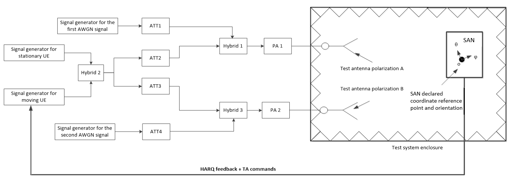

Physical resource block number.
Physical resource block number.| 3GPP TS 38.181 V17.8.0 (2025-03) | |
|---|---|
| Technical Specification | |
3rd Generation Partnership Project; Technical Specification Group Radio Access Network; NR; Satellite Access Node (SAN) conformance testing (Release 17) |
|
The present document has been developed within the
3rd Generation Partnership Project (3GPP TM) and may be
further elaborated for the purposes of 3GPP. |
|
|
Copyright Notification No part may be reproduced except as authorized by written
permission. 2025, 3GPP Organizational Partners (ARIB, ATIS, CCSA, ETSI, TSDSI, TTA, TTC). All rights reserved. UMTS is a Trade Mark of ETSI registered for the benefit of its members 3GPP is a Trade Mark of ETSI registered for the benefit of its
Members and of the 3GPP Organizational Partners GSM and the GSM logo are registered and owned by the GSM Association |
Foreword 27
1 Scope 29
2 References 29
3 Definitions of terms, symbols and abbreviations 30
3.1 Terms 30
3.2 Symbols 33
3.3 Abbreviations 34
4 General test conditions and declarations 35
4.1 Measurement uncertainties and test requirements 35
4.1.1 General 35
4.1.2 Acceptable uncertainty of Test System 36
4.1.2.1 General 36
4.1.2.2 Measurement of transmitter 37
4.1.2.3 Measurement of receiver 38
4.1.2.4 Measurement of performance requirements 40
4.1.3 Interpretation of measurement results 40
4.2 Requirement reference points 41
4.2.1 SAN type 1-H 41
4.2.2 SAN type 1-O 42
4.3 Satellite Access Node classes 42
4.4 Regional requirements 43
4.5 SAN configurations 43
4.5.1 SAN type 1-H transmit configurations 43
4.5.2 SAN type 1-H receive configurations 43
4.5.3 SAN type 1-O transmit configurations 44
4.5.4 SAN type 1-O receive configurations 44
4.5.5 Power supply options 45
4.6 Manufacturer declarations 45
4.7 Test configurations 52
4.7.1 General 52
4.7.2 Test signal used to build Test Configurations 53
4.7.3 NRTC1: Contiguous spectrum operation 53
4.7.3.1 NRTC1 generation 53
4.7.3.2 NRTC1 power allocation 53
4.8 Applicability of requirements 54
4.8.1 General 54
4.8.2 Requirement set applicability 54
4.8.3 Applicability of test configurations for single-band operation 54
4.9 RF channels and test models 56
4.9.1 RF channels 56
4.9.2 Test models 56
4.9.2.1 General 56
4.9.2.2 FR1 test models 56
4.9.2.2.1 FR1 test model 1.1 (NR-SAN-FR1-TM1.1) 57
4.9.2.2.2 FR1 test model 1.2 (NR-SAN-FR1-TM1.2) 58
4.9.2.2.3 FR1 test model 2 (NR-SAN-FR1-TM2) 58
4.9.2.2.4 FR1 test model 3.1 (NR-SAN-FR1-TM3.1) 59
4.9.2.2.5 FR1 test model 3.2 (NR-SAN-FR1-TM3.2) 59
4.9.2.2.6 FR1 test model 3.3 (NR-SAN-FR1-TM3.3) 60
4.9.2.3 Data content of Physical channels and Signals for NR-SAN-FR1-TM 61
4.9.2.3.1 PDCCH 61
4.9.2.3.2 PDSCH 61
4.10 Void 62
4.11 Reference coordinate system 62
4.12 Format and interpretation of tests 63
5 Operating bands and channel arrangement 64
6 Conducted transmitter characteristics 64
6.1 General 64
6.1.1 SAN type 1-H 64
6.2 Satellite Access Node output power 64
6.2.1 Definition and applicability 64
6.2.2 Minimum requirement 65
6.2.3 Test purpose 65
6.2.4 Method of test 65
6.2.4.1 Initial conditions 65
6.2.4.2 Procedure 65
6.2.5 Test requirement 66
6.3 Output power dynamics 66
6.3.1 General 66
6.3.2 RE power control dynamic range 66
6.3.2.1 Definition and applicability 66
6.3.2.2 Minimum requirement 66
6.3.2.3 Test purpose 66
6.3.3 Total power dynamic range 66
6.3.3.1 Definition and applicability 66
6.3.3.2 Minimum requirement 66
6.3.3.3 Test purpose 67
6.3.3.4 Method of test 67
6.3.3.4.1 Initial conditions 67
6.3.3.4.2 Procedure 67
6.3.3.5 Test requirements 67
6.4 Transmit ON/OFF power 68
6.5 Transmitted signal quality 68
6.5.1 General 68
6.5.2 Frequency error 68
6.5.2.1 Definition and applicability 68
6.5.2.2 Minimum Requirement 68
6.5.2.3 Test purpose 68
6.5.2.4 Method of test 68
6.5.2.5 Test Requirements 68
6.5.3 Modulation quality 69
6.5.3.1 Definition and applicability 69
6.5.3.2 Minimum Requirement 69
6.5.3.3 Test purpose 69
6.5.3.4 Method of test 69
6.5.3.4.1 Initial conditions 69
6.5.3.4.2 Procedure 69
6.5.3.5 Test requirements 70
6.6 Unwanted emissions 71
6.6.1 General 71
6.6.2 Occupied bandwidth 71
6.6.2.1 Definition and applicability 71
6.6.2.2 Minimum requirements 71
6.6.2.3 Test purpose 71
6.6.2.4 Method of test 71
6.6.2.4.1 Initial conditions 71
6.6.2.4.2 Procedure 72
6.6.2.5 Test requirements 72
6.6.3 Adjacent Channel Leakage Power Ratio (ACLR) 72
6.6.3.1 Definition and applicability 72
6.6.3.2 Minimum requirement 72
6.6.3.3 Test purpose 73
6.6.3.4 Method of test 73
6.6.3.4.1 Initial conditions 73
6.6.3.4.2 Procedure 73
6.6.3.5 Test requirements 73
6.6.3.5.1 General requirements 73
6.6.3.5.2 Limits 73
6.6.4 Out-of-band emissions 74
6.6.4.1 Definition and applicability 74
6.6.4.2 Minimum requirement 74
6.6.4.3 Test purpose 75
6.6.4.4 Method of test 75
6.6.4.4.1 Initial conditions 75
6.6.4.4.2 Procedure 75
6.6.4.5 Test requirements 75
6.6.5 Transmitter spurious emissions 76
6.6.5.1 Definition and applicability 76
6.6.5.2 Minimum requirement 76
6.6.5.3 Test purpose 76
6.6.5.4 Method of test 76
6.6.5.4.1 Initial conditions 76
6.6.5.4.2 Procedure 77
6.6.5.5 Test requirements 77
6.6.5.5.1 Basic limits 77
6.7 Transmitter intermodulation 77
7 Conducted receiver characteristics 78
7.1 General 78
7.2 Reference sensitivity level 78
7.2.1 Definition and applicability 78
7.2.2 Minimum requirement 78
7.2.3 Test purpose 78
7.2.4 Method of test 78
7.2.4.1 Initial conditions 78
7.2.4.2 Procedure 78
7.2.5 Test requirements 79
7.3 Dynamic range 80
7.3.1 Definition and applicability 80
7.3.2 Minimum requirement 80
7.3.3 Test purpose 80
7.3.4 Method of test 80
7.3.4.1 Initial conditions 80
7.3.4.2 Procedure 80
7.3.5 Test requirements 80
7.4 In-band sensitivity and blocking 81
7.4.1 Adjacent Channel Selectivity (ACS) 81
7.4.1.1 Definition and applicability 81
7.4.1.2 Minimum requirement 81
7.4.1.3 Test purpose 81
7.4.1.4 Method of test 81
7.4.1.4.1 Initial conditions 81
7.4.1.4.2 Procedure 81
7.4.1.5 Test requirements 82
7.4.2 In-band blocking 82
7.5 Out-of-band blocking 83
7.5.1 Definition and applicability 83
7.5.2 Minimum requirement 83
7.5.3 Test purpose 83
7.5.4 Method of test 83
7.5.4.1 Initial conditions 83
7.5.4.2 Procedure 83
7.5.5 Test requirements 83
7.6 Receiver spurious emission 84
7.7 Receiver intermodulation 84
7.8 In-channel selectivity 84
7.8.1 Definition and applicability 84
7.8.2 Minimum requirement 84
7.8.3 Test purpose 84
7.8.4 Method of test 84
7.8.4.1 Initial conditions 84
7.8.4.2 Procedure 84
7.8.5 Test requirements 85
8 Conducted performance characteristics 86
8.1 General 86
8.1.1 Scope and definitions 86
8.1.2 Applicability rule 87
8.1.2.1 General 87
8.1.2.2 Applicability of PUSCH performance requirements 87
8.1.2.2.1 Applicability of requirements for different subcarrier spacings 87
8.1.2.2.2 Applicability of requirements for different channel bandwidths 87
8.1.2.2.3 Applicability of requirements for different configurations 87
8.1.2.2.4 Applicability of PUSCH repetition type A requirements 87
8.1.2.3 Applicability of PUCCH performance requirements 87
8.1.2.3.1 Applicability of requirements for different formats 87
8.1.2.3.2 Applicability of requirements for different subcarrier spacings 87
8.1.2.3.3 Applicability of requirements for different channel bandwidths 87
8.1.2.3.4 Applicability of requirements for different configurations 88
8.1.2.3.5 Applicability of requirements for multi-slot PUCCH 88
8.1.2.4 Applicability of PRACH performance requirements 88
8.1.2.4.1 Applicability of requirements for different formats 88
8.1.2.4.2 Applicability of requirements for different subcarrier spacings 88
8.1.2.4.3 Applicability of requirements for different channel bandwidths 88
8.2 Performance requirements for PUSCH 88
8.2.1 Performance requirements for PUSCH with transform precoding disabled 88
8.2.1.1 Definition and applicability 88
8.2.1.2 Minimum Requirement 88
8.2.1.3 Test Purpose 88
8.2.1.4 Method of test 89
8.2.1.4.1 Initial Conditions 89
8.2.1.4.2 Procedure 89
8.2.1.5 Test Requirement 90
8.2.2 Performance requirements for PUSCH with transform precoding enabled 91
8.2.2.1 Definition and applicability 91
8.2.2.2 Minimum Requirement 91
8.2.2.3 Test Purpose 91
8.2.2.4 Method of test 91
8.2.2.4.1 Initial Conditions 91
8.2.2.4.2 Procedure 91
8.2.2.5 Test Requirement 92
8.2.3 Performance requirements for UL timing adjustment 93
8.2.3.1 Definition and applicability 93
8.2.3.2 Minimum Requirement 94
8.2.3.3 Test Purpose 94
8.2.3.4 Method of test 94
8.2.3.4.1 Initial Conditions 94
8.2.3.4.2 Procedure 94
8.2.3.5 Test Requirement for Normal Mode 95
8.2.4 Performance requirements for PUSCH repetition Type A 96
8.2.4.1 Definition and applicability 96
8.2.4.2 Minimum Requirement 96
8.2.4.3 Test Purpose 96
8.2.4.4 Method of test 96
8.2.4.4.1 Initial Conditions 96
8.2.4.4.2 Procedure 96
8.2.4.5 Test Requirement 97
8.3 Performance requirements for PUCCH 98
8.3.1 Performance requirements for PUCCH format 0 98
8.3.1.1 Definition and applicability 98
8.3.1.2 Minimum Requirement 98
8.3.1.3 Test purpose 98
8.3.1.4 Method of test 98
8.3.1.4.1 Initial conditions 98
8.3.1.4.2 Procedure 99
8.3.1.5 Test Requirement 99
8.3.2 Performance requirements for PUCCH format 1 100
8.3.2.1 NACK to ACK detection 100
8.3.2.1.1 Definition and applicability 100
8.3.2.1.2 Minimum Requirement 100
8.3.2.1.3 Test purpose 100
8.3.2.1.4 Method of test 100
8.3.2.1.4.1 Initial Conditions 100
8.3.2.1.4.2 Procedure 101
8.3.2.1.5 Test Requirement 101
8.3.2.2 ACK missed detection 102
8.3.2.2.1 Definition and applicability 102
8.3.2.2.2 Minimum Requirement 102
8.3.2.2.3 Test purpose 102
8.3.2.2.4 Method of test 102
8.3.2.2.4.1 Initial Conditions 102
8.3.2.2.4.2 Procedure 102
8.3.2.2.5 Test Requirement 103
8.3.3 Performance requirements for PUCCH format 2 104
8.3.3.1 ACK missed detection 104
8.3.3.1.1 Definition and applicability 104
8.3.3.1.2 Minimum requirements 104
8.3.3.1.3 Test purpose 104
8.3.3.1.4 Method of test 104
8.3.3.1.4.1 Initial Condition 104
8.3.3.1.4.2 Procedure 104
8.3.3.1.5 Test requirements 105
8.3.3.2 UCI BLER performance requirements 106
8.3.3.2.1 Definition and applicability 106
8.3.3.2.2 Minimum Requirement 106
8.3.3.2.3 Test purpose 106
8.3.3.2.4 Method of test 106
8.3.3.2.4.1 Initial Condition 106
8.3.3.2.4.2 Procedure 106
8.3.3.2.5 Test requirements 107
8.3.4 Performance requirements for PUCCH format 3 107
8.3.4.1 Definition and applicability 107
8.3.4.2 Minimum requirement 108
8.3.4.3 Test purpose 108
8.3.4.4 Method of test 108
8.3.4.4.1 Initial conditions 108
8.3.4.4.2 Procedure 108
8.3.4.5 Test requirement 109
8.3.5 Performance requirements for PUCCH format 4 109
8.3.5.1 Definition and applicability 109
8.3.5.2 Minimum requirement 109
8.3.5.3 Test purpose 109
8.3.5.4 Method of test 110
8.3.5.4.1 Initial conditions 110
8.3.5.4.2 Procedure 110
8.3.5.5 Test requirement 111
8.3.6 Performance requirements for multi-slot PUCCH 111
8.3.6.1 Performance requirements for multi-slot PUCCH format 1 111
8.3.6.1.1 NACK to ACK detection 111
8.3.6.1.1.1 Definition and applicability 111
8.3.6.1.1.2 Minimum Requirement 111
8.3.6.1.1.3 Test purpose 111
8.3.6.1.1.4 Method of test 112
8.3.6.1.1.4.1 Initial conditions 112
8.3.6.1.1.4.2 Procedure 112
8.3.6.1.1.5 Test Requirement 112
8.3.6.1.2 ACK missed detection 113
8.3.6.1.2.1 Definition and applicability 113
8.3.6.1.2.2 Minimum Requirement 113
8.3.6.1.2.3 Test purpose 113
8.3.6.1.2.4 Method of test 113
8.3.6.1.2.4.1 Initial conditions 113
8.3.6.1.2.4.2 Procedure 113
8.3.6.1.2.5 Test Requirement 114
8.4 Performance requirements for PRACH 115
8.4.1 PRACH false alarm probability and missed detection 115
8.4.1.1 Definition and applicability 115
8.4.1.2 Minimum requirement 115
8.4.1.3 Test purpose 115
8.4.1.4 Method of test 115
8.4.1.4.1 Initial conditions 115
8.4.1.4.2 Procedure 116
8.4.1.5 Test requirement for Normal Mode 117
9 Radiated transmitter characteristics 118
9.1 General 118
9.2 Radiated transmit power 118
9.2.1 Definition and applicability 118
9.2.2 Minimum requirement 118
9.2.3 Test purpose 118
9.2.4 Method of test 118
9.2.4.1 Initial conditions 118
9.2.4.2 Procedure 119
9.2.5 Test requirement 119
9.3 OTA SAN output power 119
9.3.1 Definition and applicability 119
9.3.2 Minimum requirement 119
9.3.3 Test purpose 119
9.3.4 Method of test 120
9.3.4.1 Initial conditions 120
9.3.4.2 Procedure 120
9.3.5 Test requirement 120
9.4 OTA output power dynamics 120
9.4.1 General 120
9.4.2 OTA RE power control dynamic range 121
9.4.2.1 Definition and applicability 121
9.4.2.2 Minimum requirement 121
9.4.2.3 Method of test 121
9.4.3 OTA total power dynamic range 121
9.4.3.1 Definition and applicability 121
9.4.3.2 Minimum requirement 121
9.4.3.3 Test purpose 121
9.4.3.4 Method of test 121
9.4.3.4.1 Initial conditions 121
9.4.3.4.2 Procedure 122
9.4.3.5 Test requirement 122
9.4.3.5.1 SAN type 1-O 122
9.5 OTA transmit ON/OFF power 123
9.6 OTA transmitted signal quality 123
9.6.1 General 123
9.6.2 OTA frequency error 123
9.6.2.1 Definition and applicability 123
9.6.2.2 Minimum Requirement 123
9.6.2.3 Test purpose 123
9.6.2.4 Method of test 123
9.6.2.4.1 Initial conditions 123
9.6.2.5 Test Requirements 123
9.6.3 OTA modulation quality 123
9.6.3.1 Definition and applicability 123
9.6.3.2 Minimum Requirement 124
9.6.3.3 Test purpose 124
9.6.3.4 Method of test 124
9.6.3.4.1 Initial conditions 124
9.6.3.4.2 Procedure 124
9.6.3.5 Test requirements 125
9.6.3.5.1 SAN type 1-O 125
9.7 OTA unwanted emissions 126
9.7.1 General 126
9.7.2 OTA occupied bandwidth 126
9.7.2.1 General 126
9.7.2.2 Minimum requirement 126
9.7.2.3 Test purpose 126
9.7.2.4 Method of test 127
9.7.2.4.1 Initial conditions 127
9.7.2.4.2 Procedure 127
9.7.2.5 Test requirement 128
9.7.3 OTA Adjacent Channel Leakage Power Ratio (ACLR) 128
9.7.3.1 Definition and applicability 128
9.7.3.2 Minimum requirement 128
9.7.3.3 Test purpose 128
9.7.3.4 Method of test 128
9.7.3.4.1 Initial conditions 128
9.7.3.4.2 Procedure 128
9.7.3.5 Test requirements 129
9.7.4 OTA out-of-band emissions 130
9.7.4.1 Definition and applicability 130
9.7.4.2 Minimum requirement 130
9.7.4.3 Test purpose 130
9.7.4.4 Method of test 130
9.7.4.4.1 Initial conditions 130
9.7.4.4.2 Procedure 130
9.7.4.5 Test requirements 131
9.7.5 OTA transmitter spurious emissions 131
9.7.5.1 General 131
9.7.5.2 General OTA transmitter spurious emissions requirements 132
9.7.5.2.1 Definition and applicability 132
9.7.5.2.2 Minimum requirement 132
9.7.5.2.3 Test purpose 132
9.7.5.2.4 Method of test 132
9.7.5.2.4.1 Initial conditions 132
9.7.5.2.4.2 Procedure 132
9.7.5.2.5 Test requirement 133
9.7.5.2.5.1 Test requirement for SAN type 1-O 133
9.8 OTA transmitter intermodulation 133
10 Radiated receiver characteristic 133
10.1 General 133
10.2 OTA sensitivity 134
10.2.1 Definition and applicability 134
10.2.2 Minimum requirement 135
10.2.3 Test Purpose 135
10.2.4 Method of test 135
10.2.4.1 Initial conditions 135
10.2.4.2 Procedure 135
10.2.5 Test requirements 136
10.2.5.1 General 136
10.2.5.2 Test requirements for SAN type 1-H and SAN type 1-O 136
10.3 OTA reference sensitivity level 136
10.3.1 Definition and applicability 136
10.3.2 Minimum requirement 136
10.3.3 Test Purpose 136
10.3.4 Method of test 137
10.3.4.1 Initial conditions 137
10.3.4.2 Procedure 137
10.3.5 Test requirements 137
10.3.5.1 General 137
10.3.5.2 Test requirements for SAN type 1-O 137
10.4 OTA dynamic range 138
10.4.1 Definition and applicability 138
10.4.2 Minimum requirement 138
10.4.3 Test purpose 138
10.4.4 Method of test 139
10.4.4.1 Initial conditions 139
10.4.4.2 Procedure 139
10.4.5 Test requirement 139
10.4.5.1 General 139
10.4.5.2 Test requirements for SAN type 1-O 139
10.5 OTA in-band selectivity and blocking 140
10.5.1 OTA adjacent channel selectivity 140
10.5.1.1 Definition and applicability 140
10.5.1.2 Minimum requirement 140
10.5.1.3 Test purpose 140
10.5.1.4 Method of test 140
10.5.1.4.1 Initial conditions 140
10.5.1.4.2 Procedure 141
10.5.1.5 Test requirement 141
10.5.1.5.1 General 141
10.5.1.5.2 Test requirements for SAN type 1-O 141
10.5.2 OTA in-band blocking 142
10.6 OTA out-of-band blocking 142
10.6.1 Definition and applicability 142
10.6.2 Minimum requirement 142
10.6.3 Test purpose 142
10.6.4 Method of test 142
10.6.4.1 Initial conditions 142
10.6.4.2 Procedure 143
10.6.5 Test requirements 143
10.7 OTA receiver spurious emissions 144
10.8 OTA receiver intermodulation 144
10.9 OTA in-channel selectivity 144
10.9.1 Definition and applicability 144
10.9.2 Minimum requirement 144
10.9.3 Test purpose 144
10.9.4 Method of test 144
10.9.4.1 Initial conditions 144
10.9.4.2 Procedure 145
10.9.5 Test requirement 145
10.9.5.1 SAN type 1-O 145
11 Radiated performance requirements 146
11.1 General 146
11.1.1 Scope and definitions 146
11.1.2 OTA demodulation branches 147
11.1.3 Applicability rule 147
11.1.3.1 General 147
11.1.3.2 Applicability of PUSCH performance requirements 147
11.1.3.2.1 Applicability of requirements for different subcarrier spacings 147
11.1.3.2.2 Applicability of requirements for different channel bandwidths 148
11.1.3.2.3 Applicability of requirements for different configurations 148
11.1.3.2.4 Applicability of PUSCH repetition type A requirements 148
11.1.3.3 Applicability of PUCCH performance requirements 148
11.1.3.3.1 Applicability of requirements for different formats 148
11.1.3.3.2 Applicability of requirements for different subcarrier spacings 148
11.1.3.3.3 Applicability of requirements for different channel bandwidths 148
11.1.3.3.4 Applicability of requirements for different configurations 148
11.1.3.3.5 Applicability of requirements for multi-slot PUCCH 148
11.1.3.4 Applicability of PRACH performance requirements 149
11.1.3.4.1 Applicability of requirements for different formats 149
11.1.3.4.2 Applicability of requirements for different subcarrier spacings 149
11.1.3.4.3 Applicability of requirements for different channel bandwidths 149
11.2 OTA performance requirements for PUSCH 149
11.2.1 Performance requirements for PUSCH with transform precoding disabled 149
11.2.1.1 Definition and applicability 149
11.2.1.2 Minimum Requirement 149
11.2.1.3 Test Purpose 149
11.2.1.4 Method of test 149
11.2.1.4.1 Initial Conditions 149
11.2.1.4.2 Procedure 149
11.2.1.5 Test Requirement 150
11.2.2 Performance requirements for PUSCH with transform precoding enabled 152
11.2.2.1 Definition and applicability 152
11.2.2.2 Minimum Requirement 152
11.2.2.3 Test Purpose 152
11.2.2.4 Method of test 152
11.2.2.4.1 Initial Conditions 152
11.2.2.4.2 Procedure 152
11.2.2.5 Test Requirement 153
11.2.3 Performance requirements for UL timing adjustment 155
11.2.3.1 Definition and applicability 155
11.2.3.2 Minimum Requirement 155
11.2.3.3 Test Purpose 155
11.2.3.4 Method of test 155
11.2.3.4.1 Initial Conditions 155
11.2.3.4.2 Procedure 155
11.2.3.5 Test Requirement 156
11.2.4 Performance requirements for PUSCH repetition Type A 157
11.2.4.1 Definition and applicability 157
11.2.4.2 Minimum Requirement 157
11.2.4.3 Test Purpose 157
11.2.4.4 Method of test 158
11.2.4.4.1 Initial Conditions 158
11.2.4.4.2 Procedure 158
11.2.4.5 Test Requirement 159
11.3 OTA performance requirements for PUCCH 160
11.3.1 Performance requirements for PUCCH format 0 160
11.3.1.1 Definition and applicability 160
11.3.1.2 Minimum Requirement 160
11.3.1.3 Test purpose 160
11.3.1.4 Method of test 160
11.3.1.4.1 Initial conditions 160
11.3.1.4.2 Procedure 160
11.3.1.5 Test Requirement 161
11.3.1.5.1 Test requirement for SAN type 1-O 161
11.3.2 Performance requirements for PUCCH format 1 162
11.3.2.1 NACK to ACK detection 162
11.3.2.1.1 Definition and applicability 162
11.3.2.1.2 Minimum Requirement 162
11.3.2.1.3 Test purpose 162
11.3.2.1.4 Method of test 162
11.3.2.1.4.1 Initial Conditions 162
11.3.2.1.4.2 Procedure 163
11.3.2.1.5 Test Requirement 164
11.3.2.2 ACK missed detection 164
11.3.2.2.1 Definition and applicability 164
11.3.2.2.2 Minimum Requirement 164
11.3.2.2.3 Test purpose 164
11.3.2.2.4 Method of test 164
11.3.2.2.4.1 Initial Conditions 164
11.3.2.2.4.2 Procedure 165
11.3.2.2.5 Test Requirement 166
11.3.3 Performance requirements for PUCCH format 2 166
11.3.3.1 ACK missed detection performance requirements 166
11.3.3.1.1 Definition and applicability 166
11.3.3.1.2 Minimum Requirement 166
11.3.3.1.3 Test Purpose 166
11.3.3.1.4 Method of test 166
11.3.3.1.4.1 Initial conditions 166
11.3.3.1.4.2 Procedure 167
11.3.3.1.5 Test requirement 168
11.3.3.2 UCI BLER performance requirements 168
11.3.3.2.1 Definition and applicability 168
11.3.3.2.2 Minimum Requirement 168
11.3.3.2.3 Test Purpose 168
11.3.3.2.4 Method of test 168
11.3.3.2.4.1 Initial conditions 168
11.3.3.2.4.2 Procedure 168
11.3.3.2.5 Test requirement 169
11.3.4 Performance requirements for PUCCH format 3 170
11.3.4.1 Definition and applicability 170
11.3.4.2 Minimum requirement 170
11.3.4.3 Test purpose 170
11.3.4.4 Method of test 170
11.3.4.4.1 Initial conditions 170
11.3.4.4.2 Procedure 170
11.3.4.5 Test requirement 171
11.3.4.5.1 Test requirement for SAN type 1-O 171
11.3.5 Performance requirements for PUCCH format 4 172
11.3.5.1 Definition and applicability 172
11.3.5.2 Minimum requirement 172
11.3.5.3 Test purpose 172
11.3.5.4 Method of test 172
11.3.5.4.1 Initial conditions 172
11.3.5.4.2 Procedure 172
11.3.5.5 Test requirement 173
11.3.5.5.1 Test requirement for SAN type 1-O 173
11.3.6 Performance requirements for multi-slot PUCCH format 174
11.3.6.1 Performance requirements for multi-slot PUCCH format 1 174
11.3.6.1.1 NACK to ACK detection 174
11.3.6.1.1.1 Definition and applicability 174
11.3.6.1.1.2 Minimum Requirement 174
11.3.6.1.1.3 Test purpose 174
11.3.6.1.1.4 Method of test 174
11.3.6.1.1.4.1 Initial conditions 174
11.3.6.1.1.4.2 Procedure 174
11.3.6.1.1.5 Test Requirement 175
11.3.6.1.2 ACK missed detection 176
11.3.6.1.2.1 Definition and applicability 176
11.3.6.1.2.2 Minimum Requirement 176
11.3.6.1.2.3 Test purpose 176
11.3.6.1.2.4 Method of test 176
11.3.6.1.2.4.1 Initial Conditions 176
11.3.6.1.2.4.2 Procedure 176
11.3.6.1.2.5 Test Requirement 177
11.4 OTA performance requirements for PRACH 178
11.4.1 PRACH false alarm probability and missed detection 178
11.4.1.1 Definition and applicability 178
11.4.1.2 Minimum requirement 178
11.4.1.3 Test purpose 178
11.4.1.4 Method of test 178
11.4.1.4.1 Initial conditions 178
11.4.1.4.2 Procedure 179
11.4.1.5 Test requirement 180
Annex A (normative): Reference measurement channel 181
A.1 Fixed Reference Channels for RF Rx requirement (QPSK, R=1/3) 181
A.2 Fixed Reference Channels for dynamic range (16QAM, R=2/3) 182
A.3 Fixed Reference Channels for performance requirements (QPSK, R=308/1024) 182
A.4 PRACH test preambles 185
Annex B (informative): Environmental requirements for the SAN equipment 185
B.1 General 185
B.2 Normal test environment 185
B.2.1 Normal test environment for SPRF 185
B.2.2 Normal test environment for SAN terrestrial equipment 186
B.3 Void 186
B.4 Vibration 186
B.5 Measurement of test environment 186
Annex C (informative): Test tolerances and derivation of test requirements 187
C.1 Measurement of transmitter 187
C.2 Measurement of receiver 188
C.3 Measurement of performance requirements 190
Annex D (informative): Measurement system set-up 191
D.1 SAN type 1-H transmitter 191
D.1.1 SAN output power, output power dynamics, frequency error, EVM, unwanted emissions for SAN type 1-H 191
D.1.2 Transmitter intermodulation for SAN type 1-H 192
D.1.3 Transmitter spurious emissions for SAN type 1-H 192
D.1.4 Time alignment error for SAN type 1-H 193
D.2 SAN type 1-H receiver 194
D.2.1 Reference sensitivity level for SAN type 1-H 194
D.2.2 Receiver dynamic range for SAN type 1-H 194
D.2.3 Receiver adjacent channel selectivity and narrowband blocking for SAN type 1-H 195
D.2.4 Receiver spurious emissions 195
D.2.5 Receiver In-channel selectivity for SAN type 1-H 195
D.2.6 Receiver intermodulation for SAN type 1-H 195
D.3 SAN type 1-H and type 1-O transmitter 196
D.3.1 Radiated transmit power, output power, output power dynamics, transmitted signal quality, OTA unwanted emissions, OTA transmitter spurious emissions 196
D.4 SAN type 1-H and type 1-O receiver 196
D.4.1 OTA sensitivity and OTA reference sensitivity level 197
D.4.2 OTA dynamic range, OTA ACS, OTA ICS 197
D.4.3 OTA out-of-band blocking 198
D.5 Void 198
D.6 SAN type 1-H performance requirements 199
D.6.1 Performance requirements for PUSCH, single user PUCCH, PRACH on single antenna port in multipath fading conditions 199
D.6.2 Performance requirements for PUSCH and PRACH in static conditions 200
D.6.3 Performance requirements for UL timing adjustment 201
D.7 SAN type 1-O performance requirements 201
Annex E (normative): Characteristic of interfering signal 202
Annex F (normative): Void 203
Annex G (normative): Propagation conditions 203
G.1 Static propagation condition 203
G.2 Multi-path fading propagation conditions 203
G.2.1 Delay profiles 203
G.2.1.1 Delay profiles for FR1-NTN 204
G.2.2 Combinations of channel model parameters 204
G.2.3 MIMO channel correlation matrices 204
G.2.3.1 MIMO correlation matrices using Uniform Linear Array 205
G.2.3.1.1 Definition of MIMO correlation matrices 205
G.2.3.1.2 MIMO correlation matrices at high, medium and low level 205
G.3 Moving propagation conditions 206
Annex H (normative): In-channel Tx test 207
H.1 General 207
H.2 Basic principles 207
H.2.1 Output signal of the TX under test 207
H.2.2 Ideal signal 208
H.2.3 Measurement results 208
H.2.4 Measurement points 208
H.3 Pre-FFT minimization process 209
H.4 Timing of the FFT window 210
H.5 Resource element TX power 211
H.6 Post-FFT equalisation 211
H.7 EVM 212
H.7.0 General 212
H.7.1 Averaged EVM (FDD) 213
Annex I (informative): Change history 214
This Technical Specification has been produced by the 3rd Generation Partnership Project (3GPP).
The contents of the present document are subject to continuing work within the TSG and may change following formal TSG approval. Should the TSG modify the contents of the present document, it will be re-released by the TSG with an identifying change of release date and an increase in version number as follows:
Version x.y.z
where:
x the first digit:
1 presented to TSG for information;
2 presented to TSG for approval;
3 or greater indicates TSG approved document under change control.
y the second digit is incremented for all changes of substance, i.e. technical enhancements, corrections, updates, etc.
z the third digit is incremented when editorial only changes have been incorporated in the document.
In the present document, modal verbs have the following meanings:
shall indicates a mandatory requirement to do something
shall not indicates an interdiction (prohibition) to do something
The constructions "shall" and "shall not" are confined to the context of normative provisions, and do not appear in Technical Reports.
The constructions "must" and "must not" are not used as substitutes for "shall" and "shall not". Their use is avoided insofar as possible, and they are not used in a normative context except in a direct citation from an external, referenced, non-3GPP document, or so as to maintain continuity of style when extending or modifying the provisions of such a referenced document.
should indicates a recommendation to do something
should not indicates a recommendation not to do something
may indicates permission to do something
need not indicates permission not to do something
The construction "may not" is ambiguous and is not used in normative elements. The unambiguous constructions "might not" or "shall not" are used instead, depending upon the meaning intended.
can indicates that something is possible
cannot indicates that something is impossible
The constructions "can" and "cannot" are not substitutes for "may" and "need not".
will indicates that something is certain or expected to happen as a result of action taken by an agency the behaviour of which is outside the scope of the present document
will not indicates that something is certain or expected not to happen as a result of action taken by an agency the behaviour of which is outside the scope of the present document
might indicates a likelihood that something will happen as a result of action taken by some agency the behaviour of which is outside the scope of the present document
might not indicates a likelihood that something will not happen as a result of action taken by some agency the behaviour of which is outside the scope of the present document
In addition:
is (or any other verb in the indicative mood) indicates a statement of fact
is not (or any other negative verb in the indicative mood) indicates a statement of fact
The constructions "is" and "is not" do not indicate requirements.
The present document specifies the Radio Frequency (RF) test methods and conformance requirements for NR Satellite Access Node (SAN) type 1-H and type 1-O. These have been derived from and are consistent with the conducted requirements for SAN type 1-H and radiated requirement for SAN type 1-H and type 1-O in NR SAN specification defined in TS 38.108 [2].
The following documents contain provisions which, through reference in this text, constitute provisions of the present document.
- References are either specific (identified by date of publication, edition number, version number, etc.) or nonspecific.
- For a specific reference, subsequent revisions do not apply.
- For a non-specific reference, the latest version applies. In the case of a reference to a 3GPP document (including a GSM document), a non-specific reference implicitly refers to the latest version of that document in the same Release as the present document.
[1] 3GPPTR21.905: "Vocabulary for 3GPP Specifications".
[2] 3GPP TS 38.108: Satellite Access Node radio transmission and reception
[3] ITU-R Recommendation M.1545, "Measurement uncertainty as it applies to test limits for the terrestrial component of International Mobile Telecommunications-2000"
[4] ITU-R Recommendation SM.329: "Unwanted emissions in the spurious domain"
[5] ITU-R Recommendation SM.328: "Spectra and bandwidth of emissions"
[6] ITU-R Recommendation SM.1541-6: "Unwanted emissions in the out-of-band domain".
[7] 3GPPTS38.212: "NR; Multiplexing and channel coding"
[8] 3GPPTS38.211: "NR; Physical channels and modulation"
[9] 3GPPTS38.214: "NR; Physical layer procedures for data"
[10] ITU-T Recommendation O.150, "Equipment for the measurement of digital and analogue/digital parameters"
[11] 3GPPTR38.901: "Study on channel model for frequencies from 0.5 to 100 GHz"
[12] 3GPPTS38.101-5: "NR; User Equipment (UE) radio transmission and reception; Part 5: Satellite access Radio Frequency (RF) and performance requirements
[13] 3GPP TR37.941: "Radio Frequency (RF) conformance testing background for radiated Base Station (BS) requirements"
[14] IEC 60 068-2-1 (2007): "Environmental testing - Part 2: Tests. Tests A: Cold"
[15] IEC 60 068-2-2: (2007): "Environmental testing - Part 2: Tests. Tests B: Dry heat"
[16] IEC 60 068-2-6: (2007): "Environmental testing - Part 2: Tests - Test Fc: Vibration (sinusoidal)"
[17] 3GPP TR 38.811: "Study on New Radio (NR) to support non-terrestrial networks (Release 15)"
[18] 3GPP TS 38.141-2: "NR; Base Station (BS) conformance testing Part 2: Radiated conformance testing"
[19] IEC 60721-3-3: "Classification of environmental conditions Part 3-3: Classification of groups of environmental parameters and their severities Stationary use at weatherprotected locations"
[20] IEC 60721-3-4: "Classification of environmental conditions - Part 3-4: Classification of groups of environmental parameters and their severities - Stationary use at non-weatherprotected locations"
[21] IEC 60721-1: "Classification of environmental conditions Part 1: Environmental parameters and their severities"
For the purposes of the present document, the terms given in TR21.905[1] and the following apply. A term defined in the present document takes precedence over the definition of the same term, if any, in TR21.905[1].
basic limit: emissions limit relating to the power supplied by a single transmitter to a single antenna transmission line in ITU-R SM.329 [4] used for the formulation of unwanted emission requirements for FR1.
beam: beam (of the antenna) is the main lobe of the radiation pattern of an antenna array.
NOTE: For certain antenna array, there may be more than one beam.
beam centre direction: direction equal to the geometric centre of the half-power contour of the beam.
beam direction pair: data set consisting of the beam centre direction and the related beam peak direction.
beam peak direction: direction where the maximum EIRP is found.
beamwidth: beam which has a half-power contour that is essentially elliptical, the half-power beamwidths in the two pattern cuts that respectively contain the major and minor axis of the ellipse.
Channel edge: lowest or highest frequency of the NR carrier, separated by the SAN channel bandwidth.
demodulation branch: single input of the SAN receiver to the demodulation algorithms.
directional requirement: requirement which is applied in a specific direction within the OTA coverage range for the Tx and when the AoA of the incident wave of a received signal is within the OTA REFSENS RoAoA or the minSENS RoAoA as appropriate for the receiver.
equivalent isotropic radiated power: equivalent power radiated from an isotropic directivity device producing the same field intensity at a point of observation as the field intensity radiated in the direction of the same point of observation by the discussed device.
NOTE: Isotropic directivity is equal in all directions (i.e. 0 dBi).
equivalent isotropic sensitivity: sensitivity for an isotropic directivity device equivalent to the sensitivity of the discussed device exposed to an incoming wave from a defined AoA.
NOTE 1: The sensitivity is the minimum received power level at which specific requirement is met.
NOTE 2: Isotropic directivity is equal in all directions (i.e. 0 dBi).
feeder link: Wireless link between satellite-Gateway and satellite.
Geostationary Earth Orbit: Circular orbit at 35,786 km above the Earth's equator and following the direction of the Earth's rotation. An object in such an orbit has an orbital period equal to the Earth's rotational period and thus appears motionless, at a fixed position in the sky, to ground observers.
Low Earth Orbit: Orbit around the Earth with an altitude between 300 km, and 1500 km.
Highest Carrier: The carrier with the highest carrier frequency transmitted/received in a specified frequency band.
Lowest Carrier: The carrier with the lowest carrier frequency transmitted/received in a specified frequency band.
maximum carrier output power: mean power level measured per carrier at the indicated interface, during the transmitter ON period in a specified reference condition.
maximum carrier TRP output power: mean power level measured per RIB during the transmitter ON period for a specific carrier in a specified reference condition and corresponding to the declared rated carrier TRP output power (Prated,c,TRP).
maximum total output power: mean power level measured within the operating band at the indicated interface, during the transmitter ON period in a specified reference condition.
maximum total TRP output power: mean power level measured per RIB during the transmitter ON period in a specified reference condition and corresponding to the declared rated total TRP output power (Prated,t,TRP).
measurement bandwidth: RF bandwidth in which an emission level is specified.
minSENS: the lowest declared EIS value for the OSDD's declared for OTA sensitivity requirement.
minSENS RoAoA: The reference RoAoA associated with the OSDD with the lowest declared EIS.
minimum elevation angle: Minimum angle under which the satellite can be seen by a UE.
necessary bandwidth: The width of the frequency band which is just sufficient to ensure the transmission of information at the rate and with the quality required under specified conditions.
non-terrestrial networks: Networks, or segments of networks, using an airborne or space-borne vehicle to embark a transmission equipment relay node or SAN.
operating band: frequency range in which NR operates (paired or unpaired), that is defined with a specific set of technical requirements.
NOTE: The operating band(s) for a SAN is declared by the manufacturer according to the designations in tables 5.2-1 and 5.2-2.
OTA coverage range: a common range of directions within which TX OTA requirements that are neither specified in the OTA peak directions sets nor as TRP requirement are intended to be met.
OTA peak directions set: set(s) ofbeam peak directionswithin which certain TX OTA requirements are intended to be met, where allOTA peak directions set(s)are subsets of theOTA coverage range.
NOTE: The beam peak directionsare related to a corresponding contiguous range or discrete list ofbeam centre directionsby thebeam direction pairsincluded in the set.
OTA REFSENS RoAoA: the RoAoA determined by the contour defined by the points at which the achieved EIS is 3dB higher than the achieved EIS in the reference direction assuming that for any AoA, the receiver gain is optimized for that AoA.
NOTE: This contour will be related to the average element/sub-array radiation pattern 3dB beamwidth.
OTA sensitivity directions declaration: set of manufacturer declarations comprising at least one set of declared minimum EIS values (with SAN channel bandwidth), and related directions over which the EIS applies.
NOTE: All the directions apply to all the EIS values in an OSDD.
polarization match: condition that exists when a plane wave, incident upon an antenna from a given direction, has a polarization that is the same as the receiving polarization of the antenna in that direction.
radiated interface boundary: operating band specific radiated requirements reference where the radiated requirements apply.
NOTE: For requirements based on EIRP/EIS, the radiated interface boundary is associated to the far-field region.
Radio Bandwidth: frequency difference between the upper edge of the highest used carrier and the lower edge of the lowest used carrier.
rated beam EIRP: For a declared beam and beam direction pair, the rated beam EIRP level is the maximum power that the SAN is declared to radiate at the associated beam peak direction during the transmitter ON period.
rated carrier output power: mean power level associated with a particular carrier the manufacturer has declared to be available at the indicated interface, during the transmitter ON period in a specified reference condition.
rated carrier TRP output power: mean power level declared by the manufacturer per carrier, for SAN operating in single carrier, multi-carrier, or carrier aggregation configurations that the manufacturer has declared to be available at the RIB during the transmitter ON period.
rated total output power: mean power level associated with a particular operating band the manufacturer has declared to be available at the indicated interface, during the transmitter ON period in a specified reference condition.
rated total TRP output power: mean power level declared by the manufacturer, that the manufacturer has declared to be available at the RIB during the transmitter ON period.
reference beam direction pair: declared beam direction pair, including reference beam centre direction and reference beam peak direction where the reference beam peak direction is the direction for the intended maximum EIRP within the OTA peak directions set.
receiver target: AoA in which reception is performed by SAN types 1-H or SAN type 1-O.
receiver target redirection range: union of all the sensitivity RoAoA achievable through redirecting the receiver target related to particular OSDD.
receiver target reference direction: direction inside the OTA sensitivity directions declaration declared by the manufacturer for conformance testing. For an OSDD without receiver target redirection range, this is a direction inside the sensitivity RoAoA.
reference RoAoA: the sensitivity RoAoA associated with the receiver target reference direction for each OSDD.
requirement set: one of the NR SAN requirement's set as defined for SAN type 1-H, SAN type 1-O.
SAN channel bandwidth: RF bandwidth supporting a single NR RF carrier with the transmission bandwidth configured in the uplink or downlink.
NOTE 1: The SAN channel bandwidth is measured in MHz and is used as a reference for transmitter and receiver RF requirements.
NOTE 2: It is possible for the SAN to transmit to and/or receive from one or more satellite UE bandwidth parts that are smaller than or equal to the SAN transmission bandwidth configuration, in any part of the SAN transmission bandwidth configuration.
SAN receiver: composite receiver function of a SAN receiving in an operating band.
SAN RF Bandwidth: RF bandwidth in which a SAN transmits and/or receives single or multiple carrier(s) within a supported operating band.
NOTE: In single carrier operation, the SAN RF Bandwidth is equal to the SAN channel bandwidth.
SAN RF Bandwidth edge: frequency of one of the edges of the SAN RF Bandwidth.
SAN transmission bandwidth configuration: set of resource blocks located within the SAN channel bandwidth which may be used for transmitting or receiving by the SAN.
SAN type 1-H: Satellite Access Node operating at FR1 with a requirement set consisting of conducted requirements defined at individual TAB connectors and OTA requirements defined at RIB.
SAN type 1-O: Satellite Access Node operating at FR1 with a requirement set consisting only of OTA requirements defined at the RIB.
SAN transponder bandwidth: Total bandwidth of the carrier(s) in operation by one SAN transponder.
NOTE: When the SAN transponder operates one carrier only, the SAN transponder bandwidth is equal to the SAN channel bandwidth of this carrier.
SAN transponder: part of the SAN permitting to receive, channelize and transmit signals within an allocated bandwidth.
satellite: A space-borne vehicle embarking a transparent payload, or a regenerative payload telecommunication transmitter, placed into Low-Earth Orbit (LEO) or Geostationary Earth Orbit (GEO).
Satellite Access Node (SAN): node providing NR user plane and control plane protocol terminations towards NTN satellite capable UE, and connected via the NG interface to the 5GC. It encompasses a transparent payload on board a NTN platform, with satellite-gateway and gNB functions.
satellite-gateway: An earth station or gateway is located at the surface of Earth, and providing sufficient RF power and RF sensitivity for accessing to the satellite.
sensitivity RoAoA: RoAoA within the OTA sensitivity directions declaration, within which the declared EIS(s) of an OSDD is intended to be achieved at any instance of time for a specific SAN direction setting.
TAB connector: transceiver array boundary connector.
total radiated power: is the total power radiated by the antenna.
NOTE: The total radiated power is the power radiating in all direction for two orthogonal polarizations. Total radiated power is defined in both the near-field region and the far-field region.
transceiver array boundary: conducted interface between the transceiver unit array and the composite antenna.
transmission bandwidth: RF Bandwidth of an instantaneous transmission from a satellite UE or SAN, measured in resource block units.
For the purposes of the present document, the following symbols apply:
Percentage of the mean transmitted power emitted outside the occupied bandwidth on the assigned channel.
BeW The beam width in
BeW The beam width in
BeW,REFSENS Beamwidth equivalent to the OTA REFSENS RoAoA in the -axis in degrees. Applicable for FR1 only.
BeW,REFSENS Beamwidth equivalent to the OTA REFSENS RoAoA in the -axis in degrees. Applicable for FR1 only.
BWConfig Transmission bandwidth configuration, where BWConfig = NRB x SCS x 12.
BWContiguous Contiguous transmission bandwidth, i.e. SAN channel bandwidth for single carrier.
BWGB,low The minimum guard band defined in clause 5.3.3 for lowest assigned component carrier.
BWGB,high The minimum guard band defined in clause 5.3.3 for highest assigned component carrier.
BWSAN The SAN transponder bandwidth
BWSAN,RF SAN RF channel bandwidth in MHz
f Separation between the channel edge frequency and the nominal -3dB point of the measuring filter closest to the carrier frequency.
FGlobal Global frequency raster granularity.
fmax f_offsetmax minus half of the bandwidth of the measuring filter.
fOOB Maximum offset of the out-of-band boundary from the uplink operating band edge.
minSENS Difference between conducted reference sensitivity and minSENS.
OTAREFSENS Difference between conducted reference sensitivity and OTA REFSENS.
FRaster Channel raster granularity.
EISminSENS The EIS declared for the minSENS RoAoA.
EISREFSENS OTA REFSENS EIS value.
FC RF reference frequency on the channel raster, given in table 5.4.2.2-1.
FC,low The Fc of the lowest carrier, expressed in MHz.
FC,high The Fc of the highest carrier, expressed in MHz.
FDL,low The lowest frequency of the downlink operating band.
FDL,high The highest frequency of the downlink operating band.
Ffilter Filter centre frequency.
Foffset,high Frequency offset from FC,high to the upper SAN RF Bandwidth edge.
Foffset,low Frequency offset from FC,low to the lower SAN RF Bandwidth edge.
f_offset Separation between the channel edge frequency and the centre of the measuring.
f_offsetmax The offset to the frequency fOBUE outside the downlink operating band.
FREF RF reference frequency.
FREF-Offs Offset used for calculating FREF.
FUL,low The lowest frequency of the uplink operating band.
FUL,high The highest frequency of the uplink operating band.
GBChannel Minimum guard band defined in clause 5.3.3.
Physical resource block number.
NRB Transmission bandwidth configuration, expressed in resource blocks.
NREF NR Absolute Radio Frequency Channel Number (NR-ARFCN).
NREF-Offs Offset used for calculating NREF scaling per cell, as calculated in clause 6.1.
PEIRP,N EIRP level for channel N.
Pmax,c,TABC The maximum carrier output power per TAB connector.
Pmax,c,TRP Maximum carrier TRP output power measured at the RIB(s), and corresponding to the declared rated carrier TRP output power (Prated,c,TRP).
Pmax,c,EIRP The maximum carrier EIRP when the SAN is configured at the maximum rated carrier output TRP (Prated,c,TRP).
Prated,c,sys Prated,c,sys,GEO for SAN GEO class or Prated,c,sys,LEO for SAN LEO class.
Prated,c,sys,GEO The sum of Prated,c,TABC for all TAB connectors for a single carrier of the SAN GEO class.
Prated,c,sys,LEO The sum of Prated,c,TABC for all TAB connectors for a single carrier of the SAN LEO class.
Prated,c,TABC Prated,c,TABC,GEO for SAN GEO class or Prated,c,TABC,LEO for SAN LEO class.
Prated,c,TABC,GEO The rated carrier output power per TAB connector of the SAN GEO class.
Prated,c,TABC,LEO The rated carrier output power per TAB connector of the SAN LEO class.
Prated,c,TRP Rated carrier TRP output power declared per RIB.
Prated,t,TABC The rated total output power declared at TAB connector.
Prated,t,TRP Rated total TRP output power declared per RIB.
Prated,t,sys The sum ofPrated,t,TABCfor allTABconnectors.
PREFSENS Conducted Reference Sensitivity power level.
SANChannel SAN channel bandwidth.
SSREF SS block reference frequency position.
TRPEstimate Numerically approximated TRP
TTOTA Test tolerance for OTA requirements
The angle in the reference coordinate system between the projection of the x/y plane and the radiation vector defined between -90 and 90. 0 represents the y/z plane. The angle is aligned with the down-tilt angle
The angle in the reference coordinate system between the x-axis and the projection of the radiation vector onto the x/y plane defined between -180 and 180
For the purposes of the present document, the abbreviations given in TR21.905[1] and the following apply. An abbreviation defined in the present document takes precedence over the definition of the same abbreviation, if any, in TR21.905[1].
AA Antenna Array
AAS Active Antenna System
ACLR Adjacent Channel Leakage Ratio
ACS Adjacent Channel Selectivity
AoA Angle of Arrival
AWGN Additive White Gaussian Noise
BW Bandwidth
CA Carrier Aggregation
CATR Compact Antenna Test Range
CP-OFDM Cyclic Prefix-OFDM
CW Continuous Wave
DFT-s-OFDM Discrete Fourier Transform-spread-OFDM
DM-RS Demodulation Reference Signal
EIRP Equivalent Isotropic Radiated Power
EIS Equivalent Isotropic Sensitivity
EUT Equipment Under Test
EVM Error Vector Magnitude
FDD Frequency Division Duplex
FR Frequency Range
FRC Fixed Reference Channel
GEO Geostationary Earth Orbiting
GSCN Global Synchronization Channel Number
ICS In-Channel Selectivity
LEO Low Earth Orbiting
MCS Modulation and Coding Scheme
NR New Radio
NR-ARFCN NR Absolute Radio Frequency Channel Number
NTN Non-Terrestrial Network
OOB Out-of-band
OOBE Out-of-band Emissions
OSDD OTA Sensitivity Directions Declaration
OTA Over-The-Air
PRB Physical Resource Block
PT-RS Phase Tracking Reference Signal
QAM Quadrature Amplitude Modulation
RB Resource Block
RDN Radio Distribution Network
RE Resource Element
REFSENS Reference Sensitivity
RF Radio Frequency
RIB Radiated Interface Boundary
RMS Root Mean Square (value)
RoAoA Range of Angles of Arrival
RF Radio Frequency
RX Receiver
SAN Satellite Access Node
SCS Sub-Carrier Spacing
SSB Synchronization Signal Block
TAB Transceiver Array Boundary
TRP Total Radiated Power
TT Test Tolerance
TX Transmitter
The requirements of this clause apply to all applicable tests in TS 38.181(the present document), i.e. to all conducted tests defined in FR1 for SAN type 1-H and radiated tests defined in FR1 for SAN type 1-H and SAN type 1-O. The frequency range FR1 is defined in clause 5.1 of TS 38.108 [2].
The minimum requirements are given in TS 38.108 [2]. Test Tolerances for the conducted test requirements (TT) and test Tolerances for the radiated test requirements (TTOTA) explicitly stated in the present document are given in annex C of the present document.
The test tolerances for the radiated test requirements (TTOTA) for SAN were reused from TR 37.941 [13]. Reuse of TR 37.941 [13] TTOTA values for SAN LEO radiated conformance testing is subject to the following conditions:
- EUT suitability to fit OTA chambers considered in TR 37.941 [13], and
- Environmental test conditions assumed for BS testing in TR 37.941 [13].
Reuse of TR 37.941 [13] TTOTA values for SAN GEO radiated conformance testing may not be justified for some products due to too large SAN GEO antenna array dimensions, and required OTA RF chamber size.
Test Tolerances are individually calculated for each test. Test Tolerances are used to relax the minimum requirements to create test requirements.
When a test requirement differs from the corresponding minimum requirement, then the Test Tolerance applied for the test is non-zero. The Test Tolerance for the test and the explanation of how the minimum requirement has been relaxed by the Test Tolerance are given in annex C.
The radiated requirements are classified according to spatial characteristics as shown in table 4.1.1-1 and table 4.1.1-2.
Table 4.1.1-1: Overview of radiated Tx requirements
| Tx requirement | Classification | Coverage range | Number of | |
|---|---|---|---|---|
| FR1 | conformance directions | |||
| Radiated transmit power | Directional | OTA peak directions set | 5 | |
| OTA Satellite Access Node output power | TRP | N/A | See TS 38.141-2 [18], annex I | |
| OTA output power dynamics | Directional | OTA peak directions set | 1 | |
| OTA modulation quality | Directional | OTA coverage range | 5 | |
| OTA frequency error | Directional | OTA coverage range | 1 | |
| OTA occupied bandwidth | Directional | OTA coverage range | 1 | |
| OTA ACLR | TRP | N/A | See TS 38.141-2 [18], annex I | |
| OTA out-of-band emissions | TRP | N/A | See TS 38.141-2 [18], annex I | |
| OTA transmitter spurious emission | General requirement | TRP | See TS 38.141-2 [18], annex I | See TS 38.141-2 [18], annex I |
| NOTE: Directional requirement does not imply one compliance direction only. The directional requirement applies to a single direction at a time. | ||||
Table 4.1.1-2: Overview of radiated Rx requirements
| Rx requirement | Classification | Applicability levels | Coverage range | Number of | |
|---|---|---|---|---|---|
| FR1 | FR1 | conformance directions | |||
| OTA sensitivity | Directional | Minimum EIS | OSDD | 5 | |
| OTA reference sensitivity level | Directional | OTA REFSENS | OTA REFSENS RoAoA | 5 | |
| OTA Dynamic range | Directional | OTA REFSENS | OTA REFSENS RoAoA | 1 | |
| OTA adjacent channel selectivity | Directional | minSENS | minSENS RoAoA | 1 | |
| OTA out-of-band blocking | General requirement | Directional | minSENS | minSENS RoAoA | 1 |
| OTA in-channel selectivity | Directional | minSENS | minSENS RoAoA | 1 | |
| NOTE: Directional requirement does not imply one compliance direction only. The directional requirement applies to a single direction at a time. | |||||
The maximum acceptable uncertainty of the Conducted Test System and OTA Test System are specified below for each test defined explicitly in the present specification, where appropriate. The maximum acceptable uncertainty of the Test System for test requirements included by reference is defined in the respective referred test specification.
The Test System shall enable the stimulus signals in the test case to be adjusted to within the specified tolerance and the equipment under test to be measured with an uncertainty not exceeding the specified values. All tolerances and uncertainties are absolute values, and are valid for a confidence level of 95 %, unless otherwise stated.
A confidence level of 95% is the measurement uncertainty tolerance interval for a specific measurement that contains 95% of the performance of a population of test equipment.
For conducted RF tests, it should be noted that the uncertainties in clause4.1.2 apply to the Test System operating into a nominal 50 ohm load and do not include system effects due to mismatch between the EUT and the Test System.
For details on measurement uncertainty budget calculation, measurement methodology description (including calibration and measurement stage for each test range), MU budget format and its contributions, refer to TR37.941[13], where MU analyses for the BS radiated testing were captured. The maximum OTA Test System uncertainty for FR1 OTA transmitter and receiver tests in tables 4.1.2.2-2 and 4.1.2.3-2 were reused from BS MU budgets in TR 37.941 [13]. Reuse of TR 37.941 [13] MU values for SAN LEO radiated conformance testing is subject to the following conditions:
- EUT suitability to fit OTA chambers considered in TR 37.941 [13], and
- Environmental test conditions assumed for BS testing in TR 37.941 [13].
Reuse of TR 37.941 [13] TTOTA values for SAN GEO radiated conformance testing may not be justified for some products due to too large SAN GEO antenna array dimensions, and required OTA RF chamber size.
The maximum conducted Test System uncertainty for conducted transmitter tests minimum requirements is given in table 4.1.2.2-1. And the maximum OTA Test System uncertainty for OTA transmitter tests minimum requirements is given in table 4.1.2.2-2.
Table 4.1.2.2-1: Maximum Test System uncertainty for conducted transmitter tests
| Clause | Maximum Test System Uncertainty | Derivation of Test System Uncertainty |
|---|---|---|
| 6.2 SAN output power | 0.7 dB, f 3 GHz | |
| 6.3 Output power dynamics | 0.4 dB | |
| 6.5.2 Frequency error | 12 Hz | |
| 6.5.3 EVM | 1% | |
| 6.6.2 Occupied bandwidth | 5 MHz, 10 MHz SAN Channel BW: 100 kHz 15 MHz, 20 MHz SAN Channel BW: 300 kHz |
|
| 6.6.3 Adjacent Channel Leakage power Ratio (ACLR) | ACLR BW 20MHz: 0.8 dB |
|
| 6.6.4 Out-of-band emissions | 1.5 dB, f 3 GHz | |
| 6.6.5.5.1.1 Transmitter spurious emissions, Mandatory Requirements | 9 kHz < f 4 GHz: 2.0 dB 4 GHz < f 15 GHz: 4.0 dB |
|
| 6.6.5.5.1.2 Transmitter spurious emissions, Protection of SAN receiver | 3.0 dB |
Table 4.1.2.2-2: Maximum OTA Test System uncertainty for FR1 OTA transmitter tests
| Clause | Maximum OTA Test System uncertainty |
|---|---|
| 9.2 Radiated transmit power | Normal condition: 1.1 dB, f 3 GHz |
| 9.3 OTA base station output power | 1.4 dB, f 3.0 GHz |
| 9.4.3 OTA total power dynamic range | 0.4 dB |
| 9.6.2 OTA frequency error | 12 Hz |
| 9.6.3 OTA modulation quality | 1 % |
| 9.7.2 OTA occupied bandwidth | 100 kHz, BWChannel 5 MHz, 10 MHz 300 kHz, BWChannel 15 MHz, 20 MHz |
| 9.7.3 OTA ACLR | f 3.0 GHz 1 dB, BW 20 MHz |
| 9.7.4 OTA out-of-band emissions | Absolute power 1.8 dB, f 3.0 GHz |
| 9.7.5.2 OTA transmitter spurious emissions, mandatory requirements | 2.3 dB, 30 MHz < f 6GHz 4.2 dB, 6 GHz < f 15 GHz |
| NOTE: Test system uncertainty values are applicable for normal condition unless otherwise stated. | |
The maximum conducted Test System uncertainty for conducted receiver tests minimum requirements are given in table 4.1.2.3-1, and the maximum OTA Test System uncertainty for OTA receiver tests minimum requirements are given in table 4.1.2.3-2.
Table 4.1.2.3-1: Maximum Test System Uncertainty for conducted receiver tests
| Clause | Maximum Test System Uncertainty | Derivation of Test System Uncertainty |
|---|---|---|
| 7.2 Reference sensitivity level | 0.7 dB, f 3 GHz | |
| 7.3 Dynamic range | 0.3 dB | |
| 7.4.1 Adjacent channel selectivity | 1.4 dB, f 3 GHz | Overall system uncertainty comprises three quantities: 1. Wanted signal level error 2. Interferer signal level error 3. Additional impact of interferer leakage Items 1 and 2 are assumed to be uncorrelated so can be root sum squared to provide the ratio error of the two signals. The interferer leakage effect is systematic, and is added arithmetically. Test System uncertainty = SQRT (wanted_level_error2 + interferer_level_error2) + leakage effect. f 3 GHz Wanted signal level 0.7 dB Interferer signal level 0.7 dB f 6 GHz Impact of interferer leakage 0.4 dB |
| 7.5.5.1 Out-of-band blocking | fwanted 3GHz 1MHz < finterferer 3 GHz: 1.3 dB 3 GHz < finterferer 4.2 GHz: 1.5 dB 4.2GHz < finterferer 12.75 GHz: 3.2 dB |
Overall system uncertainty comprises three quantities: 1. Wanted signal level error 2. Interferer signal level error 3. Interferer broadband noise Items 1 and 2 are assumed to be uncorrelated so can be root sum squared to provide the ratio error of the two signals. The Interferer Broadband noise effect is systematic, and is added arithmetically. Test System uncertainty = SQRT (wanted_level_error2 + interferer_level_error2) + Broadband noise effect. Out of band blocking, using CW interferer: Wanted signal level: 0.7 dB up to 3 GHz Interferer signal level: 1.0 dB up to 3 GHz Impact of interferer Broadband noise 0.1 dB |
| 7.8 In-channel selectivity | 1.4 dB, f 3 GHz | |
| NOTE: Unless otherwise noted, only the Test System stimulus error is considered here. The effect of errors in the throughput measurements due to finite test duration is not considered. | ||
Table 4.1.2.3-2: Maximum OTA Test System uncertainty for FR1 OTA receiver tests
| Clause | Maximum OTA Test System uncertainty |
|---|---|
| 10.2 OTA sensitivity | 1.3 dB, f 3 GHz |
| 10.3 OTA reference sensitivity level | 1.3 dB, f 3 GHz |
| 10.4 OTA dynamic range | 0.3 dB |
| 10.5.1 OTA adjacent channel selectivity | 1.7 dB, f 3 GHz |
| 10.6 OTA out-of-band blocking | fwanted 3 GHz: 2.0 dB, finterferer 3 GHz 2.1 dB, 3 GHz < finterferer 6 GHz 3.5 dB, 6 GHz < finterferer 12.75 GHz |
| 10.9 OTA in-channel selectivity | 1.7 dB, f 3 GHz |
| NOTE: Test system uncertainty values are applicable for normal condition unless otherwise stated. | |
Table 4.1.2.4-1: Maximum Test System Uncertainty for FR1 conducted performance requirements
| Clause | Maximum Test System Uncertainty | Derivation of Test System Uncertainty |
|---|---|---|
| 8 PUSCH, PUCCH, PRACH with single antenna port and fading channel | 0.6 dB | Overall system uncertainty for fading conditions comprises two quantities: 1. Signal-to-noise ratio uncertainty 2. Fading profile power uncertainty Items 1 and 2 are assumed to be uncorrelated so can be root sum squared: Test System uncertainty = [SQRT (Signal-to-noise ratio uncertainty 2 + Fading profile power uncertainty 2)] Signal-to-noise ratio uncertainty 0.3 dB Fading profile power uncertainty 0.5 dB |
| 8 PRACH with single antenna port and AWGN | 0.3 dB | Signal-to-noise ratio uncertainty 0.3 dB |
Table 4.1.2.4-2: Maximum Test System Uncertainty for FR1 radiated performance requirements
| Clause | Maximum Test System Uncertainty | Derivation of Test System Uncertainty |
|---|---|---|
| 11 PUSCH, PUCCH, PRACH with single antenna port and fading channel | 0.6 dB | Overall system uncertainty for fading conditions comprises two quantities: 1. Signal-to-noise ratio uncertainty 2. Fading profile power uncertainty Items 1 and 2 are assumed to be uncorrelated so can be root sum squared: Test System uncertainty = [SQRT (Signal-to-noise ratio uncertainty 2 + Fading profile power uncertainty 2)] Signal-to-noise ratio uncertainty 0.3 dB Fading profile power uncertainty 0.5 dB |
| 11 PRACH with single antenna port and AWGN | 0.3 dB | Signal-to-noise ratio uncertainty 0.3 dB |
The measurement results returned by the Test System are compared - without any modification - against the test requirements as defined by the Shared Risk principle.
The Shared Risk principle is defined in Recommendation ITU-RM.1545 [3].
The actual measurement uncertainty of the Test System for the measurement of each parameter shall be included in the test report.
The recorded value for the Test System uncertainty shall be, for each measurement, equal to or lower than the appropriate figure in clause4.1.2 of the present document.
If the Test System for a test is known to have a measurement uncertainty greater than that specified in clause4.1.2, it is still permitted to use this apparatus provided that an adjustment is made as follows.
Any additional uncertainty in the Test System over and above that specified in clause4.1.2 shall be used to tighten the test requirement, making the test harder to pass. For some tests e.g. receiver tests, this may require modification of stimulus signals. This procedure will ensure that a Test System not compliant with clause4.1.2 does not increase the chance of passing a device under test where that device would otherwise have failed the test if a Test System compliant with clause4.1.2 had been used.
For SAN type 1-H, the requirements are defined for two points of reference, signified by radiated requirements and conducted requirements.
Figure 4.2.1-1: Radiated and conducted reference points for SAN type 1-H
Radiated characteristics are defined over the air (OTA), where the radiated interface is referred to as the Radiated Interface Boundary (RIB). Radiated requirements are also referred to as OTA requirements. The (spatial) characteristics in which the OTA requirements apply are detailed for each requirement.
Conducted characteristics are defined at individual or groups of TAB connectors at the transceiver array boundary, which is the conducted interface between the transceiver unit array and the composite antenna.
The transceiver unit array is part of the composite transceiver functionality receiving and transmitting modulated signal to ensure radio links with users.
The satellite payload is composed by a transceiver unit array and a composite antenna array. The transceiver unit array contains an implementation specific number of transmitter units and an implementation specific number of receiver units.
The composite antenna contains a radio distribution network (RDN) and an antenna array. The RDN is a linear passive network which distributes the RF power generated by the transceiver unit array to the antenna array, and/or distributes the radio signals collected by the antenna array to the transceiver unit array, in an implementation specific way.
How a conducted requirement is applied to the transceiver array boundary is detailed in the respective requirement clause.
For SAN type 1-O, the radiated characteristics are defined over the air (OTA), where the operating band specific radiated interface is referred to as the Radiated Interface Boundary (RIB). Radiated requirements are also referred to as OTA requirements. The (spatial) characteristics in which the OTA requirements apply are detailed for each requirement.
Figure 4.2.2-1: Radiated reference points for SAN type 1-O
Transmitter units and receiver units may be combined into transceiver units. The transmitter/receiver units have the ability to transmit/receive parallel independent modulated symbol streams.
The requirements in this specification apply to Satellite Access Node unless otherwise stated. The associated deployment scenarios are exactly the same for SAN with and without connectors.
For SAN type 1-O and SAN type 1-H, two SAN classes (LEO and GEO) are currently defined in Table 4.3-1.
Table 4.3-1 SAN classes
| SAN Class | Satellite constellation |
|---|---|
| GEO class | GEO satellite |
| LEO class | LEO 600 km satellite LEO 1200 km satellite |
Some requirements in the present document may only apply in certain regions either as optional requirements, or as mandatory requirements set by local and regional regulation. It is normally not stated in the 3GPP specifications under what exact circumstances the regional requirements apply, since this is defined by local or regional regulation.
Table 4.4-1 lists all requirements in the present specification that may be applied differently in different regions.
Table 4.4-1: List of regional requirements
| Clause number | Requirement | Comments |
|---|---|---|
| 5 | Operating bands | Satellite operating bands may be applied regionally. |
6.6.4, 9.7.4 |
Out-of-band emissions, OTA out-of-band emissions |
For n255 operation in US, Limits in FCC Title 47 apply. |
6.6.5, 9.7.5 |
Tx spurious emissions, OTA Tx spurious emissions |
For n255 operation in US, Limits in FCC Title 47 apply. |
Unless otherwise stated, the conducted transmitter characteristics in clause6 are specified at the transceiver array boundary at the TAB connector(s) with a full complement of transceiver units for the configuration in normal operating conditions.
Figure 4.5.1-1: SAN type 1-H transmitter test ports
Unless otherwise stated, for the tests in clause6 of the present document, the requirement applies for each transmit TAB connector.
Unless otherwise stated, the conducted receiver characteristics in clause7 are specified at the TAB connector with a full complement of transceiver units for the configuration in normal operating conditions.
Figure 4.5.2-1: Receiver test ports
For the tests in clause7 of the present document, the requirement applies at each receive TAB connector.
Conducted receive requirements are tested at the TAB connector, with the remaining receiver units(s) disabled or their TAB connector(s) being terminated.
Unless otherwise stated, the radiated transmitter characteristics in clause9 are specified at RIB, with a full complement of transceiver units for the configuration in normal operating conditions.
Figure 4.5.3-1: SAN type 1-O transmitter test interfaces
Unless otherwise stated, the radiated receiver characteristics in clause10 are specified at RIB, with a full complement of transceiver units for the configuration in normal operating conditions.
Figure 4.5.4-1: SAN type 1-O receiver test interfaces
[If the SAN is supplied with a number of different power supply configurations, it may not be necessary to test RF parameters for each of the power supply options, provided that it can be demonstrated that the range of conditions over which the equipment is tested is at least as great as the range of conditions due to any of the power supply configurations.]
The following SAN declarations listed in table 4.6-1, when applicable to the SAN under test, are required to be provided by the manufacturer for the conducted requirements testing of the SAN type 1-H, and radiated requirements testing of SAN type 1-H and SAN type 1-O.
Table 4.6-1 Manufacturers declarations for SAN type 1-H conducted test requirements, and for SAN type 1-H and SAN type 1-O radiated test requirements
| Declaration identifier | Declaration | Description | Applicability (Note 1) |
|
|---|---|---|---|---|
SAN type 1-H (Note2) |
SAN type 1-O | |||
| D.1 | Coordinate system reference point | Location of coordinated system reference point in reference to an identifiable physical feature of the SAN enclosure. | x | x |
| D.2 | Coordinate system orientation | Orientation of the coordinate system in reference to an identifiable physical feature of the SAN enclosure. | x | x |
| D.3 | Beam identifier | A unique title to identify a beam, e.g. a, b, c or 1, 2, 3. The vendor may declare any number of beams with unique identifiers. The minimum set to declare for conformance, corresponds to the beams at the reference beam direction with the highest intended EIRP, and covering the properties listed below: 1) A beam with the narrowest intended BeW and narrowest intended BeW possible when narrowest intended BeW is used. 2) A beam with the narrowest intended BeW and narrowest intended BeW possible when narrowest intended BeW is used. 3) A beam with the widest intended BeW and widest intended BeW possible when widest intended BeW is used. 4) A beam with the widest intended BeW and widest intended BeW possible when widest intended BeW is used. 5) A beam which provides the highest intended EIRP of all possible beams. When selecting the above five beam widths for declaration, all beams that the SAN is intended to produce shall be considered, including beams that during operation may be identified by any kind of cell or UE specific reference signals, with the exception of any type of beam that is created from a group of transmitters that are not all phase synchronised. (Note 3) |
x | x |
| D.4 | Operating bands and frequency ranges | List of NR operating band(s) supported by the SAN and if applicable, frequency range(s) within the operating band(s) that the SAN can operate in. Supported bands declared for every beam for SAN type 1-O (D.3), or every TAB connector for SAN type 1-H. (Note 4) |
c | x |
| D.5 | SAN requirements set | Declaration of one of the NR satellite access node requirement's set as defined for SAN type 1-H, or SAN type 1-O. | c | x |
| D.6 | SAN class | Declared as GEO SAN, or LEO SAN. | c | x |
| D.7 | SAN channel band width and SCS support | SAN supported SCS and channel bandwidth per supported SCS. Declared for each beam for SAN type 1-O (D.3) or each TAB connector for SAN type 1-H, and each operating band (D.4). | c | x |
| D.8 | OTA peak directions set reference beam direction pair | The beam direction pair, describing the reference beam peak direction and the reference beam centre direction. Declared for every beam (D.3). | x | x |
| D.9 | OTA peak directions set | The OTA peak directions set for each beam. Declared for every beam (D.3). | x | x |
| D.10 | OTA peak directions set maximum steering direction(s) | The beam direction pair(s) corresponding to the following points: 1) The beam peak direction corresponding to the maximum steering from the reference beam centre direction in the positive direction, while the value being the closest possible to the reference beam centre direction. 2) The beam peak direction corresponding to the maximum steering from the reference beam centre direction in the negative direction, while the value being the closest possible to the reference beam centre direction. 3) The beam peak direction corresponding to the maximum steering from the reference beam centre direction in the positive direction, while the value being the closest possible to the reference beam centre direction. 4) The beam peak direction corresponding to the maximum steering from the reference beam centre direction in the negative direction, while the value being the closest possible to the reference beam centre direction. The maximum steering direction(s) may coincide with the reference beam centre direction. Declared for every beam (D.3). |
x | x |
| D.11 | Rated beam EIRP (Prated,c,EIRP) | The rated EIRP level per carrier (Prated,c,EIRP) at the beam peak direction associated with a particular beam direction pair for each of the declared maximum steering directions (D.10), as well as the reference beam direction pair (D.8). Declared for every beam (D.3). (Note 11) |
x | x |
| D.12 | Beamwidth | The beamwidth for the reference beam direction pair and the four maximum steering directions. Declared for every beam (D.3). | x | x |
| D.13 | Equivalent beams | List of beams which are declared to be equivalent. Equivalent beams imply that the beams are expected to have identical OTA peak directions sets and intended to have identical spatial properties at all steering directions within the OTA peak directions set when presented with identical signals. All declarations (D.4 D.12) made for the beams are identical and the transmitter unit, RDN and antenna array responsible for generating the beam are of identical design. |
x | x |
| D.14 | Parallel beams | List of beams which have been declared equivalent (D.13) and can be generated in parallel using independent RF power resources. Independent power resources mean that the beams are transmitted from mutually exclusive transmitter units. |
x | x |
| D.15 | Number of carriers at maximum TRP | The number of carriers per operating band the SAN is capable of generating at maximum TRP declared for every beam (D.3). | n/a | x |
| D.16 | Maximum Satellite Access Node RF Bandwidth | Maximum Satellite Access Node RF Bandwidth in the operating band, declared for each supported operating band for each beam for SAN type 1-O, or for each TAB connector for SAN type 1-H (D.4). (Note 10) |
c | x |
| D.17 | Total RF bandwidth (BWtot) | Total RF bandwidth BWtot of transmitter and receiver, declared per the band combinations (D.42). | c | x |
| D.18 | Contiguous spectrum operation support | Ability of SAN to support contiguous frequency distribution of carriers when operating multi-carrier in an operating band. Declared for each single-band RIB for SAN type 1-O or each single-band connector for SAN type 1-H, for each operating band. |
c | x |
| D.19 | OSDD identifier | A unique identifier for the OSDD. | x | x |
| D.20 | OSDD operating band support | Operating band supported by the OSDD, declared for every OSDD (D.19). (Note 5) |
x | x |
| D.21 | OTA sensitivity supported SAN channel bandwidth and SCS | The SAN supported SCS and channel bandwidth per supported SCS by each OSDD. | x | x |
| D.22 | Redirection of receiver target support | Ability to redirect the receiver target related to the OSDD. | x | x |
| D.23 | Minimum EIS for FR1 (EISminSENS) | The minimum EISminSENS requirement (i.e. maximum allowable EIS value) applicable to all sensitivity RoAoA per OSDD. Declared per NR supported channel BW for the OSDD (D.19). The lowest EIS value for all the declared OSDD's is called minSENS, while its related range of angles of arrival is called minSENS RoAoA. (Note 6) |
x | x |
| D.24 | Receiver target reference direction Sensitivity Range of Angle of Arrival | The sensitivity RoAoA associated with the receiver target reference direction (D.26) for each OSDD. | x | x |
| D.25 | Receiver target redirection range | For each OSDD the associated union of all the sensitivity RoAoA achievable through redirecting the receiver target related to the OSDD. | x | x |
| D.26 | Receiver target reference direction | For each OSDD an associated direction inside the receiver target redirection range (D.25). (Note 7) |
x | x |
| D.27 | Conformance test directions sensitivity RoAoA | For each OSDD that includes a receiver target redirection range, four sensitivity RoAoA comprising the conformance test directions (D.28). | x | x |
| D.28 | Conformance test directions | For each OSDD four conformance test directions. If the OSDD includes a receiver target redirection range the following four directions shall be declared: 1) The direction determined by the maximum value achievable inside the receiver target redirection range, while value being the closest possible to the receiver target reference direction. 2) The direction determined by the minimum value achievable inside the receiver target redirection range, while value being the closest possible to the receiver target reference direction. 3) The direction determined by the maximum value achievable inside the receiver target redirection range, while value being the closest possible to the receiver target reference direction. 4) The direction determined by the minimum value achievable inside the receiver target redirection range, while value being the closest possible to the receiver target reference direction. If an OSDD does not include a receiver target redirection range the following 4 directions shall be declared: 1) The direction determined by the maximum value achievable inside the sensitivity RoAoA, while value being the closest possible to the receiver target reference direction. 2) The direction determined by the minimum value achievable inside the sensitivity RoAoA, while value being the closest possible to the receiver target reference direction. 3) The direction determined by the maximum value achievable inside the sensitivity RoAoA, while value being the closest possible to the receiver target reference direction. 4) The direction determined by the minimum value achievable inside the sensitivity RoAoA, while value being the closest possible to the receiver target reference direction. |
x | x |
| D.29 | OTA coverage range | Declared as a single range of directions within which selected TX OTA requirements are intended to be met. (Note 8) |
x | x |
| D.30 | OTA coverage range reference direction | The direction describing the reference direction of the OTA converge range (D.29). (Note 9) |
x | x |
| D.31 | OTA coverage range maximum directions | The directions corresponding to the following points: 1) The direction determined by the maximum value achievable inside the OTA coverage range, while value being the closest possible to the OTA coverage range reference direction. 2) The direction determined by the minimum value achievable inside the OTA coverage range, while value being the closest possible to the OTA coverage range reference direction. 3) The direction determined by the maximum value achievable inside the OTA coverage range, while value being the closest possible to the OTA coverage range reference direction. 4) The direction determined by the minimum value achievable inside the OTA coverage range, while value being the closest possible to the OTA coverage range reference direction. |
x | x |
| D.32 | The rated carrier OTA SAN power, Prated,c,TRP | Prated,c,TRP is declared as TRP OTA power per carrier, declared per supported operating band. (Note 11) |
n/a | x |
| D.33 | Rated transmitter TRP, Prated,t,TRP | Rated total radiated output power. Declared per supported operating band. (Note 11) |
n/a | x |
| D.34 | Rated carrier output power (Prated,c,TABC) | Conducted rated carrier output power, per single band connector. Declared per supported operating band, per TAB connector for SAN type 1-H. (Note 11) |
c | n/a |
| D.35 | Rated total output power (Prated,t,TABC) | Conducted total rated output power. Declared per supported operating band, per TAB connector for SAN type 1-H. (Note 11) |
c | n/a |
| D.36 | Single band connector | List of single-band connector for the supported operating bands (D.4). | c | n/a |
| D.37 | Equivalent connectors | List of TAB connector of SAN type 1-H, which have been declared equivalent. Equivalent connectors imply that the TAB connector of SAN type 1-H, are expected to behave in the same way when presented with identical signals under the same operating conditions. All declarations made for the TAB connector of SAN type 1-H are identical and the transmitter unit and/or receiver unit driving TAB connector of SAN type 1-H are of identical design. |
c | n/a |
| D.38 | Single-band RIB | List of single-band RIB for the supported operating bands (D.4). | n/a | x |
| D.39 | Single or multiple carrier | SAN capability to operate with a single carrier (only) or multiple carriers. Declared per supported operating band, per RIB for SAN type 1-O or per TAB connector for SAN type 1-H. | c | x |
| D.40 | Maximum number of supported carriers per operating band | Maximum number of supported carriers. Declared per supported operating band, per RIB for SAN type 1-O or per TAB connector for SAN type 1-H. (Note 10) |
c | x |
| D.41 | Maximum supported power difference between carriers | Maximum supported power difference between carriers in each supported operating band. Declared per operating band (D.4), per RIB for SAN type 1-O or per TAB connector for SAN type 1-H. | c | x |
| D.42 | Operating band combination support | List of operating bands combinations supported by single-band RIB(s) of SAN type 1-O, or single-band connector(s) of SAN type 1-H. | c | x |
| D.43 | OTA REFSENS RoAoA | Range of angles of arrival associated with the OTA REFSENS. | n/a | x |
| D.44 | OTA REFSENS receiver target reference direction | Reference direction inside the OTA REFSENS RoAoA (D.43). | n/a | x |
| D.45 | OTA REFSENS conformance test directions | The following four OTA REFSENS conformance test directions shall be declared: 1) The direction determined by the maximum value achievable inside the OTA REFSENS RoAoA, while value being the closest possible to the OTA REFSENS receiver target reference direction. 2) The direction determined by the minimum value achievable inside the OTA REFSENS RoAoA, while value being the closest possible to the OTA REFSENS receiver target reference direction. 3) The direction determined by the maximum value achievable inside the OTA REFSENS RoAoA, while value being the closest possible to the OTA REFSENS receiver target reference direction. 4) The direction determined by the minimum value achievable inside the OTA REFSENS RoAoA, while value being the closest possible to the OTA REFSENS receiver target reference direction. |
n/a | x |
| D.46 | Relation between supported maximum RF bandwidth, number of carriers and Rated maximum TRP | If the rated transmitter TRP and total number of supported carriers are not simultaneously supported, the manufacturer shall declare the following additional parameters: - The reduced number of supported carriers at the rated transmitter TRP; - The reduced total output power at the maximum number of supported carriers. |
n/a | x |
| D.47 | Relation between supported maximum RF bandwidth, number of carriers and Rated total output power | If the rated total output power and total number of supported carriers are not simultaneously supported, the manufacturer shall declare the following additional parameters: - The reduced number of supported carriers at the rated total output power; - The reduced total output power at the maximum number of supported carriers. |
c | n/a |
| D.48 | TAB connectors used for performance requirement testing | To reduce test complexity, declaration of a representative (sub)set of TAB connectors to be used for performance requirement test purposes. At least one TAB connector mapped to each demodulation branch is declared. | c | n/a |
| D.49 | Prated,c,sys,GEO | The sum of Prated,c,TABC for all TAB connectors for a single carrier of the SAN GEO class. | c | n/a |
| D.50 | Prated,c,TABC,GEO | The rated carrier output power per TAB connector of the SAN GEO class. | c | n/a |
| D.51 | Prated,c,sys,LEO | The sum of Prated,c,TABC for all TAB connectors for a single carrier of the SAN LEO class. | c | n/a |
| D.52 | Prated,c,TABC,LEO | The rated carrier output power per TAB connector of the SAN LEO class. | c | n/a |
| D.54 | SAN test conditions: Barometric pressure | Range of barometric pressure values for the Satellite Payload RF (SPRF) testing. | x | x |
| D.55 | SAN test conditions: Temperature | Range of temperature values for SPRF testing. | x | x |
| D.56 | SAN test conditions: Relative humidity | Range of relative humidity values for SPRF testing. | x | x |
| D.57 | SAN test conditions: Vibration | Range of vibration values for SPRF testing. | x | x |
| D.58 | SAN test conditions: Additional conditions | Additional (e.g. mission-specific) conditions for the SPRF testing. | x | x |
| D.59 | SAN test conditions: power supply | Manufacturer declaration related to the power supply. | x | x |
| D.100 | PUSCH mapping type | Declaration of the supported PUSCH mapping type as specified in TS38.211[8], i.e., type A, type B or both. | c | x |
| D.101 | PUCCH format | Declaration of the supported PUCCH format(s) as specified in TS38.211[8], i.e., format 0, format 1, format 2, format 3, format 4. | c | x |
| D.102 | PRACH format and SCS | Declaration of the supported PRACH format(s) as specified in TS38.211[8], i.e., format: 0, 2, B4, C2. Declaration of the supported SCS(s) per supported PRACH format with short sequence, as specified in TS38.211[8], i.e., 15 kHz, 30 kHz or both. |
c | x |
| D.103 | Additional DM-RS for PUCCH format 3 | Declaration of the supported additional DM-RS for PUCCH format 3: without additional DM-RS, with additional DM-RS or both. | c | x |
| D.104 | Additional DM-RS for PUCCH format 4 | Declaration of the supported additional DM-RS for PUCCH format 4: without additional DM-RS, with additional DM-RS or both. | c | x |
| D.105 | PUCCH multi-slot | Declaration of multi-slot PUCCH support. | c | x |
| D.106 | MCS index table 3 | Declaration of support MCS index table 3 as specified in TS 38.214 [9]. |
c | x |
| D.107 | PUSCH repetition type A | Declaration of support PUSCH repetition type A | c | x |
NOTE1: Manufacturer declarations applicable per SAN requirement set were marked as "x" or "c". Manufacturer declarations not applicable per SAN requirement set were marked as "n/a". NOTE2: For SAN type 1-H, the only radiated declarations are related to EIRP and EIS requirements. For declarations marked as 'c', related conducted declarations apply, and for declarations marked as 'x', related radiated declarations apply. NOTE3: Depending on the capability of the system some of these beams may be the same. For those same beams, testing is not repeated. NOTE4: These operating bands are related to their respective singleband RIBs, or single-band TAB connectors. NOTE5: As each identified OSDD has a declared minimum EIS value (D.23), multiple operating band can only be declared if they have the same minimum EIS declaration. NOTE6: If the SAN type 1-H or SAN type 1-O is not capable of redirecting the receiver target related to the OSDD then there is only one RoAoA applicable to the OSDD. NOTE7: For an OSDD without receiver target redirection range, this is a direction inside the sensitivity RoAoA. NOTE8: OTA coverage range is used for conformance testing of such TX OTA requirements as occupied bandwidth, frequency error or EVM. NOTE9: The OTA coverage reference direction may be the same as the Reference beam direction pair (D.8) but does not have to be. NOTE 10: Parameters for contiguous spectrum operation in the operating band are assumed to be the same unless they are separately declared. When separately declared, they shall still use the same declaration identifier. NOTE 11: If a SAN is capable of 64QAM DL operation then up to two rated output power declarations may be made. One declaration is applicable when configured for 64QAM transmissions, and the other declaration is applicable when not configured for 64QAM transmissions. |
||||
The test configurations shall be constructed using the methods defined below, subject to the parameters declared by the manufacturer for the supported RF configurations as listed in clause4.6. The test configurations to use for conformance testing are defined for each supported RF configuration in clauses 4.8.3.
The applicable test models for generation of the carrier transmit test signal are defined in clause4.9.
NOTE: If required, carriers are shifted to align with the channel raster.
The signal's channel bandwidth and subcarrier spacing used to build NR Test Configurations shall be selected according to table 4.7.2-1.
Table 4.7.2-1: Signal to be used to build NR TCs for SAN type 1-H and SAN type 1-O
| Operating Band characteristics | FDL_high FDL_low <100 MHz | |
|---|---|---|
| TC signal | BWchannel | 5 MHz (Note 1) |
| characteristics | Subcarrier spacing | Smallest supported subcarrier spacing |
| NOTE 1: If this channel bandwidth is not supported, the narrowest supported channel bandwidth shall be used. | ||
The purpose of test configuration NRTC1 is to test all SAN requirements excluding CA occupied bandwidth.
For NRTC1 used in receiver tests only the two outermost carriers within each supported operating band need to be generated by the test equipment;
NRTC1 shall be constructed on a per band basis using the following method:
- Declared maximum SAN RF Bandwidth supported for contiguous spectrum operation (D.16) shall be used;
- Select the carrier to be tested according to 4.7.2 and place it adjacent to the lower SAN RF Bandwidth edge. Place same signal adjacent to the upper SAN RF Bandwidth edge.
- For transmitter tests, select as many carriers (according to 4.7.2) that the SAN supports within an operating band and fit in the rest of the declared maximum SAN RF Bandwidth (D.16). Place the carriers adjacent to each other starting from the upper SAN RF Bandwidth edge. The nominal channel spacing defined in TS38.108[2], clause5.4.1 shall apply.
All configured component carriers are transmitted simultaneously in the tests where the transmitter should be ON.
For conducted test:
Set the power spectral density of each carrier to the same level so that the sum of the carrier powers equals the rated total output power (Prated,t,TABC, D.35) according to the manufacturer's declaration in clause4.6.
For OTA test:
Set the number of carriers to the number of carriers at maximum TRP (D.15).
For EIRP accuracy requirements set each beam to rated beam EIRP (D.11) for the tested beam direction pair.
For all other requirements set the power of each carrier to the same level so that the sum of the carrier powers equals the rated transmitter TRP Prated,t,TRP (D.33).
In table 4.8.2-1, the requirement applicability for each requirement set is defined. For each requirement, the applicable requirement clause in the specification is identified. Requirements not included in a requirement set is marked not applicable (NA).
Table 4.8.2-1: Requirement set applicability
| Requirement | Requirement set | |
|---|---|---|
| SAN type 1-H | SAN type 1-O | |
| Satellite Access Network output power | 6.2 | |
| Output power dynamics | 6.3 | |
| Transmit ON/OFF power | NA | |
| Frequency error | 6.5.1 | |
| Modulation quality | 6.5.2 | |
| Time alignment error | NA | |
| Occupied bandwidth | 6.6.2 | |
| ACLR | 6.6.3 | |
| Out-of-band emissions | 6.6.4 | |
| Transmitter spurious emissions | 6.6.5 | |
| Transmitter intermodulation | NA | NA |
| Reference sensitivity level | 7.2 | |
| Dynamic range | 7.3 | |
| ACS | 7.4.1 | |
| In-band blocking | NA | |
| Out-of-band blocking | 7.5 | |
| Receiver spurious emissions | NA | |
| Receiver intermodulation | NA | |
| In-channel selectivity | 7.8 | |
| Performance requirements | 8 | |
| Radiated transmit power | 9.2 | 9.2 |
| OTA Satellite Access Network output power | 9.3 | |
| OTA output power dynamics | 9.4 | |
| OTA transmit ON/OFF power | NA | |
| OTA frequency error | 9.6.1 | |
| OTA modulation quality | 9.6.2 | |
| OTA time alignment error | NA | |
| OTA occupied bandwidth | 9.7.2 | |
| OTA ACLR | NA | 9.7.3 |
| OTA out-of-band emission | 9.7.4 | |
| OTA transmitter spurious emission | 9.7.5 | |
| OTA transmitter intermodulation | NA | |
| OTA sensitivity | 10.2 | 10.2 |
| OTA reference sensitivity level | 10.3 | |
| OTA dynamic range | 10.4 | |
| OTA ACS | 10.5.1 | |
| OTA in-band blocking | NA | |
| OTA out-of-band blocking | NA | 10.6 |
| OTA receiver spurious emission | NA | |
| OTA receiver intermodulation | NA | |
| OTA in-channel selectivity | 10.9 | |
| Radiated performance requirements | 11 | |
The applicable test configurations are specified in the tables below for each the supported RF configuration, which shall be declared according to clause4.6. The generation and power allocation for each test configuration is defined in clause4.7. This clause contains the test configurations for a SAN capable of single carrier, multi-carrier operation in contiguous spectrum in single band.
For a SAN declared to be capable of single carrier operation only (D.39), a single carrier (SC) shall be used for testing.
For conducted test, for a SAN declared to support multi-carrier operation in contiguous spectrum within a single band (D.39) with single band connector, the test configurations in the second column of table 4.8.3-1 shall be used for testing.
For OTA test, for a SAN declared to support multi-carrier operation in contiguous spectrum within a single band (D.39) with single band RIB, the test configurations in the second column of table 4.8.3-2 shall be used for testing.
Unless otherwise stated, single carrier configuration (SC) tests shall be performed using signal with narrowest supported channel bandwidth and the smallest supported sub-carrier spacing.
Table 4.8.3-1: Test configurations for a single-band connector
| SAN test case | Contiguous spectrum capable SAN |
| Base station output power | NRTC1 |
| RE Power control dynamic range | Tested with Error Vector Magnitude |
| Total power dynamic range | SC |
| Frequency error | Tested with Error Vector Magnitude |
| Error Vector Magnitude | NRTC1 |
| Occupied bandwidth | SC |
| Adjacent Channel Leakage power Ratio (ACLR) | NRTC1 |
| Out-of-band emissions | NRTC1, SC (Note 1) |
| Transmitter spurious emissions | NRTC1 |
| Reference sensitivity level | SC |
| Dynamic range | SC |
| Adjacent Channel Selectivity (ACS) | NRTC1 |
| Out-of-band blocking | NRTC1 |
| In-channel selectivity | SC |
| Note 1: OOBE SC shall be tested using the widest supported channel bandwidth and the highest supported sub-carrier spacing. | |
Table 4.8.3-2: Test configurations for a single-band RIB
| SAN test case | Contiguous spectrum capable SAN |
|---|---|
| Radiated transmit power | NRTC1 |
| OTA base station maximum output power | NRTC1 |
| OTA RE Power control dynamic range | Tested with Error Vector Magnitude |
| OTA total power dynamic range | SC |
| OTA frequency error | Tested with Error Vector Magnitude |
| OTA error Vector Magnitude | NRTC1 |
| OTA Occupied bandwidth | SC |
| OTA ACLR | NRTC1 |
| OTA out-of-band emissions | NRTC1, SC (Note 1) |
| OTA transmitter spurious emissions | NRTC1 |
| OTA sensitivity | SC |
| OTA reference sensitivity level | SC |
| OTA dynamic range | SC |
| OTA adjacent channel selectivity | NRTC1 |
| OTA out-of-band blocking | NRTC1 |
| OTA in-channel selectivity | SC |
| Note 1: OOBE SC shall be tested using the widest supported channel bandwidth and the highest supported subcarrier spacing. | |
For the single carrier testing many tests in this TS are performed with appropriate frequencies in the bottom, middle and top channels of the supported frequency range of the SAN. These are denoted as RF channels B (bottom), M (middle) and T(top).
Unless otherwise stated, the test shall be performed with a single carrier at each of the RF channels B, M and T.
Many tests in this TS are performed with the maximum SAN RF Bandwidth located at the bottom, middle and top of the supported frequency range in the operating band. These are denoted as BRFBW (bottom), MRFBW (middle) and TRFBW(top).
Unless otherwise stated, the test shall be performed at BRFBW, MRFBW and TRFBW defined as following:
- BRFBW: maximum SAN RF Bandwidth located at the bottom of the supported frequency range in the operating band.
- MRFBW: maximum SAN RF Bandwidth located in the middle of the supported frequency range in the operating band.
- TRFBW: maximum SAN RF Bandwidth located at the top of the supported frequency range in the operating band.
When a test is performed by a test laboratory, the position of B, M and T for single carrier, BRFBW, MRFBW and TRFBW for single band operation shall be specified by the laboratory. The laboratory may consult with operators, the manufacturer or other bodies.
The following clauses will describe the NR SAN FR1 test models needed for SAN type 1-H and SAN type 1-O.
The set-up of physical channels for transmitter tests shall be according to one of the NR SAN FR1 test models (NR-SAN-FR1TM) below. A reference to the applicable test model is made within each test.
The following general parameters are used by all NR SAN test models:
- Duration is 1 radio frame (10 ms) for FDD
- The slots are numbered 0 to 102 1 where is the numerology corresponding to the subcarrier spacing (15kHz, 30kHz, and 60kHz)
- NRB is the maximum transmission bandwidth configuration seen in table 5.3.2-1 in TS38.108[2].
- Normal CP
- Virtual resource blocks of localized type
Common physical channel parameters for all NR SAN FR1 test models are specified in the following tables: table 4.9.2.2-1 for PDCCH, table 4.9.2.2-2 and table 4.9.2.2-3 for PDSCH. Specific physical channel parameters for NR SAN FR1 test models are described in clauses 4.9.2.2.1 to 4.9.2.2.6.
Table 4.9.2.2-1: Common physical channel parameters for PDCCH for SAN type 1-H and SAN type 1-O test models
| Parameter | Value |
|---|---|
| # of symbols used for control channel | 2 |
| Starting symbol number for control channel | 0 |
| # of CCEs allocated to PDCCH | 1 |
| Starting RB location for PDCCH | 0 |
| # of available REGs | 6 |
| Aggregation level | 1 |
| # of RBs not allocated for PDCCH in each symbol | NRB 3 |
| Ratio of PDCCH EPRE to DM-RS EPRE | 0 dB |
| Boosting level of control channel | 0 dB |
Table 4.9.2.2-2: Common physical channel parameters for PDSCH for SAN type 1-H and SAN type 1-O test models
| Parameter | Value |
|---|---|
| Mapping type | PDSCH mapping type A |
| dmrs-TypeA-Position for the first DM-RS symbol | pos2 |
| dmrs-AdditionalPosition for additional DM-RS symbol(s) | 1 |
| dmrs-Type for comb pattern | Configuration type 1 |
| maxLength | 1 |
| Ratio of PDSCH EPRE to DM-RS EPRE | 0 dB |
Table 4.9.2.2-3: Common physical channel parameters for PDSCH by RNTI for SAN type 1-H and SAN type 1-O test models
| Parameter | Value |
|---|---|
| PDSCH \(n_{\text{RNTI}} = 0\) | |
| Starting symbol | 0 |
| Ratio of PDSCH EPRE to PDCCH EPRE | 0 dB |
| PDSCH \(n_{\text{RNTI}} = 1\) | |
| Starting symbol | 0 |
| Ratio of PDSCH EPRE to PDCCH EPRE | 0 dB |
| PDSCH \(n_{\text{RNTI}} = 2\) | |
| Starting symbol | 2 |
| Ratio of PDSCH EPRE to PDCCH EPRE | 0 dB |
| Starting PRB location | 0 |
| Number of PRBs | 3 |
This model shall be used for tests on:
- SAN output power
- Unwanted emissions
- Occupied bandwidth
- ACLR
- Operating band unwanted emissions
- Transmitter spurious emissions
Common physical channel parameters are defined in clause4.9.2.2. Specific physical channel parameters for NR-SAN-FR1-TM1.1 are defined in table 4.9.2.2.1-1.
Table 4.9.2.2.1-1: Specific physical channel parameters of NR-SAN-FR1-TM1.1
| Parameter | Value |
|---|---|
| # of PRBs PDSCH \(n_{\text{RNTI}} = 0\) | NRB - 3 |
| Modulation PDSCH \(n_{\text{RNTI}} = 0\) | QPSK |
| Starting RB location of PDSCH \(n_{\text{RNTI}} = 0\) | 3 |
| Modulation of PDSCH \(n_{\text{RNTI}} = 2\) | QPSK |
| Starting RB location of PDSCH \(n_{\text{RNTI}} = 2\) | 0 |
This model shall be used for tests on:
- Unwanted emissions
- ACLR
- Operating band unwanted emissions
Common physical channel parameters are defined in clause4.9.2.2. Specific physical channel parameters for NR-SAN-FR1-TM1.2 are defined in table 4.9.2.2.2-1.
Table 4.9.2.2.2-1: Specific physical channel parameters of NR-SAN-FR1-TM1.2
| Parameter | Value |
|---|---|
| Target percent of QPSK PDSCH PRBs boosted | x=40% |
| # of QPSK PDSCH RBGs which are boosted | \(N_{RBG} = \min_{}\left( \left\lfloor \frac{x\left( N_{RB} - 3 \right)}{P} \right\rfloor,\frac{1}{2}\left( \left\lfloor \frac{N_{RB} - 3 + 3modP - P}{P} \right\rfloor - \left\lfloor \frac{N_{RB} - 3 + 3modP - P}{P} \right\rfloor\text{mod}2 \right) + 1 \right)\), where P is determined from table 5.1.2.2.1-1 from TS38.214[9], configuration 1 column using \(N_{BWP}^{size} = N_{RB} - 3\) as the size of the bandwidth part and \(N_{BWP}^{start} = 3\) |
| Locations of PDSCH RBGs which are boosted | \(\left\lfloor \frac{N_{RB} - 3 + 3\text{mod}P}{P} \right\rfloor - 1\) and if \(N_{RBG} > 1\), 1, 3, ,\(\ 2\left( N_{RBG} - 2 \right) + 1\) |
| Level of boosting (dB) | 3 |
| # of QPSK PDSCH PRBs which are deboosted | \[N_{RB} - 3 - PN_{RBG}\] |
| Locations of PDSCH RBGs which are deboosted | Starting at RB#3 and excluding PRBs of RBGs which are boosted |
| Level of deboosting (dB) | \[10\log_{10}\frac{N_{RB} - {3 - 10}^{3/10}PN_{RBG}}{N_{RB} - 3 - PN_{RBG}}\] |
| Modulation of PDSCH PRBs with \(n_{\text{RNTI}} = 2\) | QPSK |
This model shall be used for tests on:
- Total power dynamic range (lower OFDM symbol TX power limit (OSTP) at min power)
- EVM of single 64QAM PRB allocation (at min power)
- Frequency error (at min power)
Common physical channel parameters are defined in clause4.9.2.2. Specific physical channel parameters for NR-SAN-FR1-TM2 are defined in table 4.9.2.2.3-1.
Table 4.9.2.2.3-1: Specific physical channel parameters of NR-SAN-FR1-TM2
| Parameter | Value | ||||||||||||
|---|---|---|---|---|---|---|---|---|---|---|---|---|---|
| # of 64QAM PDSCH PRBs | 1 | ||||||||||||
| Level of boosting (dB) | 0 | ||||||||||||
| Location of 64QAM PRB |
|
||||||||||||
| # of PDSCH PRBs which are not allocated | \[N_{RB} - 1\] |
This model shall be used for tests on:
- Output power dynamics
- Total power dynamic range (upper OFDM symbol TX power limit (OSTP) at max power with all 64QAM PRBs allocated)
- Transmitted signal quality
- Frequency error
- EVM for 64QAM modulation (at max power)
NOTE: EVM shall be evaluated over PDSCH allocated PRBs with \(n_{RNTI} = 0\) and \(n_{\text{RNTI}} = 2.\)
Common physical channel parameters are defined in clause4.9.2.2. Physical channel parameters are defined in table 4.9.2.2.1-1 with all QPSK PDSCH PRBs replaced by 64QAM PDSCH PRBs.
This model shall be used for tests on:
- Transmitted signal quality
- Frequency error
- EVM for 16QAM modulation
Common physical channel parameters are defined in clause4.9.2.2. Specific physical channel parameters for NR-SAN-FR1-TM3.2 are defined in table 4.9.2.2.5-1.
Table 4.9.2.2.5-1: Specific physical channel parameters of NR-SAN-FR1-TM3.2
| Parameter | Value |
|---|---|
| Target percent of 16QAM PDSCH PRBs deboosted | x = 60% |
| # of 16QAM PDSCH RBGs within a slot for which EVM is measured | \(N_{RBG} = \min_{}\left( \left\lfloor \frac{x\left( N_{RB} - 3 \right)}{P} \right\rfloor,\frac{1}{2}\left( \left\lfloor \frac{N_{RB} - 3}{P} \right\rfloor - \left\lfloor \frac{N_{RB} - 3}{P} \right\rfloor\text{mod}2 \right) + 1 \right)\)\(N_{RBG} = \min_{}\left( \left\lfloor \frac{x\left( N_{RB} - 3 \right)}{P} \right\rfloor,\frac{1}{2}\left( \left\lfloor \frac{N_{RB} - 3 + 3modP - P}{P} \right\rfloor - \left\lfloor \frac{N_{RB} - 3 + 3modP - P}{P} \right\rfloor\text{mod}2 \right) + 1 \right)\), where P is determined from table 5.1.2.2.1-1 from TS38.214[9], configuration 1 column using \(N_{BWP}^{size} = N_{RB} - 3\) as the size of the bandwidth part and \(N_{BWP}^{start} = 3\) |
| Locations of 16QAM RBGs which are deboosted | \(\left\lfloor \frac{N_{RB} - 3 + 3\text{mod}P}{P} \right\rfloor - 1\) and if \(N_{RBG} > 1\), 1, 3, ,\(\ 2\left( N_{RBG} - 2 \right) + 1\) |
| Level of deboosting (dB) | -3 |
| # of QPSK PDSCH PRBs within a slot for which EVM is not measured (used for power balancing only) | \[N_{RB} - 3 - PN_{RBG}\] |
| Locations of PDSCH RBGs which are boosted | Starting at RB#3 and excluding PRBs of RBGs which are deboosted |
| Level of boosting (dB) | \[10\log_{10}\frac{N_{RB} - 3 - 10^{- 3/10}PN_{RBG}}{N_{RB} - 3 - PN_{RBG}}\] |
| Modulation of PDSCH PRBs with \(n_{\text{RNTI}} = 2\) for which EVM is not measured | QPSK |
This model shall be used for tests on:
- Transmitted signal quality
- Frequency error
- EVM for QPSK modulation
Common physical channel parameters are defined in clause4.9.2.2. Specific physical channel parameters for NR-SAN-FR1-TM3.3 are defined in table 4.9.2.2.6-1.
Table 4.9.2.2.6-1: Specific physical channel parameters of NR-SAN-FR1-TM3.3
| Parameter | Value |
|---|---|
| Target percent of QPSK PDSCH PRBs deboosted | x = 50 % |
| # of QPSK PDSCH RBGs within a slot for which EVM is measured | \(N_{RBG} = \min_{}\left( \left\lfloor \frac{x\left( N_{RB} - 3 \right)}{P} \right\rfloor,\frac{1}{2}\left( \left\lfloor \frac{N_{RB} - 3 + 3modP - P}{P} \right\rfloor - \left\lfloor \frac{N_{RB} - 3 + 3modP - P}{P} \right\rfloor\text{mod}2 \right) + 1 \right)\), where P is determined from table 5.1.2.2.1-1 from TS38.214[9], configuration 1 column using \(N_{BWP}^{size} = N_{RB} - 3\) as the size of the bandwidth part and \(N_{BWP}^{start} = 3\) |
| Level of deboosting (dB) | -6 |
| Locations of QPSK RBGs which are deboosted | \(\left\lfloor \frac{N_{RB} - 3 + 3\text{mod}P}{P} \right\rfloor - 1\) and if \(N_{RBG} > 1\), 1, 3, ,\(\ 2\left( N_{RBG} - 2 \right) + 1\) |
| Level of deboosting (dB) | -6 |
| # of QPSK PDSCH PRBs within a slot for which EVM is not measured (used for power balancing only) | \[N_{RB} - 3 - PN_{RBG}\] |
| Locations of QPSK RBGs for power balancing | Starting at RB#3 and excluding PRBs of RBGs which are deboosted |
| Level of boosting (dB) | \[10\log_{10}\frac{N_{RB} - 3 - 10^{- \frac{6}{10}}PN_{RBG}}{N_{RB} - 3 - PN_{RBG}}\] |
| Modulation of PDSCH PRBs with \(n_{\text{RNTI}} = 2\) for which EVM is not measured | QPSK |
Randomisation of the data content is obtained by utilizing a PN sequence generator and the length-31 Gold sequence scrambling of TS38.211[8], clause5.2.1 which is invoked by all physical channels prior to modulation and mapping to the RE grid.
Initialization of the scrambler and RE-mappers as defined in TS38.211[8] use the following additional parameters:
- \(N_{\text{ID}}^{\text{cell}} = 1\) for the lowest configured carrier, \(N_{\text{ID}}^{\text{cell}} = 2\ \)for the 2nd lowest configured carrier,, \(N_{\text{ID}}^{\text{cell}} = n\) for the nth configured carrier
- Antenna ports starting with 2000 for PDCCH
- q = 0 (single code word)
- Rank 1, single layer
- Antenna port starting with 1000 for PDSCH
- \(N_{symb}^{CORESET} = \ 2\)
- PDCCH modulation to be QPSK as described in TS38.211[8], clause5.1.3
- For each slot the required amount of bits for all PDCCHs is as follows: 1(# of PDCCH) * 1(# of CCE per PDCCH) * 6(REG per CCE) * 9(data RE per REG) * 2(bits per RE) with these parameters according to the NR-SAN-FR1-TM definitions in clause4.9.2.2
- Generate this amount of bits from the output of the PN23 sequence generator [10]. The PN sequence generator is initialized with a starting seed of "all ones" in the first allocated slot of each frame. The PN sequence is continuous over the slot boundaries.
- 1 CCE shall be according to TS38.211[8], clause7.3.2 using non-interleaved CCE-to-REG mapping. PDCCH occupies the first 2 symbols for 6 resource-element groups, where a resource element group equals one resource block during one OFDM symbol.
- Perform PDCCH scrambling according to TS38.211[8], clause7.3.2.3
- \(N_{\text{ID}} = N_{\text{ID}}^{\text{cell}}\) in DM-RS sequence generation in TS38.211[8], clause7.4.1.3
- \(n_{\text{RNTI}} = 0\) in scrambling sequence generation in TS38.211[8], clause7.3.2.3
- Perform mapping to REs according to TS38.211[8], clause7.3.2.5.
- Generate the required amount of bits from the output of the PN23 sequence generator [10]. The PN sequence generator is initialized with a starting seed of "all ones" in the first allocated slot of each frame. The PN sequence is continuous over the slot boundaries. For TMs with multi-users, the PN sequence can be generated per user (nRNTI ).
- NR-SAN-FR1-TMs utilize 1, 2 or 3 user PDSCH transmissions distinguished by \(n_{\text{RNTI}}\). For each NR-SAN-FR1-TM, PRBs are mapped to user (\(n_{\text{RNTI}}\)) as follows:
Table 4.9.2.3.2-1: Mapping of PRBs to for NR-SAN-FR1-TM
| Test model | Number of users | |
|---|---|---|
| NR-SAN-FR1-TM1.1 | 2 for PRBs located in PRB#0-2 0 for remaining PRBs |
2 |
| NR-SAN-FR1-TM1.2 | 0 for boosted PRBs 1 for de-boosted PRBs 2 for PRBs located in PRB#0-2 |
3 |
| NR-SAN-FR1-TM2 | 2 for all PRBs | 1 |
| NR-SAN-FR1-TM3.1 | 2 for PRBs located in PRB#0-2 0 for remaining PRBs |
2 |
| NR-SAN-FR1-TM3.2 | 0 for QPSK PRBs 1 for 16QAM PRBs 2 for PRBs located in PRB#0-2 |
3 |
| NR-SAN-FR1-TM3.3 | 0 for QPSK PRBs for which EVM is not measured 1 for QPSK PRBs for which EVM is measured 2 for PRBs located in PRB#0-2 |
3 |
- Perform user specific scrambling according to TS38.211[8], clause7.3.1.1.
- Perform modulation of the scrambled bits with the modulation scheme defined for each user according to TS38.211[8], clause7.3.1.1
- \(n_{\text{ID}} = N_{\text{ID}}^{\text{cell}}\)
- Perform mapping of the complex-valued symbols to layer according to
TS38.211[8], clause7.3.1.3.  Complex-valued modulation symbols for codeword \(q\) shall be mapped onto the layers , where \(\upsilon\) is equal to number of
layers.
Complex-valued modulation symbols for codeword \(q\) shall be mapped onto the layers , where \(\upsilon\) is equal to number of
layers.
- Perform PDSCH mapping according to TS38.211[8] using parameters listed in table 4.9.2.2-2.
- PDSCH resource allocation according to TS38.214[9] as following;
- NR-SAN-FR1-TM1.1, NR-SAN-FR1-TM3.1: type 1 for PDSCH with nRNTI = 0 and nRNTI = 2,
- NR-SAN-FR1-TM1.2, NR-SAN-FR1-TM3.2, NR-SAN-FR1-TM3.3: type 0 for PDSCH with nRNTI = 0 and nRNTI = 1, type 1 for PDSCH with nRNTI = 2,
- NR-SAN-FR1-TM2: type 1 for PDSCH with nRNTI = 2.
- DM-RS sequence generation according to TS38.211[8], clause7.4.1.1.1 where l is the OFDM symbol number within the slot with the symbols indicated by table 4.9.2.2-2.
- \(N_{\text{ID}}^{n_{\text{SCID}}} = N_{\text{ID}}^{\text{cell}}\)
- \(n_{\text{SCID}} = 0\)
- DM-RS mapping according to TS38.211[8], clause7.4.1.1.2 using parameters listed in table 4.9.2.2-2.
Radiated requirements are stated in terms of electromagnetic characteristics (e.g. EIRP and EIS) at certain angles with respect to the base station. To be able to declare radiated characteristics part of radiated requirements a reference coordinate system is required. The reference coordinate system is should be associated to an identifiable physical feature on the base station enclosure. The location of the origin and the orientation of the reference coordinate system are for the base station manufacturer to declare.
The reference coordinate system is created of a Cartesian coordinate system with rectangular axis (x, y, z) and spherical angles (,) as showed in figure 4.11-1.
Figure 4.11-1: Reference coordinate system
is the angle in the x/y plane, between the x-axis and the projection of the radiating vector onto the x/y plane and is defined between -180 and +180, inclusive. is the angle between the projection of the vector in the x/y plane and the radiating vector and is defined between -90 and +90, inclusive. Note that is defined as positive along the down-tilt angle.
Each test has a standard format:
X Title
All tests are applicable to all equipment within the scope of the present document, unless otherwise stated.
X.1 Definition and applicability
This clause gives the general definition of the parameter under consideration and specifies whether the test is applicable to all equipment or only to a certain subset. Required manufacturer declarations may be included here.
X.2 Minimum requirement
This clause contains the reference to the clause to the 3GPP reference (or core) specification which defines the minimum requirement.
X.3 Test purpose
This clause defines the purpose of the test.
X.4 Method of test
X.4.1 General
In some cases there are alternative test procedures or initial conditions. In such cases, guidance for which initial conditions and test procedures can be applied are stated here. In the case only one test procedure is applicable, that is stated here.
X.4.2 First test method
X.4.2.1 Initial conditions
This clause defines the initial conditions for each test, including the test environment, the RF channels to be tested and the basic measurement set-up.
X.4.2.2 Procedure
This clause describes the steps necessary to perform the test and provides further details of the test definition like domain (e.g. frequency-span), range, weighting (e.g. bandwidth), and algorithms (e.g.averaging). The procedure may comprise data processing of the measurement result before comparison with the test requirement (e.g. average result from several measurement positions).
X.4.2a Alternative test method (if any)
If there are alternative test methods, each is described with its initial conditions and procedures.
X.5 Test requirement
This clause defines the pass/fail criteria for the equipment under test, see clause4.1.3 (Interpretation of measurement results). Test requirements for every minimum requirement referred in clause X.2 are listed here. Cases where minimum requirements do not apply need not be mentioned.
For the NR operating bands specification, their channel bandwidth configurations, channel spacing and raster, as well as synchronization raster specification, refer to TS38.108[2], clause5 and its relevant clauses.
General test conditions for conducted transmitter tests are given in clause4, including interpretation of measurement results and configurations for testing. SAN configurations for the tests are defined in clause4.5.
If a number of single-band connectors have been declared equivalent (D.37), only a representative one is necessary to be tested to demonstrate conformance.
The conducted SAN output power requirements are specified at single-band connector.
The rated carrier output power of the SAN type 1-H shall be as specified in table 6.2.1-1.
Table 6.2.1-1: SAN type 1-H rated output power limits for SAN classes
| SAN class | Prated,c,sys (NOTE) | Prated,c,TABC (NOTE) |
|---|---|---|
| SAN GEO | Prated,c,sys,GEO | Prated,c,TABC,GEO |
| SAN LEO | Prated,c,sys,LEO | Prated,c,TABC,LEO |
| NOTE: Prated,c,sys or Prated,c,TABC of SAN shall be based on manufacturer declaration and comply with regulation requirement. | ||
The output power limit for the respective SAN classes in table 6.2.1.-1 shall be compared to the rated output power and the declared SAN class. It is not subject to testing.
The minimum requirement applies per single-band connector supporting transmission in the operating band.
The minimum requirement for SAN type 1-H is defined in TS38.108[2], clause6.2.2.
The test purpose is to verify the accuracy of the maximum carrier output power across the frequency range and under normal conditions.
Test environment:
- Normal, see annex B.2,
RF channels to be tested for single carrier: B, M and T; see clause4.9.1
SAN RF Bandwidth positions to be tested for multi-carrier:
- BRFBW, MRFBW and TRFBW for single-band connector(s), see clause4.9.1.
For SAN type 1-H where there may be multiple TAB connectors, they may be tested one at a time or multiple TAB connectors may be tested in parallel as shown in annex D.1.1. Whichever method is used the procedure is repeated until all TAB connectors necessary to demonstrate conformance have been tested.
1) Connect the power measuring equipment to single-band connector(s) under test as shown in annex D.1.1 for SAN type 1-H. All connectors not under test shall be terminated.
2) For single carrier set the connector under test to transmit according to the applicable test configuration in clause4.8 using the corresponding test models or set of physical channels in clause4.9.2 at rated carrier output power Prated,c,TABC for SAN type 1-H (D.34).
For a connector under test declared to be capable of multi-carrier (D.39) set the connector under test to transmit on all carriers configured using the applicable test configuration and corresponding power setting specified in clauses 4.7 and 4.8 using the corresponding test models or set of physical channels in clause4.9.2.
3) Measure the maximum carrier output power (Pmax,c,TABC for SAN type 1-H) for each carrier at each connector under test.
For each single-band connector under test, the power measured in clause6.2.4.2 in step 3 shall remain within the values provided in table 6.2.5-1 for normal test environments, relative to the manufacturer's declared Prated,c,TABC for SAN type 1-H (D.34):
Table 6.2.5-1: Test requirement for conducted SAN output power
| SAN type | Normal test environment |
|---|---|
| SAN type 1-H | f3GHz: 2.7 dB |
The requirements in clause6.3 apply during the transmitter ON period. Transmit signal quality requirements (as specified in clause6.5) shall be maintained for the output power dynamics requirements of this clause.
The RE power control dynamic range is the difference between the power of an RE and the average RE power for a SAN at maximum carrier output power (Pmax,c,TABC) for a specified reference condition.
The minimum requirement applies per single-band connector in the operating band.
The minimum requirement for SAN type 1-H is defined in TS38.108[2], clause6.3.2.2.
No specific test or test requirements are defined for conducted RE power control dynamic range. The Error Vector Magnitude (EVM) test, as described in clause6.5.4 provides sufficient test coverage for this requirement.
The SAN total power dynamic range is the difference between the maximum and the minimum transmit power of an OFDM symbol for a specified reference condition.
NOTE: The upper limit of the total power dynamic range is the OFDM symbol TX power (OSTP) for a SAN at maximum output power when transmitting on all RBs. The lower limit of the total power dynamic range is the average power for single RB transmission. The OFDM symbols shall carry PDSCH and not contain PDCCH, RS, or SSB.
The minimum requirement applies per single-band connector.
The minimum requirement for SAN type 1-H is in TS38.108[2], clause6.3.3.2.
The test purpose is to verify that the total power dynamic range is within the limits specified by the minimum requirement.
Test environment: Normal, see annex B.2.
RF channels to be tested: M; see clause4.9.1.
Set the channel set-up of the connector under as shown in annex D.3 for SAN type 1-H.
For SAN type 1-H where there may be multiple TAB connectors, they may be tested one at a time or multiple TAB connectors may be tested in parallel as shown in annex D.1.1. Whichever method is used the procedure is repeated until all TAB connectors necessary to demonstrate conformance have been tested.
1) Connect the single-band connector(s) under test as shown in annex D.1.1 for SAN type 1-H. All connectors not under test shall be terminated.
2) Set each connector under test to transmit according to the applicable test configuration in clause4.8 using the corresponding test models in clause4.9.2 at rated carrier output power Prated,c,TABC for SAN type 1-H (D.34).
3) For SAN type 1-H, set the SAN to transmit a signal according to:
- NR-SAN-FR1-TM3.1 if 64QAM is supported by SAN without power back off, or
- NR-SAN-FR1-TM3.1 with all 64QAM PDSCH PRBs replaced by 16QAM PDSCH PRBs if 64QAM is supported by SAN with power back off, or
- NR-SAN-FR1-TM3.1 with all 64QAM PDSCH PRBs replaced by 16QAM PDSCH PRBs if 64QAM is not supported by SAN but 16QAM is supported by SAN, or
- NR-SAN-FR1-TM3.1 with all 64QAM PDSCH PRBs replaced by QPSK PDSCH PRBs if 64QAM and 16QAM are both not supported by SAN.
4) Measure the OFDM symbol TX power (OSTP) as defined in the annex H.
5) For SAN type 1-H, set the SAN to transmit a signal according to:
- NR-SAN-FR1-TM2 if 64QAM is supported by SAN, or
- NR-SAN-FR1-TM2 with all 64QAM PDSCH PRBs replaced by 16QAM PDSCH PRBs if 64QAM is not supported by SAN and 16QAM is supported;
- NR-SAN-FR1-TM2 with all 64QAM PDSCH PRBs replaced by QPSK PDSCH PRBs if 64QAM and 16QAM are both not supported;
6) Measure the OFDM symbol TX power (OSTP) as defined in the annex H.
The downlink (DL) total power dynamic range for each NR carrier shall be larger than or equal to the level in table6.3.4.5-1.
Table 6.3.3.5-1: SAN total power dynamic range
| SAN channel | Total power dynamic range (dB) | ||
|---|---|---|---|
| bandwidth (MHz) | 15 kHz SCS | 30 kHz SCS | 60 kHz SCS |
| 5 | 13.5 | 10 | N/A |
| 10 | 16.7 | 13.4 | 10 |
| 15 | 18.5 | 15.3 | 12.1 |
| 20 | 19.8 | 16.6 | 13.4 |
NOTE: Additional test requirements for the EVM at the lower limit of the dynamic range are defined in clause6.5.4.
The requirement is not applicable in this version of the specification.
The requirements in clause6.5 apply during the transmitter ON period.
Frequency error is the measure of the difference between the actual SAN transmit frequency and the assigned frequency. The same source shall be used for RF frequency and data clock generation.
It is not possible to verify by testing that the data clock is derived from the same frequency source as used for RF generation. This may be confirmed by the manufacturer's declaration.
For SAN type 1-H this requirement shall be applied at each TAB connector supporting transmission in the operating band.
The minimum requirement is in TS38.108[2], clause6.5.1.2.
The test purpose is to verify that frequency error is within the limit specified by the minimum requirement.
Requirement is tested together with modulation quality test, as described in clause6.5.3.
The modulated carrier frequency of each NR carrier configured by the SAN shall be accurate to within 0.05 ppm + 12 Hz (tolerance) observed over 1 ms.
Modulation quality is defined by the difference between the measured carrier signal and an ideal signal. Modulation quality can e.g. be expressed as Error Vector Magnitude (EVM). The Error Vector Magnitude is a measure of the difference between the ideal symbols and the measured symbols after the equalization. This difference is called the error vector.
For SAN type 1-H this requirement shall be applied at each TAB connector supporting transmission in the operating band.
The minimum requirement is in TS38.108[2], clause6.5.2.2.
The test purpose is to verify that modulation quality is within the limit specified by the minimum requirement.
Test environment: Normal; see annex B.2.
RF channels to be tested for single carrier: B, M and T; see clause4.9.1.
RF bandwidth positions to be tested for multi-carrier:
- BRFBW, MRFBW and TRFBW in single-band operation, see clause4.9.1.
The minimum requirement is applied to all TAB connectors, they may be tested one at a time or multiple TAB connectors may be tested in parallel as shown in annex D.1.1 for SAN type 1-H. Whichever method is used the procedure is repeated until all TAB connectors necessary to demonstrate conformance have been tested.
1) For a TAB connector declared to be capable of single carrier operation only (D.39), set the TAB connector under test to transmit a signal according to the applicable test configuration in clause4.8 using the corresponding test models:
- NR-SAN-FR1-TM3.1 if 64QAM is supported by SAN without power back off, or
- NR-SAN-FR1-TM3.1 at manufacturer's declared rated output power if 64QAM is supported by SAN with power back off, and NR-SAN-FR1-TM3.2 at maximum power, or
- NR-SAN-FR1-TM3.2 if highest modulation order supported by SAN is 16QAM, or
- NR-SAN-FR1-TM3.3 if highest modulation order supported by SAN is QPSK.
For TAB connector declared to be capable of multi-carrier operation, set the TAB connector under test to transmit according to the applicable test configuration and corresponding power setting specified in clauses 4.7 and 4.8 using the corresponding test models on all carriers configured:
- NR-SAN-FR1-TM3.1 if 64QAM is supported by SAN without power back off, or
- NR-SAN-FR1-TM3.1 at manufacturer's declared rated output power if 64QAM is supported by SAN with power back off, and NR-SAN-FR1-TM3.2 at maximum power, or
- NR-SAN-FR1-TM3.2 if highest modulation order supported by SAN is 16QAM, or
- NR-SAN-FR1-TM3.3 if highest modulation order supported by SAN is QPSK.
For NR-SAN-FR1-TM3.1, power back-off shall be applied if it is declared.
2) Measure the EVM and frequency error as defined in annex H.
The EVM of each NR carrier for different modulation schemes on PDSCH shall be less than the limits in table6.5.3.5-1.
Table 6.5.3.5-1 EVM requirements for SAN type 1-H carrier
| Modulation scheme for PDSCH | Required EVM |
|---|---|
| QPSK | 18.5 % |
| 16QAM | 13.5 % |
| 64QAM (NOTE) | 9 % |
| NOTE: EVM requirement for 64QAM is optional. | |
EVM shall be evaluated for each NR carrier over all allocated resource blocks and downlink slots. Different modulation schemes listed in table 6.5.3.5-1 shall be considered for rank 1.
For all bandwidths, the EVM measurement shall be performed for each NR carrier over all allocated resource blocks and downlink slots within 10ms measurement periods. The boundaries of the EVM measurement periods need not be aligned with radio frame boundaries.
Table 6.5.3.5-2, 6.5.3.5-3, 6.5.3.5-4 below specify the EVM window length (W) for normal CP for SAN type 1-H.
Table 6.5.3.5-2 EVM window length for normal CP for NR, FR1, 15 kHz SCS
| Channel bandwidth (MHz) |
FFT size | CP length for symbols 16 and 8-13 in FFT samples | EVM window length W | Ratio of W to total CP length for symbols 16 and 8-13 (Note) (%) |
|---|---|---|---|---|
| 5 | 512 | 36 | 14 | 40 |
| 10 | 1024 | 72 | 28 | 40 |
| 15 | 1536 | 108 | 44 | 40 |
| 20 | 2048 | 144 | 58 | 40 |
| NOTE: These percentages are informative and apply to a slot's symbols 1 to 6 and 8 to 13. Symbols 0 and 7 have a longer CP and therefore a lower percentage. | ||||
Table 6.5.3.5-3 EVM window length for normal CP for NR, FR1, 30 kHz SCS
| Channel bandwidth (MHz) |
FFT size | CP length for symbols 113 in FFT samples | EVM window length W | Ratio of W to total CP length for symbols 113 (Note) (%) |
|---|---|---|---|---|
| 5 | 256 | 18 | 8 | 40 |
| 10 | 512 | 36 | 14 | 40 |
| 15 | 768 | 54 | 22 | 40 |
| 20 | 1024 | 72 | 28 | 40 |
| NOTE: These percentages are informative and apply to a slot's symbols 1 through 13. Symbol 0 has a longer CP and therefore a lower percentage. | ||||
Table 6.5.3.5-4 EVM window length for normal CP for NR, FR1, 60 kHz SCS
| Channel bandwidth (MHz) |
FFT size | CP length in FFT samples | EVM window length W | Ratio of W to total CP length (Note) (%) |
|---|---|---|---|---|
| 10 | 256 | 18 | 8 | 40 |
| 15 | 384 | 27 | 11 | 40 |
| 20 | 512 | 36 | 14 | 40 |
| NOTE: These percentages are informative and apply to all OFDM symbols within subframe except for symbol 0 of slot 0 and slot 2. Symbol 0 of slot 0 and slot 2 may have a longer CP and therefore a lower percentage. | ||||
Unwanted emissions consist of out-of-band emissions and spurious emissions according to ITU definitions [4]. In ITU terminology, out of band emissions are unwanted emissions immediately outside the SAN channel bandwidth resulting from the modulation process and non-linearity in the transmitter but excluding spurious emissions. Spurious emissions are emissions which are caused by unwanted transmitter effects such as harmonics emission, parasitic emission, intermodulation products and frequency conversion products, but exclude out of band emissions.
The out-of-band emissions requirement for the SAN transmitter is specified both in terms of Adjacent Channel Leakage power Ratio (ACLR) and out-of-band emissions (OOBE). There is in addition a requirement for occupied bandwidth.
Table 6.6.1-1: Void
For SAN type 1-H the unwanted emission requirements are applied to sum of power over all TAB connectors for all the configurations supported by the SAN, except for occupied bandwidth in subclause 6.6.2.
The occupied bandwidth is the width of a frequency band such that, below the lower and above the upper frequency limits, the mean powers emitted are each equal to a specified percentage /2 of the total mean transmitted power. See also Recommendation ITU-R SM.328 [5].
The value of /2 shall be taken as 0.5%.
The minimum requirement below may be applied regionally. There may also be regional requirements to declare the occupied bandwidth according to the definition in the present clause.
For SAN type 1-H this requirement shall be applied at each TAB connector supporting transmission in the operating band.
The minimum requirement for SAN type 1-H is defined in TS38.108[2] clause6.6.2.
The test purpose is to verify that the emission at the TAB connector does not occupy an excessive bandwidth for the service to be provided and is, therefore, not likely to create interference to other users of the spectrum beyond undue limits.
Test environment: Normal; see annex B.2.
RF channels to be tested for single carrier: M; see clause4.9.1.
1) Connect the measurement device to the TAB connector as shown in annex D.1.1 for SAN type 1-H.
2) For a SAN declared to be capable of single carrier operation (D.39), start transmission according to the applicable test configuration in clause4.8 using the corresponding test model NR-SAN-FR1-TM1.1 at manufacturer's declared rated carrier output power per TAB connector (Prated,c,TABC, D.34).
1) Measure the spectrum emission of the transmitted signal using at least the number of measurement points, and across a span, as listed in table 6.6.2.4.2-1. The selected resolution bandwidth (RBW) filter of the analyser shall be 30 kHz or less.
Table 6.6.2.4.2-1: Span and number of measurement points for OBW measurements
| Bandwidth | SAN channel bandwidth BWChannel (MHz) |
|||
| 5 | 10 | 15 | 20 | |
| Span (MHz) | 10 | 20 | 30 | 40 |
| Minimum number of measurement points | 400 | 400 | 400 | 400 |
NOTE: The detection mode of the spectrum analyzer will not have any effect on the result if the statistical properties of the out-of-OBW power are the same as those of the inside-OBW power. Both are expected to have the Rayleigh distribution of the amplitude of Gaussian noise. In any case where the statistics are not the same, though, the detection mode must be power responding. The analyser may be set to respond to the average of the power (root-mean-square of the voltage) across the measurement cell.
2) Compute the total of the power, P0, (in power units, not decibel units) of all the measurement cells in the measurement span. Compute P1, the power outside the occupied bandwidth on each side. P1 is half of the total power outside the bandwidth. P1 is half of (100% - (occupied percentage)) of P0. For the occupied percentage of 99%, P1 is 0.005 times P0.
3) Determine the lowest frequency, f1, for which the sum of all power in the measurement cells from the beginning of the span to f1 exceeds P1.
4) Determine the highest frequency, f2, for which the sum of all power in the measurement cells from f2 to the end of the span exceeds P1.
5) Compute the occupied bandwidth as f2 - f1.
The occupied bandwidth for each carrier shall be less than the channel bandwidth as defined in TS38.108[2], table 5.3.5-1 for SAN type 1-H.
Adjacent Channel Leakage power Ratio (ACLR) is the ratio of the filtered mean power centred on the assigned channel frequency to the filtered mean power centred on an adjacent channel frequency.
The requirements shall apply outside the Satellite Access Node RF Bandwidth or Radio Bandwidth whatever the type of transmitter considered (e.g. single carrier or multi-carrier) and for all transmission modes foreseen by the manufacturer's specification.
The minimum requirement applies per single-band connector supporting transmission in the operating band.
The minimum requirement for SAN type 1-H is defined in TS38.108[2], clause6.6.3.4.
To verify that the adjacent channel leakage power ratio requirement shall be met as specified by the minimum requirement.
Test environment: Normal; see annex B.2.
RF channels to be tested for single carrier: B, M and T; see clause4.9.1.
Satellite Access Node RF Bandwidth positions to be tested for multi-carrier:
- BRFBW, MRFBW and TRFBW in single-band operation; see clause4.9.1.
For SAN type 1-H where there may be multiple TAB connectors, they may be tested one at a time or multiple TAB connectors may be tested in parallel as shown in annex D.1.1 for SAN type 1-H. Whichever method is used the procedure is repeated until all TAB connectors necessary to demonstrate conformance have been tested.
1) Connect the single-band connector or multi-band connector under test to measurement equipment as shown in annex D.1.1 for SAN type 1-H. All connectors not under test shall be terminated.
The measurement device characteristics shall be:
- Measurement filter bandwidth: defined in clause6.6.3.5.
- Detection mode: true RMS voltage or true average power.
2) For a connectors declared to be capable of single carrier operation only (D.39), set the representative connectors under test to transmit according to the applicable test configuration in clause4.8 using the corresponding test models NR-SAN-FR1TM 1.1 in clause4.9.2 at rated carrier output power Prated,c,TABC for SAN type 1-H (D.34).
For a connector under test declared to be capable of multi-carrier operation set the connector under test to transmit on all carriers configured using the applicable test configuration and corresponding power setting specified in clauses 4.7 and 4.8 using the corresponding test models or set of physical channels in clause4.9.2.
3) Measure ACLR for the frequency offsets both side of channel frequency as specified in table 6.6.3.5.21. In multiple carrier case only offset frequencies below the lowest and above the highest carrier frequency used shall be measured.
4) Repeat the test with the channel set-up according to NR-SAN-FR1-TM 1.2 in clause4.9.2.
The ACLR requirements in clause6.6.3.5.2 shall apply as described in clauses 6.6.3.5.3 or 6.6.3.5.4.
The ACLR is defined with a square filter of bandwidth equal to the transmission bandwidth configuration of the transmitted signal (BWConfig) centred on the assigned channel frequency and a filter centred on the adjacent channel frequency according to the tables below.
The ACLR shall be higher than the value specified in Table 6.6.3.5.2-1/2.
Table 6.6.3.5.2-1: SAN ACLR limit for GEO class
| SAN channel bandwidth of lowest/highest carrier transmitted BWChannel (MHz) | SAN adjacent channel centre frequency offset below the lowest or above the highest carrier centre frequency transmitted | Assumed adjacent channel carrier (informative) | Filter on the adjacent channel frequency and corresponding filter bandwidth | ACLR limit |
|---|---|---|---|---|
| 5, 10, 15, 20 | BWChannel | NR of same BW (NOTE 2) | Square (BWConfig) (NOTE 1) | 13.2 |
| 2 x BWChannel | NR of same BW (NOTE 2) | Square (BWConfig) (NOTE 1) | 13.2 | |
NOTE 1: BWChannel and BWConfig are the SAN channel bandwidth and transmission bandwidth configuration of the lowest/highest carrier transmitted on the assigned channel frequency. NOTE 2: With SCS that provides largest transmission bandwidth configuration (BWConfig). |
||||
Table 6.6.3.5.2-2: SAN ACLR limit for LEO class
| SAN channel bandwidth of lowest/highest carrier transmitted BWChannel (MHz) | SAN adjacent channel centre frequency offset below the lowest or above the highest carrier centre frequency transmitted | Assumed adjacent channel carrier (informative) | Filter on the adjacent channel frequency and corresponding filter bandwidth | ACLR limit |
|---|---|---|---|---|
| 5, 10, 15, 20 | BWChannel | NR of same BW (NOTE 2) | Square (BWConfig) (NOTE 1) |
23.2 |
| 2 x BWChannel | NR of same BW (NOTE 2) | Square (BWConfig) (NOTE 1) | 23.2 | |
NOTE 1: BWChannel and BWConfig are the SAN channel bandwidth and transmission bandwidth configuration of the lowest/highest carrier transmitted on the assigned channel frequency. NOTE 2: With SCS that provides largest transmission bandwidth configuration (BWConfig). |
||||
Unless otherwise stated, the out-of-band emission (OOBE) limits for SAN in FR1 are defined from BWSAN channel edge up to frequencies separated from the BWSAN channel edge by 200% of the necessary bandwidth, where the necessary bandwidth is BWSAN.
The requirements shall apply whatever the type of transmitter considered and for all transmission modes foreseen by the manufacturers specification.
Basic limits are specified in the tables below, where:
- f is the separation between the BWSAN channel edge frequency and the nominal -3dB point of the measuring filter closest to the carrier frequency.
- f_offset is the separation between the channel edge frequency and the centre of the measuring filter.
- \(\Delta_{Sat\_ Class}\lbrack dB\rbrack\) is the SAN class parameter in dB identified to characterize different SAN classes.
The minimum requirement applies per single-band connector supporting transmission in the operating band.
The minimum requirement for SAN type 1-H is defined in TS38.108[2], clause6.6.4.2.
This test measures the emissions close to the assigned channel bandwidth of the wanted signal, while the transmitter is in operation.
Test environment: Normal; see annex B.2.
RF channels to be tested for single carrier: B, M and T; see clause4.9.1.
SAN RF Bandwidth positions to be tested for multi-carrier: BRFBW, MRFBW and TRFBW in single-band operation; see clause4.9.1.
For SAN type 1-H where there may be multiple TAB connectors, they may be tested one at a time or multiple TAB connectors may be tested in parallel as shown in annex D.1.1. Whichever method is used the procedure is repeated until all TAB connectors necessary to demonstrate conformance have been tested.
1) Connect the single-band connector under test to measurement equipment as shown in annex D.1.1. All connectors not under test shall be terminated.
As a general rule, the resolution bandwidth of the measuring equipment should be equal to the measurement bandwidth. However, to improve measurement accuracy, sensitivity, efficiency and avoiding e.g. carrier leakage, the resolution bandwidth may be smaller than the measurement bandwidth. When the resolution bandwidth is smaller than the measurement bandwidth, the result should be integrated over the measurement bandwidth in order to obtain the equivalent noise bandwidth of the measurement bandwidth.
The measurement device characteristics shall be: Detection mode: True RMS.
The emission power should be averaged over an appropriate time duration to ensure the measurement is within the measurement uncertainty in table 4.1.2.2-1.
2) For a connectors declared to be capable of single carrier operation only, set the representative connectors under test to transmit according to the applicable test configuration in clause4.8 at manufacturer's declared rated carrier output power per TAB connector (Prated,c,TABC, D.34). Channel set-up shall be according to NR-SAN-FR1-TM 1.1.
For a connector under test declared to be capable of multi-carrier operation set the connector under test to transmit on all carriers configured using the applicable test configuration and corresponding power setting specified in clauses 4.7 and 4.8 using the corresponding test models or set of physical channels in clause4.9.2.
3) Step the centre frequency of the measurement filter in contiguous steps and measure the emission within the specified frequency ranges with the specified measurement bandwidth.
4) Repeat the test for the remaining test cases, with the channel set-up according to NR-SAN-FR1-TM 1.2.
For SAN operating in Bands n256, n255, the out-of-band emissions (OOBE) requirements for GEO and LEO classes are defined as described in table 6.6.4.51, in line with Annex 5 of ITU recommendation SM.1541-6 [6].
Table 6.6.4.5-1: SAN LEO and GEO out-of-band emission limits
| Frequency offset of measurement filter 3dB point, f | Frequency offset of measurement filter centre frequency, f_offset | Basic limits (dBm) |
Measurement bandwidth |
|---|---|---|---|
| 0 MHz f < 2 BWSAN | 0.002 MHz f_offset < 2 BWSAN + 0.002 MHz | \[\max\left( SE\ limit,\ P_{rated,t,sys}\ \ 10log10({BW}_{SAN})\ \ 24\ \ \ \Delta_{Sat\_ Class}\lbrack dB\rbrack - 40 \times log10\left( \frac{{\ f}_{\_ offset} - 0.002}{{BW}_{SAN}} \times 2 + 1 \right) \right)dBm\] | 4 kHz |
NOTE 1: BWSAN is in the unit of MHz. NOTE 2: SE limit is spurious emission limit specified in spurious emission clause 6.6.5. NOTE 3: PSD attenuation as in ITU-R SM.1541-6 [6], Annex 5 OoB domain emission limits for space services. NOTE 4: \(\Delta_{Sat\_ Class}\lbrack dB\rbrack\)=0 dB for GEO class and \(\Delta_{Sat\_ Class}\lbrack dB\rbrack\)=3 dB for LEO class. |
|||
The transmitter spurious emission limits shall apply from 30 MHz to 11 GHz, excluding the SAN transponder bandwidth BWSAN and the frequency range where the out-of-band emissions apply.
The lower limit and upper limit are as per ITU-R recommendation SM.329, Table 1: For systems operating within 600 MHz and 5.2 GHz, the lower limit is 30 MHz and the upper limit is the 5th harmonic of the higher frequency.
The lower limit of 30 MHz can be replaced as per ITU-R SM.329-12: Systems having an integral antenna incorporating a waveguide section, or with an antenna connection in such form, and of unperturbed length equal to at least twice the cut-off wavelength, do not require spurious domain emission measurements below 0.7 times the waveguide cut-off frequency.
The requirements shall apply whatever the type of transmitter considered (e.g. single carrier or multi-carrier). It applies for all transmission modes foreseen by the manufacturer's specification.
The requirements shall apply to SAN that support NR.
Unless otherwise stated, all requirements are measured as mean power (RMS).
The minimum requirement applies per single-band connector supporting transmission in the operating band.
The minimum requirement for SAN type 1-H is defined in Table 6.6.5.5.1.1-1.
This test measures conducted spurious emissions while the transmitter is in operation.
Test environment: Normal; see annex B.2.
RF channels to be tested for single carrier:
- B when testing the spurious emissions below the lower frequency edge of the SAN transponder bandwidth minus 2 times BWSAN,
- T when testing the spurious emissions above the upper frequency edge of the SAN transponder bandwidth plus 2 times BWSAN; see clause4.9.1.
SAN RF Bandwidth positions to be tested for multi-carrier:
- BRFBW when testing the spurious frequencies below the lower frequency edge of the SAN transponder bandwidth minus 2 times BWSAN ; TRFBW when testing the spurious frequencies above the upper frequency edge of the SAN transponder bandwidth plus 2 times BWSAN in single-band operation; see clause4.9.1.
For SAN type 1-H where there may be multiple TAB connectors, they may be tested one at a time or multiple TAB connectors may be tested in parallel as shown in annex D.1.1. Whichever method is used the procedure is repeated until all TAB connectors necessary to demonstrate conformance have been tested.
1) Connect the single-band connector under test to measurement equipment as shown in annex D.1.1 for SAN type 1-H. All connectors not under test shall be terminated with a matched load.
2) Measurements shall use a measurement bandwidth in accordance to the conditions in clause6.6.5.5.
The measurement device characteristics shall be:
- Detection mode: True RMS.
The emission power should be averaged over an appropriate time duration to ensure the measurement is within the measurement uncertainty in Table 4.1.2.2-1.
3) For a connectors declared to be capable of single carrier operation only (D.39), set the representative connectors under test to transmit according to the applicable test configuration in clause4.8 at rated carrier output power (Prated,c,TABC, D.34). Channel set-up shall be according to NR-FR1-TM 1.1.
For a connector under test declared to be capable of multi-carrier operation (D.39) set the connector under test to transmit on all carriers configured using the applicable test configuration and corresponding power setting specified in clauses 4.7 and 4.8 using the corresponding test models or set of physical channels in clause4.9.2.
4) Measure the emission at the specified frequencies with specified measurement bandwidth.
The limits of Table 6.6.5.5.1.1-1 shall apply.
Table 6.6.5.5.1.1-1: General SAN transmitter spurious emission limits in FR1
| Spurious frequency range | Prated,t,sys (dBm) |
Basic limit (dBm) |
Measurement bandwidth (kHz) |
Notes |
|---|---|---|---|---|
| 30 MHz 5th harmonic of the upper frequency edge of the DL operating band | 47 | -13 | 4 | NOTE 1, NOTE 2, NOTE 3 |
| > 47 | Prated,t,sys 60dB | |||
NOTE 1: Measurement bandwidths as in ITU-R SM.329 [4], s4.1. NOTE 2: Upper frequency as in ITU-R SM.329 [4], s2.5 table1. NOTE 3: The lower frequency limit is replaced by 0.7 times the waveguide cut-off frequency, according to ITU-R SM.329 [4], for systems having an integral antenna incorporating a waveguide section, or with an antenna connection in such form, and of unperturbed length equal to at least twice the cut-off. |
||||
The requirement is not applicable in this version of the specification.
Conducted receiver characteristics are specified at the TAB connector for SAN type 1-H, with full complement of transceivers for the configuration in normal operating condition.
Unless otherwise stated, the following arrangements apply for conducted receiver characteristics requirements in clause7:
- Requirements shall be met for any transmitter setting.
- The requirements shall be met with the transmitter unit(s) ON.
- Throughput requirements do not assume HARQ retransmissions.
- When SAN is configured to receive multiple carriers, all the throughput requirements are applicable for each received carrier.
- For ACS and blocking characteristics, the negative offsets of the interfering signal apply relative to the lower SAN RF Bandwidth edge, and the positive offsets of the interfering signal apply relative to the upper SAN RF Bandwidth edge.
NOTE: In normal operating condition the SAN is configured to transmit and receive at the same time.
For SAN type 1-H if a number of TAB connectors have been declared equivalent (D.37), only a representative one is necessary to demonstrate conformance.
The reference sensitivity power level PREFSENS is the minimum mean power received at the TAB connector for SAN type 1-H at which a throughput requirement shall be met for a specified reference measurement channel.
The minimum requirement for SAN type 1-H is in TS38.108[2], clause7.2.2.
To verify that for the SAN type 1-H receiver at the reference sensitivity level the throughput requirement shall be met for a specified reference measurement channel.
Test environment:
- Normal; see annex B.2.
RF channels to be tested for single carrier: B, M and T; see clause4.9.1.
The minimum requirement is applied to all connectors under test.
For SAN type 1-H the procedure is repeated until all TAB connectors necessary to demonstrate conformance have been tested; see clause7.1.
1) Connect the connector under test to measurement equipment as shown in annex D.2.1 for SAN type 1-H.
2) Set the SAN to transmit a signal using the applicable test configuration and corresponding power setting specified in clauses 4.7 and 4.8 using the corresponding test models or set of physical channels in clause4.9.2, for SAN type 1-H set the TAB connector to the manufacturers declared rated carrier output power (Prated,c,TABC, D.34).
3) Start the signal generator for the wanted signal to transmit the Fixed Reference Channels for reference sensitivity according to annex A.1.
4) Set the signal generator for the wanted signal power as specified in clause7.2.5.
5) Measure the throughput according to annex A.1.
The throughput shall be 95% of the maximum throughput of the reference measurement channel as specified in annex A.1 with parameters specified in table 7.2.5-1 and 7.2.5-2 for SAN type 1-H in all operating band in FR1-NTN.
Table 7.2.5-1: SAN GEO class reference sensitivity levels
| SAN channel bandwidth (MHz) | Sub-carrier spacing (kHz) | Reference measurement channel (NOTE) |
Reference sensitivity power level, PREFSENS (dBm) |
|---|---|---|---|
| 5, 10, 15 | 15 | G-FR1-NTN-A1-1 | -98.6 |
| 10, 15 | 30 | G-FR1-NTN-A1-2 | -98.7 |
| 10, 15 | 60 | G-FR1-NTN-A1-3 | -95.8 |
| 20 | 15 | G-FR1-NTN-A1-4 | -92.2 |
| 20 | 30 | G-FR1-NTN-A1-5 | -92.5 |
| 20 | 60 | G-FR1-NTN-A1-6 | -92.6 |
| NOTE: PREFSENS is the power level of a single instance of the reference measurement channel. This requirement shall be met for each consecutive application of a single instance of the reference measurement channel mapped to disjoint frequency ranges with a width corresponding to the number of resource blocks of the reference measurement channel each, except for one instance that might overlap one other instance to cover the full SAN channel bandwidth. | |||
Table 7.2.5-2: SAN LEO class reference sensitivity levels
| SAN channel bandwidth (MHz) | Sub-carrier spacing (kHz) | Reference measurement channel (NOTE) |
Reference sensitivity power level, PREFSENS (dBm) |
|---|---|---|---|
| 5, 10, 15 | 15 | G-FR1-NTN-A1-1 | -101.7 |
| 10, 15 | 30 | G-FR1-NTN-A1-2 | -101.8 |
| 10, 15 | 60 | G-FR1-NTN-A1-3 | -98.9 |
| 20 | 15 | G-FR1-NTN-A1-4 | -95.3 |
| 20 | 30 | G-FR1-NTN-A1-5 | -95.6 |
| 20 | 60 | G-FR1-NTN-A1-6 | -95.7 |
| NOTE: PREFSENS is the power level of a single instance of the reference measurement channel. This requirement shall be met for each consecutive application of a single instance of the reference measurement channel mapped to disjoint frequency ranges with a width corresponding to the number of resource blocks of the reference measurement channel each, except for one instance that might overlap one other instance to cover the full SAN channel bandwidth. | |||
The dynamic range is specified as a measure of the capability of the receiver to receive a wanted signal in the presence of an interfering signal at the TAB connector for SAN type 1-H inside the received SAN channel bandwidth. In this condition, a throughput requirement shall be met for a specified reference measurement channel. The interfering signal for the dynamic range requirement is an AWGN signal.
The minimum requirement for SAN type 1-H is in TS38.108[2], clause7.3.2.
To verify that the each SAN type 1-H TAB connector receiver dynamic range, the relative throughput shall fulfil the specified limit.
Test environment: Normal; see annex B.2.
RF channels to be tested for single carrier: M; see clause4.9.1.
The minimum requirement is applied to all connectors under test.
For SAN type 1-H the procedure is repeated until all TAB connectors necessary to demonstrate conformance have been tested; see clause7.1.
1) Connect the connector under test to measurement equipment as shown in annex D.2.2 for SAN type 1-H.
2) Set the signal generator for the wanted signal to transmit as specified in table 7.3.5-1 according to the appropriate SAN class.
3) Set the Signal generator for the AWGN interfering signal at the same frequency as the wanted signal to transmit as specified in table 7.3.5-1 according to the appropriate SAN class.
4) Measure the throughput according to annex A.2.
The throughput shall be 95% of the maximum throughput of the reference measurement channel as specified in annex A.2 with parameters specified in table 7.3.5-1 for SAN LEO class.
Table 7.3.5-1: SAN LEO class dynamic range
| SAN channel bandwidth (MHz) | Subcarrier spacing (kHz) | Reference measurement channel | Wanted signal mean power (dBm) | Interfering signal mean power (dBm) / BWConfig | Type of interfering signal |
|---|---|---|---|---|---|
| 5 | 15 | G-FR1-NTN-A2-1 | -76.1 | -88.2 | AWGN |
| 30 | G-FR1-NTN-A2-2 | -76.8 | |||
| 10 | 15 | G-FR1-NTN-A2-1 | -76.1 | -85.0 | AWGN |
| 30 | G-FR1-NTN-A2-2 | -76.8 | |||
| 60 | G-FR1-NTN-A2-3 | -73.8 | |||
| 15 | 15 | G-FR1-NTN-A2-1 | -76.1 | -83.2 | AWGN |
| 30 | G-FR1-NTN-A2-2 | -76.8 | |||
| 60 | G-FR1-NTN-A2-3 | -73.8 | |||
| 20 | 15 | G-FR1-NTN-A2-4 | -69.9 | -81.9 | AWGN |
| 30 | G-FR1-NTN-A2-5 | -69.9 | |||
| 60 | G-FR1-NTN-A2-6 | -70.2 | |||
| NOTE: The wanted signal mean power is the power level of a single instance of the corresponding reference measurement channel. This requirement shall be met for each consecutive application of a single instance of the reference measurement channel mapped to disjoint frequency ranges with a width corresponding to the number of resource blocks of the reference measurement channel each, except for one instance that might overlap one other instance to cover the full SAN channel bandwidth. | |||||
Adjacent channel selectivity (ACS) is a measure of the receiver's ability to receive a wanted signal at its assigned channel frequency at TAB connector for SAN type 1-H in the presence of an adjacent channel signal with a specified centre frequency offset of the interfering signal to the band edge of a victim system.
The minimum requirement for SAN type 1-H is in TS38.108[2], clause7.4.1.2.
The test purpose is to verify the ability of the SAN receiver filter to suppress interfering signals in the channels adjacent to the wanted channel.
Test environment: Normal; see annex B.2.
RF channels to be tested for single carrier (SC): M; see clause4.9.1.
SAN RF Bandwidth positions to be tested for multi-carrier (MC):
- MRFBW for single-band connector(s), see clause4.9.1,
The minimum requirement is applied to all connectors under test.
For SAN type 1-H the procedure is repeated until all TAB connectors necessary to demonstrate conformance have been tested; see clause7.1.
1) Connect the connector under test to measurement equipment as shown in annex D.2.3 for SAN type 1-H.
2) For FDD operation, set the SAN to transmit:
- For single carrier operation set the connector under test to transmit at manufacturers declared rated carrier output power (Prated,c,TABC, D.34).
- For a connector under test declared to be capable of multi-carrier operation (D.39) set the connector under test to transmit on all carriers configured using the applicable test configuration and corresponding power setting specified in clauses 4.7 and 4.8 using the corresponding test models or set of physical channels in clause4.9.2
3) Set the signal generator for the wanted signal to transmit as specified in table 7.4.1.5-1.
4) Set the signal generator for the interfering signal to transmit at the frequency offset and as specified in table 7.4.1.5-1 and 7.4.1.5-2.
The throughput shall be 95% of the maximum throughput of the reference measurement channel.
For SAN, the wanted and the interfering signal coupled to the SAN type 1-H TAB connector are specified in table 7.4.1.5-1 and the frequency offset between the wanted and interfering signal in table 7.4.1.5-2 for ACS. The characteristics of the interfering signal is further specified in annex E.
The ACS requirement is applicable outside the SAN RF Bandwidth or Radio Bandwidth. The interfering signal offset is defined relative to the SAN RF Bandwidth edges or Radio Bandwidth edges.
Conducted requirement is defined at the TAB connector for SAN type 1-H.
Table 7.4.1.5-1: Satellite Access Node ACS requirement
| SAN channel bandwidth of the lowest/highest carrier received (MHz) | Wanted signal mean power (dBm) | Interfering signal mean power (dBm) |
|---|---|---|
| 5, 10, 15, 20 (NOTE 1) |
PREFSENS + 6dB (NOTE 2) |
GEO SAN class: -57 LEO SAN class: -60 |
NOTE 1: The SCS for the lowest/highest carrier received is the lowest SCS supported by the SAN for that bandwidth. NOTE 2: PREFSENS depends on the SAN channel bandwidth as specified in table 7.2.2-1 and 7.2.2-2 in TS 38.108 [2]. |
||
Table 7.4.1.5-2: Satellite Access Node ACS interferer frequency offset values
| SAN channel bandwidth of the lowest/highest carrier received (MHz) | Interfering signal center frequency offset from the lower/upper SAN RF Bandwidth edge (MHz) | Type of interfering signal |
|---|---|---|
| 5 | 2.5025 | 5MHz CP-OFDM NR signal 15kHz SCS, 25 RBs |
| 10 | 2.5075 | |
| 15 | 2.5125 | |
| 20 | 2.5025 |
The requirement is not applicable in this version of the specification.
The out-of-band blocking characteristics is a measure of the receiver ability to receive a wanted signal at its assigned channel at the TAB connector for SAN type 1-H in the presence of an unwanted interferer out of the operating band, which is a CW signal for out-of-band blocking.
The minimum requirements for BS type 1-H are defined in TS38.108[2], clause7.5.2.
To verify that for each TAB connector receiver dynamic range, the relative throughput shall fulfil the specified limit.
Test environment: Normal; see annex B.2.
RF channels to be tested for single carrier (SC): M; see clause4.9.1.
SAN RF bandwidth positions to be tested for multi-carrier (MC): MRFBW for single-band connector(s), see clause4.9.1.
The minimum requirement is applied to all TAB connectors under test. For SAN type 1-H the procedure is repeated until all TAB connectors necessary to demonstrate conformance have been tested; see clause7.1.
1) Connect the connector under test to measurement equipment as shown in annex D.2.3.
2) For FDD operation, set the SAN to transmit a signal according to clause4.9.2, connector under test to transmit on all carriers configured using the applicable test configuration and corresponding power setting specified in clauses4.7 and 4.8.
The transmitter may be turned OFF for the out-of-band blocker tests when the frequency of the blocker is such that no IM2 or IM3 products fall inside the bandwidth of the wanted signal.
3) Set the signal generator for the wanted signal as defined in clause7.5.5 to transmit as specified in table 7.5.5-1.
4) Set the signal generator for the interfering signal to transmit at the frequency offset and as specified in table 7.5.5-1. The CW interfering signal shall be swept with a step size of 1 MHz over than range 1 MHz to (FUL_low - fOOB) MHz and (FUL_high + fOOB) MHz to 12750 MHz.
5) Measure the throughput according to annex A.1.
The throughput shall be 95% of the maximum throughput of the reference measurement channel, with a wanted and an interfering signal coupled to SAN type 1-H TAB connector using the parameters in table 7.5.5-1.
The reference measurement channel for the wanted signal is identified in clause 7.2.2 for each SAN channel bandwidth and further specified in annex A.1.
The out-of-band blocking requirement apply from 1 MHz to FUL,low - fOOB and from FUL,high + fOOB up to 12750 MHz, including the downlink frequency range of the FDD operating band for SAN. The fOOB for SAN type 1-H is defined in table 7.5.5-2.
Minimum conducted requirement is defined at the TAB connector for SAN type 1-H.
Table 7.5.5-1: Out-of-band blocking requirement for NR
| Wanted signal mean power (dBm) | Interfering signal mean power (dBm) | Type of interfering signal |
| PREFSENS + 6dB (NOTE) |
-44 | CW carrier |
| NOTE: For SAN, PREFSENS depends on the SAN channel bandwidth. | ||
Table 7.5.5-2: fOOB offset for NR operating bands
| SAN type | Operating band characteristics | fOOB (MHz) |
|---|---|---|
| SAN type 1-H | FUL,high FUL,low < 100 MHz | 20 |
The requirement is not applicable in this version of the specification. TAB connectors shall always support both TX and RX.
The requirement is not applicable in this version of the specification.
In-channel selectivity (ICS) is a measure of the receiver ability to receive a wanted signal at its assigned resource block locations at the TAB connector for SAN type 1-H in the presence of an interfering signal received at a larger power spectral density. In this condition a throughput requirement shall be met for a specified reference measurement channel. The interfering signal shall be an NR signal which is time aligned with the wanted signal.
The minimum requirements for SAN type 1-H are in TS38.108[2], clause7.8.2.
The purpose of this test is to verify the SAN receiver ability to suppress the IQ leakage.
Test environment: Normal; see annex B.2.
RF channels to be tested for single carrier: M; see clause4.9.1.
The minimum requirement is applied to all connectors under test.
For SAN type 1-H the procedure is repeated until all TAB connectors necessary to demonstrate conformance have been tested; see clause7.1.
1) Set the signal generator for the wanted signal to transmit as specified from table 7.8.5-1 to 7.8.5-2.
2) Set the signal generator for the interfering signal to transmit at the frequency offset and as specified from table 7.8.5-1 to 7.8.5-2.
3) Measure the throughput according to annex A.1.
For SAN type 1-H, the throughput shall be 95% of the maximum throughput of the reference measurement channel as specified in annex A.1 with parameters specified in table 7.8.5-1 for SAN GEO class, in table 7.8.5-2 for SAN LEO class. The characteristics of the interfering signal is further specified in annex E.
Table 7.8.5-1: SAN GEO class ICS requirement
| SAN channel bandwidth (MHz) | Subcarrier spacing (kHz) | Reference measurement channel | Wanted signal mean power (dBm) | Interfering signal mean power (dBm) | Type of interfering signal |
|---|---|---|---|---|---|
| 5 | 15 | G-FR1-NTN-A1-7 | -96.8 | -92.0 | DFT-s-OFDM NR signal, 15kHz SCS, 10 RBs |
| 10,15,20 | 15 | G-FR1-NTN-A1-1 | -94.9 | -88.1 | DFT-s-OFDM NR signal, 15kHz SCS, 25 RBs |
| 5 | 30 | G-FR1-NTN-A1-8 | -97.5 | -92.0 | DFT-s-OFDM NR signal, 30kHz SCS, 5 RBs |
| 10,15,20 | 30 | G-FR1-NTN-A1-2 | -95 | -89.0 | DFT-s-OFDM NR signal, 30kHz SCS, 10 RBs |
| 10,15,20 | 60 | G-FR1-NTN-A1-9 | -94.4 | -89.0 | DFT-s-OFDM NR signal, 60kHz SCS, 5 RBs |
| NOTE: Wanted and interfering signal are placed adjacently around Fc, where the Fc is defined for SAN channel bandwidth of the wanted signal according to the table 5.4.2.2-1. The aggregated wanted and interferer signal shall be centred in the SAN channel bandwidth of the wanted signal. | |||||
Table 7.8.5-2: SAN GEO class ICS requirement
| SAN channel bandwidth (MHz) | Subcarrier spacing (kHz) | Reference measurement channel | Wanted signal mean power (dBm) | Interfering signal mean power (dBm) | Type of interfering signal |
|---|---|---|---|---|---|
| 5 | 15 | G-FR1-NTN-A1-7 | -99.9 | -83.1 | DFT-s-OFDM NR signal, 15kHz SCS, 10 RBs |
| 10,15,20 | 15 | G-FR1-NTN-A1-1 | -98 | -79.2 | DFT-s-OFDM NR signal, 15kHz SCS, 25 RBs |
| 5 | 30 | G-FR1-NTN-A1-8 | -100.6 | -83.1 | DFT-s-OFDM NR signal, 30kHz SCS, 5 RBs |
| 10,15,20 | 30 | G-FR1-NTN-A1-2 | -98.1 | -80.1 | DFT-s-OFDM NR signal, 30kHz SCS, 10 RBs |
| 10,15,20 | 60 | G-FR1-NTN-A1-9 | -97.5 | -80.1 | DFT-s-OFDM NR signal, 60kHz SCS, 5 RBs |
| NOTE: Wanted and interfering signal are placed adjacently around Fc, where the Fc is defined for SAN channel bandwidth of the wanted signal according to the table 5.4.2.2-1. The aggregated wanted and interferer signal shall be centred in the SAN channel bandwidth of the wanted signal. | |||||
Conducted performance requirements specify the ability of the SAN type 1-H to correctly transmit and receive signals in various conditions and configurations. Conducted performance requirements are specified at the TAB connector(s) (for SAN type 1-H).
Conducted performance requirements for the SAN are specified for the fixed reference channels defined in TS 38.108 [2] annex A and for the propagation conditions defined in Recommendation ITU-R P.618 (Propagation data and prediction methods required for the design of Earth-space telecommunication systems).
Unless stated otherwise, performance requirements apply for a single carrier only. Performance requirements for a SAN supporting carrier aggregation are defined in terms of single carrier requirements.
For FDD operation the requirements in clause 8 shall be met with the transmitter units associated with TAB connectors (for SAN type 1-H) in the operating band turned ON.
NOTE: In normal operating conditions, TAB connectors (for SAN type 1-H) in FDD operation are configured to transmit and receive at the same time. The associated transmitter unit(s) may be OFF for some of the tests.
The SNR used in this clause is specified based on a single carrier and defined as:
SNR = S / N
Where:
S is the total signal power in the slot on a single on a single TAB connector (for SAN type 1-H).
N is the noise density integrated in a bandwidth corresponding to the transmission bandwidth over the same duration where signal energy exists on a single TAB connector (for SAN type 1-H).
Unless otherwise stated, for a SAN supporting different numbers of TAB connectors (for SAN type 1-H) (see D.48 in table 4.6-1), the tests with low MIMO correlation level shall apply only for the highest number of supported connectors, and the specific connectors used for testing are based on manufacturer declaration. If performance requirement is not specified for the highest number of supported connectors, the tests shall be done by using performance requirement for the closest number of connectors lower than this highest number of supported connectors.
Unless otherwise stated, PUSCH requirement tests shall apply only for each subcarrier spacing declared to be supported (see D.7 in table 4.6-1).
For each subcarrier spacing declared to be supported, the test requirements for a specific channel bandwidth shall apply only if the SAN supports it (see D.7 in table 4.6-1).
Unless otherwise stated, for each subcarrier spacing declared to be supported, the tests shall be done only for the widest supported channel bandwidth. If performance requirement is not specified for this widest supported channel bandwidth, the tests shall be done by using performance requirement for the closest channel bandwidth lower than this widest supported bandwidth; the tested PRBs shall then be centered in this widest supported channel bandwidth.
Unless otherwise stated, PUSCH requirement tests shall apply only for the mapping type declared to be supported (see D.100 in table 4.6-1). If both mapping type A and type B are declared to be supported, the tests shall be done for either type A or type B; the same chosen mapping type shall then be used for all tests.
Unless otherwise stated, PUSCH repetition type A requirements shall apply only for a SAN declaring support of low spectral efficiency MCS index table 3 and PUSCH repetition type A (see D.106 and D.107 in table 4.6-1).
Unless otherwise stated, PUCCH requirement tests shall apply only for each PUCCH format declared to be supported (see D.101 in table 4.6-1).
Unless otherwise stated, PUCCH requirement tests shall apply only for each subcarrier spacing declared to be supported (see D.7 in table 4.6-1).
For each subcarrier spacing declared to be supported by the SAN, the test requirements for a specific channel bandwidth shall apply only if the SAN supports it (see D.7 in table 4.6-1).
Unless otherwise stated, for each subcarrier spacing declared to be supported, the tests shall be done only for the widest supported channel bandwidth. If performance requirement is not specified for this widest supported channel bandwidth, the tests shall be done by using performance requirement for the closest channel bandwidth lower than this widest supported bandwidth; the tested PRBs shall then be centered in this widest supported channel bandwidth.
Unless otherwise stated, PUCCH format 3 requirement tests shall apply only for the additional DM-RS configuration declared to be supported (see D.103 in table 4.6-1). If both options (without and with additional DM-RS) are declared to be supported, the tests shall be done for either without or with additional DM-RS; the same chosen option shall then be used for all tests.
Unless otherwise stated, PUCCH format 4 requirement tests shall apply only for the additional DM-RS configuration declared to be supported (see D.104 in table 4.6-1). If both options (without and with additional DM-RS) are declared to be supported, the tests shall be done for either without or with additional DM-RS; the same chosen option shall then be used for all tests.
Unless otherwise stated, multi-slot PUCCH requirement tests shall apply only if the SAN supports it (see D.105 in table 4.6-1).
Unless otherwise stated, PRACH requirement tests shall apply only for each PRACH format declared to be supported (see D.102 in table 4.6-1).
Unless otherwise stated, for each PRACH format with short sequence declared to be supported, for each FR, the tests shall apply only for the smallest supported subcarrier spacing in the FR (see D.102 in table 4.6-1).
Unless otherwise stated, for the subcarrier spacing to be tested, the test requirements shall apply only for anyone channel bandwidth declared to be supported (see D.7 in table 4.6-1).
The performance requirement of PUSCH is determined by a minimum required throughput for a given SNR. The required throughput is expressed as a fraction of maximum throughput for the FRCs listed in annex A. The performance requirements assume HARQ re-transmissions.
Which specific test(s) are applicable to SAN is based on the test applicability rules defined in clause8.1.2.
The minimum requirement is in TS38.108[2] clause8.2.1.
The test shall verify the receiver's ability to achieve throughput under multipath fading propagation conditions for a given SNR.
Test environment: Normal, see Annex B.2.
RF channels to be tested for single carrier: M; see clause4.9.1.
1) Connect the SAN tester generating the wanted signal, multipath fading simulators and AWGN generators to all SAN TAB connectors for diversity reception via a combining network as shown in annex D.6 for SAN type 1-H.
2) Adjust the AWGN generator, according to the channel bandwidth, defined in table 8.2.1.4.2-1.
Table 8.2.1.4.2-1: AWGN power level at the SAN input
| Sub-carrier spacing (kHz) | Channel bandwidth (MHz) | AWGN power level |
| 15 kHz | 5 | -86.5 dBm / 4.5MHz |
| 30 kHz | 10 | -83.6 dBm / 8.64MHz |
| NOTE: The AWGN power level contains an AWGN offset of 16dB by default. If needed for test purposes, the AWGN level can be reduced from the default by any value in the range 0dB to 16dB. Changing the AWGN level does not impact the validity of the test, as it reduces the effective base band SNR level. | ||
3) The characteristics of the wanted signal shall be configured according to the corresponding UL reference measurement channel defined in annex A and the test parameters in table 8.2.1.4.2-2.
Table 8.2.1.4.2-2: Test parameters for testing PUSCH
| Parameter | Value | |
|---|---|---|
| Transform precoding | Disabled | |
| HARQ | Maximum number of HARQ transmissions | 4 |
| RV sequence | 0, 2, 3, 1 | |
| DM-RS | DM-RS configuration type | 1 |
| DM-RS duration | single-symbol DM-RS | |
| Additional DM-RS position | pos1 | |
| Number of DM-RS CDM group(s) without data | 2 | |
| Ratio of PUSCH EPRE to DM-RS EPRE | -3 dB | |
| DM-RS port(s) | {0} | |
| DM-RS sequence generation | NID0=0, nSCID =0 | |
| Time domain resource assignment | PUSCH mapping type | A, B |
| Start symbol | 0 | |
| Allocation length | 14 | |
| Frequency domain resource assignment | RB assignment | Full applicable test bandwidth |
| Frequency hopping | Disabled | |
| Code block group based PUSCH transmission | Disabled | |
4) The multipath fading emulators shall be configured according to the corresponding channel model defined in annexG.
5) Adjust the equipment so that required SNR specified in table 8.2.1.5-1 to 8.2.1.5-4 is achieved at the SAN input.
6) For each of the reference channels in table 8.2.1.5-1 to 8.2.1.5-4 applicable for the base station, measure the throughput.
The throughput measured according to clause8.2.1.4.2 shall not be below the limits for the SNR levels specified in table 8.2.1.5-1 to 8.2.1.5-4.
Table 8.2.1.5-1: Test requirements for PUSCH with 70% of maximum throughput, Type A, 5 MHz channel bandwidth, 15 kHz SCS in FR1-NTN
| Number of TX antennas | Number of RX antennas | Cyclic prefix | Propagation conditions and correlation matrix (annex G) | Fraction of maximum throughput | FRC (annex A) |
Additional DM-RS position | SNR (dB) |
|---|---|---|---|---|---|---|---|
| 1 | 1 | Normal | NTN-TDLA100-200 Low | 70% | G-FR1-NTN-A3-1 | pos1 | 3.8 |
| Normal | NTN-TDLC5-200 Low | 70% | G-FR1-NTN-A3-1 | pos1 | 2.2 | ||
| 2 | Normal | NTN-TDLA100-200 Low | 70% | G-FR1-NTN-A3-1 | pos1 | -0.1 | |
| Normal | NTN-TDLC5-200 Low | 70% | G-FR1-NTN-A3-1 | pos1 | -0.6 |
Table 8.2.1.5-2: Test requirements for PUSCH with 70% of maximum throughput, Type B, 5 MHz channel bandwidth, 15 kHz SCS in FR1-NTN
| Number of TX antennas | Number of RX antennas | Cyclic prefix | Propagation conditions and correlation matrix (annex G) | Fraction of maximum throughput | FRC (annex A) |
Additional DM-RS position | SNR (dB) |
|---|---|---|---|---|---|---|---|
| 1 | 1 | Normal | NTN-TDLA100-200 Low | 70% | G-FR1-NTN-A3-1 | pos1 | 3.9 |
| Normal | NTN-TDLC5-200 Low | 70% | G-FR1-NTN-A3-1 | pos1 | 2.2 | ||
| 2 | Normal | NTN-TDLA100-200 Low | 70% | G-FR1-NTN-A3-1 | pos1 | 0.0 | |
| Normal | NTN-TDLC5-200 Low | 70% | G-FR1-NTN-A3-1 | pos1 | -0.6 |
Table 8.2.1.5-3: est requirements for PUSCH with 70% of maximum throughput, Type A, 10 MHz channel bandwidth, 30 kHz SCS in FR1-NTN
| Number of TX antennas | Number of RX antennas | Cyclic prefix | Propagation conditions and correlation matrix (annex G) | Fraction of maximum throughput | FRC (annex A) |
Additional DM-RS position | SNR (dB) |
|---|---|---|---|---|---|---|---|
| 1 | 1 | Normal | NTN-TDLA100-200 Low | 70% | G-FR1-NTN-A3-2 | pos1 | 3.5 |
| Normal | NTN-TDLC5-200 Low | 70% | G-FR1-NTN-A3-2 | pos1 | 2.0 | ||
| 2 | Normal | NTN-TDLA100-200 Low | 70% | G-FR1-NTN-A3-2 | pos1 | -0.4 | |
| Normal | NTN-TDLC5-200 Low | 70% | G-FR1-NTN-A3-2 | pos1 | -0.8 |
Table 8.2.1.5-4: Test requirements for PUSCH with 70% of maximum throughput, Type B, 10 MHz channel bandwidth, 30 kHz SCS in FR1-NTN
| Number of TX antennas | Number of RX antennas | Cyclic prefix | Propagation conditions and correlation matrix (annex G) | Fraction of maximum throughput | FRC (annex A) |
Additional DM-RS position | SNR (dB) |
|---|---|---|---|---|---|---|---|
| 1 | 1 | Normal | NTN-TDLA100-200 Low | 70% | G-FR1-A3-2 | pos1 | 3.5 |
| Normal | NTN-TDLC5-200 Low | 70% | G-FR1-A3-2 | pos1 | 1.9 | ||
| 2 | Normal | NTN-TDLA100-200 Low | 70% | G-FR1-A3-2 | pos1 | -0.4 | |
| Normal | NTN-TDLC5-200 Low | 70% | G-FR1-A3-2 | pos1 | -0.8 |
The performance requirement of PUSCH is determined by a minimum required throughput for a given SNR. The required throughput is expressed as a fraction of maximum throughput for the FRCs listed in annex A. The performance requirements assume HARQ re-transmissions.
Which specific test(s) are applicable to SAN is based on the test applicability rules defined in clause8.1.2.
The minimum requirement is in TS38.108[2] clause8.2.2.
The test shall verify the receiver's ability to achieve throughput under multipath fading propagation conditions for a given SNR.
Test environment: Normal, see Annex B.2.
RF channels to be tested for single carrier: M; see clause4.9.1.
1) Connect the SAN tester generating the wanted signal, multipath fading simulators and AWGN generators to all SAN TAB connectors for diversity reception via a combining network as shown in annex D.6 for SAN type 1-H.
2) Adjust the AWGN generator, according to the SCS and channel bandwidth, defined in table 8.2.2.4.2-1.
Table 8.2.2.4.2-1: AWGN power level at the SAN input
| Sub-carrier spacing (kHz) | Channel bandwidth (MHz) | AWGN power level |
| 15 | 5 | -86.5 dBm / 4.5MHz |
| 30 | 10 | -83.6 dBm / 8.64MHz |
| NOTE: The AWGN power level contains an AWGN offset of 16dB by default. If needed for test purposes, the AWGN level can be reduced from the default by any value in the range 0dB to 16dB. Changing the AWGN level does not impact the validity of the test, as it reduces the effective base band SNR level. | ||
3) The characteristics of the wanted signal shall be configured according to the corresponding UL reference measurement channel defined in annex A and the test parameters in table 8.2.2.4.2-2.
Table 8.2.2.4.2-2: Test parameters for testing PUSCH
| Parameter | Value | |
|---|---|---|
| Transform precoding | Enabled | |
| HARQ | Maximum number of HARQ transmissions | 4 |
| RV sequence | 0, 2, 3, 1 | |
| DM-RS | DM-RS configuration type | 1 |
| DM-RS duration | single-symbol DM-RS | |
| Additional DM-RS position | pos1 | |
| Number of DM-RS CDM group(s) without data | 2 | |
| Ratio of PUSCH EPRE to DM-RS EPRE | -3 dB | |
| DM-RS port(s) | 0 | |
| DM-RS sequence generation | NID0=0, group hopping and sequence hopping are disabled | |
| Time domain resource assignment | PUSCH mapping type | A, B |
| Start symbol | 0 | |
| Allocation length | 14 | |
| Frequency domain resource assignment | RB assignment | 15 kHz SCS: 25 PRBs in the middle of the test bandwidth 30 kHz SCS: 24 PRBs in the middle of the test bandwidth |
| Frequency hopping | Disabled | |
| Code block group based PUSCH transmission | Disabled | |
4) The multipath fading emulators shall be configured according to the corresponding channel model defined in annex G.
5) Adjust the equipment so that required SNR specified in table 8.2.2.5-1 to 8.2.2.5-4 is achieved at the SAN input.
6) For each of the reference channels in table 8.2.2.5-1 to 8.2.2.5-4 applicable for the base station, measure the throughput.
The throughput measured according to clause8.2.2.4.2 shall not be below the limits for the SNR levels specified in table 8.2.2.5-1 to 8.2.2.5-4.
Table 8.2.2.5-1: Test requirements for PUSCH with 70% of maximum throughput, Type A, 5 MHz channel bandwidth, 15 kHz SCS in FR1-NTN
| Number of TX antennas | Number of RX antennas | Cyclic prefix | Propagation conditions and correlation matrix (annex G) | Fraction of maximum throughput | FRC (annex A) |
Additional DM-RS position | SNR (dB) |
|---|---|---|---|---|---|---|---|
| 1 | 1 | Normal | NTN-TDLA100-200 Low | 70% | G-FR1-NTN-A3-3 | pos1 | 4.3 |
| Normal | NTN-TDLC5-200 Low | 70% | G-FR1-NTN-A3-3 | pos1 | 2.2 | ||
| 2 | Normal | NTN-TDLA100-200 Low | 70% | G-FR1-NTN-A3-3 | pos1 | 0.1 | |
| Normal | NTN-TDLC5-200 Low | 70% | G-FR1-NTN-A3-3 | pos1 | -0.6 |
Table 8.2.2.5-2: Test requirements for PUSCH with 70% of maximum throughput, Type B, 5 MHz channel bandwidth, 15 kHz SCS in FR1-NTN
| Number of TX antennas | Number of RX antennas | Cyclic prefix | Propagation conditions and correlation matrix (annex G) | Fraction of maximum throughput | FRC (annex A) |
Additional DM-RS position | SNR (dB) |
|---|---|---|---|---|---|---|---|
| 1 | 1 | Normal | NTN-TDLA100-200 Low | 70% | G-FR1-NTN-A3-3 | pos1 | 4.3 |
| Normal | NTN-TDLC5-200 Low | 70% | G-FR1-NTN-A3-3 | pos1 | 2.2 | ||
| 2 | Normal | NTN-TDLA100-200 Low | 70% | G-FR1-NTN-A3-3 | pos1 | 0.1 | |
| Normal | NTN-TDLC5-200 Low | 70% | G-FR1-NTN-A3-3 | pos1 | -0.6 |
Table 8.2.2.5-3: Test requirements for PUSCH with 70% of maximum throughput, Type A, 10 MHz channel bandwidth, 30 kHz SCS in FR1-NTN
| Number of TX antennas | Number of RX antennas | Cyclic prefix | Propagation conditions and correlation matrix (annex G) | Fraction of maximum throughput | FRC (annex A) |
Additional DM-RS position | SNR (dB) |
|---|---|---|---|---|---|---|---|
| 1 | 1 | Normal | NTN-TDLA100-200 Low | 70% | G-FR1-NTN-A3-4 | pos1 | 4.1 |
| Normal | NTN-TDLC5-200 Low | 70% | G-FR1-NTN-A3-4 | pos1 | 1.9 | ||
| 2 | Normal | NTN-TDLA100-200 Low | 70% | G-FR1-NTN-A3-4 | pos1 | -0.1 | |
| Normal | NTN-TDLC5-200 Low | 70% | G-FR1-NTN-A3-4 | pos1 | -0.8 |
Table 8.2.2.5-4: Test requirements for PUSCH with 70% of maximum throughput, Type B, 10 MHz channel bandwidth, 30 kHz SCS in FR1-NTN
| Number of TX antennas | Number of RX antennas | Cyclic prefix | Propagation conditions and correlation matrix (annex G) | Fraction of maximum throughput | FRC (annex A) |
Additional DM-RS position | SNR (dB) |
|---|---|---|---|---|---|---|---|
| 1 | 1 | Normal | NTN-TDLA100-200 Low | 70% | G-FR1-NTN-A3-4 | pos1 | 4.1 |
| Normal | NTN-TDLC5-200 Low | 70% | G-FR1-NTN-A3-4 | pos1 | 1.9 | ||
| 2 | Normal | NTN-TDLA100-200 Low | 70% | G-FR1-NTN-A3-4 | pos1 | -0.1 | |
| Normal | NTN-TDLC5-200 Low | 70% | G-FR1-NTN-A3-4 | pos1 | -0.8 |
The performance requirement of UL timing adjustment is determined by a minimum required throughput measured for the moving UE at given SNR. The performance requirements assume HARQ retransmissions.
In the tests for UL timing adjustment, two signals are configured, one being transmitted by a moving UE and the other being transmitted by a stationary UE. The transmission of SRS from UE is optional. FRC parameters in Table A.3-1 are applied for both UEs. The received power for both UEs is the same. The resource blocks allocated for both UEs are consecutive.
Which specific test(s) are applicable to SAN is based on the test applicability rules defined in clause8.1.2.
The minimum requirement is in TS38.108[2] clause8.2.3.
The test shall verify the receiver's ability to achieve throughput measured for the moving UE at given SNR under moving propagation conditions.
Test environment: Normal, see Annex B.2.
RF channels to be tested: M; see clause4.9.1.
1) Connect the SAN tester generating the wanted signal, multipath fading simulators and AWGN generators to all SAN TAB connectors for diversity reception via a combining network as shown in annex D.6 for SAN type 1-H.
2) Adjust the AWGN generator, according to combination of SCS and channel bandwidth defined in table 8.2.3.4.2-1.
Table 8.2.3.4.2-1: AWGN power level at the SAN input
| Sub-carrier spacing (kHz) | Channel bandwidth (MHz) | AWGN power level |
|---|---|---|
| 15 | 5 | -86.5 dBm / 4.5MHz |
| 30 | 10 | -83.6 dBm / 8.64MHz |
| NOTE: The AWGN power level contains an AWGN offset of 16dB by default. If needed for test purposes, the AWGN level can be reduced from the default by any value in the range 0dB to 16dB. Changing the AWGN level does not impact the validity of the test, as it reduces the effective base band SNR level. | ||
3) The characteristics of the wanted signals (transmitted by moving UE) shall be configured according to the corresponding UL reference measurement channel defined in annex A and the test parameters in Table 8.2.3.4.2-2.
Table 8.2.3.4.2-2 Test parameters for testing UL timing adjustment
| Parameter | Value | |
|---|---|---|
| Transform precoding | Disabled | |
| HARQ | Maximum number of HARQ transmissions | 4 |
| RV sequence | 0, 2, 3, 1 | |
| DM-RS | DM-RS configuration type | 1 |
| DM-RS duration | single-symbol DM-RS | |
| Additional DM-RS position | Pos1 | |
| Number of DM-RS CDM group(s) without data | 2 | |
| Ratio of PUSCH EPRE to DM-RS EPRE | -3 dB | |
| DM-RS port(s) | {0} | |
| DM-RS sequence generation | NID0=0, nSCID =0 for moving UE NID0=1, nSCID =1 for stationary UE |
|
| Time domain resource assignment | PUSCH mapping type | A, B |
| Allocation length | 14 | |
| Frequency domain resource assignment | RB assignment | 5 MHz CBW/15kHz SCS: 12 RB for each UE 10MHz CBW/30kHz SCS: 12 RB for each UE |
| Starting PRB index | Moving UE: 0 Stationary UE: 12 for 5MHz CBW/15kHz SCS, 12 for 10MHz CBW/30kHz SCS |
|
| Frequency hopping | Disabled | |
| SRS resource allocation | Slots in which sounding RS is transmitted (Note2) | For FDD: slot #1 in radio frames |
| SRS resource allocation | 15 kHz SCS: CSRS =5, BSRS =0, for 20 RB 30 kHz SCS: CSRS =5, BSRS =0, for 20 RB |
|
| NOTE 2: The transmission of SRS is optional. And the transmission comb and SRS periodic are configured as KTC = 2, and TSRS = 10 for 15 kHz SCS, TSRS = 20 for 30 kHz SCS respectively. | ||
4) The multipath fading emulators shall be configured according to the corresponding channel model defined in annex G.3.
5) Adjust the equipment so that required SNR specified in Table 8.2.3.5-1 to Table 8.2.3.5-2 is achieved at the SAN input for normal mode.
6) For each of the reference channels in Table 8.2.3.5-1 to Table 8.2.3.5-2 applicable for the base station, measure the throughput for normal mode.
The throughput shall be 70% of the maximum throughput of the reference measurement channel as specified in annex A for the moving UE at the SNR given in table 8.2.3.5-1 for mapping type A and table 8.2.3.5-2 for mapping type B respectively.
Table 8.2.3.5-1: Test requirements for UL timing adjustment with mapping type A
| Number of TX antennas | Number of RX antennas | Cyclic prefix | Channel Bandwidth [MHz] | SCS [kHz] | Moving propagation conditions and correlation matrix (Annex G) | FRC (Annex A) |
SNR [dB] |
|---|---|---|---|---|---|---|---|
| 1 | 1 | Normal | 5 | 15 | Scenario X | G-FR1-NTN-A3-5 | 4.7 |
| 10 | 30 | Scenario X | G-FR1-NTN-A3-6 | 4.2 | |||
| 2 | Normal | 5 | 15 | Scenario X | G-FR1-NTN-A3-5 | 0.3 | |
| 10 | 30 | Scenario X | G-FR1-NTN-A3-6 | 0.1 |
Table 8.2.3.5-2: Test requirements for UL timing adjustment with mapping type B
| Number of TX antennas | Number of RX antennas | Cyclic prefix | Channel Bandwidth [MHz] | SCS [kHz] | Moving propagation conditions and correlation matrix (Annex G) | FRC (Annex A) |
SNR [dB] |
|---|---|---|---|---|---|---|---|
| 1 | 1 | Normal | 5 | 15 | Scenario X | G-FR1-NTN-A3-5 | 4.8 |
| 10 | 30 | Scenario X | G-FR1-NTN-A3-6 | 4.2 | |||
| 2 | Normal | 5 | 15 | Scenario X | G-FR1-NTN-A3-5 | 0.3 | |
| 10 | 30 | Scenario X | G-FR1-NTN-A3-6 | 0.2 |
The performance requirement of PUSCH with slot aggregation factor configured is determined by a minimum required throughput measured for a given SNR. The required throughput is expressed as a fraction of maximum throughput for the FRCs listed in annex A. The performance requirements assume HARQ re-transmissions.
Which specific test(s) are applicable to SAN is based on the test applicability rules defined in clause 8.1.2.
The minimum requirement is in TS 38.108 [2] clause 8.2.4.
The test shall verify the receiver's ability to achieve throughput measured with PUSCH repetition Type A under multipath fading propagation conditions for a given SNR.
Test environment: Normal, see Annex B.2.
RF channels to be tested for single carrier: M; see clause 4.9.1.
1) Connect the SAN tester generating the wanted signal, multipath fading simulators and AWGN generators to all SAN TAB connectors for diversity reception via a combining network as shown in annex D.6 for SAN type 1-H.
2) Adjust the AWGN generator, according to the channel bandwidth, defined in table 8.2.4.4.2-1.
Table 8.2.4.4.2-1: AWGN power level at the SAN input
| Sub-carrier spacing (kHz) | Channel bandwidth (MHz) | AWGN power level |
| 15 kHz | 5 | -86.5 dBm / 4.5MHz |
| 30 kHz | 10 | -83.6 dBm / 8.64MHz |
| NOTE: The AWGN power level contains an AWGN offset of 16dB by default. If needed for test purposes, the AWGN level can be reduced from the default by any value in the range 0dB to 16dB. Changing the AWGN level does not impact the validity of the test, as it reduces the effective base band SNR level. | ||
3) The characteristics of the wanted signal shall be configured according to the corresponding UL reference measurement channel defined in annex A and the test parameters in table 8.2.4.4.2-2.
Table 8.2.4.4.2-2: Test parameters for testing PUSCH repetition Type A
| Parameter | Value | |
|---|---|---|
| Transform precoding | Disabled | |
| HARQ | Maximum number of HARQ transmissions | 4 |
| RV sequence | 0, 3, 0, 3 [Note 1] | |
| DM-RS | DM-RS configuration type | 1 |
| DM-RS duration | single-symbol DM-RS | |
| Additional DM-RS position | pos1 | |
| Number of DM-RS CDM group(s) without data | 2 | |
| Ratio of PUSCH EPRE to DM-RS EPRE | -3 dB | |
| DM-RS port | 0 | |
| DM-RS sequence generation | NID0=0, nSCID =0 | |
| Time domain resource assignment | PUSCH mapping type | A, B |
| Start symbol | 0 | |
| Allocation length | 14 | |
| PUSCH aggregation factor | n2 | |
| Frequency domain resource assignment | RB assignment | Full applicable test bandwidth |
| Frequency hopping | Disabled | |
| Code block group based PUSCH transmission | Disabled | |
| Note 1: The effective RV sequence is {0, 2, 3, 1} with slot aggregation. | ||
4) The multipath fading emulators shall be configured according to the corresponding channel model defined in annexG.2.
5) Adjust the equipment so that required SNR specified in table 8.2.4.5-1 to 8.2.4.5-4 is achieved at the SAN input.
6) For each of the reference channels in table 8.2.4.5-1 to 8.2.4.5-4 applicable for the base station, measure the throughput.
The throughput measured according to clause8.2.1.4.2 shall not be below the limits for the SNR levels specified in table 8.2.4.5-1 to 8.2.4.5-4.
Table 8.2.4.5-1: Minimum requirements for PUSCH, Type A, 5 MHz channel bandwidth, 15 kHz SCS in FR1-NTN
| Number of TX antennas | Number of RX antennas | Cyclic prefix | Propagation conditions and correlation matrix (Annex G) | Fraction of maximum throughput | FRC (Annex A) |
Additional DM-RS position | SNR (dB) |
|---|---|---|---|---|---|---|---|
| 1 | 1 | Normal | NTN-TDLA100-200 Low | 70% | G-FR1-NTN-A3A-1 | pos1 | -4.5 |
| 2 | Normal | NTN-TDLA100-200 Low | 70% | G-FR1-NTN-A3A-1 | pos1 | -7.9 |
Table 8.2.4.5-2: Minimum requirements for PUSCH, Type B, 5 MHz channel bandwidth, 15 kHz SCS in FR1-NTN
| Number of TX antennas | Number of RX antennas | Cyclic prefix | Propagation conditions and correlation matrix (Annex G) | Fraction of maximum throughput | FRC (Annex A) |
Additional DM-RS position | SNR (dB) |
|---|---|---|---|---|---|---|---|
| 1 | 1 | Normal | NTN-TDLA100-200 Low | 70% | G-FR1-NTN-A3A-1 | pos1 | -4.5 |
| 2 | Normal | NTN-TDLA100-200 Low | 70% | G-FR1-NTN-A3A-1 | pos1 | -7.9 |
Table 8.2.4.5-3: Minimum requirements for PUSCH, Type A, 10 MHz channel bandwidth, 30 kHz SCS in FR1-NTN
| Number of TX antennas | Number of RX antennas | Cyclic prefix | Propagation conditions and correlation matrix (Annex G) | Fraction of maximum throughput | FRC (Annex A) |
Additional DM-RS position | SNR (dB) |
|---|---|---|---|---|---|---|---|
| 1 | 1 | Normal | NTN-TDLA100-200 Low | 70% | G-FR1-NTN-A3A-2 | pos1 | -4.5 |
| 2 | Normal | NTN-TDLA100-200 Low | 70% | G-FR1-NTN-A3A-2 | pos1 | -7.9 |
Table 8.2.4.5-4: Minimum requirements for PUSCH, Type B, 10 MHz channel bandwidth, 30 kHz SCS in FR1-NTN
| Number of TX antennas | Number of RX antennas | Cyclic prefix | Propagation conditions and correlation matrix (Annex G) | Fraction of maximum throughput | FRC (Annex A) |
Additional DM-RS position | SNR (dB) |
|---|---|---|---|---|---|---|---|
| 1 | 1 | Normal | NTN-TDLA100-200 Low | 70% | G-FR1-NTN-A3A-2 | pos1 | -4.5 |
| 2 | Normal | NTN-TDLA100-200 Low | 70% | G-FR1-NTN-A3A-2 | pos1 | -7.9 |
The performance requirement of single user PUCCH format 0 for ACK missed detection is determined by the two parameters: probability of false detection of the ACK and the probability of detection of ACK. The performance is measured by the required SNR at probability of detection equal to 0.99. The probability of false detection of the ACK shall be 0.01 or less.
The probability of false detection of the ACK is defined as a conditional probability of erroneous detection of the ACK when input is only noise.
The probability of detection of ACK is defined as conditional probability of detection of the ACK when the signal is present.
The transient period as specified in TS38.101-5 [12] clause6.3.3 is not taken into account for performance requirement testing, where the RB hopping is symmetric to the CC center, i.e. intra-slot frequency hopping is enabled.
Which specific test(s) are applicable to SAN is based on the test applicability rules defined in clause8.1.2.
The minimum requirements are in TS38.108[2] clause8.3.1 and 8.3.2.
The test shall verify the receiver's ability to detect ACK under multipath fading propagation conditions for a given SNR.
Test environment: Normal, see annex B.2.
RF channels to be tested for single carrier: M, see clause 4.9.1.
1) Connect the SAN tester generating the wanted signal, multipath fading simulators and AWGN generators to all SAN TAB connectors for diversity reception via a combining network as shown in annex D.6 for SAN type 1-H.
2) Adjust the AWGN generator, according to the subcarrier spacing and channel bandwidth defined in table 8.3.1.4.2-1.
Table 8.3.1.4.2-1: AWGN power level at the SAN input
| Subcarrier spacing (kHz) | Channel bandwidth (MHz) | AWGN power level |
| 15 | 5 | -83.5 dBm / 4.5 MHz |
| 30 | 10 | -80.6 dBm / 8.64 MHz |
| NOTE: The AWGN power level contains an AWGN offset of 16dB by default. If needed for test purposes, the AWGN level can be reduced from the default by any value in the range 0dB to 16dB. Changing the AWGN level does not impact the validity of the test, as it reduces the effective base band SNR level. | ||
3) The characteristics of the wanted signal shall be configured according to TS38.211[8] and the specific test parameters are configured as mentioned in table 8.3.1.4.2-2:
Table 8.3.1.4.2-2: Test Parameters for PUCCH fromat 0
| Parameter | Test |
|---|---|
| Number of UCI information bits | 1 |
| Number of PRBs | 1 |
| First PRB prior to frequency hopping | 0 |
| Intra-slot frequency hopping | Enabled |
| First PRB after frequency hopping | The largest PRB index (Number of PRBs 1) |
| Group and sequence hopping | neither |
| Hopping ID | 0 |
| Initial cyclic shift | 0 |
| First symbol | 12 |
| Number of OFDM symbols | 2 |
4) The multipath fading emulators shall be configured according to the corresponding channel model defined in annex G.
5) Adjust the equipment so that the SNR specified in table 8.3.1.5-1 and table 8.3.1.5-2 is achieved at the SAN input during the ACK transmissions.
6) The signal generator sends a test pattern with the pattern outlined in figure 8.3.1.4.2-1. The following statistics are kept: the number of ACKs detected in the idle periods and the number of missed ACKs.
Figure 8.3.1.4.2-1: Test signal pattern for single user PUCCH format 0 demodulation tests
The fraction of falsely detected ACKs shall be less than 1% and the fraction of correctly detected ACKs shall be larger than 99% for the SNR listed in table 8.3.1.5-1 and in table 8.3.1.5-2.
Table 8.3.1.5-1: Test requirements for PUCCH format 0, 5 MHz channel bandwidth, 15 kHz SCS
| Number of TX antennas | Number of RX antennas | Propagation conditions and correlation matrix (annex G) |
SNR (dB) |
|---|---|---|---|
| 1 | 1 | NTN-TDLA100-200 Low | 9.5 |
| 2 | NTN-TDLA100-200 Low | 3.9 |
Table 8.3.1.5-2: Test requirements for PUCCH format 0, 10 MHz channel bandwidth, 30 kHz SCS
| Number of TX antennas | Number of RX antennas | Propagation conditions and correlation matrix (annex G) |
SNR (dB) |
|---|---|---|---|
| 1 | 1 | NTN-TDLA100-200 Low | 11.7 |
| 2 | NTN-TDLA100-200 Low | 5.4 |
The performance requirement of PUCCH format 1 for NACK to ACK detection is determined by the two parameters: probability of false detection of the ACK and the NACK to ACK detection probability. The performance is measured by the required SNR at probability of the NACK to ACK detection equal to 0.1% or less. The probability of false detection of the ACK shall be 0.01 or less.
The probability of false detection of the ACK is defined as a conditional probability of erroneous detection of the ACK at particular bit position when input is only noise. Each false bit detection is counted as one error.
The NACK to ACK detection probability is the probability of detecting an ACK bit when an NACK bit was sent on particular bit position. Each NACK bit erroneously detected as ACK bit is counted as one error. Erroneously detected NACK bits in the definition do not contain the NACK bits which are mapped from DTX, i.e. NACK bits received when DTX is sent should not be considered.
The transient period as specified in TS38.101-5 [12] clause6.3.3 is not taken into account for performance requirement testing, where the RB hopping is symmetric to the CC center, i.e. intra-slot frequency hopping is enabled.
Which specific test(s) are applicable to SAN is based on the test applicability rules defined in clause8.1.2.
The minimum requirement is in TS38.108[2] clause8.3.3.
The test shall verify the receiver's ability not to falsely detect NACK bits as ACK bits under multipath fading propagation conditions for a given SNR.
Test environment: Normal; see annex B.2.
RF channels to be tested for single carrier: M, see clause 4.9.1.
1) Connect the SAN tester generating the wanted signal, multipath fading simulators and AWGN generators to all SAN TAB connectors for diversity reception via a combining network as shown in annex D.6 for SAN type 1-H.
2) Adjust the AWGN generator, according to the subcarrier spacing and channel bandwidth defined in table 8.3.2.1.4.2-1.
Table 8.3.2.1.4.2-1: AWGN power level at the SAN input
| Sub-carrier spacing (kHz) | Channel bandwidth (MHz) | AWGN power level |
| 15 kHz | 5 | -83.5 dBm / 4.5 MHz |
| 30 kHz | 10 | -80.6 dBm / 8.64MHz |
| NOTE: The AWGN power level contains an AWGN offset of 16dB by default. If needed for test purposes, the AWGN level can be reduced from the default by any value in the range 0dB to 16dB. Changing the AWGN level does not impact the validity of the test, as it reduces the effective base band SNR level. | ||
3) The characteristics of the wanted signal shall be configured according to TS38.211[8], and the specific test parameters are configured as mentioned in table 8.3.2.1.4.2-2:
Table 8.3.2.1.4.2-2: Test parameters for PUCCH fromat 1
| Parameter | Test |
| Number of information bits | 2 |
| Number of PRBs | 1 |
| Number of symbols | 14 |
| First PRB prior to frequency hopping | 0 |
| Intra-slot frequency hopping | enabled |
| First PRB after frequency hopping | The largest PRB index (nrofPRBs 1) |
| Group and sequence hopping | neither |
| Hopping ID | 0 |
| Initial cyclic shift | 0 |
| First symbol | 0 |
| Index of orthogonal cover code (timeDomainOCC) | 0 |
4) The multipath fading emulators shall be configured according to the corresponding channel model defined in annex G.
5) Adjusting the equipment so that the SNR specified in table 8.3.2.1.5-1 and table 8.3.2.1.5-2 is achieved at the SAN input during the transmissions.
6) The signal generator sends random codeword from applicable codebook, in regular time periods. The following statistics are kept: the number of ACK bits detected in the idle periods and the number of NACK bits detected as ACK.
The fraction of falsely detected ACK bits shall be less than 1% and the fraction of NACK bits falsely detected as ACK shall be less than 0.1% for the SNR listed in tables 8.3.2.1.5-1 and table 8.3.2.1.5-2.
Table 8.3.2.1.5-1: Test requirements for PUCCH format 1, 5 MHz channel bandwidth, 15 kHz SCS
| Number of TX antennas | Number of RX antennas | Cyclic Prefix | Propagation conditions and correlation matrix (annex G) |
SNR (dB) |
|---|---|---|---|---|
| 1 | 1 | Normal | NTN-TDLA100-200 Low | 2.8 |
| 2 | Normal | NTN-TDLA100-200 Low | -3.5 |
Table 8.3.2.1.5-2: Test requirements for PUCCH format 1, 10 MHz channel bandwidth, 30 kHz SCS
| Number of TX antennas | Number of RX antennas | Cyclic Prefix | Propagation conditions and correlation matrix (annex G) |
SNR (dB) |
|---|---|---|---|---|
| 1 | 1 | Normal | NTN-TDLA100-200 Low | 3.6 |
| 2 | Normal | NTN-TDLA100-200 Low | -2.9 |
The performance requirement of PUCCH format 1 for ACK missed detection is determined by the two parameters: probability of false detection of the ACK and the probability of detection of ACK. The performance is measured by the required SNR at probability of detection equal to 0.99. The probability of false detection of the ACK shall be 0.01 or less.
The probability of false detection of the ACK is defined as a conditional probability of erroneous detection of the ACK when input is only noise.
The probability of detection of ACK is defined as conditional probability of detection of the ACK when the signal is present.
The transient period as specified in TS38.101-5 [12] clause6.3.3 is not taken into account for performance requirement testing, where the RB hopping is symmetric to the CC center, i.e. intra-slot frequency hopping is enabled.
Which specific test(s) are applicable to SAN is based on the test applicability rules defined in clause8.1.2.
The minimum requirement is in TS38.108[2] clause8.3.3.
The test shall verify the receiver's ability to detect ACK bits under multipath fading propagation conditions for a given SNR.
Test environment: Normal; see annex B.2.
RF channels to be tested for single carrier: M, see clause 4.9.1.
1) Connect the SAN tester generating the wanted signal, multipath fading simulators and AWGN generators to all SAN TAB connectors for diversity reception via a combining network as shown in annex D.6 for SAN type 1-H.
2) Adjust the AWGN generator, according to the subcarrier spacing and channel bandwidth defined in table 8.3.2.2.4.2-1.
Table 8.3.2.2.4.2-1: AWGN power level at the SAN input
| Sub-carrier spacing (kHz) | Channel bandwidth (MHz) | AWGN power level |
| 15 kHz | 5 | -83.5 dBm / 4.5MHz |
| 30 kHz | 10 | -80.6 dBm / 8.64MHz |
| NOTE: The AWGN power level contains an AWGN offset of 16dB by default. If needed for test purposes, the AWGN level can be reduced from the default by any value in the range 0dB to 16dB. Changing the AWGN level does not impact the validity of the test, as it reduces the effective base band SNR level. | ||
3) The characteristics of the wanted signal shall be configured according to TS38.211[8], and the specific test parameters are configured as mentioned in table 8.3.2.2.4.2-2:
Table 8.3.2.2.4.2-2: Test parameters for PUCCH fromat 1
| Parameter | Test |
| Number of information bits | 2 |
| Number of PRBs | 1 |
| Number of symbols | 14 |
| First PRB prior to frequency hopping | 0 |
| Intra-slot frequency hopping | enabled |
| First PRB after frequency hopping | The largest PRB index (nrofPRBs 1) |
| Group and sequence hopping | neither |
| Hopping ID | 0 |
| Initial cyclic shift | 0 |
| First symbol | 0 |
| Index of orthogonal cover code (timeDomainOCC) | 0 |
4) The multipath fading emulators shall be configured according to the corresponding channel model defined in annex G.
5) Adjusting the equipment so that the SNR specified in table 8.3.2.2.5-1 and table 8.3.2.2.5-2 is achieved at the SAN input during the transmissions.
6) The signal generator sends random codewords from applicable codebook, in regular time periods. The following statistics are kept: the number of ACK bits falsely detected in the idle periods and the number of missed ACK bits. Each falsely detected ACK bit in the idle periods is accounted as one error for the statistics of false ACK detection, and each missed ACK bit is accounted as one error for the statistics of missed ACK detection.
Note that the procedure described in this clause for ACK missed detection has the same condition as that described in clause8.3.2.1.4.2 for NACK to ACK detection. Both statistics are measured in the same testing.
The fraction of falsely detected ACK bits shall be less than 1% and the fraction of correctly detected ACK bits shall be larger than 99% for the SNR listed in tables 8.3.2.2.5-1 and table 8.3.2.2.5-2.
Table 8.3.2.2.5-1: Test requirements for PUCCH format 1, 5 MHz channel bandwidth, 15 kHz SCS
| Number of TX antennas | Number of RX antennas | Cyclic Prefix | Propagation conditions and correlation matrix (annex G) |
SNR (dB) |
|---|---|---|---|---|
| 1 | 1 | Normal | NTN-TDLA100-200 Low | 2.1 |
| 2 | Normal | NTN-TDLA100-200 Low | -4.0 |
Table 8.3.2.2.5-2: Test requirements for PUCCH format 1, 10 MHz channel bandwidth, 30 kHz SCS
| Number of TX antennas | Number of RX antennas | Cyclic Prefix | Propagation conditions and correlation matrix (annex G) |
SNR (dB) |
|---|---|---|---|---|
| 1 | 1 | Normal | NTN-TDLA100-200 Low | 3.7 |
| 2 | Normal | NTN-TDLA100-200 Low | -2.8 |
The performance requirement of PUCCH format 2 for ACK missed detection is determined by the two parameters: probability of false detection of the ACK and the probability of detection of ACK. The performance is measured by the required SNR at probability of detection equal to 0.99. The probability of false detection of the ACK shall be 0.01 or less.
The probability of false detection of the ACK is defined as a probability of erroneous detection of the ACK when input is only noise.
The probability of detection of ACK is defined as probability of detection of the ACK when the signal is present.
Which specific test(s) are applicable to SAN is based on the test applicability rules defined in clause8.1.2.
The minimum requirements are in TS38.108[2] clause8.3.4.
The test shall verify the receiver's ability to detect ACK bits under multipath fading propagation conditions for a given SNR.
Test environment: Normal, see annex B.2.
RF channels to be tested for single carrier: M, see clause 4.9.1.
1) Connect the SAN tester generating the wanted signal, multipath fading simulators and AWGN generators to all SAN TAB connectors for diversity reception via a combining network as shown in annex D.6 for SAN type 1-H.
2) Adjust the AWGN generator, according to the subcarrier spacing and channel bandwidth defined in table 8.3.3.1.4.2-1.
Table 8.3.3.1.4.2-1: AWGN power level at the SAN input
| Sub-carrier spacing (kHz) | Channel bandwidth (MHz) | AWGN power level |
| 15 | 5 | -83.5 dBm / 4.5 MHz |
| 30 | 10 | -80.6 dBm / 8.64MHz |
| NOTE: The AWGN power level contains an AWGN offset of 16dB by default. If needed for test purposes, the AWGN level can be reduced from the default by any value in the range 0dB to 16dB. Changing the AWGN level does not impact the validity of the test, as it reduces the effective base band SNR level. | ||
3) The characteristics of the wanted signal shall be configured according to TS38.211[8], and the specific test parameters are configured as mentioned in table 8.3.3.1.4.2-2:
Table 8.3.3.1.4.2-2: Test parameters for PUCCH fromat 2
| Parameter | Value |
| Modulation order | QSPK |
| First PRB prior to frequency hopping | 0 |
| Intra-slot frequency hopping | N/A |
| Number of PRBs | 4 |
| Number of symbols | 1 |
| The number of UCI information bits | 4 |
| First symbol | 13 |
| DM-RS sequence generation | NID0=0 |
4) The multipath fading emulators shall be configured according to the corresponding channel model defined in annexG.
5) Adjust the equipment so that the SNR specified in table 8.3.3.1.5-1 and table 8.3.3.1.5-2 is achieved at the SAN input during the UCI transmissions.
6) The signal generator sends a test pattern with the pattern outlined in figure 8.3.3.1.4.2-1. The following statistics are kept: the number of ACKs detected in the idle periods and the number of missed ACKs.
Figure 8.3.3.1.4.2-1: Test signal pattern for PUCCH format 2 demodulation tests
The fraction of falsely detected ACKs shall be less than 1% and the fraction of correctly detected ACKs shall be larger than 99% for the SNR listed in table 8.3.3.1.5-1 and table 8.3.3.1.5-2.
Table 8.3.3.1.5-1: Test requirements for PUCCH format 2, 5 MHz channel bandwidth, 15 kHz SCS
| Number of TX antennas | Number of RX antennas | Cyclic Prefix | Propagation conditions and correlation matrix (annex G) |
SNR (dB) |
|---|---|---|---|---|
| 1 | 1 | Normal | NTN-TDLA100-200 Low | 15.2 |
| 2 | Normal | NTN-TDLA100-200 Low | 5.3 |
Table 8.3.3.1.5-2: Test requirements for PUCCH format 2, 10 MHz channel bandwidth, 30 kHz SCS
| Number of TX antennas | Number of RX antennas | Cyclic Prefix | Propagation conditions and correlation matrix (annex G) |
SNR (dB) |
|---|---|---|---|---|
| 1 | 1 | Normal | NTN-TDLA100-200 Low | 12.6 |
| 2 | Normal | NTN-TDLA100-200 Low | 5.0 |
The performance is measured by the required SNR at UCI block error probability not exceeding 1%.
The UCI block error probability is defined as the probability of incorrectly decoding the UCI information when the UCI information is sent. The UCI information does not contain CSI part 2.
The transient period as specified in TS38.101-5 [12] clause6.3.3.1 is not taken into account for performance requirement testing, where the RB hopping is symmetric to the CC center, i.e. intra-slot frequency hopping is enabled.
Which specific test(s) are applicable to SAN is based on the test applicability rules defined in clause 8.1.2.
The minimum requirement is TS38.108[2] clause8.3.4.
The test shall verify the receiver's ability to detect UCI under multipath fading propagation conditions for a given SNR.
Test environment: Normal, see annex B.2.
RF channels to be tested for single carrier: M, see clause 4.9.1.
1) Connect the SAN tester generating the wanted signal, multipath fading simulators and AWGN generators to all SAN TAB connectors for diversity reception via a combining network as shown in annex D.6 for SAN type 1-H.
2) Adjust the AWGN generator, according to the subcarrier spacing and channel bandwidth defined in table 8.3.3.2.4.2-1.
Table 8.3.3.2.4.2-1: AWGN power level at the SAN input
| Sub-carrier spacing (kHz) | Channel bandwidth (MHz) | AWGN power level |
| 15 | 5 | -83.5 dBm / 4.5MHz |
| 30 | 10 | -80.6 dBm / 8.64MHz |
| NOTE: The AWGN power level contains an AWGN offset of 16dB by default. If needed for test purposes, the AWGN level can be reduced from the default by any value in the range 0dB to 16dB. Changing the AWGN level does not impact the validity of the test, as it reduces the effective base band SNR level. | ||
3) The characteristics of the wanted signal shall be configured according to TS38.211[8], and the specific test parameters are configured as mentioned in table 8.3.3.2.4.2-2:
Table 8.3.3.2.4.2-2: Test parameters for PUCCH fromat 2
| Parameter | Value |
| Modulation order | QSPK |
| First PRB prior to frequency hopping | 0 |
| Intra-slot frequency hopping | enabled |
| Frist PRB after frequency hopping | The largest PRB index (Number of PRBs 1) |
| Number of PRBs | 9 |
| Number of symbols | 2 |
| The number of UCI information bits | 22 |
| First symbol | 12 |
| DM-RS sequence generation | NID0=0 |
4) The multipath fading emulators shall be configured according to the corresponding channel model defined in annex G.
5) Adjust the equipment so that the SNR specified in table 8.3.3.2.5-1 and table 8.3.3.2.5-2 is achieved at the SAN input during the UCI transmissions.
6) The signal generator sends a test pattern with the pattern outlined in figure 8.3.3.2.4.2-1. The following statistics are kept: the number of incorrectly decoded UCI.
Figure 8.3.3.2.4.2-1: Test signal pattern for PUCCH format 2 demodulation tests
The fraction of incorrectly decoded UCI shall be less than 1% for the SNR listed in table 8.3.3.2.5-1 and table 8.3.3.2.5-2.
Table 8.3.3.2.5-1: Test requirements for PUCCH format 2, 5 MHz channel bandwidth, 15 kHz SCS
| Number of TX antennas | Number of RX antennas | Cyclic Prefix | Propagation conditions and correlation matrix (annex G) |
SNR (dB) |
|---|---|---|---|---|
| 1 | 1 | Normal | NTN-TDLA100-200 Low | 6.9 |
| 2 | Normal | NTN-TDLA100-200 Low | 1.4 |
Table 8.3.3.2.5-2: Test requirements for PUCCH format 2, 10 MHz channel bandwidth, 30 kHz SCS
| Number of TX antennas | Number of RX antennas | Cyclic Prefix | Propagation conditions and correlation matrix (annex G) |
SNR (dB) |
|---|---|---|---|---|
| 1 | 1 | Normal | NTN-TDLA100-200 Low | 7.0 |
| 2 | Normal | NTN-TDLA100-200 Low | 1.1 |
The performance is measured by the required SNR at UCI block error probability not exceeding 1%.
The UCI block error probability is defined as the conditional probability of incorrectly decoding the UCI information when the UCI information is sent. The UCI information does not contain CSI part 2.
The transient period as specified in TS38.101-5 [12] clause6.3.3 is not taken into account for performance requirement testing, where the RB hopping is symmetric to the CC center, i.e. intra-slot frequency hopping is enabled.
Which specific test(s) are applicable to SAN is based on the test applicability rules defined in clause8.1.2.
The minimum requirement is in TS38.108[2] clause8.3.5.
The test shall verify the receiver's ability to detect UCI under multipath fading propagation conditions for a given SNR.
Test environment: Normal; see annex B.2.
RF channels to be tested for single carrier: M, see clause 4.9.1.
1) Connect the SAN tester generating the wanted signal, multipath fading simulators and AWGN generators to all SAN TAB connectors for diversity reception via a combining network as shown in annex D.6 for SAN type 1-H.
2) Adjust the AWGN generator, according to the subcarrier spacing and channel bandwidth defined in table 8.3.4.4.2-1.
Table 8.3.4.4.2-1: AWGN power level at the SAN input
| Sub-carrier spacing (kHz) | Channel bandwidth (MHz) | AWGN power level |
| 15 | 5 | -83.5 dBm / 4.5MHz |
| 30 | 10 | -80.6 dBm / 8.64MHz |
| NOTE: The AWGN power level contains an AWGN offset of 16dB by default. If needed for test purposes, the AWGN level can be reduced from the default by any value in the range 0dB to 16dB. Changing the AWGN level does not impact the validity of the test, as it reduces the effective base band SNR level. | ||
3) The characteristics of the wanted signal shall be configured according to TS38.211[8]. The specific test parameters are configured as mentioned in table 8.3.4.4.2-2:
Table 8.3.4.4.2-2: Test parameters for PUCCH format 3
| Parameter | Value |
| Modulation order | QPSK |
| First PRB prior to frequency hopping | 0 |
| Intra-slot frequency hopping | enabled |
| First PRB after frequency hopping | The largest PRB index (Number of PRBs 1) |
| Group and sequence hopping | neither |
| Hopping ID | 0 |
| Number of PRBs | 1 |
| Number of symbols | 14 |
| The number of UCI information bits | 16 |
| First symbol | 0 |
4) The multipath fading emulators shall be configured according to the corresponding channel model defined in annexG.
5) Adjust the equipment so that the SNR specified in table 8.3.4.5-1 and table 8.3.4.5-2 is achieved at the SAN input during the UCI transmissions.
6) The signal generator sends a test pattern with the pattern outlined in figure 8.3.4.4.2-1. The following statistics are kept: the number of incorrectly decoded UCI.
Figure 8.3.4.4.2-1: Test signal pattern for PUCCH format 3 demodulation tests
The fraction of incorrectly decoded UCI shall be less than 1% for the SNR listed in table 8.3.4.5-1 and table 8.3.4.5-2.
Table 8.3.4.5-1: Test requirements for PUCCH format 3, 5 MHz channel bandwidth, 15 kHz SCS
Number of TX antennas |
Number of RX antennas |
Cyclic Prefix | Propagation conditions and correlation matrix (Annex G) |
Additional DM-RS configuration | SNR (dB) |
|---|---|---|---|---|---|
| 1 | 1 | Normal | NTN-TDLA100-200 Low | No additional DM-RS | 7.2 |
| Additional DM-RS | 7.0 | ||||
| 2 | Normal | NTN-TDLA100-200 Low | No additional DM-RS | 0.9 | |
| Additional DM-RS | 0.6 |
Table 8.3.4.5-2: Test requirements for PUCCH format 3, 10 MHz channel bandwidth, 30 kHz SCS
Number of TX antennas |
Number of RX antennas |
Cyclic Prefix | Propagation conditions and correlation matrix (Annex G) |
Additional DM-RS configuration | SNR (dB) |
|---|---|---|---|---|---|
| 1 | 1 | Normal | NTN-TDLA100-200 Low | No additional DM-RS | 9.8 |
| Additional DM-RS | 9.2 | ||||
| 2 | Normal | NTN-TDLA100-200 Low | No additional DM-RS | 2.2 | |
| Additional DM-RS | 1.9 |
The performance is measured by the required SNR at UCI block error probability not exceeding 1%.
The UCI block error probability is defined as the conditional probability of incorrectly decoding the UCI information when the UCI information is sent. The UCI information does not contain CSI part 2.
The transient period as specified in TS38.101-5 [12] clause6.3.3 is not taken into account for performance requirement testing, where the RB hopping is symmetric to the CC center, i.e. intra-slot frequency hopping is enabled.
Which specific test(s) are applicable to SAN is based on the test applicability rules defined in clause8.1.2.
The minimum requirement is in TS38.108[2] clause8.3.6.
The test shall verify the receiver's ability to detect UCI under multipath fading propagation conditions for a given SNR.
Test environment: Normal; see annex B.2.
RF channels to be tested for single carrier: M, see clause 4.9.1.
1) Connect the SAN tester generating the wanted signal, multipath fading simulators and AWGN generators to all SAN TAB connectors for diversity reception via a combining network as shown in annex D.6 for SAN type 1-H.
2) Adjust the AWGN generator, according to the subcarrier spacing and channel bandwidth defined in table 8.3.5.4.2-1.
Table 8.3.5.4.2-1: AWGN power level at the SAN input
| Sub-carrier spacing (kHz) | Channel bandwidth (MHz) | AWGN power level |
| 15 | 5 | -83.5 dBm / 4.5MHz |
| 30 | 10 | -80.6 dBm / 8.64MHz |
| NOTE: The AWGN power level contains an AWGN offset of 16dB by default. If needed for test purposes, the AWGN level can be reduced from the default by any value in the range 0dB to 16dB. Changing the AWGN level does not impact the validity of the test, as it reduces the effective base band SNR level. | ||
3) The characteristics of the wanted signal shall be configured according to TS38.211[8]. The test parameters are configured as mentioned in table 8.3.5.4.2-2:
Table 8.3.5.4.2-2: Test parameters for PUCCH format 4
| Parameter | Value |
| Modulation order | QPSK |
| First PRB prior to frequency hopping | 0 |
| Number of PRBs | 1 |
| Intra-slot frequency hopping | enabled |
| First PRB after frequency hopping | The largest PRB index (Number of PRBs 1) |
| Group and sequence hopping | neither |
| Hopping ID | 0 |
| Number of symbols | 14 |
| The number of UCI information bits | 22 |
| First symbol | 0 |
| Length of the orthogonal cover code | n2 |
| Index of the orthogonal cover code | n0 |
4) The multipath fading emulators shall be configured according to the corresponding channel model defined in annex G.
5) Adjust the equipment so that the SNR specified in table 8.3.5.5-1 and table 8.3.5.5-2 is achieved at the SAN input during the UCI transmissions.
6) The signal generator sends a test pattern with the pattern outlined in figure 8.3.5.4.2-1. The following statistics are kept: the number of incorrectly decoded UCI.

Figure 8.3.5.4.2-1: Test signal pattern for PUCCH format 4 demodulation tests
The fraction of incorrectly decoded UCI shall be less than 1% for the SNR listed in table 8.3.5.5-1 and table 8.3.5.5-2.
Table 8.3.5.5-1: Test requirements for PUCCH format 4, 5 MHz channel bandwidth, 15 kHz SCS
Number of TX antennas |
Number of RX antennas |
Cyclic Prefix | Propagation conditions and correlation matrix (Annex G) |
Additional DM-RS configuration | SNR (dB) |
|---|---|---|---|---|---|
| 1 | 1 | Normal | NTN-TDLA100-200 Low | No additional DM-RS | 9.5 |
| Additional DM-RS | 9.2 | ||||
| 2 | Normal | NTN-TDLA100-200 Low | No additional DM-RS | 3.1 | |
| Additional DM-RS | 2.8 |
Table 8.3.5.5-2: Test requirements for PUCCH format 4, 10 MHz channel bandwidth, 30 kHz SCS
Number of TX antennas |
Number of RX antennas |
Cyclic Prefix | Propagation conditions and correlation matrix (Annex G) |
Additional DM-RS configuration | SNR (dB) |
|---|---|---|---|---|---|
| 1 | 1 | Normal | NTN-TDLA100-200 Low | No additional DM-RS | 11.1 |
| Additional DM-RS | 11.1 | ||||
| 2 | Normal | NTN-TDLA100-200 Low | No additional DM-RS | 4.1 | |
| Additional DM-RS | 3.9 |
The performance requirement of multi-slot PUCCH format 1 for NACK to ACK detection is determined by the two parameters: probability of false detection of the ACK and the NACK to ACK detection probability. The performance is measured by the required SNR at probability of the NACK to ACK detection equal to 0.1 % or less. The probability of false detection of the ACK shall be 1 % or less.
The probability of false detection of the ACK is defined as a conditional probability of erroneous detection of the ACK at particular bit position when input is only noise. Each false bit detection is counted as one error.
The NACK to ACK detection probability is the probability of detecting an ACK bit when an NACK bit was sent on particular bit position. Each NACK bit erroneously detected as ACK bit is counted as one error. Erroneously detected NACK bits in the definition do not contain the NACK bits which are mapped from DTX, i.e. NACK bits received when DTX is sent should not be considered.
Which specific test(s) are applicable to SAN is based on the test applicability rules defined in clause8.1.2.
The minimum requirement is in TS38.108[2] clause8.3.7.
The test shall verify the receiver's ability not to falsely detect NACK bits as ACK bits under multipath fading propagation conditions for a given SNR.
8.3.6.1.1.4.1 Initial conditions
Test environment: Normal; see annex B.2.
RF channels to be tested for single carrier: M, see clause 4.9.1.
8.3.6.1.1.4.2 Procedure
1) Connect the SAN tester generating the wanted signal, multipath fading simulators and AWGN generators to all SAN TAB connectors for diversity reception via a combining network as shown in annex D.6 for SAN type 1-H.
2) Adjust the AWGN generator, according to the combinations of SCS and channel bandwidth defined in Table 8.3.6.1.1.4.2-1.
Table 8.3.6.1.1.4.2-1: AWGN power level at the SAN input
| Sub-carrier spacing (kHz) | Channel bandwidth (MHz) | AWGN power level |
| 15 | 5 | -83.5 dBm / 4.5 MHz |
| 30 | 10 | -80.6 dBm / 8.64MHz |
| NOTE: The AWGN power level contains an AWGN offset of 16dB by default. If needed for test purposes, the AWGN level can be reduced from the default by any value in the range 0dB to 16dB. Changing the AWGN level does not impact the validity of the test, as it reduces the effective base band SNR level. | ||
3) The characteristics of the wanted signal shall be configured according to TS38.211[8], and the specific test parameters are configured as mentioned in table 8.3.6.1.1.4.2-2:
Table 8.3.6.1.1.4.2-2: Test parameters for multi-slot PUCCH format 1
| Parameter | Test |
| Number of information bits | 2 |
| Number of PRBs | 1 |
| Number of symbols | 14 |
| First PRB prior to frequency hopping | 0 |
| Intra-slot frequency hopping | disabled |
| Inter-slot frequency hopping | enabled |
| First PRB after frequency hopping | The largest PRB index (nrofPRBs 1) |
| Group and sequence hopping | neither |
| Hopping ID | 0 |
| Initial cyclic shift | 0 |
| First symbol | 0 |
| Index of orthogonal cover code (timeDomainOCC) | 0 |
| Number of slots for PUCCH repetition | 2 |
4) The multipath fading emulators shall be configured according to the corresponding channel model defined in annexG.
5) Adjusting the equipment so that the SNR specified in table 8.3.6.1.1.5-1 and table 8.3.6.1.1.5-2 is achieved at the SAN input during the transmissions.
6) The signal generator sends random codeword from applicable codebook, in regular time periods. The following statistics are kept: the number of ACK bits detected in the idle periods and the number of NACK bits detected as ACK.
The fraction of falsely detected ACK bits shall be less than 1 % and the fraction of NACK bits falsely detected as ACK shall be less than 0.1 % for the SNR listed in table 8.3.6.1.1.5-1 and table 8.3.6.1.1.5-2.
Table 8.3.6.1.1.5-1: Test requirements for multi-slot PUCCH format 1, 5 MHz channel bandwidth, 15 kHz SCS
| Number of TX antennas | Number of RX antennas | Cyclic Prefix | Propagation conditions and correlation matrix (annex G) |
SNR (dB) |
|---|---|---|---|---|
| 1 | 1 | Normal | NTN-TDLA100-200 Low | 1.2 |
| 2 | Normal | NTN-TDLA100-200 Low | -6.0 |
Table 8.3.6.1.1.5-2: Test requirements for multi-slot PUCCH format 1, 10 MHz channel bandwidth, 30 kHz SCS
| Number of TX antennas | Number of RX antennas | Cyclic Prefix | Propagation conditions and correlation matrix (annex G) |
SNR (dB) |
|---|---|---|---|---|
| 1 | 1 | Normal | NTN-TDLA100-200 Low | 1.8 |
| 2 | Normal | NTN-TDLA100-200 Low | -5.0 |
The performance requirement of PUCCH format 1 for ACK missed detection is determined by the two parameters: probability of false detection of the ACK and the probability of detection of ACK. The performance is measured by the required SNR at probability of detection equal to 0.99. The probability of false detection of the ACK shall be 0.01 or less.
The probability of false detection of the ACK is defined as a conditional probability of erroneous detection of the ACK when input is only noise.
The probability of detection of ACK is defined as conditional probability of detection of the ACK when the signal is present.
Which specific test(s) are applicable to SAN is based on the test applicability rules defined in clause 8.1.2.
The minimum requirement is in TS38.108[2] clause8.3.7.
The test shall verify the receiver's ability to detect ACK bits under multipath fading propagation conditions for a given SNR.
8.3.6.1.2.4.1 Initial conditions
Test environment: Normal; see annex B.2.
RF channels to be tested for single carrier: M, see clause 4.9.1.
8.3.6.1.2.4.2 Procedure
1) Connect the SAN tester generating the wanted signal, multipath fading simulators and AWGN generators to all SAN TAB connectors for diversity reception via a combining network as shown in annex D.6 for SAN type 1-H respectively.
2) Adjust the AWGN generator, according to the combinations of SCS and channel bandwidth defined in table 8.3.6.1.2.4.2-1.
Table 8.3.6.1.2.4.2-1: AWGN power level at the SAN input
| Sub-carrier spacing (kHz) | Channel bandwidth (MHz) | AWGN power level |
| 15 | 5 | -83.5 dBm / 4.5 MHz |
| 30 | 10 | -80.6 dBm / 8.64MHz |
| NOTE: The AWGN power level contains an AWGN offset of 16dB by default. If needed for test purposes, the AWGN level can be reduced from the default by any value in the range 0dB to 16dB. Changing the AWGN level does not impact the validity of the test, as it reduces the effective base band SNR level. | ||
3) The characteristics of the wanted signal shall be configured according to TS38.211[8], and the specific test parameters are configured as mentioned in table 8.3.6.1.2.4.2-2:
Table 8.3.6.1.2.4.2-2: Test parameters for multi-slot PUCCH format 1
| Parameter | Test |
| Number of information bits | 2 |
| Number of PRBs | 1 |
| Number of symbols | 14 |
| First PRB prior to frequency hopping | 0 |
| Intra-slot frequency hopping | disabled |
| Inter-slot frequency hopping | enabled |
| First PRB after frequency hopping | The largest PRB index (nrofPRBs 1) |
| Group and sequence hopping | neither |
| Hopping ID | 0 |
| Initial cyclic shift | 0 |
| First symbol | 0 |
| Index of orthogonal cover code (timeDomainOCC) | 0 |
| Number of slots for PUCCH repetition | 2 |
4) The multipath fading emulators shall be configured according to the corresponding channel model defined in annexG.
5) Adjusting the equipment so that the SNR specified in table 8.3.6.1.2.5-1 and table 8.3.6.1.2.5-2 is achieved at the SAN input during the transmissions.
6) The signal generator sends random codewords from applicable codebook, in regular time periods. The following statistics are kept: the number of ACK bits falsely detected in the idle periods and the number of missed ACK bits. Each falsely detected ACK bit in the idle periods is accounted as one error for the statistics of false ACK detection, and each missed ACK bit is accounted as one error for the statistics of missed ACK detection.
Note that the procedure described in this clause for ACK missed detection has the same condition as that described in clause8.3.6.1.1.4.2 for NACK to ACK detection. Both statistics are measured in the same testing.
The fraction of falsely detected ACK bits shall be less than 1 % and the fraction of correctly detected ACK bits shall be larger than 99 % for the SNR listed in table 8.3.6.1.2.5-1 and table 8.3.6.1.2.5-2.
Table 8.3.6.1.2.5-1: Test requirements for multi-slot PUCCH format 1, 5 MHz channel bandwidth, 15 kHz SCS
| Number of TX antennas | Number of RX antennas | Cyclic Prefix | Propagation conditions and correlation matrix (annex G) |
SNR (dB) |
|---|---|---|---|---|
| 1 | 1 | Normal | NTN-TDLA100-200 Low | -1.3 |
| 2 | Normal | NTN-TDLA100-200 Low | -7.4 |
Table 8.3.6.1.2.5-2: Test requirements for multi-slot PUCCH format 1, 10 MHz channel bandwidth, 30 kHz SCS
| Number of TX antennas | Number of RX antennas | Cyclic Prefix | Propagation conditions and correlation matrix (annex G) |
SNR (dB) |
|---|---|---|---|---|
| 1 | 1 | Normal | NTN-TDLA100-200 Low | -0.6 |
| 2 | Normal | NTN-TDLA100-200 Low | -7.0 |
The performance requirement of PRACH for preamble detection is determined by the two parameters: total probability of false detection of the preamble (Pfa) and the probability of detection of preamble (Pd). The performance is measured by the required SNR at probability of detection, Pd of 99%. Pfa shall be 0.1% or less.
Pfa is defined as a conditional total probability of erroneous detection of the preamble (i.e., erroneous detection from any detector) when input is only noise.
Pd is defined as conditional probability of detection of the preamble when the signal is present. The erroneous detection consists of several error cases detecting only different preamble(s) than the one that was sent, not detecting any preamble at all, or detecting the correct preamble but with the out-of-bounds timing estimation value.
For AWGN and NTN-TDLA100-200, a timing estimation error occurs if the estimation error of the timing of the strongest path is larger than the time error tolerance values given in table 8.4.1.1-1.
Table 8.4.1.1-1: Time error tolerance for AWGN and NTN-TDLA100-200
| PRACH | PRACH SCS | Time error tolerance | |
| preamble | (kHz) | AWGN | NTN-TDLA100-200 |
| 0, 2 | 1.25 | 1.04 us | 1.33 us |
| B4, C2 | 15 | 0.52 us | 0.81 us |
| 30 | 0.26 us | 0.55 us | |
The test preambles for normal mode are listed in table A.4-1.
Which specific test(s) are applicable to SAN is based on the test applicability rules defined in clause8.1.2.
The minimum requirement is in TS38.108[2] clause8.4.1.2.
The test shall verify the receiver's ability to detect PRACH preamble under static conditions and multipath fading propagation conditions for a given SNR.
Test environment: Normal, see Annex B.2.
RF channels to be tested: for single carrier: M; see clause4.9.1.
1) Connect the BS tester generating the wanted signal, multipath fading simulators and AWGN generators to all SAN TAB connectors for diversity reception via a combining network as shown in D.6 for SAN type 1-H.
2) Adjust the AWGN generator, according to the SCS and channel bandwidth.
Table 8.4.1.4.2-1: AWGN power level at the SAN input
| Sub-carrier spacing (kHz) | Channel bandwidth (MHz) | AWGN power level |
| 15 | 5 | -83.5 dBm / 4.5MHz |
| 30 | 10 | -80.6 dBm / 8.64MHz |
| NOTE: The AWGN power level contains an AWGN offset of 16dB by default. If needed for test purposes, the AWGN level can be reduced from the default by any value in the range 0dB to 16dB. Changing the AWGN level does not impact the validity of the test, as it reduces the effective base band SNR level. | ||
3) The characteristics of the wanted signal shall be configured according to the corresponding UL reference measurement channel defined in annex A and the test parameter msg1-FrequencyStart is set to 0.
4) The multipath fading emulators shall be configured according to the corresponding channel model defined in annexG.
5) Adjust the frequency offset of the test signal according to table 8.4.1.5-1 or 8.4.1.5-2 or 8.4.1.5-3.
6) Adjust the equipment so that the SNR specified in table 8.4.1.5-1 or 8.4.1.5-2 or 8.4.1.5-3 is achieved at the SAN input during the PRACH preambles.
7) The test signal generator sends a preamble, and the receiver tries to detect the preamble. This pattern is repeated as illustrated in figure 8.4.1.4.2-1. The preambles are sent with certain timing offsets as described below. The following statistics are kept: the number of preambles detected in the idle period and the number of missed preambles.
Figure 8.4.1.4.2-1: PRACH preamble test pattern
The timing offset base value for PRACH preamble format 0 is set to 50% of Ncs. This offset is increased within the loop, by adding in each step a value of 0.1us, until the end of the tested range, which is 0.9us. Then the loop is being reset and the timing offset is set again to 50% ofNcs. The timing offset scheme for PRACH preamble format 0 and format 2 is presented in figure 8.4.1.4.2-2.
Figure 8.4.1.4.2-2: Timing offset scheme for PRACH preamble format 0 and format 2
The timing offset base value for PRACH preamble format B4 and C2 is set to 0. This offset is increased within the loop, by adding in each step a value of 0.1us, until the end of the tested range, which is 0.8 us. Then the loop is being reset and the timing offset is set again to 0. The timing offset scheme for PRACH preamble format B4 and C2 is presented in figure 8.4.1.4.2-3.
Figure 8.4.1.4.2-3: Timing offset scheme for PRACH preamble format B4 and C2
Pfa shall not exceed 0.1%. Pd shall not be below 99% for the SNRs in tables 8.4.1.5-1 to 8.4.1.5-3.
Table 8.4.1.5-1: PRACH missed detection test requirements for Normal Mode, 1.25 kHz SCS
| Number of TX | Number of RX | Propagation conditions and correlation matrix (annex G) |
Time error tolerance | Frequency offset | SNR (dB) | |
|---|---|---|---|---|---|---|
| antennas | antennas | Burst format 0 | Burst format 2 | |||
| 1 | 1 | AWGN | 1.04 us | 0 | -11.7 | -17.1 |
| NTN-TDLA100-200 Low | 1.33 us | 200 Hz | 1.3 | -9.1 | ||
| 2 | AWGN | 1.04 us | 0 | -14.2 | -19.5 | |
| NTN-TDLA100-200 Low | 1.33 us | 200 Hz | -6.2 | -14.3 | ||
Table 8.4.1.5-2: PRACH missed detection test requirements for Normal Mode, 15 kHz SCS
| Number of TX | Number of RX | Propagation conditions and correlation matrix (annex G) |
Time error tolerance | Frequency offset | SNR (dB) | |
|---|---|---|---|---|---|---|
| antennas | antennas | Burst format B4 | Burst format C2 | |||
| 1 | 1 | AWGN | 0.52 us | 0 | -14.3 | -8.9 |
| NTN-TDLA100-200 Low | 0.81 us | 200 Hz | -2.1 | 2.5 | ||
| 2 | AWGN | 0.52 us | 0 | -16.5 | -12.2 | |
| NTN-TDLA100-200 Low | 0.81 us | 200 Hz | -8.4 | -4.2 | ||
Table 8.4.1.5-3: PRACH missed detection test requirements for Normal Mode, 30 kHz SCS
| Number of TX | Number of RX | Propagation conditions and correlation matrix (annex G) |
Time error tolerance | Frequency offset | SNR (dB) | |
|---|---|---|---|---|---|---|
| antennas | antennas | Burst format B4 | Burst format C2 | |||
| 1 | 1 | AWGN | 0.52 us | 0 | -14.1 | -8.9 |
| NTN-TDLA100-200 Low | 0.81 us | 200 Hz | -3.7 | 0.7 | ||
| 2 | AWGN | 0.52 us | 0 | -16.2 | -11.6 | |
| NTN-TDLA100-200 Low | 0.81 us | 200 Hz | -9.4 | -5.2 | ||
General test conditions for transmitter tests are given in clause4, including interpretation of measurement results and configurations for testing. SAN configurations for the tests are defined in clause4.5.
If beams have been declared equivalent and parallel (D.13, D.14), only a representative beam is necessary to be tested to demonstrate conformance.
Radiated transmit power is defined as the EIRP level for a declared beam at a specific beam peak direction.
For each declared beam, the requirement is based on declarations given in clause 4.6 for a beam identifier (D.3), reference beam direction pair (D.8), rated beam EIRP (D.11) at the beam's reference direction pair, OTA peak directions set (D.9), the beam direction pairs at the maximum steering directions (D.10) and their associated rated beam EIRP and beam width(s) for reference beam direction pair and maximum steering directions (D.12).
For a declared beam identifier and beam direction pair, the rated beam EIRP level is the maximum power that the SAN is declared to radiate at the associated beam peak direction.
For each beam peak direction associated with a beam direction pair within the OTA peak directions set, a specific rated beam EIRP level may be claimed. Any claimed value shall be met within the accuracy requirement as described below. Rated beam EIRP is only required to be declared for the beam direction pairs subject to conformance testing as detailed in clause9.2.4.1.
NOTE1: The OTA peak directions set for a beam is the complete continuous or discrete set of all beam direction for which the EIRP requirement is achieved for the beam.
NOTE2: A beam direction pair consists of a beam centre direction and an associated beam peak direction.
Radiated transmit power is directional requirement applicable to SAN type 1-H and SAN type 1-O.
Radiated transmit power minimum requirement for SAN type 1-H and SAN type 1-O is defined in TS38.108[2], clause9.2.2.
The test purpose is to verify the ability to accurately generate and direct radiated power per beam, across the frequency range and under normal conditions, for all declared beams of the SAN type 1-H and SAN type 1-O.
Test environment: Test to be performed on environment as declared by the manufacturer.
Directions to be tested:
- OTA peak directions set reference beam direction pair (D.8), and
- OTA peak directions set maximum steering directions (D.10).
Beams to be tested: A representative number of beams shall be chosen to demonstrate the SAN conformance to radiated power requirements.
The test procedure is as follows:
1) Place the satellite on the positioner.
2) Align the manufacturer declared coordinate system orientation (D.2) of the satellite with the test system.
3) Orient the positioner and satellite in order that the direction to be tested aligns with the test antenna.
4) Configure the beam peak direction of the satellite according to the declared beam direction pair.
5) Set the SAN to transmit according to the applicable test configuration in clause4.8 using the corresponding test model(s) in clause4.9.2.
For a SAN declared to be capable of multi-carrier operation use the applicable test signal configuration and corresponding power setting specified in clauses 4.7.2 and 4.8 using the corresponding test model(s) in clause4.9.2 on all carriers configured.
6) Measure EIRP for any two orthogonal polarizations (denoted p1 and p2) and calculate total radiated transmit power for particular beam direction pair as EIRP = EIRPp1 + EIRPp2.
7) Test steps 3 to 6 are repeated for all declared beams (D.3) and their reference beam direction pairs and maximum steering directions (D.8 and D.10).
For multi-band capable SAN and single band tests, repeat the steps above per involved operating band where single band test configurations and test models shall apply with no carriers activated in the other band.
For each declared conformance beam direction pair, the EIRP measurement results in clause9.2.4.2 shall remain within the values provided in table 9.2.5-1, relative to the manufacturer's declared rated beam EIRP (D.11) value:
Table 9.2.5-1: Test requirement for radiated transmit power
| Normal test environment | |
|---|---|
| SAN type 1-H, SAN type 1-O | f 3GHz: 3.3 dB |
OTA SAN output power is declared as rated carrier TRP.
The minimum requirement for SAN type 1-O is specified in TS38.108, clause9.2.
The test purpose is to measure the maximum carrier TRP (Pmax,c,TRP) across the frequency range for all RIBs.
Test environment: Test to be performed on environment as declared by the manufacturer.
RF channels to be tested for single carrier: B, M, T; see clause4.9.1.
SAN RF Bandwidth positions to be tested for multi-carrier:
- BRFBW, MRFBW and TRFBW in single band operation; see clause4.9.1.
Beams to be tested:
As the requirement is TRP the beam pattern(s) may be set up to optimise the TRP measurement procedure as long as the required TRP level is achieved.
The following procedure for measuring TRP is based on the directional power measurements.
1) Place the satellite on the positioner.
2) Align the manufacturer declared coordinate system orientation (D.2) of the satellite with the test system.
3) Configure the satellite such that the beam peak direction(s) applied during the power measurement step 6 are consistent with the grid and measurement approach for the TRP test.
4) Set the SAN to transmit according to the applicable test configuration in clause4.8 using the corresponding test model(s) in clause4.9.2.
For a SAN declared to be capable of multi-carrier operation use the applicable test signal configuration and corresponding power setting specified in clauses 4.7.2 and 4.8 using the corresponding test model(s) in clause4.9.2 on all carriers configured.
5) Orient the positioner and satellite in order that the direction to be tested aligns with the test antenna such that measurements to determine TRP can be performed.
6) Measure the radiated power for any two orthogonal polarizations (denoted p1 and p2) and calculate total radiated transmit power for particular beam direction pair as EIRP = EIRPp1 + EIRPp2.
7) Repeat step 6-7 for all directions in the appropriated TRP measurement grid needed for full TRP estimation
8) Calculate TRP using the EIRP measurements.
For single band tests, repeat the steps above per involved band where single band test configurations and test models shall apply with no carriers activated in the other band.
The final TRP measurement result in clause9.3.4.2 shall remain:
- within +3.4 dB and -3.4 dB of the manufacturer's declared rated carrier TRP Prated,c,TRP carrier frequency f 3.0GHz;
The requirements in clause9.4 apply during the transmitter ON period. Transmit signal quality (as specified in clause9.6) shall be maintained for the output power dynamics requirements.
The OTA output power requirements are single direction requirements and apply to the beam peak directions over the OTA peak directions set.
The OTA RE power control dynamic range is the difference between the power of an RE and the average RE power for a SAN at maximum output power (Pmax,c,EIRP) for a specified reference condition.
This requirement shall apply at each RIB supporting transmission in the operating band.
The minimum requirement for SAN type 1-O is in TS38.108[2], clause9.4.2.2.
No specific test or test requirements are defined for RE power control dynamic range. The Error Vector Magnitude test, as described in clause9.6 provides sufficient test coverage for this requirement.
The OTA total power dynamic range is the difference between the maximum and the minimum transmit power of an OFDM symbol for a specified reference condition.
This requirement shall apply at each RIB supporting transmission in the operating band.
NOTE: The upper limit of the OTA total power dynamic range is the BS maximum carrier EIRP (Pmax,c,EIRP) when transmitting on all RBs. The lower limit of the OTA total power dynamic range is the average EIRP for single RB transmission in the same direction using the same beam. The OFDM symbols shall carry PDSCH and not contain PDCCH, RS or SSB.
The minimum requirement for SAN type 1-O is in TS38.108[2], clause9.4.3.2.
The test purpose is to verify that the total power dynamic range is within the limits specified by the minimum requirement.
Test environment: Normal, see annex B.2.
RF channels to be tested for single carrier: M; see clause4.9.1.
Beams to be tested: Declared beam with the highest intended EIRP for the narrowest intended beam corresponding to the smallest BeW, or for the narrowest intended beam corresponding to the smallest BeW (D.3, D.11).
Directions to be tested: The OTA peak directions set reference beam direction pair (D.8).
1) Place the SAN at the positioner.
2) Align the manufacturer declared coordinate system orientation (D.2) of the SAN with the test system.
3) Orient the positioner (and SAN) in order that the direction to be tested aligns with the test antenna.
4) Configure the beam peak direction of the SAN according to the declared beam direction pair.
5) For SAN type 1-O, set the SAN to transmit a signal according to the applicable test configuration in clause4.8 using the corresponding test models:
- NR-SAN-FR1-TM3.1 if 64QAM is supported by SAN without power back off, or
- NR-SAN-FR1-TM3.1 with all 64QAM PDSCH PRBs replaced by 16QAM PDSCH PRBs if 64QAM is supported by SAN with power back off, or
- NR-SAN-FR1-TM3.1 with all 64QAM PDSCH PRBs replaced by 16QAM PDSCH PRBs if 64QAM is not supported by SAN but 16QAM is supported by SAN, or
- NR-SAN-FR1-TM3.1 with all 64QAM PDSCH PRBs replaced by QPSK PDSCH PRBs if 16QAM is not supported by SAN.
6) Measure the OFDM symbol TX power as defined in annex L by measuring the EIRP for any two orthogonal polarizations (denoted p1 and p2) and calculate total radiated transmit power for particular beam direction pair as EIRP = EIRPp1 + EIRPp2.
7) For SAN type 1-O, set the SAN to transmit a signal according to the applicable test configuration in clause4.8 using the corresponding test models:
- NR-SAN-FR1-TM2 if 64QAM is supported by SAN, or
- NR-SAN-FR1-TM2 with all 64QAM PDSCH PRBs replaced by 16QAM PDSCH PRBs if 64QAM is not supported by SAN and 16QAM is supported;
- NR-SAN-FR1-TM2 with all 64QAM PDSCH PRBs replaced by QPSK PDSCH PRBs if 64QAM and 16QAM are both not supported;
8) Measure the OFDM symbol TX power (OSTP) as defined in annex L by measuring the EIRP for any two orthogonal polarizations (denoted p1 and p2) and calculate total radiated transmit power for particular beam direction pair as EIRP = EIRPp1 + EIRPp2.
The measured OFDM symbols shall not contain RS or SSB.
The downlink (DL) total power dynamic range for each NR carrier shall be larger than or equal to the level in table6.4.3.5.1-1.
Table 9.4.3.5.1-1: Total power dynamic range
| SAN channel bandwidth (MHz) | Total power dynamic range (dB) |
||
|---|---|---|---|
| 15 kHz SCS | 30 kHz SCS | 60 kHz SCS | |
| 5 | 13.5 | 10 | N/A |
| 10 | 16.7 | 13.4 | 10 |
| 15 | 18.5 | 15.3 | 12.1 |
| 20 | 19.8 | 16.6 | 13.4 |
NOTE: Additional test requirements for the Error Vector Magnitude (EVM) at the lower limit of the dynamic range are defined in clause6.6.
The requirement is not applicable in this version of the specification.
The requirements in clause9.6 apply during the transmitter ON period.
OTA frequency error is the measure of the difference between the actual SAN transmit frequency and the assigned frequency. The same source shall be used for RF frequency and data clock generation.
OTA frequency error requirement is defined as a directional requirement at the RIB and shall be met within the OTA coverage range.
The minimum requirement for SAN type 1-O is in TS38.108[2], clause9.6.1.2.
The test purpose is to verify that OTA frequency error is within the limit specified by the minimum requirement.
Requirement is tested together with OTA modulation quality test, as described in clause9.6.3.
Directions to be tested: OTA coverage range reference direction (D.30).
The modulated carrier frequency of each NR carrier configured by the SAN shall be accurate to within 0.05 ppm + 12 Hz (tolerance) observed over 1 ms.
OTA modulation quality is defined by the difference between the measured carrier signal and an ideal signal. Modulation quality can e.g. be expressed as Error Vector Magnitude (EVM). The Error Vector Magnitude is a measure of the difference between the ideal symbols and the measured symbols after the equalization. This difference is called the error vector.
OTA modulation quality requirement is defined as a directional requirement at the RIB and shall be met within the OTA coverage range.
The minimum requirement for SAN type 1-O, is in TS38.108[2], clause9.6.2.2.
The test purpose is to verify that OTA modulation quality is within the limit specified by the minimum requirement.
Test environment: Normal; see annex B.2.
RF channels to be tested for single carrier:
- B and T; see clause4.9.1.
SAN RF bandwidth positions to be tested for multi-carrier:
- BRFBW and TRFBW in single-band operation, see clause4.9.1;
Directions to be tested:
- The OTA coverage range reference direction (D.30).
- The OTA coverage range maximum directions (D.31).
Polarizations to be tested: For dual polarized systems the requirement shall be tested and met for both polarizations.
1) Place the SAN at the positioner.
2) Align the manufacturer declared coordinate system orientation (D.2) of the SAN with the test system.
3) Orient the positioner (and SAN) in order that the direction to be tested aligns with the test antenna.
4) Configure the beamforming settings of the SAN according to the direction to be tested.
5) Set the SAN to output according to the applicable test configuration in clause4.8 using the corresponding test models or set of physical channels in clause4.9.2.
For SAN type 1-O declared to be capable of single carrier operation only, set the SAN to transmit a signal according to:
- NR-SAN-FR1-TM3.1 if 64QAM is supported by SAN without power back off, or
- NR-SAN-FR1-TM3.1 at manufacturer's declared rated output power if 64QAM is supported by SAN with power back off, and NR-SAN-FR1-TM3.2 at maximum power, or
- NR-SAN-FR1-TM3.2 if highest modulation order supported by SAN is 16QAM, or
- NR-SAN-FR1-TM3.3 if highest modulation order supported by SAN is QPSK.
For SAN type 1-O declared to be capable of multi-carrier operation, set the SAN to transmit according to the applicable test signal configuration and corresponding power setting specified in clauses 4.7.2 and 4.8 using the corresponding test models on all carriers configured:
- NR-SAN-FR1-TM3.1 if 64QAM is supported by SAN without power back off, or
- NR-SAN-FR1-TM3.1 at manufacturer's declared rated output power if 64QAM is supported by SAN with power back off, and NR-SAN-FR1-TM3.2 at maximum power, or
- NR-SAN-FR1-TM3.2 if highest modulation order supported by SAN is 16QAM, or
- NR-SAN-FR1-TM3.3 if highest modulation order supported by SAN is QPSK.
For NR-SAN-FR1-TM3.1, power back-off shall be applied if it is declared.
6) For each carrier, measure the EVM and frequency error as defined in annex H.
For SAN type 1-O, the EVM of each NR carrier for different modulation schemes on PDSCH shall be less than the limits in table9.6.3.5.1-1.
Table 9.6.3.5.1-1: EVM requirements for SAN type 1-O
| Modulation scheme for PDSCH | Required EVM |
|---|---|
| QPSK | 18.5 % |
| 16QAM | 13.5 % |
| 64QAM (NOTE) | 9 % |
| NOTE: EVM requirement for 64QAM is optional. | |
EVM shall be evaluated for each NR carrier over all allocated resource blocks and downlink slots. Different modulation schemes listed in table 9.6.3.5.1-1 shall be considered for rank 1.
For NR, for all bandwidths, the EVM measurement shall be performed for each NR carrier over all allocated resource blocks and downlink slots within 10ms measurement periods. The boundaries of the EVM measurement periods need not be aligned with radio frame boundaries.
Table 9.6.3.5.1-2, 9.6.3.5.1-3, 9.6.3.5.1-4 below specify the EVM window length (W) for normal CP for SAN type 1-O.
Table 9.6.3.5.1-2: EVM window length for normal CP, FR1, 15 kHz SCS
| Channel bandwidth (MHz) |
FFT size | CP length for symbols 16 and 8-13 in FFT samples | EVM window length W | Ratio of W to total CP length for symbols 16 and 8-13 (Note) (%) |
|---|---|---|---|---|
| 5 | 512 | 36 | 14 | 40 |
| 10 | 1024 | 72 | 28 | 40 |
| 15 | 1536 | 108 | 44 | 40 |
| 20 | 2048 | 144 | 58 | 40 |
| NOTE: These percentages are informative and apply to a slot's symbols 1 to 6 and 8 to 13. Symbols 0 and 7 have a longer CP and therefore a lower percentage. | ||||
Table 9.6.3.5.1-3: EVM window length for normal CP, FR1, 30 kHz SCS
| Channel bandwidth (MHz) |
FFT size | CP length for symbols 113 in FFT samples | EVM window length W | Ratio of W to total CP length for symbols 113 (Note) (%) |
|---|---|---|---|---|
| 5 | 256 | 18 | 8 | 40 |
| 10 | 512 | 36 | 14 | 40 |
| 15 | 768 | 54 | 22 | 40 |
| 20 | 1024 | 72 | 28 | 40 |
| NOTE: These percentages are informative and apply to a slot's symbols 1 through 13. Symbol 0 has a longer CP and therefore a lower percentage. | ||||
Table 9.6.3.5.1-4: EVM window length for normal CP for NR, FR1, 60 kHz SCS
| Channel bandwidth (MHz) |
FFT size | CP length in FFT samples | EVM window length W | Ratio of W to total CP length (Note) (%) |
|---|---|---|---|---|
| 10 | 256 | 18 | 8 | 40 |
| 15 | 384 | 27 | 11 | 40 |
| 20 | 512 | 36 | 14 | 40 |
| NOTE: These percentages are informative and apply to all OFDM symbols within subframe except for symbol 0 of slot 0 and slot 2. Symbol 0 of slot 0 and slot 2 may have a longer CP and therefore a lower percentage. | ||||
Unwanted emissions consist of so-called out-of-band emissions and spurious emissions according to ITU definitions ITU-R SM.329 [4]. In ITU terminology, out of band emissions are unwanted emissions immediately outside the SAN channel bandwidth resulting from the modulation process and non-linearity in the transmitter but excluding spurious emissions. Spurious emissions are emissions which are caused by unwanted transmitter effects such as harmonics emission, parasitic emission, intermodulation products and frequency conversion products, but exclude out of band emissions.
The OTA out-of-band emissions requirement for the SAN type 1-O is specified both in terms of Adjacent Channel Leakage power Ratio (ACLR) and out-of-band emissions (OOBE).
Table 9.7.1-1: Void
The unwanted emission requirements are applied per cell for all the configurations. Requirements for OTA unwanted emissions are captured using TRP, or directional requirements as described per requirement.
For the OTA TRP measurement procedures, refer to TS 38.141-2 [18], annex I.
There is in addition a requirement for occupied bandwidth.
The OTA occupied bandwidth is the width of a frequency band such that, below the lower and above the upper frequency limits, the mean powers emitted are each equal to a specified percentage /2 of the total mean transmitted power. See also recommendation ITU-R SM.328 [5].
The value of /2 shall be taken as 0.5%.
The minimum requirement below may be applied regionally. There may also be regional requirements to declare the OTA occupied bandwidth according to the definition in the present clause.
The OTA occupied bandwidth is defined as a directional requirement and shall be met in the manufacturer's declared OTA coverage range at the RIB.
The minimum requirement for SAN type 1-O is defined in TS38.108[2], clause9.7.2.2.
The test purpose is to verify that the emission at the RIB does not occupy an excessive bandwidth for the service to be provided and is, therefore, not likely to create interference to other users of the spectrum beyond undue limits.
Test environment: Normal, see annex B.2.
RF channels to be tested for single carrier: M; see clause4.9.1.
Directions to be tested: OTA coverage range reference direction (D.30).
Beams to be tested: Declared beam with the highest intended EIRP for the narrowest intended beam corresponding to the smallest BeW, or for the narrowest intended beam corresponding to the smallest BeW (D.3, D.11).
For SAN declared to be capable of single carrier operation, start transmission according to the applicable test configuration in clause4.8 using the corresponding test model NR-SAN-FR1-TM1.1 for SAN type 1-O in clause4.9.2 at manufacturers declared rated carrier EIRP (Prated,c,EIRP, D.11).
1) Place the SAN at the positioner.
2) Align the manufacturer declared coordinate system orientation (D.2) of the SAN with the test system.
3) Orient the positioner (and SAN) in order that the direction to be tested aligns with the test antenna.
4) Configure the beam peak direction of the SAN according to the declared beam direction pair.
5) Set the SAN to transmit signal.
6) Measure the spectrum emission of the transmitted signal using at least the number of measurement points, and across a span, as listed in table 9.7.2.4.2-1. The selected resolution bandwidth (RBW) filter of the analyser shall be 30 kHz or less.
NOTE: The detection mode of the spectrum analyzer will not have any effect on the result if the statistical properties of the out-of-OBW power are the same as those of the inside-OBW power. Both are expected to have the Rayleigh distribution of the amplitude of Gaussian noise. In any case where the statistics are not the same, though, the detection mode is power responding. There are at least two ways to be power responding. The spectrum analyser can be set to "sample" detection, with its video bandwidth setting at least three times its RBW setting. Or the analyser may be set to respond to the average of the power (root-mean-square of the voltage) across the measurement cell.
Table 9.7.2.4.2-1: Span and number of measurement points for OBW measurements for FR1
| Bandwidth | SAN channel bandwidth BWChannel (MHz) |
|||
|---|---|---|---|---|
| 5 | 10 | 15 | 20 | |
| Span (MHz) | 10 | 20 | 30 | 40 |
| Minimum number of measurement points | 400 | 400 | 400 | 400 |
7) Compute the total of the EIRP, P0, (in power units, not decibel units) of all the measurement cells in the measurement span. Compute P1, the EIRP outside the occupied bandwidth on each side. P1 is half of the total EIRP outside the bandwidth. P1 is half of (100% - (occupied percentage)) of P0. Measure the EIRP for any two orthogonal polarizations (denoted p1 and p2) and calculate total radiated transmit power for particular beam direction pair as EIRP = EIRPp1 + EIRPp2.
8) Determine the lowest frequency, f1, for which the sum of all EIRP in the measurement cells from the beginning of the span to f1 exceeds P1.
9) Determine the highest frequency, f2, for which the sum of all EIRP in the measurement cells from the end of the span to f2 exceeds P1.
10) Compute the OTA occupied bandwidth as f2 - f1.
The OTA occupied bandwidth for each NR carrier shall be less than the channel bandwidth as defined in TS38.108[2], table 5.3.5-1.
OTA Adjacent Channel Leakage power Ratio (ACLR) is the ratio of the filtered mean power centred on the assigned channel frequency to the filtered mean power centred on an adjacent channel frequency. The measured power is TRP.
The requirement shall be applied per RIB.
For a RIB operating in multi-carrier, the OTA ACLR requirements in clause9.7.3.2 applytoSAN channel bandwidths of the outermost carrier.
The minimum requirement for SAN type 1-O is in TS38.108[2], clause9.7.3.2.
To verify that the OTA adjacent channel leakage ratio requirement shall be met as specified by the minimum requirement.
Test environment: normal; see annex B.2.
RF channels to be tested for single carrier: B and T; see clause4.9.1.
SAN RF bandwidth positions to be tested for multi-carrier: BRFBW and TRFBW in single-band operation, see clause4.9.1.
Directions to be tested: As the requirement is TRP the beam pattern(s) may be set up to optimise the TRP measurement procedure (see TS 38.141-2 [18], annex I) as long as the required TRP level is achieved.
The following procedure for measuring TRP is based on the directional power measurements as described in TS 38.141-2 [18], annex I. An alternative method to measure TRP is to use a characterized and calibrated reverberation chamber if so follow steps 1, 3, 4, 6, 8, 9, 10, and 11.
1) Place the SAN at the positioner.
2) Align the manufacturer declared coordinate system orientation (D.2) of the SAN with the test system.
3) The measurement devices characteristics shall be:
- Measurement filter bandwidth: defined in clause9.7.3.5.
- Detection mode: true RMS voltage or true power averaging.
- The emission power should be averaged over an appropriate time duration to ensure the measurement is within the measurement uncertainty in table 4.1.2.2-2.
4) For single carrier operation, set the SAN to transmit according to the applicable test configuration in clause4.8 using the corresponding test model(s) in clause4.9.2 at manufacturers declared rated carrier TRP output power declared per RIB (Prated,c,TRP).
For SAN declared to be capable of multi-carrier operation use the applicable test signal configuration and corresponding power setting specified in clauses 4.7.2 and 4.8 using the corresponding test model(s) in clause4.9.2 on all carriers configured.
5) Orient the positioner (and SAN) in order that the direction to be tested aligns with the test antenna such that measurements to determine TRP can be performed (see TS 38.141-2 [18], annex I).
6) Measure the absolute power of the assigned channel frequency and the (adjacent channel frequency).
7) Repeat step 5-6 for all directions in the appropriated TRP measurement grid needed for TRPEstimate (see TS 38.141-2 [18], annex I).
8) Calculate TRPEstimate for the absolute total radiated power of the wanted channel and the adjacent channel using the measurements made in Step 7.
9) Calculate relative ACLR estimate.
NOTE1: ACLR is calculated by the ratio of the absolute TRP of the assigned channel frequency and the absolute TRP of the adjacent frequency channel.
NOTE2: For FR1 the measurement uncertainty of the reverberation chamber for the relative ACLR is higher than the measurement uncertainty in clause4.1.2 the test requirements in table 9.7.3.5-1 shall be tightened following the procedure in clause4.1.3.
10) Measure OTA ACLR for the frequency offsets both side of channel frequency as specified in table 9.7.3.5-1 for SAN type 1-O. In multiple carrier case only offset frequencies below the lowest and above the highest carrier frequency used shall be measured.
11) Repeat the test with the channel set-up using NR-SAN-FR1-TM1.2.
The OTA ACLR limit specified in table 9.7.3.5-1 for SAN GEO class and 9.7.3.5-2 for SAN LEO class shall apply.
Table 9.7.3.5-1: OTA ACLR limit for GEO class
| SAN channel bandwidth of lowest/highest carrier transmitted BWChannel (MHz) | SAN adjacent channel centre frequency offset below the lowest or above the highest carrier centre frequency transmitted | Assumed adjacent channel carrier (informative) | Filter on the adjacent channel frequency and corresponding filter bandwidth | ACLR limit |
|---|---|---|---|---|
| 5, 10, 15, 20 | BWChannel | NR of same BW (NOTE 2) | Square (BWConfig) (NOTE 1) | 13 |
| 2 x BWChannel | NR of same BW (NOTE 2) | Square (BWConfig) (NOTE 1) | 13 | |
NOTE 1: BWChannel and BWConfig are the SAN channel bandwidth and transmission bandwidth configuration of the lowest/highest carrier transmitted on the assigned channel frequency. NOTE 2: With SCS that provides largest transmission bandwidth configuration (BWConfig). |
||||
Table 9.7.3.5-2: OTA ACLR limit for LEO class
| SAN channel bandwidth of lowest/highest carrier transmitted BWChannel (MHz) | SAN adjacent channel centre frequency offset below the lowest or above the highest carrier centre frequency transmitted | Assumed adjacent channel carrier (informative) | Filter on the adjacent channel frequency and corresponding filter bandwidth | ACLR limit |
|---|---|---|---|---|
| 5, 10, 15, 20 | BWChannel | NR of same BW (NOTE 2) | Square (BWConfig) (NOTE 1) |
23 |
| 2 x BWChannel | NR of same BW (NOTE 2) | Square (BWConfig) (NOTE 1) | 23 | |
NOTE 1: BWChannel and BWConfig are the SAN channel bandwidth and transmission bandwidth configuration of the lowest/highest carrier transmitted on the assigned channel frequency. NOTE 2: With SCS that provides largest transmission bandwidth configuration (BWConfig). |
||||
The OTA limits for out-of-band emissions are specified as TRP per RIB unless otherwise stated.
For a RIB operating in multi-carrier, the requirements applytoSAN channel bandwidths of the outermost carrier.
The minimum requirement for SAN type 1-O is defined in TS38.108[2], clause9.7.4.2.
This test measures the emissions of the SAN, close to the assigned channel bandwidth of the wanted signal, while the SAN is in operation.
Test environment: normal; see annex B.2.
RF channels to be tested for single carrier: B, M and T; see clause4.9.1.
SAN RF bandwidth positions to be tested for multi-carrier: BRFBW, MRFBW and TRFBW in single-band operation, see clause4.9.1.
Directions to be tested: As the requirement is TRP the beam pattern(s) may be set up to optimise the TRP measurement procedure (see TS 38.141-2 [18], annex I) as long as the required TRP level is achieved.
The following procedure for measuring TRP is based on the directional power measurements as described in TS 38.141-2 [18], annex I. An alternative method to measure TRP is to use a characterized and calibrated reverberation chamber if so follow steps 1, 3, 4, 6.
1) Place the SAN at the positioner.
2) Align the manufacturer declared coordinate system orientation (D.2) of the SAN with the test system.
3) The measurement devices characteristics shall be:
- Measurement filter bandwidth: as defined in clause6.7.4.5.
- Detection mode: true RMS voltage or true power averaging.
As a general rule, the resolution bandwidth of the measuring equipment should be equal to the measurement bandwidth. However, to improve measurement accuracy, sensitivity, efficiency and avoiding e.g. carrier leakage, the resolution bandwidth may be smaller than the measurement bandwidth. When the resolution bandwidth is smaller than the measurement bandwidth, the result should be integrated over the measurement bandwidth in order to obtain the equivalent noise bandwidth of the measurement bandwidth.
The emission power should be averaged over an appropriate time duration to ensure the measurement is within the measurement uncertainty in table 4.1.2.2-2.
4) For single carrier operation, set the SAN to transmit according to the applicable test configuration in clause4.8 using the corresponding test model(s) in clause[4.9.2] at manufacturers declared rated carrier TRP output power declared per RIB (Prated,c,TRP).
For a SAN declared to be capable of multi-carrier operation, use the applicable test signal configuration and corresponding power setting specified in clause[4.7.2] and 4.8 using the corresponding test model(s) in clause4.9.2 on all carriers configured.
5) Orient the positioner (and SAN) in order that the direction to be tested aligns with the test antenna such that measurements to determine TRP can be performed (see TS 38.141-2 [18], annex I).
6) Sweep the centre frequency of the measurement filter in contiguous steps and measure emission power within the specified frequency ranges with the specified measurement bandwidth.
7) Repeat step 5-6 for all directions in the appropriated TRP measurement grid needed for TRPEstimate (see TS 38.141-2 [18], annex I).
8) Calculate TRPEstimate using the measurements made in step 6.
The OTA out-of-band emissions requirement for SAN type 1-O shall not exceed each applicable limit in 9.7.4.2 of TS 38.108[2].
The requirements shall apply whatever the type of transmitter considered and for all transmission modes foreseen by the manufacturer's specification. For a RIB operating in multi-carrier, the requirements applytoSAN channel bandwidths of the outermost carrier for the frequency ranges defined in clause 6.6.4.1.
For a multi-carrier single-band RIB the definitions above apply to the lower edge of the carrier transmitted at the lowest carrier frequency and the upper edge of the carrier transmitted at the highest carrier frequency within a specified frequency band.
Unless otherwise stated, all requirements are measured as mean power.
The OTA transmitter spurious emissions limits are specified as TRP per RIB, unless otherwise stated.
The OTA transmitter spurious emission limits for FR1 shall apply from 30MHz to 11GHz, excluding the SAN transponder bandwidth BWSAN and the frequency range where the out-of-band emissions apply.
The lower limit and upper limit are as per ITU-R recommendation SM.329, Table 1: For systems operating within 600 MHz and 5.2 GHz, the lower limit is 30 MHz and the upper limit is the 5th harmonic of the higher frequency.
The lower limit of 30 MHz can be replaced as per ITU-R SM.329-12: Systems having an integral antenna incorporating a waveguide section, or with an antenna connection in such form, and of unperturbed length equal to at least twice the cut-off wavelength, do not require spurious domain emission measurements below 0.7 times the waveguide cut-off frequency.
The requirements shall apply whatever the type of transmitter considered (single carrier or multi-carrier). It applies for all transmission modes foreseen by the manufacturer's specification.
SAN type 1-O requirements consists of OTA transmitter spurious emission requirements based on TRP.
The general OTA transmitter spurious emissions requirements are specified as TRP per RIB, per cell, unless otherwise specified.
The minimum requirement for SAN type 1-O is specified in TS38.108[2], clause9.7.5.2.2.
The test purpose is to verify if the radiated spurious emissions from the SAN at the RIB are within the specified minimum requirements.
Test environment: Normal; see annex B.2.
RF channels to be tested for single carrier, see clause4.9.1:
- B when testing from 30 MHz to the lower frequency edge of the SAN transponder bandwidth minus 2 times BWSAN
- T when testing from the upper frequency edge of the SAN transponder bandwidth plus 2 times BWSAN to 5th harmonic
RF bandwidth positions to be tested in single-band multi-carrier operation, see clause4.9.1:
- BRFBW when testing from 30 MHz to the lower frequency edge of the SAN transponder bandwidth minus 2 times BWSAN
- TRFBW when testing from the upper frequency edge of the SAN transponder bandwidth plus 2 times BWSAN to 5th harmonic
Directions to be tested: As the requirement is TRP the beam pattern(s) may be set up to optimise the TRP measurement procedure (see TS 38.141-2 [18], annex I) as long as the required TRP level is achieved.
The following procedure for measuring TRP is based on directional power measurements as described in TS 38.141-2 [18], annex I. An alternative method to measure TRP is to use a characterized and calibrated reverberation chamber if so follow steps 1, 3, 4, 5, 7.
1) Place the SAN at the positioner.
2) Align the manufacturer declared coordinate system orientation (D.2) of the SAN with the test system.
3) Measurements shall use a measurement bandwidth in accordance to the conditions in clause9.7.5.2.5.
4) The measurement device characteristics shall be:
- Detection mode: True RMS.
- The emission power should be averaged over an appropriate time duration to ensure the measurement is within the measurement uncertainty in Table 4.1.2.2-2.
5) Set the SAN to transmit:
- For RIB declared to be capable of single carrier operation only, set the RIB to transmit a signal according to the applicable test configuration in clause4.8 using the corresponding test model in clause4.9.2 (i.e. NR-SAN-FR1-TM1.1 for SAN type 1-O), at manufacturer's declared rated output power Prated,c,TRP.
- For a RIB declared to be capable of multi-carrier operation, set the RIB to transmit according to the corresponding test model in clause4.9.2 on all carriers configured using the applicable test configuration and corresponding power setting specified in clause4.7.2 and 4.8.
6) Orient the positioner (and SAN) in order that the direction to be tested aligns with the test antenna such that measurements to determine TRP can be performed (see TS 38.141-2 [18], annex I).
7) Measure the emission at the specified frequencies with specified measurement bandwidth.
8) Repeat step 6-7 for all directions in the appropriated TRP measurement grid needed for full TRP estimation (see TS 38.141-2 [18], annex I).
NOTE1: The TRP measurement grid may not be the same for all measurement frequencies.
NOTE2: The frequency sweep or the TRP measurement grid sweep may be done in any order.
9) Calculate TRP at each specified frequency using the directional measurements.
For a SAN type 1-O, the TRP of any spurious emission shall not exceed the limits in table 9.7.5.2.5.1-1.
Table 9.7.5.2.5.1-1: General OTA SAN transmitter spurious emission limits for SAN type 1-O
| Spurious frequency range | Prated,t,TRP (dBm) |
Basic limit (dBm) |
Measurement bandwidth (kHz) |
Notes |
|---|---|---|---|---|
| 30 MHz 5th harmonic of the upper frequency edge of the DL operating band | 47 | -13 | 4 | NOTE 1, NOTE 2, NOTE 3 |
| > 47 | Prated,t,TRP 60dB | |||
NOTE 1: Measurement bandwidths as in ITU-R SM.329 [4], s4.1. NOTE 2: Upper frequency as in ITU-R SM.329 [4], s2.5 table1. NOTE 3: The lower frequency limit is replaced by 0.7 times the waveguide cut-off frequency, according to ITU-R SM.329 [4], for systems having an integral antenna incorporating a waveguide section, or with an antenna connection in such form, and of unperturbed length equal to at least twice the cut-off. |
||||
The requirement is not applicable in this version of the specification.
General test conditions for receiver tests are given in clause4, including interpretation of measurement results and configurations for testing. SAN configurations for the tests are defined in clause4.5.
Radiated receiver characteristics are specified at RIB for SAN type 1-H or SAN type 1-O, with full complement of transceivers for the configuration in normal operating condition.
Unless otherwise stated, the following arrangements apply for the radiated receiver characteristics requirements in clause 10:
- Requirements shall be met for any transmitter setting.
- The requirements shall be met with the transmitter unit(s) ON.
- Throughput requirements defined for the radiated receiver characteristics do not assume HARQ retransmissions.
- When SAN is configured to receive multiple carriers, all the throughput requirements are applicable for each received carrier.
- For ACS and blocking characteristics, the negative offsets of the interfering signal apply relative to the lower SAN RF Bandwidth edge, and the positive offsets of the interfering signal apply relative to the upper SAN RF Bandwidth edge.
- Each requirement shall be met over the RoAoA specified.
NOTE 1: In normal operating condition the SAN in FDD operation is configured to transmit and receive at the same time.
For FR1 requirements which are to be met over the OTA REFSENS RoAoA absolute requirement values are offset by the following term:
OTAREFSENS = 44.1 - 10*log10(BeW,REFSENS*BeW,REFSENS) dB for the reference direction
and
OTAREFSENS = 41.1 - 10*log10(BeW,REFSENS*BeW,REFSENS) dB for all other directions
For requirements which are to be met over the minSENS RoAoA absolute requirement values are offset by the following term:
minSENS = PREFSENS EISminSENS (dB)
The OTA sensitivity requirement is a directional requirement based upon the declaration of one or more OTA sensitivity direction declarations (OSDD), related to a SAN type 1-H and SAN type 1-O receiver.
The SAN type 1-H and SAN type 1-O may optionally be capable of redirecting/changing the receiver target by means of adjusting SAN settings resulting in multiple sensitivity RoAoA. The sensitivity RoAoA resulting from the current SAN settings is the active sensitivity RoAoA.
If the SAN is capable of redirecting the receiver target related to the OSDD then the OSDD shall include:
- SAN channel bandwidth and declared minimum EIS level applicable to any active sensitivity RoAoA inside the receiver target redirection range in the OSDD.
- A declared receiver target redirection range, describing all the angles of arrival that can be addressed for the OSDD through alternative settings in the SAN.
- Five declared sensitivity RoAoA comprising the conformance testing directions as detailed in TR37. 941[13].
- The receiver target reference direction.
NOTE 1: Some of the declared sensitivity RoAoA may coincide depending on the redirection capability.
NOTE 2: In addition to the declared sensitivity RoAoA, several sensitivity RoAoA may be implicitly defined by the receiver target redirection range without being explicitly declared in the OSDD.
If the SAN is not capable of redirecting the receiver target related to the OSDD, then the OSDD includes only:
- The set(s) of RAT, SAN channel bandwidth and declared minimum EIS level applicable to the sensitivity RoAoA in the OSDD.
- One declared active sensitivity RoAoA.
- The receiver target reference direction.
NOTE 4: For SAN without target redirection capability, the declared (fixed) sensitivity RoAoA is always the active sensitivity RoAoA.
The OTA sensitivity EIS level declaration shall apply to each supported polarization, under the assumption of polarization match.
For a received signal whose AoA of the incident wave is within the active sensitivity RoAoA of an OSDD, the error rate criterion as described in TS38.108[2] clause10.2.2 shall be met when the level of the arriving signal is equal to the minimum EIS level in the respective declared set of EIS level and SAN channel bandwidth.
The test purpose is to verify that the SAN can meet the throughput requirement for a specified measurement channel at the EIS level and the range of angles of arrival declared in the OSDD.
Test environment: Normal, see annex B.2.
RF channels to be tested for single carrier: M; see clause4.9.1.
Directions to be tested:
- receiver target reference direction (D.26),
- conformance test directions (D.28).
1) Place the SAN with its manufacturer declared coordinate system reference point in the same place as calibrated point in the test system, as shown in annex D.4.1.
2) Align the manufacturer declared coordinate system orientation of the SAN with the test system.
3) Align the SAN with the test antenna in the declared direction to be tested.
4) Ensure the polarization is accounted for such that all the power from the test antenna is captured by the SAN under test.
5) Configure the beam peak direction for the transmitter according to the declared reference beam direction pair for the appropriate beam identifier.
6) For FDD operation, set the SAN to transmit beam(s) of the same operational band as the OSDD being tested according to the appropriate test configuration in clauses 4.7 and 4.8.
7) Start the signal generator for the wanted signal to transmit:
- The test signal as specified in clause10.2.5.
8) Set the test signal mean power so the calibrated radiated power at the SAN Antenna Array coordinate system reference point is as specified in clause10.2.5.
9) Measure the throughput according to annex A.1 for each supported polarization.
10) Repeat steps 3 to 9 for all OSDD(s) declared for the SAN (D.19), and supported polarizations.
The minimum EIS level is a declared figure (D.23) for each OSDD (D.19). The test requirement is calculated from the declared value offset by the EIS Test Tolerance specified in clause4.1.
For each measured carrier, the throughput measured in step 9 of clause10.2.4.2 shall be 95 % of the maximum throughput of the reference measurement channel as specified in annex A.1 with parameters specified in table7.2.5.2-1.
Table 7.2.5.2-1: SAN GEO and LEO class EIS levels
| SAN channel bandwidth (MHz) | Sub-carrier spacing (kHz) | Reference measurement channel (NOTE) |
OTA sensitivity level, EIS (dBm) |
|---|---|---|---|
| 5, 10, 15 | 15 | G-FR1-NTN-A1-1 | Declared minimum EIS + 1.3 |
| 10, 15 | 30 | G-FR1-NTN-A1-2 | |
| 10, 15 | 60 | G-FR1-NTN-A1-3 | |
| 20 | 15 | G-FR1-NTN-A1-4 | |
| 20 | 30 | G-FR1-NTN-A1-5 | |
| 20 | 60 | G-FR1-NTN-A1-6 | |
| NOTE: EIS is the power level of a single instance of the reference measurement channel. This requirement shall be met for each consecutive application of a single instance of the reference measurement channel mapped to disjoint frequency ranges with a width corresponding to the number of resource blocks of the reference measurement channel each, except for one instance that might overlap one other instance to cover the full SAN channel bandwidth. | |||
The OTA REFSENS requirement is a directional requirement and is intended to ensure the minimum OTA reference sensitivity level for a declared OTA REFSENS RoAoA. The OTA reference sensitivity power level EISREFSENS is the minimum mean power received at the RIB at which a reference performance requirement shall be met for a specified reference measurement channel.
The OTA REFSENS requirement shall apply to each supported polarization, under the assumption of polarization match.
For SAN type 1-O the minimum requirement is in TS38.108[2], clause10.3.2.
The test purpose is to verify that the SAN receiver can meet the throughput requirement for a specified measurement channel at the EISREFSENS level and the range of angles of arrival within the OTA REFSENS RoAoA.
Test environment: Normal, see annex B.2.
RF channels to be tested for single carrier:
- B, M and T; see clause4.9.1.
Directions to be tested:
- OTA REFSENS receiver target reference direction (D.44),
- OTA REFSENS conformance test directions (D.45)
1) Place the SAN with its manufacturer declared coordinate system reference point in the same place as calibrated point in the test system, as shown in annex D.4.1.
2) Align the manufacturer declared coordinate system orientation of the SAN with the test system.
3) Align the SAN with the test antenna in the declared direction to be tested.
4) Ensure the polarization is accounted for such that all the power from the test antenna is captured by the SAN under test.
5) Configure the beam peak direction for the transmitter according to the declared reference beam direction pair for the appropriate beam identifier.
6) Set the SAN to transmit beam(s) of the same operational band as the OTA REFSENS RoAoA being tested according to the appropriate test configuration in clauses 4.7 and 4.8.
7) Start the signal generator for the wanted signal to transmit:
- The test signal as specified in clause10.3.5.
8) Set the test signal mean power so the calibrated radiated power at the SAN Antenna Array coordinate system reference point is as specified in clause10.3.5.
9) Measure the throughput according to annex A.1 for each supported polarization.
10) Repeat steps 3 to 9 for all OTA REFSENS conformance test directions of the SAN (D.45) and supported polarizations.
The EISREFSENS level is the conducted REFSENS requirement value offset by OTAREFSENS. The test requirement is calculated from the EISREFSENS level offset by the EISREFSENS Test Tolerance specified in clause4.1.
For each measured carrier, the throughput measured in step 9 of clause10.3.4.2 shall be 95 % of the maximum throughput of the reference measurement channel as specified in annex A.1 with parameters specified in tables10.3.5.2-1 and 10.3.5.2-2.
Table 10.3.5-1: SAN GEO class reference sensitivity levels
| SAN channel bandwidth (MHz) | Sub-carrier spacing (kHz) | Reference measurement channel | OTA reference sensitivity level, EISREFSENS (dBm) |
|---|---|---|---|
| 5, 10, 15 | 15 | G-FR1-NTN-A1-1 | -98.0 - OTAREFSENS |
| 10, 15 | 30 | G-FR1-NTN-A1-2 | -98.1 - OTAREFSENS |
| 10, 15 | 60 | G-FR1-NTN-A1-3 | -95.2 - OTAREFSENS |
| 20 | 15 | G-FR1-NTN-A1-4 | -91.6 - OTAREFSENS |
| 20 | 30 | G-FR1-NTN-A1-5 | -91.9 - OTAREFSENS |
| 20 | 60 | G-FR1-NTN-A1-6 | -92.0 - OTAREFSENS |
| NOTE: EISREFSENS is the power level of a single instance of the reference measurement channel. This requirement shall be met for each consecutive application of a single instance of the reference measurement channel mapped to disjoint frequency ranges with a width corresponding to the number of resource blocks of the reference measurement channel each, except for one instance that might overlap one other instance to cover the full SAN channel bandwidth. | |||
Table 10.3.5-2: SAN LEO class reference sensitivity levels
| SAN channel bandwidth (MHz) | Sub-carrier spacing (kHz) | Reference measurement channel | OTA reference sensitivity level, EISREFSENS (dBm) |
|---|---|---|---|
| 5, 10, 15 | 15 | G-FR1-NTN-A1-1 | -101.1 - OTAREFSENS |
| 10, 15 | 30 | G-FR1-NTN-A1-2 | -101.2 - OTAREFSENS |
| 10, 15 | 60 | G-FR1-NTN-A1-3 | -98.3 - OTAREFSENS |
| 20 | 15 | G-FR1-NTN-A1-4 | -94.7 - OTAREFSENS |
| 20 | 30 | G-FR1-NTN-A1-5 | -95.0 - OTAREFSENS |
| 20 | 60 | G-FR1-NTN-A1-6 | -95.1 - OTAREFSENS |
| NOTE: EISREFSENS is the power level of a single instance of the reference measurement channel. This requirement shall be met for each consecutive application of a single instance of the reference measurement channel mapped to disjoint frequency ranges with a width corresponding to the number of resource blocks of the reference measurement channel each, except for one instance that might overlap one other instance to cover the full SAN channel bandwidth. | |||
The OTA dynamic range is a measure of the capability of the receiver unit to receive a wanted signal in the presence of an interfering signal inside the received SAN channel bandwidth.
The requirement shall apply at the RIB when the AoA of the incident wave of a received signal and the interfering signal are from the same direction and are within the OTA REFSENS RoAoA.
The wanted and interfering signals apply to each supported polarization, under the assumption of polarization match.
For SAN type 1-O, the minimum requirement is in TS38.108[2], clause10.4.2.
The test purpose is to verify that at the SAN receiver dynamic range, the relative throughput shall fulfil the specified limit.
Test environment: Normal: see annex B.2.
RF channels to be tested for single carrier: M; see clause4.9.1.
Directions to be tested: OTA REFSENS receiver target reference direction (D.44).
1) Place the SAN with its manufacturer declared coordinate system reference point in the same place as calibrated point in the test system, as shown in annex D.4.2.
2) Align the manufacturer declared coordinate system orientation of the SAN with the test system.
3) Align the SAN with the test antenna in the declared direction to be tested.
4) Ensure the polarization is accounted for such that all the power from the test antenna is captured by the SAN under test.
5) Configure the beam peak direction for the transmitter according to the declared reference beam direction pair for the appropriate beam identifier.
6) For FDD operation, set the SAN to transmit beam(s) of the same operational band as the OTA REFSENS RoAoA being tested according to the appropriate test configuration in clauses 4.7 and 4.8.
7) Set the test signal mean power so that the calibrated radiated power at the SAN Antenna Array coordinate system reference point is as follows:
a) Set the signal generator for the wanted signal to transmit as specified in table 10.4.5.2-1.
b) Set the signal generator for the AWGN interfering signal at the same frequency as the wanted signal to transmit as specified in table 10.4.5.2-1.
8) Measure the throughput according to annex A.2 for each supported polarization.
The test requirement is calculated from the OTA wanted signal mean power level offset by the OTA dynamic range Test Tolerance specified in clause 4.1.
For each measured carrier, the throughput measured in step 6 of clause10.4.4.2 shall be 95 % of the maximum throughput of the reference measurement channel as specified in annex A.2 with parameters specified in tables10.4.5.2-1.
Table 10.4.5.2-1: SAN LEO class dynamic range
| SAN channel bandwidth (MHz) | Subcarrier spacing (kHz) | Reference measurement channel | Wanted signal mean power (dBm) | Interfering signal mean power (dBm) / BWConfig | Type of interfering signal |
|---|---|---|---|---|---|
| 5 | 15 | G-FR1-NTN-A2-1 | -76.1 - OTAREFSENS | -88.2 - OTAREFSENS | AWGN |
| 30 | G-FR1-NTN-A2-2 | -76.8 - OTAREFSENS | |||
| 10 | 15 | G-FR1-NTN-A2-1 | -76.1 - OTAREFSENS | -85.0 - OTAREFSENS | AWGN |
| 30 | G-FR1-NTN-A2-2 | -76.8 - OTAREFSENS | |||
| 60 | G-FR1-NTN-A2-3 | -73.8 - OTAREFSENS | |||
| 15 | 15 | G-FR1-NTN-A2-1 | -76.1 - OTAREFSENS | -83.2 - OTAREFSENS | AWGN |
| 30 | G-FR1-NTN-A2-2 | -76.8 - OTAREFSENS | |||
| 60 | G-FR1-NTN-A2-3 | -73.8 - OTAREFSENS | |||
| 20 | 15 | G-FR1-NTN-A2-4 | -69.9 - OTAREFSENS | -81.9 - OTAREFSENS | AWGN |
| 30 | G-FR1-NTN-A2-5 | -69.9 - OTAREFSENS | |||
| 60 | G-FR1-NTN-A2-6 | -70.2 - OTAREFSENS | |||
| NOTE: The wanted signal mean power is the power level of a single instance of the corresponding reference measurement channel. This requirement shall be met for each consecutive application of a single instance of the reference measurement channel mapped to disjoint frequency ranges with a width corresponding to the number of resource blocks of the reference measurement channel each, except for one instance that might overlap one other instance to cover the full SAN channel bandwidth. | |||||
OTA Adjacent channel selectivity (ACS) is a measure of the receiver's ability to receive an OTA wanted signal at its assigned channel frequency in the presence of an OTA adjacent channel signal with a specified centre frequency offset of the interfering signal to the band edge of a victim system. The wanted and interfering signals apply to each supported polarization, under the assumption of polarization match.
For SAN type 1-O, the minimum requirement is in TS38.108[2], clause10.5.1.2.
The test purpose is to verify the ability of the SAN receiver filter to suppress interfering signals in the channels adjacent to the wanted channel.
Test environment: Normal, see annex B.2.
RF channels to be tested for single carrier:
- M; see clause4.9.1.
SAN RF Bandwidth edge position to be tested for multi-carrier :
- MRFBW in single-band operation, see clause4.9.1;
Directions to be tested:
- For SAN type 1-O, receiver target reference direction (D.26),
1) Place the SAN with its manufacturer declared coordinate system reference point in the same place as calibrated point in the test system, as shown in annex D.4.2.
2) Align the manufacturer declared coordinate system orientation of the SAN with the test system.
3) Align the SAN with the test antenna in the declared direction to be tested.
4) Align the SAN so that the wanted signal and interferer signal is polarization matched with the test antenna(s).
5) Configure the beam peak direction for the transmitter according to the declared reference beam direction pair for the appropriate beam identifier.
6) For FDD operation, set the SAN to transmit beam(s) of the same operational band as the OSDD or OTA REFSENS RoAoA being tested according to the appropriate test configuration in clauses 4.7 and 4.8.
7) Set the test signal mean power so that the calibrated radiated power at the SAN Antenna Array coordinate system reference point is as follows:
a) Set the signal generator for the wanted signal to transmit as specified in table 10.5.1.2.1-1 for SAN type 1-O
b) Set the signal generator for the interfering signal at the adjacent channel frequency of the wanted signal to transmit as specified in table 10.5.1.2.1-1 for SAN type 1-O.
8) Measure throughput according to annex A.1 for each supported polarization, for multi-carrier operation the throughput shall be measured for relevant carriers specified by the test configuration specified in clauses 4.7.2 and 4.8.
The test requirement is calculated from the OTA wanted signal mean power level offset by the OTA ACS Test Tolerance specified in clause4.1.
The requirement shall apply at the RIB when the AoA of the incident wave of a received signal and the interfering signal are from the same direction, and the AoA of the incident wave of a received signal and the interfering signal are within the minSENS RoAoA.
The wanted and interfering signals apply to each supported polarization, under the assumption of polarization match.
The throughput shall be 95% of the maximum throughput of the reference measurement channel.
For FR1, the OTA wanted and the interfering signal are specified in table 10.5.1.5.2-1 and table 10.5.1.5.2-2 for ACS. The reference measurement channel for the OTA wanted signal is identified in clause10.5.1.2 and is further specified in annex A.1. The characteristics of the interfering signal is further specified in TS38.108[2] annex C.
The OTA ACS requirement is applicable outside the SAN RF Bandwidth or Radio Bandwidth. The OTA interfering signal offset is defined relative to the SAN RF Bandwidth edges or Radio Bandwidth edges.
Table 10.5.1.5.2-1: OTA ACS requirement for SAN type 1-O
| SAN channel bandwidth of the lowest/highest carrier received (MHz) | Wanted signal mean power (dBm) (NOTE 2) |
Interfering signal mean power (dBm) |
|---|---|---|
| 5, 10, 15, 20 (NOTE1) | EISminSENS + 6dB | LEO SAN class: -60 minSENS GEO SAN class: -57 minSENS |
NOTE 1: The SCS for the lowest/highest carrier received is the lowest SCS supported by the SAN for that bandwidth NOTE 2: EISminSENS depends on the SAN channel bandwidth |
||
Table 10.5.1.5.2-2: OTA ACS interferer frequency offset for SAN type 1-O
| SAN channel bandwidth of the lowest/highest carrier received (MHz) | Interfering signal centre frequency offset from the lower/upper Base Station RF Bandwidth edge or sub-block edge inside a sub-block gap (MHz) | Type of interfering signal |
|---|---|---|
| 5 | 2.5025 | 5 MHz CP-OFDM NR signal, 15 kHz SCS, 25 RBs |
| 10 | 2.5075 | |
| 15 | 2.5125 | |
| 20 | 2.5025 |
The requirement is not applicable in this version of the specification.
The OTA out-of-band blocking characteristics are a measure of the receiver unit ability to receive a wanted signal at the RIB at its assigned channel in the presence of an unwanted interferer.
For the general OTA out-of-band blocking the requirement applies to the wanted signal for each supported polarization, under the assumption of polarization match. The interferer shall be polarization matched for in-band frequencies and the polarization maintained for out-of-band frequencies.
The minimum requirement for SAN type 1-O is defined in TS38.108[2], clause10.6.2.
The test stresses the ability of the receiver unit associated with the RIB under test to withstand high-level interference from unwanted signals at specified frequency bands, without undue degradation of its sensitivity.
Test environment: Normal; see annex B.2.
RF channels to be tested for single carrier (SC): M; see clause4.9.1.
SAN RF bandwidth positions to be tested for multi-carrier (MC): MRFBW in single-band RIB, see clause4.9.1.
Directions to be tested: For SAN type 1-O, receiver target reference direction (D.26).
1) Place SAN and the test antenna(s) according to annex D.4.3.
2) Align the SAN and test antenna(s) according to the directions to be tested.
3) Connect test antenna(s) to the measurement equipment as shown in annex D.4.3.
4) The test antenna(s) shall be dual (or single) polarized covering the same frequency ranges as the SAN and the blocking frequencies. If the test antenna does not cover both the wanted and interfering signal frequencies, separate test antennas for the wanted and interfering signal are required.
5) The OTA blocking interferer is injected into the test antenna, with the blocking interferer producing specified interferer field strength level for each supported polarization. The interferer shall be polarization matched in-band and the polarization maintained for out-of-band frequencies.
6) Generate the wanted signal in receiver target reference direction, according to the applicable test configuration (see clause4.8) using applicable reference measurement channel to the RIB, according to annex A.1.
7) For FDD operation, configure the beam peak direction for the transmitter units associated with the RIB under test according to the declared reference beam direction pair for the appropriate beam identifier with the carrier set-up and power allocation according to the applicable test configuration(s) (see clause4.8). The transmitter may be turned OFF for the out-of-band blocker tests when the frequency of the blocker is such that no IM2 or IM3 products fall inside the bandwidth of the wanted signal.
8) Adjust the signal generators to the type of interfering signals, levels and the frequency offsets as specified for general test requirements in table 10.6.5-1. The distance between the test object and test antenna injecting the interferer signal is adjusted when necessary to ensure specified interferer signal level to be received.
9) The CW interfering signal shall be swept with a step size of 1 MHz within the frequency range specified in clause10.6.5.
10) Measure the performance of the wanted signal at the receiver unit associated with the RIB, as defined in the clause10.6.5, for the relevant carriers specified by the test configuration in clause4.7 and 4.8.
11) Repeat for all supported polarizations.
The requirement shall apply at the RIB when the AoA of the incident wave of the received signal and the interfering signal are from the same direction and are within the minSENS RoAoA.
The wanted signal applies to each supported polarization, under the assumption of polarization match.
For OTA wanted and OTA interfering signals provided at the RIB using the parameters in table 10.6.5-1, the following requirements shall be met:
- The throughput shall be 95% of the maximum throughput of the reference measurement channel. The reference measurement channel for the OTA wanted signal is identified in clause 10.3.2 for each SAN channel bandwidth and further specified in annex A.1.
For SAN type 1-O the OTA out-of-band blocking requirement apply from 30 MHz to FUL,low - fOOB and from FUL,high + fOOB up to 12750 MHz, including the downlink frequency range of the SAN operating band. The fOOB for SAN type 1-O is defined in table 10.6.5-2.
Table 10.6.5-1: OTA out-of-band blocking performance requirement
| Wanted signal mean power (dBm) | Interfering signal RMS field-strength (V/m) | Type of interfering signal |
|---|---|---|
EISminSENS + 6 dB (NOTE 1) |
0.0029 (NOTE 2) |
CW carrier |
NOTE 1: EISminSENS depends on the channel bandwidth as specified in clause 10.2. NOTE 2: The RMS field-strength level in V/m is related to the
interferer EIRP level at a distance described as |
||
Table 10.6.5-2: fOOB offset for satellite operating bands
| SAN type | Operating band characteristics | fOOB (MHz) |
|---|---|---|
| SAN type 1-O | FUL,high FUL,low < 100 MHz | 20 |
The requirement is not applicable in this version of the specification.
The requirement is not applicable in this version of the specification.
In-channel selectivity (ICS) is a measure of the receiver ability to receive a wanted signal at its assigned resource block locations in the presence of an interfering signal received at a larger power spectral density. In this condition a throughput requirement shall be met for a specified reference measurement channel. The interfering signal shall be an NR signal as specified in annex E and shall be time aligned with the wanted signal.
The minimum requirement for SAN type 1-O is in TS38.108[2], clause10.9.2.
The purpose of this test is to verify the SAN receiver ability to suppress the IQ leakage.
Test environment: Normal, see annex B.2.
RF channels to be tested for single carrier: M; see clause4.9.1.
Directions to be tested:
- For SAN type 1-O, receiver target reference direction (D.26),
1) Place the SAN with its manufacturer declared coordinate system reference point in the same place as calibrated point in the test system, as shown in annex D.4.2.
2) Align the manufacturer declared coordinate system orientation of the SAN with the test system.
3) Align the SAN with the test antenna in the declared direction to be tested.
4) Align the SAN to that the wanted signal and interferer signal is polarization matched with the test antenna(s).
5) Configure the beam peak direction for the transmitter according to the declared reference beam direction pair for the appropriate beam identifier.
6) For FDD operation, set the SAN to transmit beam(s) of the same operational band as the OTA REFSENS RoAoA or OSDD being tested according to the appropriate test configuration in clauses 4.7 and 4.8.
7) Set the test signal mean power so the calibrated radiated power at the SAN Antenna Array coordinate system reference point is as specified as follows:
a) Adjust the signal generator for the wanted signal as specified in:
For SAN type 1-O, table 10.9.5.1-1 for SAN GEO class, in table 10.9.5.1-2 for SAN LEO class on one side of the FC.
b) Adjust the signal generator for the interfering signal as specified in:
For SAN type 1-O, table 10.9.5.1-1 for SAN GEO class, in table 10.9.5.1-2 for SAN LEO class at opposite side of the FC and adjacent to the wanted signal.
8) Measure throughput according to annex A.1 for each supported polarization.
9) Repeat the measurement with the wanted signal on the other side of the FC, and the interfering signal at opposite side of the FC and adjacent to the wanted signal.
10) Repeat for all the specified measurement directions and supported polarizations.
The requirement shall apply at the RIB when the AoA of the incident wave of the received signal and the interfering signal are the same direction and are within the minSENS RoAoA
The wanted and interfering signals applies to each supported polarization, under the assumption of polarization match.
For a wanted and an interfering signal coupled to the RIB, the following requirements shall be met:
- For SAN type 1-O, the throughput shall be 95% of the maximum throughput of the reference measurement channel as specified in annex A.1 with parameters specified in table 10.9.5.1-1 for SAN GEO class, in table 10.9.5.1-2 for SAN LEO class.
Table 10.9.5.1-1: SAN GEO class ICS requirement
| SAN channel bandwidth (MHz) | Subcarrier spacing (kHz) | Reference measurement channel | Wanted signal mean power (dBm) | Interfering signal mean power (dBm) | Type of interfering signal |
|---|---|---|---|---|---|
| 5 | 15 | G-FR1-NTN-A1-7 | -96.5 - minSENS | -92.0 - minSENS | DFT-s-OFDM NR signal, 15kHz SCS, 10 RBs |
| 10,15,20 | 15 | G-FR1-NTN-A1-1 | -94.6 - minSENS | -88.1 - minSENS | DFT-s-OFDM NR signal, 15kHz SCS, 25 RBs |
| 5 | 30 | G-FR1-NTN-A1-8 | -97.2 - minSENS | -92.0 - minSENS | DFT-s-OFDM NR signal, 30kHz SCS, 5 RBs |
| 10,15,20 | 30 | G-FR1-NTN-A1-2 | -94.7 - minSENS | -89.0 - minSENS | DFT-s-OFDM NR signal, 30kHz SCS, 10 RBs |
| 10,15,20 | 60 | G-FR1-NTN-A1-9 | -94.1 - minSENS | -89.0 - minSENS | DFT-s-OFDM NR signal, 60kHz SCS, 5 RBs |
| NOTE: Wanted and interfering signal are placed adjacently around Fc, where the Fc is defined for SAN channel bandwidth of the wanted signal according to the table 5.4.2.2-1. The aggregated wanted and interferer signal shall be centred in the SAN channel bandwidth of the wanted signal. | |||||
Table 10.9.5.1-2: SAN LEO class ICS requirement
| SAN channel bandwidth (MHz) | Subcarrier spacing (kHz) | Reference measurement channel | Wanted signal mean power (dBm) | Interfering signal mean power (dBm) | Type of interfering signal |
|---|---|---|---|---|---|
| 5 | 15 | G-FR1-NTN-A1-7 | -99.6 - minSENS | -83.1 - minSENS | DFT-s-OFDM NR signal, 15kHz SCS, 10 RBs |
| 10,15,20 | 15 | G-FR1-NTN-A1-1 | -97.7 - minSENS | -79.2 - minSENS | DFT-s-OFDM NR signal, 15kHz SCS, 25 RBs |
| 5 | 30 | G-FR1-NTN-A1-8 | -100.3 - minSENS | -83.1 - minSENS | DFT-s-OFDM NR signal, 30kHz SCS, 5 RBs |
| 10,15,20 | 30 | G-FR1-NTN-A1-2 | -97.8 - minSENS | -80.1 - minSENS | DFT-s-OFDM NR signal, 30kHz SCS, 10 RBs |
| 10,15,20 | 60 | G-FR1-NTN-A1-9 | -97.2 - minSENS | -80.1 - minSENS | DFT-s-OFDM NR signal, 60kHz SCS, 5 RBs |
| NOTE: Wanted and interfering signal are placed adjacently around Fc, where the Fc is defined for SAN channel bandwidth of the wanted signal according to the table 5.4.2.2-1. The aggregated wanted and interferer signal shall be centred in the SAN channel bandwidth of the wanted signal. | |||||
Radiated performance requirements specify the ability of the SAN type 1-O to correctly transmit and receive radiated signals in various conditions and configurations. Radiated performance requirements are specified at the RIB.
Radiated performance requirements for the SAN are specified for the fixed reference channels defined in TS 38.108 [2] annex A and for the propagation conditions defined in Recommendation ITU-R P.618 (Propagation data and prediction methods required for the design of Earth-space telecommunication systems). The requirements only apply to those FRCs that are supported by the SAN.
The radiated performance requirements for SAN type 1-O are limited to two OTA demodulation branches as described in clause 11.1.2. Conformance requirements can only be tested for 1 or 2 demodulation branches depending on the number of polarizations supported by the SAN, with the required SNR applied separately per polarization.
Unless stated otherwise, radiated performance requirements apply for a single carrier only. Radiated performance requirements for a SAN supporting carrier aggregation are defined in terms of single carrier requirements.
For SAN type 1-O in FDD operation the requirements in clause 8 shall be met with the transmitter units associated with the RIB in the operating band turned ON.
NOTE 1: SAN type 1-O in normal operating conditions in FDD operation is configured to transmit and receive at the same time. The transmitter unit(s) associated with the RIB may be OFF for some of the tests.
In tests performed with signal generators a synchronization signal may be provided from the SAN to the signal generator, to enable correct timing of the wanted signal.
Whenever the "RX antennas" term is used for the radiated performance requirements description, it shall refer to the demodulation branches (i.e. not physical antennas of the antenna array).
The SNR used in this clause is specified based on a single carrier and defined as:
SNR = S / N
Where:
S is the total signal power in a slot on a RIB.
N is the noise density integrated in a bandwidth corresponding to the transmission bandwidth over the duration where signal energy exists on a RIB.
Radiated performance requirements are only specified for up to 2 demodulation branches.
If the SAN type 1-O uses polarization diversity and has the ability to maintain isolation between the signals for each of the demodulation branches, then radiated performance requirements can be tested for up to two demodulation branches (i.e. 1RX or 2RX test setups). When tested for two demodulation branches, each demodulation branch maps to one polarization.
If the SAN type 1-O does not use polarization diversity then radiated performance requirements can only be tested for a single demodulation branch (i.e. 1RX test setup).
Unless otherwise stated, for a SAN declared to support more than 2 demodulation branches (for SAN type 1-O), the performance requirement tests for 2 demodulation branches shall apply, and the mapping between connectors and demodulation branches is up to SAN implementation.
The tests requiring more than [20] dB SNR level are set to N/A in the test requirements.
Unless otherwise stated, PUSCH requirement tests shall apply only for each subcarrier spacing declared to be supported (see D.7 in table 4.6-1).
For each subcarrier spacing declared to be supported, the test requirements for a specific channel bandwidth shall apply only if the SAN supports it (see D.7 in table 4.6-1).
Unless otherwise stated, for each subcarrier spacing declared to be supported, the tests shall be done only for the widest supported channel bandwidth. If performance requirement is not specified for this widest supported channel bandwidth, the tests shall be done by using performance requirement for the closest channel bandwidth lower than this widest supported bandwidth; the tested PRBs shall then be centered in this widest supported channel bandwidth.
Unless otherwise stated, for SAN type 1-O, PUSCH requirement tests shall apply only for the mapping type declared to be supported (see D.100 in table 4.6-1). If both mapping type A and type B are declared to be supported, the tests shall be done for either type A or type B; the same chosen mapping type shall then be used for all tests.
Unless otherwise stated, PUSCH repetition type A requirements shall apply only for a SAN type 1-O declaring support of low spectral efficiency MCS index table 3 and PUSCH repetition type A (see D.106 and D.107 in table 4.6-1).
Unless otherwise stated, PUCCH requirement tests shall apply only for each PUCCH format declared to be supported (see D.101 in table 4.6-1).
Unless otherwise stated, PUCCH requirement tests shall apply only for each subcarrier spacing declared to be supported (see D.7 in table 4.6-1).
For each subcarrier spacing declared to be supported by the SAN, the test requirements for a specific channel bandwidth shall apply only if the SAN supports it (see D.7 in table 4.6-1).
Unless otherwise stated, for each subcarrier spacing declared to be supported, the tests shall be done only for the widest supported channel bandwidth. If performance requirement is not specified for this widest supported channel bandwidth, the tests shall be done by using performance requirement for the closest channel bandwidth lower than this widest supported bandwidth; the tested PRBs shall then be centered in this widest supported channel bandwidth.
Unless otherwise stated, PUCCH format 3 requirement tests shall apply only for the additional DM-RS configuration declared to be supported (see D.103 in table 4.6-1). If both options (without and with additional DM-RS) are declared to be supported, the tests shall be done for either without or with additional DM-RS; the same chosen option shall then be used for all tests.
Unless otherwise stated, PUCCH format 4 requirement tests shall apply only for the additional DM-RS configuration declared to be supported (see D.104 in table 4.6-1). If both options (without and with additional DM-RS) are declared to be supported, the tests shall be done for either without or with additional DM-RS; the same chosen option shall then be used for all tests.
Unless otherwise stated, multi-slot PUCCH requirement tests shall apply only if the SAN supports it (see D.105 in table 4.6-1).
Unless otherwise stated, PRACH requirement tests shall apply only for each PRACH format declared to be supported (see D.102 in table 4.6-1).
Unless otherwise stated, for each PRACH format with short sequence declared to be supported, for each FR, the tests shall apply only for the smallest supported subcarrier spacing in the FR (see D.102 in table 4.6-1).
Unless otherwise stated, for the subcarrier spacing to be tested, the test requirements shall apply only for anyone channel bandwidth declared to be supported (see D.7 in table 4.6-1).
The performance requirement of PUSCH is determined by a minimum required throughput for a given SNR. The required throughput is expressed as a fraction of maximum throughput for the FRCs listed in annex A. The performance requirements assume HARQ re-transmissions.
Which specific test(s) are applicable to SAN is based on the test applicability rules defined in clause11.1.3.
For SAN type 1-O, the minimum requirement is in TS38.108[2] clause11.2.1.
The test shall verify the receiver's ability to achieve throughput under multipath fading propagation conditions for a given SNR.
Test environment: Normal, see annex B.2.
RF channels to be tested for single carrier: M; see clause4.9.1.
Direction to be tested: OTA REFSENS receiver target reference direction (see D.44 in table 4.6-1).
1) Place the SAN with its manufacturer declared coordinate system reference point in the same place as calibrated point in the test system, as shown in annex D.7.
2) Align the manufacturer declared coordinate system orientation of the SAN with the test system.
3) Set the SAN in the declared direction to be tested.
4) Connect the SAN tester generating the wanted signal, multipath fading simulators and AWGN generators to a test antenna via a combining network in OTA test setup, as shown in annex D.7. Each of the demodulation branch signals should be transmitted on one polarization of the test antenna(s).
5) The characteristics of the wanted signal shall be configured according to the corresponding UL reference measurement channel defined in annex A, and according to additional test parameters listed in table 11.2.1.4.2-1.
Table 11.2.1.4.2-1: Test parameters for testing PUSCH
| Parameter | Value | |
|---|---|---|
| Transform precoding | Disabled | |
| HARQ | Maximum number of HARQ transmissions | 4 |
| RV sequence | 0, 2, 3, 1 | |
| DM-RS | DM-RS configuration type | 1 |
| DM-RS duration | single-symbol DM-RS | |
| Additional DM-RS position | pos1 | |
| Number of DM-RS CDM group(s) without data | 2 | |
| Ratio of PUSCH EPRE to DM-RS EPRE | -3 dB | |
| DM-RS port | {0} | |
| DM-RS sequence generation | NID0=0, nSCID =0 | |
| Time domain resource assignment | PUSCH mapping type | A, B |
| Start symbol | 0 | |
| Allocation length | 14 | |
| Frequency domain resource assignment | RB assignment | Full applicable test bandwidth |
| Frequency hopping | Disabled | |
| Code block group based PUSCH transmission | Disabled | |
6) The multipath fading emulators shall be configured according to the corresponding channel model defined in annex G.
7) Adjust the test signal mean power so the calibrated radiated SNR value at the SAN receiver is as specified in clause11.2.1.5 for SAN type 1-O, and that the SNR at the SAN receiver is not impacted by the noise floor.
The power level for the transmission may be set such that the AWGN level at the RIB is equal to the AWGN level in table 11.2.1.4.2-2.
Table 11.2.1.4.2-2: AWGN power level at the SAN input
| Sub-carrier spacing (kHz) | Channel bandwidth (MHz) | AWGN power level |
| 15 | 5 | -86.5 - OTAREFSENS dBm / 4.5MHz |
| 30 | 10 | -83.6 - OTAREFSENS dBm / 8.64MHz |
NOTE 1: OTAREFSENS as declared in D.43 in table 4.6-1 and clause10.1 NOTE 2: The AWGN power level contains an AWGN offset of 16dB by default. If needed for test purposes, the AWGN level can be reduced from the default by any value in the range 0dB to 16dB. Changing the AWGN level does not impact the validity of the test, as it reduces the effective base band SNR level. |
||
8) For reference channels applicable to the SAN, measure the throughput.
The throughput measured according to clause11.2.1.4.2 shall not be below the limits for the SNR levels specified in table 11.2.1.5-1 to 11.2.1.5-4.
Table 11.2.1.5-1: Test requirements for PUSCH with 70% of maximum throughput, Type A, 5 MHz channel bandwidth, 15 kHz SCS in FR1-NTN
| Number of TX antennas | Number of demodulation branches | Cyclic prefix | Propagation conditions and correlation matrix (Annex G) | Fraction of maximum throughput | FRC (annex A) |
Additional DM-RS position | SNR (dB) |
|---|---|---|---|---|---|---|---|
| 1 | 1 | Normal | NTN-TDLA100-200 Low | 70 % | G-FR1-NTN-A3-1 | pos1 | 3.8 |
| Normal | NTN-TDLC5-200 Low | 70 % | G-FR1-NTN-A3-1 | pos1 | 2.2 | ||
| 2 | Normal | NTN-TDLA100-200 Low | 70 % | G-FR1-NTN-A3-1 | pos1 | -0.1 | |
| Normal | NTN-TDLC5-200 Low | 70% | G-FR1-NTN-A3-1 | pos1 | -0.6 |
Table 11.2.1.5-2: Test requirements for PUSCH with 70% of maximum throughput, Type A, 10 MHz channel bandwidth, 30 kHz SCS in FR1-NTN
| Number of TX antennas | Number of demodulation branches | Cyclic prefix | Propagation conditions and correlation matrix (Annex G) | Fraction of maximum throughput | FRC (annex A) |
Additional DM-RS position | SNR (dB) |
|---|---|---|---|---|---|---|---|
| 1 | 1 | Normal | NTN-TDLA100-200 Low | 70 % | G-FR1-NTN-A3-2 | pos1 | 3.5 |
| Normal | NTN-TDLC5-200 Low | 70 % | G-FR1-NTN-A3-2 | pos1 | 2.0 | ||
| 2 | Normal | NTN-TDLA100-200 Low | 70 % | G-FR1-NTN-A3-2 | pos1 | -0.4 | |
| Normal | NTN-TDLC5-200 Low | 70% | G-FR1-NTN-A3-2 | pos1 | -0.8 |
Table 11.2.1.5-3: Test requirements for PUSCH with 70% of maximum throughput, Type B, 5 MHz channel bandwidth, 15 kHz SCS in FR1-NTN
| Number of TX antennas | Number of demodulation branches | Cyclic prefix | Propagation conditions and correlation matrix (Annex G) | Fraction of maximum throughput | FRC (annex A) |
Additional DM-RS position | SNR (dB) |
|---|---|---|---|---|---|---|---|
| 1 | 1 | Normal | NTN-TDLA100-200 Low | 70 % | G-FR1-NTN-A3-1 | pos1 | 3.9 |
| Normal | NTN-TDLC5-200 Low | 70 % | G-FR1-NTN-A3-1 | pos1 | 2.2 | ||
| 2 | Normal | NTN-TDLA100-200 Low | 70 % | G-FR1-NTN-A3-1 | pos1 | 0.0 | |
| Normal | NTN-TDLC5-200 Low | 70% | G-FR1-NTN-A3-1 | pos1 | -0.6 |
Table 11.2.1.5-4: Test requirements for PUSCH with 70% of maximum throughput, Type B, 10 MHz channel bandwidth, 30 kHz SCS in FR1-NTN
| Number of TX antennas | Number of demodulation branches | Cyclic prefix | Propagation conditions and correlation matrix (Annex G) | Fraction of maximum throughput | FRC (annex A) |
Additional DM-RS position | SNR (dB) |
|---|---|---|---|---|---|---|---|
| 1 | 1 | Normal | NTN-TDLA100-200 Low | 70 % | G-FR1-NTN-A3-2 | pos1 | 3.5 |
| Normal | NTN-TDLC5-200 Low | 70 % | G-FR1-NTN-A3-2 | pos1 | 1.9 | ||
| 2 | Normal | NTN-TDLA100-200 Low | 70 % | G-FR1-NTN-A3-2 | pos1 | -0.4 | |
| Normal | NTN-TDLC5-200 Low | 70% | G-FR1-NTN-A3-2 | pos1 | -0.8 |
The performance requirement of PUSCH is determined by a minimum required throughput for a given SNR. The required throughput is expressed as a fraction of maximum throughput for the FRCs listed in annex A. The performance requirements assume HARQ re-transmissions.
Which specific test(s) are applicable to SAN is based on the test applicability rules defined in clause11.1.3.
For SAN type 1-O, the minimum requirement is in TS38.108[2] clause11.2.2.
The test shall verify the receiver's ability to achieve throughput under multipath fading propagation conditions for a given SNR.
Test environment: Normal, see annex B.2.
RF channels to be tested for single carrier: M; see clause4.9.1.
Direction to be tested: OTA REFSENS receiver target reference direction (see D.44 in table 4.6-1).
1) Place the SAN with its manufacturer declared coordinate system reference point in the same place as calibrated point in the test system, as shown in annex D.7.
2) Align the manufacturer declared coordinate system orientation of the SAN with the test system.
3) Set the SAN in the declared direction to be tested.
4) Connect the SAN tester generating the wanted signal, multipath fading simulators and AWGN generators to a test antenna via a combining network in OTA test setup, as shown in annex D.7. Each of the demodulation branch signals should be transmitted on one polarization of the test antenna(s).
5) The characteristics of the wanted signal shall be configured according to the corresponding UL reference measurement channel defined in annex A, and according to additional test parameters listed in table 11.2.2.4.2-1.
Table 11.2.2.4.2-1: Test parameters for testing PUSCH
| Parameter | Value | |
|---|---|---|
| Transform precoding | Enabled | |
| HARQ | Maximum number of HARQ transmissions | 4 |
| RV sequence | 0, 2, 3, 1 | |
| DM-RS | DM-RS configuration type | 1 |
| DM-RS duration | single-symbol DM-RS | |
| Additional DM-RS position | pos1 | |
| Number of DM-RS CDM group(s) without data | 2 | |
| Ratio of PUSCH EPRE to DM-RS EPRE | -3 dB | |
| DM-RS port | {0} | |
| DM-RS sequence generation | NID0=0, group hopping and sequence hopping are disabled | |
| Time domain resource assignment | PUSCH mapping type | A, B |
| Start symbol | 0 | |
| Allocation length | 14 | |
| Frequency domain resource assignment | RB assignment | Full applicable test bandwidth |
| Frequency hopping | Disabled | |
| Code block group based PUSCH transmission | Disabled | |
6) The multipath fading emulators shall be configured according to the corresponding channel model defined in annex G.
7) Adjust the test signal mean power so the calibrated radiated SNR value at the SAN receiver is as specified in clause11.2.2.5 for SAN type 1-O, and that the SNR at the SAN receiver is not impacted by the noise floor.
The power level for the transmission may be set such that the AWGN level at the RIB is equal to the AWGN level in table 11.2.2.4.2-2.
Table 11.2.2.4.2-2: AWGN power level at the SAN input
| Sub-carrier spacing (kHz) | Channel bandwidth (MHz) | AWGN power level |
| 15 | 5 | -86.5 - OTAREFSENS dBm / 4.5MHz |
| 30 | 10 | -83.6 - OTAREFSENS dBm / 8.64MHz |
NOTE 1: OTAREFSENS as declared in D.43 in table 4.6-1 and clause 10.1. NOTE 2: The AWGN power level contains an AWGN offset of 16dB by default. If needed for test purposes, the AWGN level can be reduced from the default by any value in the range 0dB to 16dB. Changing the AWGN level does not impact the validity of the test, as it reduces the effective base band SNR level. |
||
8) For reference channels applicable to the SAN, measure the throughput.
The throughput measured according to clause11.2.2.4.2 shall not be below the limits for the SNR levels specified in table 11.2.2.5-1 to 11.2.2.5-4.
Table 11.2.2.5-1: Test requirements for PUSCH with 70% of maximum throughput, PUSCH mapping Type A, 5 MHz channel bandwidth, 15 kHz SCS in FR1-NTN
| Number of TX antennas | Number of demodulation branches | Cyclic prefix | Propagation conditions and correlation matrix (Annex G) | Fraction of maximum throughput | FRC (annex A) |
Additional DM-RS position | SNR (dB) |
|---|---|---|---|---|---|---|---|
| 1 | 1 | Normal | NTN-TDLA100-200 Low | 70 % | G-FR1-NTN-A3-3 | pos1 | 4.3 |
| Normal | NTN-TDLC5-200 Low | 70 % | G-FR1-NTN-A3-3 | pos1 | 2.2 | ||
| 2 | Normal | NTN-TDLA100-200 Low | 70 % | G-FR1-NTN-A3-3 | pos1 | 0.1 | |
| Normal | NTN-TDLC5-200 Low | 70% | G-FR1-NTN-A3-3 | pos1 | -0.6 |
Table 11.2.2.5-2: Test requirements for PUSCH with 70% of maximum throughput, PUSCH mapping Type A, 10 MHz channel bandwidth, 30 kHz SCS in FR1-NTN
| Number of TX antennas | Number of demodulation branches | Cyclic prefix | Propagation conditions and correlation matrix (Annex G) | Fraction of maximum throughput | FRC (annex A) |
Additional DM-RS position | SNR (dB) |
|---|---|---|---|---|---|---|---|
| 1 | 1 | Normal | NTN-TDLA100-200 Low | 70 % | G-FR1-NTN-A3-4 | pos1 | 4.1 |
| Normal | NTN-TDLC5-200 Low | 70 % | G-FR1-NTN-A3-4 | pos1 | 1.9 | ||
| 2 | Normal | NTN-TDLA100-200 Low | 70 % | G-FR1-NTN-A3-4 | pos1 | -0.1 | |
| Normal | NTN-TDLC5-200 Low | 70% | G-FR1-NTN-A3-4 | pos1 | -0.8 |
Table 11.2.2.5-3: Test requirements for PUSCH with 70% of maximum throughput, PUSCH mapping Type B, 5 MHz channel bandwidth, 15 kHz SCS in FR1-NTN
| Number of TX antennas | Number of demodulation branches | Cyclic prefix | Propagation conditions and correlation matrix (Annex G) | Fraction of maximum throughput | FRC (annex A) |
Additional DM-RS position | SNR (dB) |
|---|---|---|---|---|---|---|---|
| 1 | 1 | Normal | NTN-TDLA100-200 Low | 70 % | G-FR1-NTN-A3-3 | pos1 | 4.3 |
| Normal | NTN-TDLC5-200 Low | 70 % | G-FR1-NTN-A3-3 | pos1 | 2.2 | ||
| 2 | Normal | NTN-TDLA100-200 Low | 70 % | G-FR1-NTN-A3-3 | pos1 | 0.1 | |
| Normal | NTN-TDLC5-200 Low | 70% | G-FR1-NTN-A3-3 | pos1 | -0.6 |
Table 11.2.2.5-4: Test requirements for PUSCH with 70% of maximum throughput, PUSCH mapping Type B, 10 MHz channel bandwidth, 30 kHz SCS in FR1-NTN
| Number of TX antennas | Number of demodulation branches | Cyclic prefix | Propagation conditions and correlation matrix (Annex G) | Fraction of maximum throughput | FRC (annex A) |
Additional DM-RS position | SNR (dB) |
|---|---|---|---|---|---|---|---|
| 1 | 1 | Normal | NTN-TDLA100-200 Low | 70 % | G-FR1-NTN-A3-4 | pos1 | 4.1 |
| Normal | NTN-TDLC5-200 Low | 70 % | G-FR1-NTN-A3-4 | pos1 | 1.9 | ||
| 2 | Normal | NTN-TDLA100-200 Low | 70 % | G-FR1-NTN-A3-4 | pos1 | -0.1 | |
| Normal | NTN-TDLC5-200 Low | 70% | G-FR1-NTN-A3-4 | pos1 | -0.8 |
The performance requirement of UL timing adjustment is determined by a minimum required throughput measured for the moving UE at given SNR. The performance requirements assume HARQ retransmissions.
In the tests for UL timing adjustment, two signals are configured, one being transmitted by a moving UE and the other being transmitted by a stationary UE. The transmission of SRS from UE is optional. FRC parameters in Table A.3-3 are applied for both UEs. The received power for both UEs is the same. The resource blocks allocated for both UEs are consecutive.
Which specific test(s) are applicable to SAN is based on the test applicability rules defined in clause11.1.3.
For SAN type 1-O, the minimum requirement is in TS38.108[2] clause11.2.3.
The test shall verify the receiver's ability to achieve throughput measured for the moving UE at given SNR under moving propagation conditions.
Test environment: Normal, see annex B.2.
RF channels to be tested: M; see clause4.9.1.
Direction to be tested: OTA REFSENS receiver target reference direction (see D.44 in table 4.6-1).
1) Place the SAN with its manufacturer declared coordinate system reference point in the same place as calibrated point in the test system, as shown in annex D.7.
2) Align the manufacturer declared coordinate system orientation of the SAN with the test system.
3) Set the SAN in the declared direction to be tested.
4) Connect the SAN tester generating the wanted signal, multipath fading simulators and AWGN generators to a test antenna via a combining network in OTA test setup, as shown in annex D.7. Each of the demodulation branch signals should be transmitted on one polarization of the test antenna(s).
5) The characteristics of the wanted signal shall be configured according to the corresponding UL reference measurement channel defined in annex A, and according to additional test parameters listed in table 11.2.3.4.2-1.
Table 11.2.3.4.2-1 Test parameters for testing UL timing adjustment for SAN type 1-O
| Parameter | Value | |
|---|---|---|
| Transform precoding | Disabled | |
| HARQ | Maximum number of HARQ transmissions | 4 |
| RV sequence | 0, 2, 3, 1 | |
| DM-RS | DM-RS configuration type | 1 |
| DM-RS duration | single-symbol DM-RS | |
| Additional DM-RS position | pos2 | |
| Number of DM-RS CDM group(s) without data | 2 | |
| Ratio of PUSCH EPRE to DM-RS EPRE | -3 dB | |
| DM-RS port | {0} | |
| DM-RS sequence generation | NID0=0, nSCID =0 for moving UE NID0=1, nSCID =1 for stationary UE |
|
| Time domain resource assignment | PUSCH mapping type | A, B |
| Start symbol | 0 | |
| Allocation length | 14 | |
Frequency domain resource assignment |
RB assignment | 12 RB for each UE |
| Starting PRB index | Moving UE: 0 Stationary UE: 12 |
|
| Frequency hopping | Disabled | |
| SRS resource allocation | Slots in which sounding RS is transmitted (Note 1) | slot #1 in radio frames |
| SRS resource allocation | CSRS = 5, BSRS =0, for 20 RB | |
| Code block group based PUSCH transmission | Disabled | |
| NOTE 1. The transmission of SRS is optional. The transmission comb is configured as KTC = 2. The SRS periodic is configured as TSRS = 10 for 15kHz SCS and 20 for 30kHz SCS respectively. | ||
6) The multipath fading emulators shall be configured according to the corresponding channel model defined in annex G. Unless stated otherwise, the MIMO correlation matrices for the gNB are defined in annexG for low correlation.
7) Adjust the test signal mean power so the calibrated radiated SNR value at the SAN receiver is as specified in clause11.2.3.5 and that the SNR at the SAN receiver is not impacted by the noise floor.
The power level for the transmission may be set such that the AWGN level at the RIB is equal to the AWGN level in table 11.2.3.4.2-2.
Table 11.2.3.4.2-2: AWGN power level at the SAN input
| Sub-carrier spacing (kHz) | Channel bandwidth (MHz) | AWGN power level |
| 15 | 5 | -86.5 - OTAREFSENS dBm / 4.5MHz |
| 30 | 10 | -83.6 - OTAREFSENS dBm / 8.64MHz |
NOTE 1: OTAREFSENS as declared in D.43 in table 4.6-1 and clause10.1. NOTE 2: The AWGN power level contains an AWGN offset of 16dB by default. If needed for test purposes, the AWGN level can be reduced from the default by any value in the range 0dB to 16dB. Changing the AWGN level does not impact the validity of the test, as it reduces the effective base band SNR level. |
||
8) For reference channels applicable to the SAN, measure the throughput.
The throughput measured according to clause 11.2.3.4.2 shall not be below the limits for the SNR levels specified in table 11.2.3.5-1 to 11.2.3.5-4.
Table 11.2.3.5-1: Test requirements for UL timing adjustment with 70% of maximum throughput, PUSCH mapping Type A, 5 MHz channel bandwidth, 15 kHz SCS in FR1-NTN
| Number of TX antennas | Number of demodulation branches | Cyclic prefix | Propagation conditions and correlation matrix (Annex G) | Fraction of maximum throughput | FRC (annex A) |
Additional DM-RS position | SNR (dB) |
|---|---|---|---|---|---|---|---|
| 1 | 1 | Normal | Scenario X | 70 % | G-FR1-NTN-A3-5 | pos1 | 4.7 |
| 2 | Normal | Scenario X | 70 % | G-FR1-NTN-A3-5 | pos1 | 0.3 |
Table 11.2.3.5-2: Test requirements for UL timing adjustment with 70% of maximum throughput, PUSCH mapping Type A, 10 MHz channel bandwidth, 30 kHz SCS in FR1-NTN
| Number of TX antennas | Number of demodulation branches | Cyclic prefix | Propagation conditions and correlation matrix (Annex G) | Fraction of maximum throughput | FRC (annex A) |
Additional DM-RS position | SNR (dB) |
|---|---|---|---|---|---|---|---|
| 1 | 1 | Normal | Scenario X | 70 % | G-FR1-NTN-A3-6 | pos1 | 4.2 |
| 2 | Normal | Scenario X | 70 % | G-FR1-NTN-A3-6 | pos1 | 0.1 |
Table 11.2.3.5-3: Test requirements for UL timing adjustment with 70% of maximum throughput, PUSCH mapping Type B, 5 MHz channel bandwidth, 15 kHz SCS in FR1-NTN
| Number of TX antennas | Number of demodulation branches | Cyclic prefix | Propagation conditions and correlation matrix (Annex G) | Fraction of maximum throughput | FRC (annex A) |
Additional DM-RS position | SNR (dB) |
|---|---|---|---|---|---|---|---|
| 1 | 1 | Normal | Scenario X | 70 % | G-FR1-NTN-A3-5 | pos1 | 4.8 |
| 2 | Normal | Scenario X | 70 % | G-FR1-NTN-A3-5 | pos1 | 0.3 |
Table 11.2.3.5-4: Test requirements for UL timing adjustment with 70% of maximum throughput, PUSCH mapping Type B, 10 MHz channel bandwidth, 30 kHz SCS in FR1-NTN
| Number of TX antennas | Number of demodulation branches | Cyclic prefix | Propagation conditions and correlation matrix (Annex G) | Fraction of maximum throughput | FRC (annex A) |
Additional DM-RS position | SNR (dB) |
|---|---|---|---|---|---|---|---|
| 1 | 1 | Normal | Scenario X | 70 % | G-FR1-NTN-A3-6 | pos1 | 4.2 |
| 2 | Normal | Scenario X | 70 % | G-FR1-NTN-A3-6 | pos1 | 0.2 |
The performance requirement of PUSCH with slot aggregation factor configured is determined by a maximum target BLER for a given SNR. The required BLER is defined as the probability of incorrectly decoding the PUSCH information when the PUSCH information is sent for the FRCs listed in annex A. The performance requirements assume HARQ re-transmissions.
Which specific test(s) are applicable to SAN is based on the test applicability rules defined in clause 11.1.3.
For SAN type 1-O, the minimum requirement is in TS 38.108 [2] clause 11.2.4.
The test shall verify the receiver's ability to achieve 1% BLER with PUSCH repetition Type A under multipath fading propagation conditions for a given SNR.
Test environment: Normal, see annex B.2.
RF channels to be tested for single carrier: M; see clause 4.9.1.
Direction to be tested: OTA REFSENS receiver target reference direction (see D.44 in table 4.6-1).
1) Place the SAN with its manufacturer declared coordinate system reference point in the same place as calibrated point in the test system, as shown in annex D.7.
2) Align the manufacturer declared coordinate system orientation of the SAN with the test system.
3) Set the SAN in the declared direction to be tested.
4) Connect the SAN tester generating the wanted signal, multipath fading simulators and AWGN generators to a test antenna via a combining network in OTA test setup, as shown in annex D.7. Each of the demodulation branch signals should be transmitted on one polarization of the test antenna(s).
5) The characteristics of the wanted signal shall be configured according to the corresponding UL reference measurement channel defined in annex A, and according to additional test parameters listed in table 11.2.4.4.2-1.
Table 11.2.4.4.2-1: Test parameters for testing PUSCH repetition Type A
| Parameter | Value | |
|---|---|---|
| Transform precoding | Disabled | |
| HARQ | Maximum number of HARQ transmissions | 4 |
| RV sequence | 0, 3, 0, 3 [Note 1] | |
| DM-RS | DM-RS configuration type | 1 |
| DM-RS duration | single-symbol DM-RS | |
| Additional DM-RS position | pos1 | |
| Number of DM-RS CDM group(s) without data | 2 | |
| Ratio of PUSCH EPRE to DM-RS EPRE | -3 dB | |
| DM-RS port | {0} | |
| DM-RS sequence generation | NID0=0, nSCID =0 | |
Time domain resource assignment |
PUSCH mapping type | A, B |
| Start symbol | 0 | |
| Allocation length | 14 | |
| PUSCH aggregation factor | n2 | |
| Frequency domain resource assignment | RB assignment | Full applicable test bandwidth |
| Frequency hopping | Disabled | |
| Code block group based PUSCH transmission | Disabled | |
| Note 1: The effective RV sequence is {0, 2, 3, 1} with slot aggregation. | ||
6) The multipath fading emulators shall be configured according to the corresponding channel model defined in annex G.
7) Adjust the test signal mean power so the calibrated radiated SNR value at the SAN receiver is as specified in clause 11.2.4.5 for SAN type 1-O, and that the SNR at the SAN receiver is not impacted by the noise floor.
The power level for the transmission may be set such that the AWGN level at the RIB is equal to the AWGN level in table 11.2.4.4.2-2.
Table 11.2.4.4.2-2: AWGN power level at the SAN input
| Sub-carrier spacing (kHz) | Channel bandwidth (MHz) | AWGN power level |
| 15 | 5 | -86.5 - OTAREFSENS dBm / 4.5MHz |
| 30 | 10 | -83.6 - OTAREFSENS dBm / 8.64MHz |
NOTE1: OTAREFSENS as declared in D.43 in table 4.6-1 and clause10.1. NOTE2: The AWGN power level contains an AWGN offset of 16dB by default. If needed for test purposes, the AWGN level can be reduced from the default by any value in the range 0dB to 16dB. Changing the AWGN level does not impact the validity of the test, as it reduces the effective base band SNR level. |
||
8) For reference channels applicable to the SAN, measure the throughput.
The BLER measured according to clause 11.2.4.4.2 shall not be above the limits for the SNR levels specified in table 11.2.4.5-1 to 11.2.4.5-4.
Table 11.2.4.5-1: Test requirements for PUSCH repetition TypeA, PUSCH mapping Type A, 5 MHz channel bandwidth, 15 kHz SCS in FR1-NTN
| Number of TX antennas | Number of demodulation branches | Cyclic prefix | Propagation conditions and correlation matrix (Annex G) | Target BLER | FRC (Annex A) |
Additional DM-RS position | SNR (dB) |
|---|---|---|---|---|---|---|---|
| 1 | 1 | Normal | NTN-TDLA100-200 Low | 1% (Note 1) | G-FR1-NTN-A3A-1 | pos1 | -4.5 |
| 2 | Normal | NTN-TDLA100-200 Low | 1% (Note 1) | G-FR1-NTN-A3A-1 | pos1 | -7.9 | |
| Note 1: BLER is defined as residual BLER; i.e. ratio of incorrectly received transport blocks / sent transport blocks, independently of the number HARQ transmission(s) for each transport block. | |||||||
Table 11.2.4.5-2: Test requirements for PUSCH, PUSCH mapping Type A, 10 MHz channel bandwidth, 30 kHz SCS in FR1-NTN
| Number of TX antennas | Number of demodulation branches | Cyclic prefix | Propagation conditions and correlation matrix (Annex G) | Target BLER | FRC (Annex A) |
Additional DM-RS position | SNR (dB) |
|---|---|---|---|---|---|---|---|
| 1 | 1 | Normal | NTN-TDLA100-200 Low | 1% (Note 1) | G-FR1-NTN-A3A-2 | pos1 | -4.5 |
| 2 | Normal | NTN-TDLA100-200 Low | 1% (Note 1) | G-FR1-NTN-A3A-2 | pos1 | -7.9 | |
| Note 1: BLER is defined as residual BLER; i.e. ratio of incorrectly received transport blocks / sent transport blocks, independently of the number HARQ transmission(s) for each transport block. | |||||||
Table 11.2.4.5-3: Test requirements for PUSCH, PUSCH mapping Type B, 5 MHz channel bandwidth, 15 kHz SCS in FR1-NTN
| Number of TX antennas | Number of demodulation branches | Cyclic prefix | Propagation conditions and correlation matrix (Annex [G]) | Target BLER | FRC (Annex A) |
Additional DM-RS position | SNR (dB) |
|---|---|---|---|---|---|---|---|
| 1 | 1 | Normal | NTN-TDLA100-200 Low | 1% (Note 1) | G-FR1-NTN-A3A-1 | pos1 | -4.5 |
| 2 | Normal | NTN-TDLA100-200 Low | 1% (Note 1) | G-FR1-NTN-A3A-1 | pos1 | -7.9 | |
| Note 1: BLER is defined as residual BLER; i.e. ratio of incorrectly received transport blocks / sent transport blocks, independently of the number HARQ transmission(s) for each transport block. | |||||||
Table 11.2.4.5-4: Test requirements for PUSCH, PUSCH mapping Type B, 10 MHz channel bandwidth, 30 kHz SCS in FR1-NTN
| Number of TX antennas | Number of demodulation branches | Cyclic prefix | Propagation conditions and correlation matrix (Annex G) | Target BLER | FRC (Annex A) |
Additional DM-RS position | SNR (dB) |
|---|---|---|---|---|---|---|---|
| 1 | 1 | Normal | NTN-TDLA100-200 Low | 1% (Note 1) | G-FR1-NTN-A3A-2 | pos1 | -4.5 |
| 2 | Normal | NTN-TDLA100-200 Low | 1% (Note 1) | G-FR1-NTN-A3A-2 | pos1 | -7.9 | |
| Note 1: BLER is defined as residual BLER; i.e. ratio of incorrectly received transport blocks / sent transport blocks, independently of the number HARQ transmission(s) for each transport block. | |||||||
The performance requirement of single user PUCCH format 0 for ACK missed detection is determined by the two parameters: probability of false detection of the ACK and the probability of detection of ACK. The performance is measured by the required SNR at probability of detection equal to 0.99. The probability of false detection of the ACK shall be 0.01 or less.
The probability of false detection of the ACK is defined as a conditional probability of erroneous detection of the ACK when input is only noise.
The probability of detection of ACK is defined as conditional probability of detection of the ACK when the signal is present.
The transient period as specified in TS38.101-5[12] clause6.3.3 is not taken into account for performance requirement testing, where the RB hopping is symmetric to the CC center, i.e. intra-slot frequency hopping is enabled.
Which specific test(s) are applicable to SAN is based on the test applicability rules defined in clause11.1.3.
For SAN type 1-O, the minimum requirements are in TS38.108[2] clause11.3.1.1 and 11.3.1.2.
The test shall verify the receiver's ability to detect ACK under multipath fading propagation conditions for a given SNR.
Test environment: Normal, see Annex B.2.
RF channels to be tested: single carrier M; see clause4.9.1.
Direction to be tested: OTA REFSENS receiver target reference direction (see D.44 in table 4.6-1).
1) Place the SAN with its manufacturer declared coordinate system reference point in the same place as calibrated point in the test system, as shown in annex D.7.
2) Align the manufacturer declared coordinate system orientation of the SAN with the test system.
3) Set the SAN in the declared direction to be tested.
4) Connect the SAN tester generating the wanted signal, multipath fading simulators and AWGN generators to a test antenna via a combining network in OTA test setup, as shown in annex D.7. Each of the demodulation branch signals should be transmitted on one polarization of the test antenna(s).
5) The characteristics of the wanted signal shall be configured according to TS38.211[8] and according to additional test parameters listed in table 11.3.1.4.2-1.
Table 11.3.1.4.2-1: Test parameters
| Parameter | SAN type 1-O |
|---|---|
| number of UCI information bits | 1 |
| Number of PRBS | 1 |
| First PRB prior to frequency hopping | 0 |
| Intra-slot frequency hopping | Enabled |
| First PRB after frequency hopping | N/A |
| Group and sequence hopping | neither |
| Hopping ID | 0 |
| Initial cyclic shift | 0 |
| First symbol | 12 |
6) The multipath fading emulators shall be configured according to the corresponding channel model defined in annex G.2.
7) Adjust the test signal mean power so the calibrated radiated SNR value at the SAN receiver is as specified in clause11.3.1.5.1, and that the SNR at the SAN receiver is not impacted by the noise floor.
The power level for the transmission may be set such that the AWGN level at the RIB is equal to the AWGN level quoted in table 11.3.1.4.2-2.
Table 11.3.1.4.2-2: AWGN power level at the SAN input
| SAN type | Sub-carrier spacing (kHz) | Channel bandwidth (MHz) | AWGN power level |
| SAN type 1-O (Note2) | 15 | 5 | -86.5 - OTAREFSENS dBm / 4.5 MHz |
| 30 | 10 | -83.6 - OTAREFSENS dBm / 8.64 MHz | |
NOTE1: OTAREFSENS as declared in D.43 in table 4.6-1 and clause10.1. NOTE2: The AWGN power level contains an AWGN offset of 16dB by default. If needed for test purposes, the AWGN level can be reduced from the default by any value in the range 0dB to 16dB. Changing the AWGN level does not impact the validity of the test, as it reduces the effective base band SNR level. |
|||
8) The signal generator sends a test pattern with the pattern outlined in figure 11.3.1.4.2-1. The following statistics are kept: the number of ACKs detected in the idle periods and the number of missed ACKs.
Figure 11.3.1.4.2-1: Test signal pattern for single user PUCCH format 0 demodulation tests
The fraction of falsely detected ACKs shall be less than 1% and the fraction of correctly detected ACKs shall be larger than 99% for the SNR listed in table 11.3.1.5.1-1 and in table 11.3.1.5.1-2.
Table 11.3.1.5-1: Required SNR for PUCCH format 0, 15 kHz SCS and 5MHz channel bandwidth
Number of TX antennas |
Number of demodulation branches | Propagation conditions and correlation matrix (Annex G) |
SNR (dB) |
|---|---|---|---|
| 1 | 1 | NTN-TDLA100-200 Low | 9.5 |
| 2 | NTN-TDLA100-200 Low | 3.9 |
Table 11.3.1.5-2: Required SNR for PUCCH format 0, 30 kHz SCS and 10MHz channel bandwidth
Number of TX antennas |
Number of demodulation branches | Propagation conditions and correlation matrix (Annex G) |
SNR (dB) |
|---|---|---|---|
| 1 | 1 | NTN-TDLA100-200 Low | 11.7 |
| 2 | NTN-TDLA100-200 Low | 5.4 |
The performance requirement of PUCCH format 1 for NACK to ACK detection is determined by the two parameters: probability of false detection of the ACK and the NACK to ACK detection probability. The performance is measured by the required SNR at probability of the NACK to ACK detection equal to 0.1% or less. The probability of false detection of the ACK shall be 0.01 or less.
The probability of false detection of the ACK is defined as a conditional probability of erroneous detection of the ACK at particular bit position when input is only noise. Each false bit detection is counted as one error.
The NACK to ACK detection probability is the probability of detecting an ACK bit when a NACK bit was sent on particular bit position. Each NACK bit erroneously detected as ACK bit is counted as one error. Erroneously detected NACK bits in the definition do not contain the NACK bits which are mapped from DTX, i.e., NACK bits received when DTX is sent should not be considered.
The transient period as specified in TS38.101-5[12] clause6.3.3 is not taken into account for performance requirement testing, where the RB hopping is symmetric to the CC center, i.e., intra-slot frequency hopping is enabled.
Which specific test(s) are applicable to SAN is based on the test applicability rules defined in clause11.1.3.
For SAN type 1-O, the minimum requirement is in TS38.108[2], clause11.3.1.3.
The test shall verify the receiver's ability not to falsely detect NACK bits as ACK bits under multipath fading propagation conditions for a given SNR.
Test environment: Normal, see Annex B.2.
RF channels to be tested for single carrier: M; see clause4.9.1
Direction to be tested: OTA REFSENS receiver target reference direction (see D.44 in table 4.6-1).
1) Place the SAN with its manufacturer declared coordinate system reference point in the same place as calibrated point in the test system, as shown in annex D.7.
2) Align the manufacturer declared coordinate system orientation of the SAN with the test system.
3) Set the SAN in the declared direction to be tested.
4) Connect the SAN tester generating the wanted signal, multipath fading simulators and AWGN generators to a test antenna via a combining network in OTA test setup, as shown in annex D.7. Each of the demodulation branch signals should be transmitted on one polarization of the test antenna(s).
5) The characteristics of the wanted signal shall be configured according to TS38.211[8], and according to additional test parameters listed in table 11.3.2.1.4.2-1.
Table 11.3.2.1.4.2-1: Test parameters
| Parameter | Test |
|---|---|
| Number of information bits | 2 |
| Number of PRBs | 1 |
| Number of symbols | 14 |
| First PRB prior to frequency hopping | 0 |
| Intra-slot frequency hopping | enabled |
| First PRB after frequency hopping | The largest PRB index - (Number of PRBs - 1) |
| Group and sequence hopping | neither |
| Hopping ID | 0 |
| Initial cyclic shift | 0 |
| First symbol | 0 |
| Index of orthogonal cover code (timeDomainOCC) | 0 |
6) The multipath fading emulators shall be configured according to the corresponding channel model defined in annex G.2.
7) Adjust the test signal mean power so the calibrated radiated SNR value at the SAN receiver is as specified in clause11.3.2.1.5.1 for SAN type 1-O, and that the SNR at the SAN receiver is not impacted by the noise floor.
The power level for the transmission may be set such that the AWGN level at the RIB is equal to the AWGN level in table 11.3.2.1.4.2-2.
Table 11.3.2.1.4.2-2: AWGN power level at the SAN input
| SAN type | Subcarrier spacing (kHz) | Channel bandwidth (MHz) | AWGN power level |
| SAN type 1-O (Note2) | 15 kHz | 5 | -86.5 - OTAREFSENS dBm / 4.5MHz |
| 30 kHz | 10 | -83.6 OTAREFSENS dBm / 8.64MHz | |
NOTE1: OTAREFSENS as declared in D.43 in table 4.6-1 and clause10.1. NOTE2: The AWGN power level contains an AWGN offset of 16dB by default. If needed for test purposes, the AWGN level can be reduced from the default by any value in the range 0dB to 16dB. Changing the AWGN level does not impact the validity of the test, as it reduces the effective base band SNR level. |
|||
8) The signal generator sends random codeword from applicable codebook, in regular time periods. The following statistics are kept: the number of ACK bits detected in the idle periods and the number of NACK bits detected as ACK.
The fraction of falsely detected ACK bits shall be less than 1 % and the fraction of NACK bits falsely detected as ACK shall be less than 0.1 % for the SNR listed in tables 11.3.2.1.5.1-1 and table 11.3.2.1.5.1-2.
Table 11.3.2.1.5.1-1: Required SNR for PUCCH format 1 with 15 kHz SCS 5MHz channel bandwidth
Number of TX antennas |
Number of demodulation branches | Cyclic Prefix | Propagation conditions and correlation matrix (Annex G) |
SNR (dB) |
|---|---|---|---|---|
| 1 | 1 | Normal | NTN-TDLA100-200 Low | 2.8 |
| 2 | Normal | NTN-TDLA100-200 Low | -3.5 |
Table 11.3.2.1.5.1-2: Required SNR for PUCCH format 1 with 30 kHz SCS 10MHz channel bandwidth
Number of TX antennas |
Number of demodulation branches | Cyclic Prefix | Propagation conditions and correlation matrix (Annex G) |
SNR (dB) |
|---|---|---|---|---|
| 1 | 1 | Normal | NTN-TDLA100-200 Low | 3.6 |
| 2 | Normal | NTN-TDLA100-200 Low | -2.9 |
The performance requirement of PUCCH format 1 for ACK missed detection is determined by the two parameters: probability of false detection of the ACK and the probability of detection of ACK. The performance is measured by the required SNR at probability of detection equal to 0.99. The probability of false detection of the ACK shall be 0.01 or less.
The probability of false detection of the ACK is defined as a conditional probability of erroneous detection of the ACK when input is only noise.
The probability of detection of ACK is defined as conditional probability of detection of the ACK when the signal is present.
The transient period as specified in TS38.101-5[12] clause6.3.3 is not taken into account for performance requirement testing, where the RB hopping is symmetric to the CC center, i.e., intra-slot frequency hopping is enabled.
Which specific test(s) are applicable to SAN is based on the test applicability rules defined in clause11.1.3.
For SAN type 1-O, the minimum requirement is in TS38.108[2], clause11.3.1.3.
The test shall verify the receiver's ability to detect ACK bits under multipath fading propagation conditions for a given SNR.
Test environment: Normal, see Annex B.2.
RF channels to be tested for single carrier: M; see clause4.9.1
Direction to be tested: OTA REFSENS receiver target reference direction (see D.44 in table 4.6-1).
1) Place the SAN with its manufacturer declared coordinate system reference point in the same place as calibrated point in the test system, as shown in annex D.7.
2) Align the manufacturer declared coordinate system orientation of the SAN with the test system.
3) Set the SAN in the declared direction to be tested.
4) Connect the SAN tester generating the wanted signal, multipath fading simulators and AWGN generators to a test antenna via a combining network in OTA test setup, as shown in annex D.7. Each of the demodulation branch signals should be transmitted on one polarization of the test antenna(s).
5) The characteristics of the wanted signal shall be configured according to TS38.211[8], and according to additional test parameters listed in table 11.3.2.2.4.2-1.
Table 11.3.2.2.4.2-1: Test Parameters
| Parameter | Value |
| Number of information bits | 2 |
| Number of PRBs | 1 |
| Number of symbols | 14 |
| First PRB prior to frequency hopping | 0 |
| Intra-slot frequency hopping | enabled |
| First PRB after frequency hopping | The largest PRB index (Number of PRBs 1) |
| Group and sequence hopping | neither |
| Hopping ID | 0 |
| Initial cyclic shift | 0 |
| First symbol | 0 |
| Index of orthogonal cover code (timeDomainOCC) | 0 |
6) The multipath fading emulators shall be configured according to the corresponding channel model defined in annex G.2.
7) Adjust the test signal mean power so the calibrated radiated SNR value at the SAN receiver is as specified in clause11.3.2.2.5.1 for SAN type 1-O, and that the SNR at the SAN receiver is not impacted by the noise floor.
The power level for the transmission may be set such that the AWGN level at the RIB is equal to the AWGN level in table 11.3.2.2.4.2-2.
Table 11.3.2.2.4.2-2: AWGN power level at the SAN input
| SAN type | Subcarrier spacing (kHz) | Channel bandwidth (MHz) | AWGN power level |
| SAN type 1-O (Note2) | 15 kHz | 5 | -86.5 OTAREFSENS dBm / 4.5MHz |
| 30 kHz | 10 | -83.6 OTAREFSENS dBm / 8.64MHz | |
NOTE1: OTAREFSENS as declared in D.43 in table 4.6-1 and clause10.1. NOTE2: The AWGN power level contains an AWGN offset of 16dB by default. If needed for test purposes, the AWGN level can be reduced from the default by any value in the range 0dB to 16dB. Changing the AWGN level does not impact the validity of the test, as it reduces the effective base band SNR level. |
|||
8) The signal generator sends random codewords from applicable codebook, in regular time periods. The following statistics are kept: the number of ACK bits falsely detected in the idle periods and the number of missed ACK bits. Each falsely detected ACK bit in the idle periods is accounted as one error for the statistics of false ACK detection, and each missed ACK bit is accounted as one error for the statistics of missed ACK detection.
Note that the procedure described in this clausefor ACK missed detection has the same condition as that described in clause11.3.2.1.4.2 for NACK to ACK detection. Both statistics are measured in the same testing.
The fraction of falsely detected ACK bits shall be less than 1% and the fraction of correctly detected ACK bits shall be larger than 99% for the SNR listed in tables 11.3.2.2.5-1 and table 11.3.2.2.5-2.
Table 11.3.2.2.5.1-1: Required SNR for PUCCH format 1 with 15 kHz SCS 5MHz channel bandwidth
Number of TX antennas |
Number of demodulation branches | Cyclic Prefix | Propagation conditions and correlation matrix (Annex G) |
SNR (dB) |
|---|---|---|---|---|
| 1 | 1 | Normal | NTN-TDLA100-200 Low | 2.1 |
| 2 | Normal | NTN-TDLA100-200 Low | -4.0 |
Table 11.3.2.2.5.1-2: Required SNR for PUCCH format 1 with 30 kHz SCS 10MHz channel bandwidth
Number of TX antennas |
Number of demodulation branches | Cyclic Prefix | Propagation conditions and correlation matrix (Annex G) |
SNR (dB) |
|---|---|---|---|---|
| 1 | 1 | Normal | NTN-TDLA100-200 Low | 3.7 |
| 2 | Normal | NTN-TDLA100-200 Low | -2.8 |
The performance requirement of PUCCH format 2 for ACK missed detection is determined by the two parameters: probability of false detection of the ACK and the probability of detection of ACK on the wanted signal. The performance is measured by the required SNR at probability of detection equal to 0.99. The probability of false detection of the ACK shall be 0.01 or less.
The probability of false detection of the ACK is defined as a probability of erroneous detection of the ACK when input is only noise.
The probability of detection of ACK is defined as probability of detection of the ACK when the signal is present.
Which specific test(s) are applicable to SAN is based on the test applicability rules defined in clause11.1.3.
The transient period as specified in TS38.101-5[12] clause6.3.3 is not taken into account for performance requirement testing, where the RB hopping is symmetric to the CC center, i.e., intra-slot frequency hopping is enabled.
For SAN type 1-O, the minimum requirement is in TS38.108[2] clause11.3.1.4.
The test shall verify the receiver's ability to detect ACK bits under multipath fading propagation conditions for a given SNR.
Test environment: Normal, see Annex B.2.
RF channels to be tested for single carrier; M; see clause4.9.1.
Direction to be tested: OTA REFSENS receiver target reference direction (see D.44 in table.4.6-1).
1) Place the SAN with its manufacturer declared coordinate system reference point in the same place as calibrated point in the test system, as shown in annex D.7.
2) Align the manufacturer declared coordinate system orientation of the SAN with the test system.
3) Set the SAN in the declared direction to be tested.
4) Connect the SAN tester generating the wanted signal, multipath fading simulators and AWGN generators to a test antenna via a combining network in OTA test setup, as shown in annex D.7. Each of the demodulation branch signals should be transmitted one polarization of the test antenna(s).
5) The characteristics of the wanted signal shall be configured according to TS38.211[8], and according to additional test parameters listed in table 11.3.3.1.4.2-1.
Table 11.3.3.1.4.2-1: Test parameters
| Parameter | Value |
| Modulation order | QPSK |
| First PRB prior to frequency hopping | 0 |
| Intra-slot frequency hopping | N/A |
| First PRB after frequency hopping | The largest PRB index - (Number of PRBs-1) |
| Number of PRBs | 4 |
| Number of symbols | 1 |
| The number of UCI information bits | 4 |
| First symbol | 13 |
| DM-RS sequence generation | NID0=0 |
6) The multipath fading emulators shall be configured according to the corresponding channel model defined in annex G.2.
7) Adjust the test signal mean power so the calibrated radiated SNR value at the SAN receiver is as specified in clause11.3.3.1.5.1 for SAN type 1-O, and that the SNR at the SAN receiver is not impacted by the noise floor.
The power level for the transmission may be set such that the AWGN level at the RIB is equal to the AWGN level in table 11.3.3.1.4.2-2.
Table 11.3.3.1.4.2-2: AWGN power level at the SAN input
| SAN type | Sub-carrier spacing (kHz) |
Channel bandwidth (MHz) |
AWGN power level |
| SAN type 1-O (Note2) | 15 kHz | 5 | -86.5 - OTAREFSENS dBm / 4.5 MHz |
| 30 kHz | 10 | -83.6 - OTAREFSENS dBm / 8.64MHz | |
NOTE1: OTAREFSENS as declared in D.43 in table 4.6-1 and clause10.1. NOTE2: The AWGN power level contains an AWGN offset of 16dB by default. If needed for test purposes, the AWGN level can be reduced from the default by any value in the range 0dB to 16dB. Changing the AWGN level does not impact the validity of the test, as it reduces the effective base band SNR level. |
|||
8) The signal generator sends a test pattern with pattern outlined in figure 11.3.3.1.4.2-1. The following statistics are kept: the number of ACK bits detected in the idle periods and the number of missed ACKs.
Figure 11.3.3.1.4.2-1: Test signal pattern for PUCCH format 2 demodulation tests
The fraction of falsely detected ACKs shall be less than 1% and the fraction of correctly detected ACKs shall be larger than 99% for the SNR listed in table 11.3.3.1.5.1-1 and table 11.3.3.1.5.1-2.
Table 11.3.3.1.5.1-1: Required SNR for PUCCH format 2 with 15 kHz SCS 5MHz channel bandwidth
Number of TX antennas |
Number of demodulation branches | Cyclic Prefix | Propagation conditions and correlation matrix (Annex G) |
SNR (dB) |
|---|---|---|---|---|
| 1 | 1 | Normal | NTN-TDLA100-200 Low | 15.2 |
| 2 | Normal | NTN-TDLA100-200 Low | 5.3 |
Table 11.3.3.1.5.1-2: Required SNR for PUCCH format 2 with 30 kHz SCS 10MHz channel bandwidth
Number of TX antennas |
Number of demodulation branches | Cyclic Prefix | Propagation conditions and correlation matrix (Annex G) |
SNR (dB) |
|---|---|---|---|---|
| 1 | 1 | Normal | NTN-TDLA100-200 Low | 12.6 |
| 2 | Normal | NTN-TDLA100-200 Low | 5.0 |
The UCI block error probability is defined as the probability of incorrectly decoding the UCI information when the UCI information is sent. The UCI information does not contain CSI part 1 and part 2.
Which specific test(s) are applicable to SAN is based on the test applicability rules defined in clause11.1.3.
The transient period as specified in TS38.101-5[12] clause6.3.3 is not taken into account for performance requirement testing, where the RB hopping is symmetric to the CC center, i.e., intra-slot frequency hopping is enabled.
For SAN type 1-O, the minimum requirement is in TS38.108[2] clause11.3.1.4.
The test shall verify the receiver's ability to detect UCI under multipath fading propagation conditions for a given SNR.
Test environment: Normal, see Annex B.2.
RF channels to be tested for single carrier: M; see clause4.9.1
Direction to be tested: OTA REFSENS receiver target reference direction (see D.44 in table 4.6-1).
1) Place the SAN with its manufacturer declared coordinate system reference point in the same place as calibrated point in the test system, as shown in annex D.7.
2) Align the manufacturer declared coordinate system orientation of the SAN with the test system.
3) Set the SAN in the declared direction to be tested.
4) Connect the SAN tester generating the wanted signal, multipath fading simulators and AWGN generators to a test antenna via a combining network in OTA test setup, as shown in annex D.7. Each of the demodulation branches signals should be transmitted on each polarization of the test antenna(s).
5) The characteristics of the wanted signal shall be configured according to TS38.211[8], and according to additional test parameters listed in table 11.3.3.2.4.2-1.
Table 11.3.3.2.4.2-1: Test parameters
| Parameter | Value |
| Modulation order | QPSK |
| First PRB prior to frequency hopping | 0 |
| Intra-slot frequency hopping | enabled |
| First PRB after frequency hopping | The largest PRB index - (Number of PRBs-1) |
| Number of PRBs | 9 |
| Number of symbols | 2 |
| The number of UCI information bits | 22 |
| First symbol | 12 |
| DM-RS sequence generation | NID0=0 |
6) The multipath fading emulators shall be configured according to the corresponding channel model defined in annex G.2.
7) Adjust the test signal mean power so the calibrated radiated SNR value at the SAN receiver is as specified in clause11.3.3.2.5.1 for SAN type 1-O, and that the SNR at the SAN receiver is not impacted by the noise floor.
The power level for the transmission may be set such that the AWGN level at the RIB is equal to the AWGN level in table 11.3.3.2.4.2-2.
Table 11.3.3.2.4.2-2: AWGN power level at the SAN input
| SAN type | Sub-carrier spacing (kHz) |
Channel bandwidth (MHz) |
AWGN power level |
| SAN type 1-O (Note2) | 15 kHz | 5 | -86.5 - OTAREFSENS dBm / 4.5 MHz |
| 30 kHz | 10 | -83.6 - OTAREFSENS dBm / 8.64MHz | |
NOTE1: OTAREFSENS as declared in D.43 in table 4.6-1 and clause10.1. NOTE2: The AWGN power level contains an AWGN offset of 16dB by default. If needed for test purposes, the AWGN level can be reduced from the default by any value in the range 0dB to 16dB. Changing the AWGN level does not impact the validity of the test, as it reduces the effective base band SNR level. |
|||
8) The signal generator sends a test pattern with the pattern outlined in figure 11.3.3.2.4.2-1. The following statistics are kept: the number of incorrectly decoded UCI.
Figure 11.3.3.2.4.2-1: Test signal pattern for PUCCH format 2 demodulation tests
The fraction of incorrectly decoded UCI shall be less than 1% for the SNR listed in table 11.3.3.2.5.1-1 and table 11.3.3.2.5.1-2.
Table 11.3.3.2.5.1-1: Required SNR for PUCCH format 2 with 15 kHz SCS 5MHz channel bandwidth
Number of TX antennas |
Number of demodulation branches | Cyclic Prefix | Propagation conditions and correlation matrix (Annex G) |
SNR (dB) |
|---|---|---|---|---|
| 1 | 1 | Normal | NTN-TDLA100-200 Low | 6.9 |
| 2 | Normal | NTN-TDLA100-200 Low | 1.4 |
Table 11.3.3.2.5.1-2: Required SNR for PUCCH format 2 with 30 kHz SCS 10MHz channel bandwidth
Number of TX antennas |
Number of demodulation branches | Cyclic Prefix | Propagation conditions and correlation matrix (Annex G) |
SNR (dB) |
|---|---|---|---|---|
| 1 | 1 | Normal | NTN-TDLA100-200 Low | 7.0 |
| 2 | Normal | NTN-TDLA100-200 Low | 1.1 |
The performance is measured by the required SNR at UCI block error probability not exceeding 1%.
The UCI block error probability is defined as the conditional probability of incorrectly decoding the UCI information when the UCI information is sent. The UCI information does not contain CSI part 1 and part 2.
The transient period as specified in TS38.101-5[12] clause6.3.3 is not taken into account for performance requirement testing, where the RB hopping is symmetric to the CC center, i.e. intra-slot frequency hopping is enabled.
Which specific test(s) are applicable to SAN is based on the test applicability rules defined in clause11.1.3.
For SAN type 1-O, the minimum requirement is in TS38.108[2], clause11.3.1.5.
The test shall verify the receiver's ability to detect UCI under multipath fading propagation conditions for a given SNR.
Test environment: Normal, see Annex B.2.
RF channels to be tested for single carrier: M; see clause4.9.1
Direction to be tested:
- OTA REFSENS receiver target reference direction (see D.44 in table 4.6-1).
1) Place the SAN with its manufacturer declared coordinate system reference point in the same place as calibrated point in the test system, as shown in annex D.7.
2) Align the manufacturer declared coordinate system orientation of the SAN with the test system.
3) Set the SAN in the declared direction to be tested.
4) Connect the SAN tester generating the wanted signal, multipath fading simulators and AWGN generators to a test antenna via a combining network in OTA test setup, as shown in annex D.7. Each of the demodulation branch signals should be transmitted on one polarization of the test antenna(s).
5) The characteristics of the wanted signal shall be configured according to TS38.211[8], and according to additional test parameters listed in table 11.3.4.4.2-1.
Table 11.3.4.4.2-1: Test parameters
| Parameter | Test |
| Modulation order | QPSK |
| First PRB prior to frequency hopping | 0 |
| Intra-slot frequency hopping | enabled |
| First PRB after frequency hopping | The largest PRB index (Number of PRBs 1) |
| Group and sequence hopping | neither |
| Hopping ID | 0 |
| Number of PRBs | 1 |
| Number of symbols | 14 |
| The number of UCI information bits | 16 |
| First symbol | 0 |
6) The multipath fading emulators shall be configured according to the corresponding channel model defined in annex G.2.
7) Adjust the test signal mean power so the calibrated radiated SNR value at the SAN receiver is as specified in clause11.3.4.5.1 for SAN type 1-O, and the SNR at the SAN receiver is not impacted by the noise floor.
The power level for the transmission may be set such that the AWGN level at the RIB is equal to the AWGN level in table 11.3.4.4.2-2.
Table 11.3.4.4.2-2: AWGN power level at the SAN input
| SAN type | Subcarrier spacing (kHz) |
Channel bandwidth (MHz) | AWGN power level |
| SAN type 1-O (Note2) | 15 | 5 | -86.5 - OTAREFSENS dBm / 4.5MHz |
| 30 | 10 | -83.6 - OTAREFSENS dBm / 8.64MHz | |
NOTE1: OTAREFSENS as declared in D.43 in table 4.6-1 and clause10.1. NOTE2: The AWGN power level contains an AWGN offset of 16dB by default. If needed for test purposes, the AWGN level can be reduced from the default by any value in the range 0dB to 16dB. Changing the AWGN level does not impact the validity of the test, as it reduces the effective base band SNR level. |
|||
The fraction of incorrectly decoded UCI shall be less than 1% for the SNR listed in table 11.3.4.5.1-1 and table 11.3.4.5.1-2.
Table 11.3.4.5.1-1: Required SNR for PUCCH format 3 with 15 kHz SCS 5MHz channel bandwidth
Number of TX antennas |
Number of demodulation branches | Cyclic Prefix | Propagation conditions and correlation matrix (Annex G) |
Additional DM-RS configuration | SNR (dB) |
|---|---|---|---|---|---|
| 1 | 1 | Normal | NTN-TDLA100-200 Low | No additional DM-RS | 7.2 |
| Additional DM-RS | 7.0 | ||||
| 2 | Normal | NTN-TDLA100-200 Low | No additional DM-RS | 0.9 | |
| Additional DM-RS | 0.6 |
Table 11.3.4.5.1-2: Required SNR for PUCCH format 3 with 30 kHz SCS 10MHz channel bandwidth
Number of TX antennas |
Number of demodulation branches | Cyclic Prefix | Propagation conditions and correlation matrix (Annex G) |
Additional DM-RS configuration | SNR (dB) |
|---|---|---|---|---|---|
| 1 | 1 | Normal | NTN-TDLA100-200 Low | No additional DM-RS | 9.8 |
| Additional DM-RS | 9.2 | ||||
| 2 | Normal | NTN-TDLA100-200 Low | No additional DM-RS | 2.2 | |
| Additional DM-RS | 1.9 |
The performance is measured by the required SNR at UCI block error probability not exceeding 1%.
The UCI block error probability is defined as the conditional probability of incorrectly decoding the UCI information when the UCI information is sent. The UCI information does not contain CSI part 1 and part 2.
The transient period as specified in TS38.101-5[12] clause6.3.3 is not taken into account for performance requirement testing, where the RB hopping is symmetric to the CC center, i.e., intra-slot frequency hopping is enabled.
Which specific test(s) are applicable to SAN is based on the test applicability rules defined in clause11.1.3.
For SAN type 1-O, the minimum requirement is in TS38.108[2], clause11.3.1.6.
The test shall verify the receiver's ability to detect UCI under multipath fading propagation conditions for a given SNR.
Test environment: Normal, see Annex B.2.
RF channels to be tested for single carrier: M; see clause4.9.1
Direction to be tested:
- OTA REFSENS receiver target reference direction (see D.44 in table 4.6-1).
1) Place the SAN with its manufacturer declared coordinate system reference point in the same place as calibrated point in the test system, as shown in annex D.7.
2) Align the manufacturer declared coordinate system orientation of the SAN with the test system.
3) Set the SAN in the declared direction to be tested.
4) Connect the SAN tester generating the wanted signal, multipath fading simulators and AWGN generators to a test antenna via a combining network in OTA test setup, as shown in annex D.7. Each of the demodulation branch signals should be transmitted on one polarization of the test antenna(s).
5) The characteristics of the wanted signal shall be configured according to TS38.211[8], and according to additional test parameters listed in table 11.3.4.4.2-1.
Table 11.3.5.4.2-1: Test parameters
| Parameter | Value |
| Modulation order | QPSK |
| First PRB prior to frequency hopping | 0 |
| Number of PRBS | 1 |
| Intra-slot frequency hopping | enabled |
| First PRB after frequency hopping | The largest PRB index - (Number of PRBS - 1) |
| Group and sequence hopping | neither |
| Hopping ID | 0 |
| Number of symbols | 14 |
| The number of UCI information bits | 22 |
| First symbol | 0 |
| Length of the orthogonal cover code | n2 |
| Index of the orthogonal cover code | n0 |
6) The multipath fading emulators shall be configured according to the corresponding channel model defined in annex G.2.
7) Adjust the test signal mean power so the calibrated radiated SNR value at the SAN receiver is as specified in clause11.3.5.5.1 for SAN type 1-O, and that the SNR at the SAN receiver is not impacted by the noise floor.
The power level for the transmission may be set such that the AWGN level at the RIB is equal to the AWGN level in table 11.3.5.4.2-2.
Table 11.3.5.4.2-2: AWGN power level at the SAN input
| SAN type | Subcarrier spacing (kHz) |
Channel bandwidth (MHz) | AWGN power level |
| SAN type 1-O | 15 | 5 | -86.5 - OTAREFSENS dBm / 4.5MHz |
| 30 | 10 | -83.6 - OTAREFSENS dBm / 8.64MHz | |
| NOTE1: OTAREFSENS as declared in D.43 in table 4.6-1 and clause10.1. | |||
The fraction of incorrectly decoded UCI shall be less than 1% for the SNR listed in table 11.3.5.5.1-1 and table 11.3.5.5.1-2.
Table 11.3.5.5.1-1: Required SNR for PUCCH format 4 with 15 kHz SCS 5MHz channel bandwidth
Number of TX antennas |
Number of demodulation branches | Cyclic Prefix | Propagation conditions and correlation matrix (Annex G) |
Additional DM-RS configuration | SNR (dB) |
|---|---|---|---|---|---|
| 1 | 1 | Normal | NTN-TDLA100-200 Low | No additional DM-RS | 9.5 |
| Additional DM-RS | 9.2 | ||||
| 2 | Normal | NTN-TDLA100-200 Low | No additional DM-RS | 3.1 | |
| Additional DM-RS | 2.8 |
Table 11.3.5.5.1-2: Required SNR for PUCCH format 4 with 30 kHz SCS 10MHz channel bandwidth
Number of TX antennas |
Number of demodulation branches | Cyclic Prefix | Propagation conditions and correlation matrix (Annex G) |
Additional DM-RS configuration | SNR (dB) |
|---|---|---|---|---|---|
| 1 | 1 | Normal | NTN-TDLA100-200 Low | No additional DM-RS | 11.1 |
| Additional DM-RS | 11.1 | ||||
| 2 | Normal | NTN-TDLA100-200 Low | No additional DM-RS | 4.1 | |
| Additional DM-RS | 3.9 |
The performance requirement of PUCCH format 1 for NACK to ACK detection is determined by the two parameters: probability of false detection of the ACK and the NACK to ACK detection probability. The performance is measured by the required SNR at probability of the NACK to ACK detection equal to 0.1% or less. The probability of false detection of the ACK shall be 0.01 or less.
The probability of false detection of the ACK is defined as a conditional probability of erroneous detection of the ACK at particular bit position when input is only noise. Each false bit detection is counted as one error.
The NACK to ACK detection probability is the probability of detecting an ACK bit when an NACK bit was sent on particular bit position. Each NACK bit erroneously detected as ACK bit is counted as one error. Erroneously detected NACK bits in the definition do not contain the NACK bits which are mapped from DTX, i.e. NACK bits received when DTX is sent should not be considered.
Which specific test(s) are applicable to SAN is based on the test applicability rules defined in clause11.1.3.
For SAN type 1-O, the minimum requirement is in TS38.108[2], clause11.3.1.7.
The test shall verify the receiver's ability not to falsely detect NACK bits as ACK bits under multipath fading propagation conditions for a given SNR.
11.3.6.1.1.4.1 Initial conditions
Test environment: Normal; see annex B.2.
RF channels to be tested for single carrier: M; see clause4.9.1
Direction to be tested: OTA REFSENS receiver target reference direction (D.44).
11.3.6.1.1.4.2 Procedure
1) Place the SAN with its manufacturer declared coordinate system reference point in the same place as calibrated point in the test system, as shown in annex D.7.
2) Align the manufacturer declared coordinate system orientation of the SAN with the test system.
3) Set the SAN in the declared direction to be tested.
4) Connect the SAN tester generating the wanted signal, multipath fading simulators and AWGN generators to a test antenna via a combining network in OTA test setup, as shown in annex D.7. Each of the demodulation branch signals should be transmitted on one polarization of the test antenna(s).
5) The characteristics of the wanted signal shall be configured according to TS38.211[8], and according to additional test parameters listed in table 11.3.6.1.1.4.2-1.
Table 11.3.6.1.1.4.2-1: Test Parameters for multi-slot PUCCH format 1
| Parameter | Test |
|---|---|
| Number of information bits | 2 |
| Number of PRBs | 1 |
| Number of symbols | 14 |
| First PRB prior to frequency hopping | 0 |
| Intra-slot frequency hopping | disabled |
| Inter-slot frequency hopping | enabled |
| First PRB after frequency hopping | The largest PRB index - (Number of PRBs 1) |
| Group and sequence hopping | neither |
| Hopping ID | 0 |
| Initial cyclic shift | 0 |
| First symbol | 0 |
| Index of orthogonal cover code (timeDomainOCC) | 0 |
| Number of slots for PUCCH repetition | 2 |
6) The multipath fading emulators shall be configured according to the corresponding channel model defined in annex G.2.
7) Adjust the test signal mean power so the calibrated radiated SNR value at the SAN receiver is as specified in clause11.3.6.1.1.5.1 for SAN type 1-O, and that the SNR at the SAN receiver is not impacted by the noise floor.
The power level for the transmission may be set such that the AWGN level at the RIB is equal to the AWGN level in table 11.3.6.1.1.4.2-2
Table 11.3.6.1.1.4.2-2: AWGN power level at the SAN input
| SAN type | Subcarrier spacing (kHz) |
Channel bandwidth (MHz) | AWGN power level |
| SAN type 1-O | 15 | 5 | -86.5 - OTAREFSENS dBm / 4.5MHz |
| 30 | 10 | -83.6 - OTAREFSENS dBm / 8.64MHz | |
| NOTE1: OTAREFSENS as declared in D.43 in table 4.6-1 and clause10.1. | |||
8) The signal generator sends random codeword from applicable codebook, in regular time periods. The following statistics are kept: the number of ACK bits detected in the idle periods and the number of NACK bits detected as ACK.
The fraction of falsely detected ACK bits shall be less than 1% and the fraction of NACK bits falsely detected as ACK shall be less than 0.1% for the SNR listed in table 11.3.6.1.1.5.1-1 and 11.3.6.1.1.5.1-2.
Table 11.3.6.1.1.5-1: Minimum requirements for multi-slot PUCCH format 1 with 15kHz SCS 5MHz channel bandwidth
| Number of TX | Number of demodulation branches | Cyclic Prefix | Propagation conditions and correlation matrix | SNR (dB) |
|---|---|---|---|---|
| antennas | (Annex G) | |||
| 1 | 1 | Normal | NTN-TDLA100-200 Low | 1.2 |
| 2 | Normal | NTN-TDLA100-200 Low | -6.0 |
Table 11.3.6.1.1.5-2: Minimum requirements for multi-slot PUCCH format 1 with 30kHz SCS 10MHz channel bandwidth
| Number of TX | Number of demodulation branches | Cyclic Prefix | Propagation conditions and correlation matrix | SNR (dB) |
|---|---|---|---|---|
| antennas | (Annex G) | |||
| 1 | 1 | Normal | NTN-TDLA100-200 Low | 1.8 |
| 2 | Normal | NTN-TDLA100-200 Low | -5.0 |
The performance requirement of PUCCH format 1 for ACK missed detection is determined by the two parameters: probability of false detection of the ACK and the probability of detection of ACK. The performance is measured by the required SNR at probability of detection equal to 0.99. The probability of false detection of the ACK shall be 0.01 or less.
The probability of false detection of the ACK is defined as a conditional probability of erroneous detection of the ACK when input is only noise.
The probability of detection of ACK is defined as conditional probability of detection of the ACK when the signal is present.
For SAN type 1-O, the minimum requirement is in TS38.108[2], clause11.3.1.7.
The test shall verify the receiver's ability to detect ACK bits under multipath fading propagation conditions for a given SNR.
11.3.6.1.2.4.1 Initial Conditions
Test environment: Normal; see annex B.2.
RF channels to be tested for single carrier (SC): M; see clause4.9.1
Direction to be tested: OTA REFSENS receiver target reference direction (D.44).
11.3.6.1.2.4.2 Procedure
1) Place the SAN with its manufacturer declared coordinate system reference point in the same place as calibrated point in the test system, as shown in annex D.7.
2) Align the manufacturer declared coordinate system orientation of the SAN with the test system.
3) Set the SAN in the declared direction to be tested.
4) Connect the SAN tester generating the wanted signal, multipath fading simulators and AWGN generators to a test antenna via a combining network in OTA test setup, as shown in annex D.7. Each of the demodulation branch signals should be transmitted on one polarization of the test antenna(s).
5) The characteristics of the wanted signal shall be configured according to TS38.211[8], and according to additional test parameters listed in table 11.3.6.1.2.4.2-1.
Table 11.3.6.1.2.4.2-1: Test Parameters for multi-slot PUCCH format 1
| Parameter | Value |
|---|---|
| Number of information bits | 2 |
| Number of PRBs | 1 |
| Number of symbols | 14 |
| First PRB prior to frequency hopping | 0 |
| Intra-slot frequency hopping | disabled |
| Inter-slot frequency hopping | enabled |
| First PRB after frequency hopping | The largest PRB index - (Number of PRBs 1) |
| Group and sequence hopping | neither |
| Hopping ID | 0 |
| Initial cyclic shift | 0 |
| First symbol | 0 |
| Index of orthogonal cover code (timeDomainOCC) | 0 |
| Number of slots for PUCCH repetition | 2 |
6) The multipath fading emulators shall be configured according to the corresponding channel model defined in annex G,2.
7) Adjust the test signal mean power so the calibrated radiated SNR value at the SAN receiver is as specified in clause11.3.6.1.2.5.1 for SAN type 1-O, and that the SNR at the SAN receiver is not impacted by the noise floor.
The power level for the transmission may be set such that the AWGN level at the RIB is equal to the AWGN level in table 11.3.6.1.2.4.2-2.
Table 11.3.6.1.2.4.2-2: AWGN power level at the SAN input
| SAN type | Subcarrier spacing (kHz) |
Channel bandwidth (MHz) | AWGN power level |
| SAN type 1-O | 15 | 5 | -86.5 - OTAREFSENS dBm / 4.5MHz |
| 30 | 10 | -83.6 - OTAREFSENS dBm / 8.64MHz | |
| NOTE1: OTAREFSENS as declared in D.43 in table 4.6-1 and clause10.1. | |||
8) The signal generator sends a test pattern with the pattern outlined in figure 11.3.6.1.2.4.2-1. The following statistics are kept: the number of ACKs detected in the idle periods and the number of missed ACKs.
Figure 11.3.6.1.2.4.2-1: Test signal pattern for PUCCH format 1 demodulation tests
The fraction of falsely detected ACK bits shall be less than 1% and the fraction of correctly detected ACK bits shall be larger than 99% for the SNR listed in table 11.3.6.1.2.5.1-1 and 11.3.6.1.2.5.1-2.
Table 11.3.6.1.2.5-1: Minimum requirements for multi-slot PUCCH format 1 with 15kHz SCS 5MHz channel bandwidth
| Number of TX | Number of demodulation branches | Cyclic Prefix | Propagation conditions and correlation matrix | SNR (dB) |
|---|---|---|---|---|
| antennas | (Annex G) | |||
| 1 | 1 | Normal | NTN-TDLA100-200 Low | -1.3 |
| 2 | Normal | NTN-TDLA100-200 Low | -7.4 |
Table 11.3.6.1.2.5-2: Minimum requirements for multi-slot PUCCH format 1 with 30kHz SCS 10MHz channel bandwidth
| Number of TX | Number of demodulation branches | Cyclic Prefix | Propagation conditions and correlation matrix | SNR (dB) |
|---|---|---|---|---|
| antennas | (Annex G) | |||
| 1 | 1 | Normal | NTN-TDLA100-200 Low | -0.6 |
| 2 | Normal | NTN-TDLA100-200 Low | -7.0 |
The performance requirement of PRACH for preamble detection is determined by the two parameters: total probability of false detection of the preamble (Pfa) and the probability of detection of preamble (Pd). The performance is measured by the required SNR at probability of detection, Pd of 99%. Pfa shall be 0.1% or less.
Pfa is defined as a conditional total probability of erroneous detection of the preamble (i.e., erroneous detection from any detector) when input is only noise.
Pd is defined as conditional probability of detection of the preamble when the signal is present. The erroneous detection consists of several error cases detecting only different preamble(s) than the one that was sent, not detecting any preamble at all, or detecting the correct preamble but with the out-of-bounds timing estimation value. For AWGN, and NTN-TDLA100-200, a timing estimation error occurs if the estimation error of the timing of the strongest path is larger than the time error tolerance values given in table 11.4.1.1-1.
Table 11.4.1.1-1: Time error tolerance for AWGN, NTN-TDLA100-200
| PRACH | PRACH SCS | Time error tolerance | |
|---|---|---|---|
| preamble | (kHz) | AWGN | NTN-TDLA100-200 |
| 0 | 1.25 | 1.04 us | 1.324 us |
| 2 | 1.25 | 1.04 us | 1.324 us |
| B4, C2 | 15 | 0.52 us | 0.804 us |
| 30 | 0.26 us | 0.544 us | |
The test preambles are listed in table A.4. Which specific test(s) are applicable to SAN is based on the test applicability rules defined in clause11.1.3.
For SAN type 1-O, the minimum requirement is in TS38.108[2] clause11.4.1.1 and 11.4.1.2.
The test shall verify the receiver's ability to detect PRACH preamble under static conditions and multipath fading propagation conditions for a given SNR.
Test environment: Normal, see clauseB.2.
RF channels to be tested for single carrier: M, see clause 4.9.1.
Direction to be tested: OTA REFSENS receiver target reference direction (see D.44 in table 4.6-1).
1) Place the SAN with its manufacturer declared coordinate system reference point in the same place as calibrated point in the test system, as shown in annex D.7.
2) Align the manufacturer declared coordinate system orientation of the SAN with the test system.
3) Set the SAN in the declared direction to be tested.
4) Connect the SAN tester generating the wanted signal, multipath fading simulators and AWGN generators to a test antenna via a combining network in OTA test setup, as shown in annex D.7. Each of the demodulation branch signals should be transmitted on one polarization of the test antenna(s).
5) The characteristics of the wanted signal shall be configured according to the corresponding UL reference measurement channel defined in annex A and the test parameter msg1-FrequencyStart is set to 0.
6) The multipath fading emulators shall be configured according to the corresponding channel model defined in annex G.
7) Adjust the AWGN generator, according to the SCS and channel bandwidth. The power level for the transmission may be set such that the AWGN level at the RIB is equal to the AWGN level in table 11.4.1.4.2-1.
Table 11.4.1.4.2-1: AWGN power level at the SAN input
| Sub-carrier spacing (kHz) | Channel bandwidth (MHz) | AWGN power level |
| 15 | 5 | -83.5 - OTAREFSENS dBm / 4.5MHz |
| 30 | 10 | -80.6 - OTAREFSENS dBm / 8.64MHz |
NOTE1: OTAREFSENS as declared in D.43 in table 4.6-1 and clause10.1. NOTE2: The AWGN power level contains an AWGN offset of 16dB by default. If needed for test purposes, the AWGN level can be reduced from the default by any value in the range 0dB to 16dB. Changing the AWGN level does not impact the validity of the test, as it reduces the effective base band SNR level. |
||
8) Adjust the frequency offset of the test signal according to table 11.4.1.5-1 or 11.4.1.5-2 or 11.4.1.5-3.
9) Adjust the equipment so that the SNR specified in table 11.4.1.5-1 or 11.4.1.5-2 or 11.4.1.5-3 is achieved at the SAN input during the PRACH preambles.
10) The test signal generator sends a preamble and the receiver tries to detect the preamble. This pattern is repeated as illustrated in figure 11.4.1.4.2-1. The preambles are sent with certain timing offsets as described below. The following statistics are kept: the number of preambles detected in the idle period and the number of missed preambles.
Figure 11.4.1.4.2-1: PRACH preamble test pattern
Unless otherwise stated, the timing offset base value for PRACH preamble format 0 and 2 is set to 50% of Ncs. This offset is increased within the loop, by adding in each step a value of 0.1us, until the end of the tested range, which is 0.9us. Then the loop is being reset and the timing offset is set again to 50% ofNcs. The timing offset scheme for PRACH preamble format 0 and 2 is presented in Figure 11.4.1.4.2-2.
Figure 11.4.1.4.2-2: Timing offset scheme for PRACH preamble format 0 and 2
Unless otherwise stated, the timing offset base value for PRACH preamble format B4 and C2 is set to 0. This offset is increased within the loop, by adding in each step a value of 0.1us, until the end of the tested range, which is 0.8us. Then the loop is being reset and the timing offset is set again to 0. The timing offset scheme for PRACH preamble format B4 and C2 is presented in Figure 11.4.1.4.2-3.
Figure 11.4.1.4.2-3: Timing offset scheme for PRACH preamble format B4 and C2
Pfa shall not exceed 0.1%. Pd shall not be below 99% for the SNRs in tables 11.4.1.5-1 to 11.4.1.5-3.
Table 11.4.1.5-1: PRACH missed detection test requirements, 1.25 kHz SCS
| Number of TX antennas | Number of demodulation branches | Propagation conditions and correlation matrix (annex G) | Frequency offset | SNR (dB) | |
|---|---|---|---|---|---|
| Burst format 0 | Burst format 2 | ||||
| 1 | 1 | AWGN | 0 | -11.7 | -17.1 |
| NTN-TDLA100-200 Low | 200 Hz | 1.3 | -9.1 | ||
| 2 | AWGN | 0 | -14.2 | -19.5 | |
| NTN-TDLA100-200 Low | 200 Hz | -6.2 | -14.3 | ||
Table 11.4.1.5-2: PRACH missed detection test requirements, 15 kHz SCS
| Number of TX antennas | Number of demodulation branches | Propagation conditions and correlation matrix (annex G) | Frequency offset | SNR (dB) | |
|---|---|---|---|---|---|
| Burst format B4 | Burst format C2 | ||||
| 1 | 1 | AWGN | 0 | -14.3 | -8.9 |
| NTN-TDLA100-200 Low | 200 Hz | -2.1 | 2.5 | ||
| 2 | AWGN | 0 | -16.5 | -12.2 | |
| NTN-TDLA100-200 Low | 200 Hz | -8.4 | -4.2 | ||
Table 11.4.1.5-3: PRACH missed detection test requirements, 30 kHz SCS
| Number of TX antennas | Number of demodulation branches | Propagation conditions and correlation matrix (annex G) | Frequency offset | SNR (dB) | |
|---|---|---|---|---|---|
| Burst format B4 | Burst format C2 | ||||
| 1 | 1 | AWGN | 0 | -14.1 | -8.9 |
| NTN-TDLA100-200 Low | 200 Hz | -3.7 | 0.7 | ||
| 2 | AWGN | 0 | -16.2 | -11.6 | |
| NTN-TDLA100-200 Low | 200 Hz | -9.4 | -5.2 | ||
Annex A
(normative):
Reference measurement channel
The parameters for the reference measurement channels are specified in table A.1-1 for FR1-NTN reference sensitivity level, ACS, out-of-band blocking, in-channel selectivity, OTA sensitivity, OTA reference sensitivity level, OTA ACS, OTA out-of-band blocking and OTA in-channel selectivity.
The reference measurement channels for the dynamic range requirement are captured in annex A.2.
Table A.1-1: Fixed Reference Channels for SAN Rx requirements, FR1-NTN
| Reference channel | G-FR1-NTN-A1-1 | G-FR1-NTN-A1-2 | G-FR1-NTN-A1-3 | G-FR1-NTN-A1-4 | G-FR1-NTN-A1-5 | G-FR1-NTN-A1-6 | G-FR1-NTN-A1-7 | G-FR1-NTN-A1-8 | G-FR1-NTN-A1-9 |
|---|---|---|---|---|---|---|---|---|---|
| Subcarrier spacing (kHz) | 15 | 30 | 60 | 15 | 30 | 60 | 15 | 30 | 60 |
| Allocated resource blocks | 25 | 11 | 11 | 106 | 51 | 24 | 15 | 6 | 6 |
| CP-OFDM Symbols per slot (Note 1) | 12 | 12 | 12 | 12 | 12 | 12 | 12 | 12 | 12 |
| Modulation | QPSK | QPSK | QPSK | QPSK | QPSK | QPSK | QPSK | QPSK | QPSK |
| Code rate (Note 2) | 1/3 | 1/3 | 1/3 | 1/3 | 1/3 | 1/3 | 1/3 | 1/3 | 1/3 |
| Payload size (bits) | 2152 | 984 | 984 | 9224 | 4352 | 2088 | 1320 | 528 | 528 |
| Transport block CRC (bits) | 16 | 16 | 16 | 24 | 24 | 16 | 16 | 16 | 16 |
| Code block CRC size (bits) | - | - | - | 24 | - | - | - | - | - |
| Number of code blocks C | 1 | 1 | 1 | 2 | 1 | 1 | 1 | 1 | 1 |
| Code block size including CRC (bits) (Note 3) | 2168 | 1000 | 1000 | 4648 | 4376 | 2104 | 1336 | 544 | 544 |
| Total number of bits per slot | 7200 | 3168 | 3168 | 30528 | 14688 | 6912 | 4320 | 1728 | 1728 |
| Total symbols per slot | 3600 | 1584 | 1584 | 15264 | 7344 | 3456 | 2160 | 864 | 864 |
NOTE 1: UL-DMRS-config-type = 1 with UL-DMRS-max-len = 1, UL-DMRS-add-pos = 1 with l0= 2, l = 11 as per table 6.4.1.1.3-3 of TS 38.211 [5]. NOTE 2: MCS index 4 and target coding rate = 308/1024 are adopted to calculate payload size for receiver sensitivity and in-channel selectivity. NOTE 3: Code block size including CRC (bits) equals to K' in clause 5.2.2 of TS 38.212 [7]. |
|||||||||
The parameters for the reference measurement channels are specified in table A.2-1 for FR1-NTN dynamic range and OTA dynamic range.
Table A.2-1: Fixed Reference Channels for dynamic range and OTA dynamic range, FR1-NTN
| Reference channel | G-FR1-NTN-A2-1 | G-FR1-NTN-A2-2 | G-FR1-NTN-A2-3 | G-FR1-NTN-A2-4 | G-FR1-NTN-A2-5 | G-FR1-NTN-A2-6 |
|---|---|---|---|---|---|---|
| Subcarrier spacing (kHz) | 15 | 30 | 60 | 15 | 30 | 60 |
| Allocated resource blocks | 25 | 11 | 11 | 106 | 51 | 24 |
| CP-OFDM Symbols per slot (Note 1) | 12 | 12 | 12 | 12 | 12 | 12 |
| Modulation | 16QAM | 16QAM | 16QAM | 16QAM | 16QAM | 16QAM |
| Code rate (Note 2) | 2/3 | 2/3 | 2/3 | 2/3 | 2/3 | 2/3 |
| Payload size (bits) | 9224 | 4032 | 4032 | 38936 | 18960 | 8968 |
| Transport block CRC (bits) | 24 | 24 | 24 | 24 | 24 | 24 |
| Code block CRC size (bits) | 24 | - | - | 24 | 24 | 24 |
| Number of code blocks C | 2 | 1 | 1 | 5 | 3 | 2 |
| Code block size including CRC (bits) (Note 3) | 4648 | 4056 | 4056 | 7816 | 6352 | 4520 |
| Total number of bits per slot | 14400 | 6336 | 6336 | 61056 | 29376 | 13824 |
| Total symbols per slot | 3600 | 1584 | 1584 | 15264 | 7344 | 3456 |
NOTE 1: DM-RS configuration type = 1 with DM-RS duration = single-symbol DM-RS, additional DM-RS position = pos1 with l0= 2, l = 11 as per table 6.4.1.1.3-3 of TS 38.211 [5]. NOTE 2: MCS index 16 and target coding rate = 658/1024 are adopted to calculate payload size. NOTE 3: Code block size including CRC (bits) equals to K' in clause 5.2.2 of TS 38.212 [7]. |
||||||
The parameters for the reference measurement channels are specified in table A.3-1 to table A.3-3 for FR1-NTN PUSCH performance requirements:
- FRC parameters are specified in table A.3-1 for FR1-NTN PUSCH with transform precoding disabled, additional DM-RS position = pos1 and 1 transmission layer.
- FRC parameters are specified in table A.3-2 for FR1-NTN PUSCH with transform precoding enabled, additional DM-RS position = pos1 and 1 transmission layer.
- FRC parameters are specified in table A.3-3 for FR1-NTN PUSCH with transform precoding disabled, additional DM-RS position = pos1 and 1 transmission layer.
Table A.3-1: FRC parameters for FR1-NTN PUSCH performance requirements, transform precoding disabled, additional DM-RS position = pos1 and 1 transmission layer (QPSK, R=308/1024)
| Reference channel | G-FR1-NTN-A3-1 | G-FR1-NTN-A3-2 |
|---|---|---|
| Subcarrier spacing (kHz) | 15 | 30 |
| Allocated resource blocks | 25 | 24 |
| CP-OFDM Symbols per slot (Note 1) | 12 | 12 |
| MCS table | 64QAM | 64QAM |
| Modulation | QPSK | QPSK |
| Code rate (Note 2) | 308/1024 | 308/1024 |
| Payload size (bits) | 2152 | 2088 |
| Transport block CRC (bits) | 16 | 16 |
| Code block CRC size (bits) | - | - |
| Number of code blocks - C | 1 | 1 |
| Code block size including CRC (bits) (Note 2) | 2168 | 2104 |
| Total number of bits per slot | 7200 | 6912 |
| Total symbols per slot | 3600 | 3456 |
NOTE 1: DM-RS configuration type = 1 with DM-RS duration = single-symbol DM-RS and the number of DM-RS CDM groups without data is 2, Additional DM-RS position = pos1, and l0= 2 and I=11 for PUSCH mapping type A, l0 = 0 and l = 10 for PUSCH mapping type B as per table 6.4.1.1.3-3 of TS38.211[8]. NOTE 2: Code block size including CRC (bits) equals to K' in clause5.2.2 of TS38.212[7]. |
||
Table A.3-2: FRC parameters for FR1-NTN PUSCH performance requirements, transform precoding enabled, additional DM-RS position = pos1 and 1 transmission layer (QPSK, R=308/1024)
| Reference channel | G-FR1-NTN-A3-3 | G-FR1-NTN-A3-4 |
|---|---|---|
| Subcarrier spacing (kHz) | 15 | 30 |
| Allocated resource blocks | 25 | 24 |
| MCS table | 64QAM | 64QAM |
| CP-OFDM Symbols per slot (Note 1) | 12 | 12 |
| Modulation | QPSK | QPSK |
| Code rate (Note 2) | 308/1024 | 308/1024 |
| Payload size (bits) | 2152 | 2088 |
| Transport block CRC (bits) | 16 | 16 |
| Code block CRC size (bits) | - | - |
| Number of code blocks - C | 1 | 1 |
| Code block size including CRC (bits) (Note 2) | 2168 | 2104 |
| Total number of bits per slot | 7200 | 6912 |
| Total symbols per slot | 3600 | 3456 |
NOTE 1: DM-RS configuration type = 1 with DM-RS duration = single-symbol DM-RS and the number of DM-RS CDM groups without data is 2, Additional DM-RS position = pos1, and l0= 2 and I=11 for PUSCH mapping type A, l0 = 0 and l = 10 for PUSCH mapping type B as per table 6.4.1.1.3-3 of TS38.211[8]. NOTE 2: Code block size including CRC (bits) equals to K' in clause5.2.2 of TS38.212[7]. |
||
Table A.3-3: FRC parameters for FR1-NTN PUSCH performance requirements, transform precoding disabled, additional DM-RS position = pos1 and 1 transmission layer (QPSK, R=308/1024)
| Reference channel | G-FR1-NTN-A3-5 | G-FR1-NTN-A3-6 |
|---|---|---|
| Subcarrier spacing (kHz) | 15 | 30 |
| Allocated resource blocks | 12 | 12 |
| CP-OFDM Symbols per slot (Note 1) | 12 | 12 |
| MCS table | 64QAM | 64QAM |
| Modulation | QPSK | QPSK |
| Code rate (Note 2) | 308/1024 | 308/1024 |
| Payload size (bits) | 1032 | 1032 |
| Transport block CRC (bits) | 16 | 16 |
| Code block CRC size (bits) | - | - |
| Number of code blocks - C | 1 | 1 |
| Code block size including CRC (bits) (Note 2) | 1048 | 1048 |
| Total number of bits per slot | 3456 | 3456 |
| Total symbols per slot | 1728 | 1728 |
NOTE 1: DM-RS configuration type = 1 with DM-RS duration = single-symbol DM-RS and the number of DM-RS CDM groups without data is 2, Additional DM-RS position = pos1, and l0= 2 and I=11 for PUSCH mapping type A, l0 = 0 and l = 10 for PUSCH mapping type B as per table 6.4.1.1.3-3 of TS38.211[8]. NOTE 2: Code block size including CRC (bits) equals to K' in clause5.2.2 of TS38.212[7]. |
||
A.3A Fixed Reference Channels for performance requirements (QPSK, R=99/1024)
The parameters for the reference measurement channel are specified in table A.3A-1 for FR1-NTN PUSCH performance requirements:
- FRC parameters are specified in table A.3A-1 for FR1-NTN PUSCH with transform precoding disabled, additional DM-RS position = pos1 and 1 transmission layer.
Table A.3A-1: FRC parameters for FR1-NTN PUSCH performance requirements, transform precoding disabled, additional DM-RS position = pos1 and 1 transmission layer (QPSK, R=99/1024)
| Reference channel | G-FR1-NTN-A3A-1 | G-FR1-NTN-A3A-2 |
|---|---|---|
| Subcarrier spacing (kHz) | 15 | 30 |
| Allocated resource blocks | 25 | 24 |
| CP-OFDM Symbols per slot (Note 1) | 12 | 12 |
| MCS table | 64QAMLowSE | 64QAMLowSE |
| Modulation | QPSK | QPSK |
| Code rate (Note 2) | 99/1024 | 99/1024 |
| Payload size (bits) | 704 | 672 |
| Transport block CRC (bits) | 16 | 16 |
| Code block CRC size (bits) | - | - |
| Number of code blocks - C | 1 | 1 |
| Code block size including CRC (bits) (Note 2) | 720 | 688 |
| Total number of bits per slot | 7200 | 6912 |
| Total symbols per slot | 3600 | 3456 |
NOTE 1: DM-RS configuration type = 1 with DM-RS duration = single-symbol DM-RS and the number of DM-RS CDM groups without data is 2, Additional DM-RS position = pos1, and l0= 2 and l= 11 for PUSCH mapping type A, and l0= 0 and l= 10 for PUSCH type B, as per table 6.4.1.1.3-3 of TS38.211[8]. NOTE 2: Code block size including CRC (bits) equals to K' in clause5.2.2 of TS38.212[7]. |
||
Table A.4-1 Test preambles in FR1-NTN
| Burst format | SCS (kHz) | Ncs | Logical sequence index | v |
|---|---|---|---|---|
| 0 | 1.25 | 13 | 22 | 32 |
| 2 | 1.25 | 13 | 22 | 32 |
| B4, C2 | 15 | 23 | 0 | 0 |
| 30 | 46 | 0 | 0 |
Annex
B (informative):
Environmental requirements for the SAN equipment
For each test in the present document, the environmental conditions under which the SAN is to be tested are defined.
For OTA requirements where it is not possible to environmentally control the entire calibrated OTA chamber either localised control of the SAN hardware or alternative OTA measurements which are then related to the original specification are acceptable, see annex B.6.
SAN involves two categories of equipment, differentiated by the operation environment:
- Equipment deployed in space as part of Satellite Payload RF (SPRF)
- Equipment deployed on the ground (SAN terrestrial equipment).
When a normal test environment is specified for a test, the SPRF shall be tested within the minimum and maximum limits of the conditions stated in table B.2.1-1.
Additional environmental parameters specific to space operation might be considered and included in test report.
Table B.2.1.-1: Limits of conditions for normal test environment for SPRF
| Condition | SAN declarations listed in Table 4.6-1 |
| Barometric pressure | Range of values as declared in D.54 |
| Temperature | Range of values as declared in D.55 |
| Relative humidity | Range of values as declared in D.56 |
| Power supply | Nominal, as declared by the manufacturer in D.59. |
| Vibration | As declared by manufacturer in D.57. |
| Other additional parameters | As declared by manufacturer in D58. |
| NOTE: Space operation conditions are defined outside 3GPP and are depending on characteristics of each application. | |
When a normal test environment is specified for a test, the SAN terrestrial equipment shall be tested within the minimum and maximum limits of the conditions stated in table B.2.2-1.
Table B.2.2.-1: Limits of conditions for normal test environment for SAN terrestrial equipment
| Condition | Minimum | Maximum |
| Barometric pressure | 86 kPa | 106 kPa |
| Temperature | 15 C | 30 C |
| Relative humidity | 20 % | 85 % |
| Power supply | Nominal, as declared by the manufacturer | |
| Vibration | Negligible | |
The ranges of barometric pressure, temperature and humidity represent the maximum variation expected in the uncontrolled environment of a test laboratory. If it is not possible to maintain these parameters within the specified limits, the actual values shall be recorded in the test report.
When vibration conditions are specified for a test, the test shall be performed while the equipment is subjected to a vibration sequence as defined by the manufacturer's declaration for the equipment under test.
For SPRF this shall use the environment test equipment and methods including the required environmental phenomena into the equipment, conforming to the test procedures specific to space equipment, as declared by the manufacturer.For SAN terrestrial equipment this shall use the environmental test equipment and methods of inducing the required environmental phenomena in to the equipment, conforming to the test procedure of IEC 60 068-2-6[16]. Other environmental conditions shall be within the ranges specified in annex B.2. It is allowed to exclude from this test condition the equipment which is difficult to include due to size limitations. Such exclusion shall be recorded in the test report.
NOTE: The higher levels of vibration may induce undue physical stress in to equipment after a prolonged series of tests. The testing body should only vibrate the equipment during the RF measurement process.
The measurement accuracy of the test environments defined in annex B shall be:
Pressure: 5 kPa
Temperature: 2 degrees
Relative humidity: 5 %
DC voltage: 1.0 %
AC voltage: 1.5 %
Vibration: 10 %
Vibration frequency: 0.1 Hz
The above values shall apply unless the test environment is otherwise controlled and the specification for the control of the test environment specifies the uncertainty for the parameter.
Annex
C (informative):
Test tolerances and derivation of test requirements
The test requirements explicitly defined in this specification have been calculated by relaxing the minimum requirements of the core specification TS38.108[2] using the test tolerances (TT) defined here. When the TT value is zero, the test requirement will be the same as the minimum requirement. When the TT value is non-zero, the test requirements will differ from the minimum requirements, and the formula used for this relaxation is given in the following tables.
The TTOTA values are derived from OTA Test System uncertainties, regulatory requirements and criticality to system performance. As a result, the TTOTA values may sometimes be set to zero.
The TTOTA values should not be modified for any reason e.g. to take account of commonly known OTA Test System errors (such as mismatch, cable loss, etc.).
Note that a formula for applying TTOTA values is provided for all OTA tests, even those with a test tolerance of zero. This is necessary in the case where the OTA Test System uncertainty is greater than that allowed in clause4.1.2. In this event, the excess error can be subtracted from the defined TTOTA value in order to generate the correct tightened test requirements as defined in this annex.
Table C.1-1: Derivation of test requirements for conducted transmitter tests
| Test | Minimum requirement in TS38.108[2] | Test Tolerance (TT) |
Test requirement in the present document |
|---|---|---|---|
| 6.2 SAN output power | clause6.2 | 0.7 dB | Formula: Upper limit + TT, Lower limit - TT |
| 6.3 Output power dynamics | clause6.3 | 0.4 dB | Formula: Total power dynamic range TT (dB) |
| 6.5.1 Frequency error | clause6.5.1 | 12 Hz | Formula: Frequency Error limit + TT |
| 6.5.2 Modulation quality (EVM) | clause6.5.2 | 1% | Formula: EVM limit + TT |
| 6.6.2 Occupied bandwidth | clause6.6.2 | 0 Hz | Formula: Minimum Requirement + TT |
| 6.6.3 Adjacent Channel Leakage Power Ratio (ACLR) | clause6.6.3 | ACLR: BW 20MHz: 0.8dB |
Formula: ACLR Minimum Requirement - TT |
| 6.6.4 Out-of-band emissions | clause6.6.4 | 0dB | Formula: Minimum Requirement + TT |
| 6.6.5 Transmitter spurious emissions | clause6.6.5 | 0dB | Formula: Minimum Requirement + TT |
| NOTE 1: TT values are applicable for normal condition unless otherwise stated. | |||
Table C.1-2: Derivation of test requirements for OTA transmitter tests
| Test | Minimum requirement in TS38.108[2] | Test Tolerance (TTOTA) |
Test requirement in the present document |
| 9.2 Radiated transmit power | clause9.2 | 1.1dB | Formula: Upper limit + TT, Lower limit TT |
| 9.3 OTA SAN output power | clause9.3 | 1.4 dB | Formula: Upper limit + TT, Lower limit TT |
| 9.4 OTA output power dynamics | clause9.4 | 0.4 dB | Formula: Total power dynamic range TT |
| 9.6.1 OTA frequency Error | clause9.6.1 | 12 Hz | Formula: Frequency Error limit + TT |
| 9.6.2 OTA Modulation quality (EVM) | clause9.6.2 | 1% | Formula: EVM limit + TT |
| 9.7.2 OTA occupied bandwidth | clause9.7.2 | 0 Hz | Formula: Minimum Requirement + TT |
| 9.7.3 OTA Adjacent Channel Leakage Power Ratio (ACLR) | clause9.7.3 | Relative:1 dB | Formula: Relative limit - TT |
| 9.7.4 OTA out-of-band emissions | clause9.7.4 | 0 dB | Formula: Minimum Requirement + TT |
| 9.7.5.2 General transmitter spurious emissions | clause9.7.5.2.2 | 0 dB | Formula: Minimum Requirement + TT |
| NOTE: TT values are applicable for normal condition unless otherwise stated. | |||
Table C.2-1: Derivation of test requirements for conducted receiver tests
| Test | Minimum requirement in TS38.108[2] | Test Tolerance (TT) |
Test requirement in the present document |
| 7.2 Reference sensitivity level | clause7.2 | 0.7 dB | Formula: Reference sensitivity power level + TT |
| 7.3 Dynamic range | clause7.3 | 0.3 dB | Formula: Wanted signal power + TT |
| 7.4 In-band selectivity and blocking | clause7.4 | 0dB | Formula: Wanted signal power + TT |
| 7.5 Out-of-band blocking | clause7.5 | 0dB | Formula: Wanted signal power + TT |
| 7.8 In-channel selectivity | clause7.8 | 1.4 dB | Formula: Wanted signal power + TT |
| NOTE: TT values are applicable for normal condition unless otherwise stated. | |||
Table C.2-2: Derivation of test requirements for OTA receiver tests
| Test | Minimum requirement in TS38.108[2] | Test Tolerance (TTOTA) |
Test requirement in the present document |
| 10.2 OTA sensitivity | clause10.2 | 1.3dB | Formula: Declared Minimum EIS + TT |
| 10.3 OTA reference sensitivity level | clause10.3 | 1.3dB | Formula: EISREFSENS + TT |
| 10.4 OTA dynamic range | clause10.4 | 0.3dB | Formula: Wanted signal power + TT Interferer signal power unchanged. |
| 10.5.1 OTA adjacent channel selectivity | clause10.5.1 | 0 dB | Formula: Wanted signal power + TT Interferer signal power unchanged. |
| 10.6 OTA out-of-band blocking | clause 10.6 | 0 dB | Formula: Wanted signal power + TT |
| 10.9 OTA in-channel selectivity | clause10.9 | 1.7dB | Formula: Wanted signal power + TT Interferer signal power unchanged |
| NOTE: TT values are applicable for normal condition unless otherwise stated. | |||
Table C.3-1: Derivation of Test Requirements (Performance tests)
| Test | Minimum Requirement in TS38.108[2] | Test Tolerance (TT) |
Test requirement in the present document |
| 8.2.1 Performance requirements for PUSCH with transform precoding disabled | SNRs as specified | [0.6] dB for 1Tx cases | Formula: SNR + TT T-put limit unchanged |
| 8.2.2 Performance requirements for PUSCH with transform precoding enabled | SNRs as specified | [0.6] dB | Formula: SNR + TT T-put limit unchanged |
| 8.2.3 Performance requirements for UL timing adjustment | SNRs as specified | [0.3] dB for AWGN | Formula: SNR + TT T-put limit unchanged |
| 8.2.4 Performance requirements for PUSCH repetition Type A | SNRs as specified | [0.6] dB | Formula: SNR + TT T-put limit unchanged |
| 8.3.1 Performance requirements for PUCCH format 0 | SNRs as specified | [0.6] dB | Formula: SNR + TT False ACK limit unchanged Correct ACK limit unchanged |
| 8.3.2 Performance requirements for PUCCH format 1 | SNRs as specified | [0.6] dB | Formula: SNR + TT False ACK limit unchanged False NACK limit unchanged Correct ACK limit unchanged |
| 8.3.3 Performance requirements for PUCCH format 2 | SNRs as specified | [0.6] dB | Formula: SNR + TT False ACK limit unchanged Correct ACK limit unchanged UCI BLER limit unchanged |
| 8.3.4 Performance requirements for PUCCH format 3 | SNRs as specified | [0.6] dB | Formula: SNR + TT UCI BLER limit unchanged |
| 8.3.5 Performance requirements for PUCCH format 4 | SNRs as specified | [0.6] dB | Formula: SNR + TT UCI BLER limit unchanged |
| 8.4.1 PRACH false alarm probability and missed detection | SNRs as specified | [0.6] dB for fading cases [0.3] dB for AWGN cases |
Formula: SNR + TT PRACH false detection limit unchanged PRACH detection limit unchanged |
Table C.3-2: Derivation of test requirements (FR1 OTA performance tests)
| Test | Minimum Requirement in TS38.108[2] | Test Tolerance (TTOTA) |
Test requirement in the present document |
| 11.2.1 Performance requirements for PUSCH with transform precoding disabled | See clause11.2.1.1 | [0.6] dB | Formula: SNR + TTOTA T-put limit unchanged |
| 11.2.2 Performance requirements for PUSCH with transform precoding enabled | See clause11.2.1.2 | [0.6] dB | Formula: SNR + TTOTA T-put limit unchanged |
| 11.2.3 Performance requirements for UL timing adjustment | See clause11.2.1.3 | [0.3] dB for AWGN cases | Formula: SNR + TTOTA T-put limit unchanged |
| 11.2.4 Performance requirements for PUSCH repetition Type A | See clause 11.2.1.4 | [0.6] dB | Formula: SNR + TTOTA BLER limit unchanged |
| 11.3.1 Performance requirements for PUCCH format 0 | See clause11.3.1.1 | [0.6] dB | Formula: SNR + TTOTA False ACK limit unchanged Correct ACK limit unchanged |
| 11.3.2 Performance requirements for PUCCH format 1 | See clause11.3.1.3 | [0.6] dB | Formula: SNR + TTOTA False ACK limit unchanged False NACK limit unchanged Correct ACK limit unchanged |
| 11.3.3 Performance requirements for PUCCH format 2 | See clause11.3.1.4 | [0.6] dB | Formula: SNR + TTOTA False ACK limit unchanged Correct ACK limit unchanged UCI BLER limit unchanged |
| 11.3.4 Performance requirements for PUCCH format 3 | See clause11.3.1.5 | [0.6] dB | Formula: SNR + TTOTA UCI BLER limit unchanged |
| 11.3.5 Performance requirements for PUCCH format 4 | See clause11.3.1.6 | [0.6] dB | Formula: SNR + TTOTA UCI BLER limit unchanged |
| 11.4.1 PRACH false alarm probability and missed detection | See clause11.4.1 | [0.6] dB for fading cases [0.3] dB for AWGN cases |
Formula: SNR + TTOTA PRACH False detection limit unchanged PRACH detection limit unchanged |
| NOTE: TT values are applicable for normal condition unless otherwise stated. | |||
Annex D
(informative):
Measurement system set-up
TAB connectors may be connected to the measurement equipment singularly and tested one at a time (figure D.1.1-1), or may be tested simultaneously in groups (figure D.1.1-2) where the group size may range from two to all the TAB connectors which are subject to particular transmitter test in this test setup.
In all cases the measurement is per TAB connector but the measurement may be done in parallel.
Figure D.1.1-1: Measuring system set-up for SAN type 1-H output power, output power dynamics, frequency error, EVM, unwanted emissions for a single TAB connector
Figure D.1.1-2: Measuring system set-up for SAN type 1-H output power, output power dynamics, frequency error, EVM, unwanted emissions for multiple TAB connectors
The requirement and the measuring system set-up are not applicable in this version of the specification.
TAB connectors may be connected to the measurement equipment singularly and tested one at a time (figure D.1.3-1), or may be tested simultaneously in groups (figure D.1.3-2) where the group size may range from two to all the TAB connectors which are subject to transmitter spurious emissions test.
In all cases the measurement is per TAB connector but the measurement may be done in parallel.
Figure D.1.3-1: Measuring system set-up for transmitter spurious emissions for a single TAB connector
Figure D.1.3-2: Measuring system set-up for transmitter spurious emissions for multiple TAB connectors in parallel test
The requirement and the measuring system set-up are not applicable in this version of the specification.
Figure D.2.1-1: Measuring system set-up for SAN type 1-H reference sensitivity level test
Figure D.2.2-1: Measuring system set-up for SAN type 1-H dynamic range test

Figure D.2.3-1: Measuring system set-up for SAN type 1-H
adjacent channel selectivity
and narrowband blocking test
The requirement and the measuring system set-up are not applicable in this version of the specification.
Figure D.2.5-1: Measuring system set-up for SAN type 1-H in-channel selectivity test
The requirement and the measuring system set-up are not applicable in this version of the specification.
The OTA chamber configuration shown in this section is intended to be generic and may represent any suitable OTA chamber (e.g. far field anechoic chamber, Compact Antenna Test Range (CATR), near field chamber, Reverberation chamber).
The link between the satellite and the Gateway is made in conducted mode. The Gateway equipment (modems, RF chain, commands, telemetries, etc.) may be partially or completely located outside the chamber.
Figure D.3.1-1: Measurement set up for radiated transmit power, OTA output power dynamics and OTA transmitted signal quality (SAN type 1-O)
The OTA chamber configurations shown in this section are intended to be generic and may represent any suitable OTA chamber (e.g. Far field anechoic chamber, Compact Antenna Test Range (CATR), Near field chamber).
The link between the satellite and the Gateway is made in conducted mode. The Gateway equipment (modems, RF chain, commands, telemetries, etc.) may be partially or completely located outside the chamber.
Figure D.4.1-1: Measurement set up for OTA sensitivity and OTA reference sensitivity level
Figure D.4.2-1: Measurement set up for OTA dynamic range, OTA ACS, OTA ICS
Figure D.4.3-1: Measurement set up for general OTA out-of-band blocking
Figure D.6.1-1: Functional set-up for performance requirements for PUSCH, single user PUCCH, PRACH on single antenna port in multipath fading conditions for SAN with 1Rx
Figure D.6.1-2: Functional set-up for performance requirements for PUSCH, single user PUCCH, PRACH on single antenna port in multipath fading conditions for SAN with Rx diversity (2 Rx case shown)
NOTE 1: The HARQ Feedback could be done as an RF feedback or as a digital feedback. The HARQ Feedback should be error free.
Figure D.6.2-1: Functional set-up for performance requirements for PUSCH and PRACH in static conditions for SAN with 1Rx case shown
Figure D.6.2-2: Functional set-up for performance requirements for PUSCH and PRACH in static conditions for SAN with Rx diversity (2 Rx case shown)
Figure D.6.3-1: Functional set-up for performance requirement for UL timing adjustment
NOTE: The HARQ feedback and TA commands could be done as an RF feedback or as a digital feedback. The HARQ feedback and TA commands should be error free.
Figure D.7-1: Measurement set up for single TX, single demodulation branch radiated performance requirements
Figure D.7-2: Measurement set up for single TX, dual polarization radiated performance requirements

Figure D.7-3: Measurement set up for UL timing adjustment, single TX, dual polarization radiated performance requirements
The OTA chambers shown in figures D.7-1, D.7-2, D.7-3 and D.7-4 are intended to be generic and can be replaced with any suitable OTA chamber (e.g. far field anechoic chamber, CATR, etc.). The PA(s) depicted in figures D.7-1, D.7-2, and D.7-3 is optional. Fading channel emulators are included when needed according to the requirement description.
NOTE: The HARQ Feedback (only for PUSCH) could be done as an RF feedback or as a digital feedback. The HARQ Feedback should be error free.
Annex E
(normative):
Characteristic of interfering signal
The interfering signal shall be a PUSCH or PDSCH containing data and DMRS symbols. Normal cyclic prefix is used. The data content shall be uncorrelated to the wanted signal and modulated according to clause6 of TS38.211[8]. Mapping of PUSCH or PDSCH modulation to receiver requirement are specified in table E-1.
Table E-1: Modulation of the interfering signal
| Receiver requirement | Modulation | Interfering signal | Clauses |
In-channel selectivity OTA in-channel selectivity |
16QAM | PUSCH | 7.8 10.9 |
Adjacent channel selectivity OTA adjacent channel selectivity |
QPSK | PDSCH | 7.4.1 10.5.1 |
Annex F
(normative):
Void
Annex G
(normative):
Propagation conditions
The propagation for the static performance measurement is an Additive White Gaussian Noise (AWGN) environment. No fading or multi-paths exist for this propagation model.
The multipath propagation conditions consist of several parts:
- A delay profile in the form of a "tapped delay-line", characterized by a number of taps at fixed positions on a sampling grid. The profile can be further characterized by the r.m.s. delay spread and the maximum delay spanned by the taps.
- A combination of channel model parameters that include the Delay profile and the Doppler spectrum that is characterized by a classical spectrum shape and a maximum Doppler frequency.
The delay profiles are simplified from the TR 38.811[17] TDL models. The simplification steps are shown below for information. These steps are only used when new delay profiles are created. Otherwise, the delay profiles specified in G.2.1.1 can be used as such.
- Step 1: Use the original TDL model from TR 38.811[17].
- Step 2: Re-order the taps in ascending delays
- Step 3: Perform delay scaling according to the procedure described in clause7.7.2 in TR 38.901[11].
- Step 4: Apply the quantization to the delay resolution 5 ns. This is done simply by rounding the tap delays to the nearest multiple of the delay resolution.
- Step 5: If multiple Rayleigh taps are rounded to the same delay bin, merge them by calculating their linear power sum.
- Step 6: If there is a LOS path in the model, the power for all paths could be slightly adjusted to keep the RMS delay spread is close to target delay spread and mean power is 0dB.
- Step 7: Round the amplitudes of taps to one decimal (e.g. -8.78 dB -8.8 dB)
- Step 8: If the delay spread has slightly changed due to the tap merge, adjust the final delay spread by increasing or decreasing the power of the last tap so that the delay spread is corrected.
- Step 9: Re-normalize the highest Rayleigh tap to 0 dB when there is no LOS path in the model.
Note 1: Some values of the delay profile created by the simplification steps may differ from the values in tables G.2.1.1-2 and G.2.1.1-3 for the corresponding model.
Note 2: For Step 5 and Step 6, the power values are expressed in the linear domain using 6 digits of precision. The operations are in the linear domain.
The delay profiles for FR1-NTN are selected to be representative of NLOS and LOS scenarios. The resulting model parameters are specified in G.2.1.1-1 and the tapped delay line models are specified in tables G.2.1.1-2 and table G.2.1.1-3.
Table G.2.1.1-1: Delay profiles for SAN channel models
| Model | Number of channel taps |
Delay spread (r.m.s.) |
Maximum excess tap delay (span) | Delay resolution |
|---|---|---|---|---|
| NTN-TDLA100 | 3 | 100 ns | 285 ns | 5 ns |
| NTN-TDLC5 | 2 | 5 ns | 60 ns | 5 ns |
Table G.2.1.1-2: NTN-TDLA100 (DS = 100 ns)
| Tap # | Delay (ns) | Power (dB) | Fading distribution |
|---|---|---|---|
| 1 | 0 | 0 | Rayleigh |
| 2 | 110 | -4.7 | |
| 3 | 285 | -6.5 |
Table G.2.1.1-3: NTN-TDLC5 (DS = 5 ns)
| Tap # | Delay (ns) | Power (dB) | Fading distribution |
|---|---|---|---|
| 1 | 0 | -0.6 | LOS path |
| 0 | -8.9 | Rayleigh | |
| 2 | 60 | -21.5 | Rayleigh |
| NOTE: The first tap follows a Rician distribution with a K-factor of K1 = 8.05 dB and a mean power of 0dB | |||
The propagation conditions used for the performance measurements in multi-path fading environment are indicated as a combination of a channel model name and a maximum Doppler frequency, i.e., NTN-TDLA<DS>-<Doppler> or NTN-TDLC<DS>-<Doppler> where '<DS>' indicates the desired delay spread and '<Doppler>' indicates the maximum Doppler frequency (Hz).
Table G.2.2-1 show the propagation conditions that are used for the performance measurements in multi-path fading environment for low, medium and high Doppler frequencies for FR1-NTN.
Table G.2.2-1: Channel model parameters for FR1-NTN
| Combination name | Model | Maximum Doppler frequency |
|---|---|---|
| NTN-TDLA100-200 | NTN-TDLA100 | 200 Hz |
| NTN-TDLC5-200 | NTN-TDLC5 | 200 Hz |
The MIMO channel correlation matrices defined in annex G.2.3 apply for the antenna configuration using uniform linear arrays at both SAN and UE and for the antenna configuration using cross polarized antennas.
The MIMO channel correlation matrices defined in annex G.2.3.1 apply for the antenna configuration using uniform linear array (ULA) at both SAN and UE.
Table G.2.3.1.1-1 defines the correlation matrix for the SAN.
Table G.2.3.1.1-1: SAN correlation matrix
| gNB correlation | |
|---|---|
| One antenna |  |
| Two antennas |  |
Table G.2.3.1.1-2 defines the correlation matrix for the UE:
Table G.2.3.1.1-2: UE correlation matrix
| One antenna | |
|---|---|
| UE correlation |  |
Table G.2.3.1.1-3 defines the channel spatial correlation matrix . The
parameters, and in table G.2.3.1.1-3 defines the
spatial correlation between the antennas at the SAN and UE
respectively.
. The
parameters, and in table G.2.3.1.1-3 defines the
spatial correlation between the antennas at the SAN and UE
respectively.
Table G.2.3.1.1-3:  correlation matrices
correlation matrices
| 1x1 case | \[R_{spat} = R_{SAN} = 1\] |
|---|---|
| 1x2 case | \[R_{spat} = R_{SAN} = \begin{bmatrix} 1 & \alpha \\ \alpha^{*} & 1 \end{bmatrix}\] |
For cases with more antennas at either SAN or UE or both, the channel spatial correlation matrix can still be expressed as the Kronecker product of \(R_{UE}\) and \(R_{SAN}\ \)according to \({R_{spat} = \ R_{UE} \otimes R}_{SAN}\).
The and for different correlation types are given in table G.2.3.1.2-1.
Table G.2.3.1.2-1: Correlation for high, medium and low level
| Low correlation | Medium correlation | High correlation | |||
|---|---|---|---|---|---|
| 0 | 0 | 0.9 | 0.3 | 0.9 | 0.9 |
The correlation matrices for high, medium and low correlation are defined in table G.2.3.1.2-2, G.2.3.1.2-3 and G.2.3.1.2-4 as below.
Table G.2.3.1.2-2: MIMO correlation matrices for high correlation
| 1x1 case | \[R_{high} = \text{I}_{1}\] |
|---|---|
| 1x2 case |  |
Table G.2.3.1.2-3: MIMO correlation matrices for medium correlation
| 1x1 case | N/A |
|---|---|
| 1x2 case | N/A |
Table G.2.3.1.2-4: MIMO correlation matrices for low correlation
| 1x1 case | \[R_{low} = \text{I}_{1}\] |
|---|---|
| 1x2 case |  |
In table G.2.3.1.2-4,  is a
is a  identity matrix.
identity matrix.
NOTE: For completeness, the correlation matrices were defined for high, medium and low correlation but performance requirements exist only for low correlation.
Figure G.3-1 illustrate the moving propagation conditions for the test of the UL timing adjustment performance. The time difference between the reference timing and the first tap is according to Equation (G.3-1). The timing difference between moving UE and stationary UE is equal to - (TA 31)1664Tc for 15kHz SCS and - (TA 31)1632Tc for 30kHz SCS. The relative timing among all taps is fixed. The parameters for the moving propagation conditions are shown in Table G.3-1.
Figure G.3-1: Moving propagation conditions
 (G.3-1)
(G.3-1)
Table G.3-1: Parameters for UL timing adjustment
| Parameter | Scenario X |
|---|---|
| Channel model | Stationary UE: AWGN Moving UE: NTN-TDLA100-200 |
| UE speed | 120 km/h |
| CP length | Normal |
| A | 15 kHz: 10 s 30 kHz: 5 s |
15 kHz: 0.04 s-1 30 kHz: 0.08 s-1 |
Annex H
(normative):
In-channel Tx test
The in-channel TX test enables the measurement of all relevant parameters that describe the in-channel quality of the output signal of the TX under test in a single measurement process.
The parameters describing the in-channel quality of a transmitter, however, are not necessarily independent. The algorithm chosen for description inside this annex places particular emphasis on the exclusion of all interdependencies among the parameters.
The process is based on the comparison of the actual output signal of the TX under test, received by an ideal receiver, with an ideal signal, that is generated by the measuring equipment and represents an ideal error free received signal. All signals are represented as equivalent (generally complex) baseband signals.
The description below uses numbers and illustrations as examples only. These numbers are taken from a FDD frame structure with normal CP length, 30 kHz SCS and a transmission bandwidth configuration of 100 MHz (NRB = 273). The application of the text below, however, is not restricted to this parameter set.
The output signal of the TX under test is acquired by the measuring equipment and stored for further processsing. It is sampled at a sampling rate which is the product of the SCS and the FFT size, and it is named \(z(\upsilon)\). The FFT size is determined by the transmission bandwidth in table 6.5.3.5-2 for 15 kHz SCS, table 6.5.3.5-3 for 30 kHz SCS and table 6.5.3.5-4 for 60 kHz SCS. In the time domain, it comprises at least 10 ms. It is modelled as a signal with the following parameters:
- demodulated data content,
- carrier frequency,
- amplitude and phase for each subcarrier.
For the example in the annex, the FFT size is 4096 based on table 6.5.3.5-3. The sampling rate of 122.88 Msps is the product of the FFT size and SCS.
Two types of ideal signals are defined:
The first ideal signal \(i_{1}(\upsilon)\) is constructed by the measuring equipment according to the relevant TX specifications, using the following parameters:
- demodulated data content,
- nominal carrier frequency,
- nominal amplitude and phase for each subcarrier.
It is represented as a sequence of samples at the sampling rate determined from annex H.2.1 in the time domain. The structure of the signal is described in the test models.
The second ideal signal \(i_{2}(\upsilon)\) is constructed by the measuring equipment according to the relevant TX specifications, using the following parameters:
- nominal demodulation reference signals (all other modulation symbols are set to 0 V),
- nominal carrier frequency,
- nominal amplitude and phase for each applicable subcarrier,
- nominal timing.
It is represented as a sequence of samples at the sampling rate determined from annex H.2.1 in the time domain.
The measurement results, achieved by the in-channel TX test are the following:
- Carrier frequency error
- EVM
- Resource element TX power
- OFDM symbol TX power (OSTP)
Other side results are: residual amplitude- and phase response of the TX chain after equalisation.
The resource element TX power is measured after the FFT box as described in figure H.2.4-1. The EVM shall be measured at the point after the FFT and a zero-forcing (ZF) equalizer in the receiver, as depicted for FR1 in figure H.2.4-1. The FFT window of FFT size samples out of (FFT size + cyclic prefix length) samples in the time domain is selected in the "Remove CP" box. The FFT size and the cyclic prefix length are obtained from table 6.5.3.5-2 for 15 kHz SCS, table 6.5.3.5-3 for 30 kHz SCS and table 6.5.3.5-4 for 60 kHz SCS.
In one subframe, there are two symbols with the length of the cyclic prefix larger than the values listed in tables 6.5.3.5-2, 6.5.3.5-3 and 6.5.3.5-4. Table H.2.4-1 lists the slot number and the symbol number and the formula how to compute the length of cyclic prefix for those two symbols according to the sampling rate.
Table H.2.4-1: Slot number and symbol number identifying the longer CP length for normal CP
| SCS (kHz) | # slots in subframe | Symbol # and slot # with longer CP | Longer CP length |
|---|---|---|---|
| 15 | 1 | (symbol 0, slot 0) (symbol 7, slot 0) |
CP length + FFT size / 128 |
| 30 | 2 | (symbol 0, slot 0) (symbol 0, slot 1) |
CP length + FFT size / 64 |
| 60 | 4 | (symbol 0, slot 0) (symbol 0, slot 2) |
CP length + FFT size / 32 |
For the example used in the annex, the "Remove CP" box selects 4096 samples out of 4384 samples. Symbol 0 has 64 more samples in the cyclic prefix than the other 13 symbols in the slot (the longer CP length = 352).

Figure H.2.4-1: Reference point for FR1 EVM measurements
Sample Timing, Carrier Frequency in \(z(\upsilon)\) are varied in order to minimise the difference between \(z(\upsilon)\) and \(i_{1}(\upsilon)\), after the amplitude ratio of \(z(\upsilon)\) and \(i_{1}(\upsilon)\) has been scaled. Best fit (minimum difference) is achieved when the RMS difference value between \(z(\upsilon)\) and \(i_{1}(\upsilon)\) is an absolute minimum.
The carrier frequency variation is the measurement result: carrier frequency error.
From the acquired samples, one value of carrier frequency error can be derived.
Note 1: The minimisation process, to derive the RF error can be supported by post-FFT operations. However the minimisation process defined in the pre-FFT domain comprises all acquired samples (i.e. it does not exclude the samples inbetween the FFT widths and it does not exclude the bandwidth outside the transmission bandwidth configuration).
Note 2: The algorithm would allow to derive carrier frequency error and sample frequency error of the TX under test separately. However there are no requirements for sample frequeny error. Hence the algorithm models the RF and the sample frequency commonly (not independently). It returns one error and does not distinuish between both.
After this process, the samples \(z(\upsilon)\) are called \(z^{0}(\upsilon)\).
The FFT window length is FFT size samples per OFDM symbol. For FDD, there are \(14N_{dl}\) FFTs performed where \(N_{dl}\) is the number of slots in a 10 ms measurement interval, and the number of symbols in a slot for normal CP is 14.
The position in time for the FFT shall be determined.
For the example used in the annex, the FFT window length is 4096 samples per OFDM symbol. 280 FFTs (i.e. 1,146,880 samples) cover less than the acquired number of samples (i.e. 1,228,800 samples in 10 ms).
In an ideal signal, the FFT may start at any instant within the cyclic prefix without causing an error. The TX filter, however, reduces the window. The EVM requirements shall be met within a window W < CP. There are three different instants for FFT:
- Centre of the reduced window, called \(\mathrm{\Delta}\widetilde{c}\),
- \(\mathrm{\Delta}c - W/2\), and
- \(\mathrm{\Delta}c + W/2\).
The value of EVM window length W is obtained from tables 6.5.3.5-2 for 15 kHz SCS, 6.5.3.5-3 for 30 kHz SCS and 6.5.3.5-4 for 60 kHz SCS and the transmission bandwidth.
The SAN shall transmit a signal according to the test models intended for EVM. The demodulation reference signal of the second ideal signal shall be used to find the centre of the FFT window.
The timing of the measured signal is determined in the pre-FFT domain as follows, using \(z^{0}(\upsilon)\) and \(i_{2}(\upsilon)\):
1. The measured signal is delay spread by the TX filter. Hence the distinct borders between the OFDM symbols and between data and CP are also spread and the timing is not obvious.
2. In the ideal signal \(i_{2}(\upsilon)\), the timing is known.
Correlation between bullet (1) and (2) will result in a correlation peak. The meaning of the correlation peak is approximately the "impulse response" of the TX filter.
3. The meaning of "impulse response" assumes that the autocorrelation of the ideal signal \(i_{2}(\upsilon)\) is a Dirac peak and that the correlation between the ideal signal \(i_{2}(\upsilon)\) and the data in the measured signal is 0. The correlation peak, (the highest, or in case of more than one highest, the earliest) indicates the timing in the measured signal.
The number of samples used for FFT is reduced compared to \(z^{0}(\upsilon)\). This subset of samples is called \(z'(\upsilon)\).
From the acquired samples one timing can be derived.
The timing of the centre \(\mathrm{\Delta}\widetilde{c}\) is determined according to the cyclic prefix length of the OFDM symbols. For normal CP, there are two values for \(\mathrm{\Delta}\widetilde{c}\) in a 1 ms period:
- \(\mathrm{\Delta}\widetilde{c}\) = length of cylic prefix / 2,
- \(\mathrm{\Delta}\widetilde{c}\) = Longer CP length - length of cylic prefix / 2,
Where the length of cyclic prefix is obtained from table 6.5.3.5-2 for 15 kHz SCS, table 6.5.3.5-3 for 30 kHz SCS and table 6.5.3.5-4 for 60 kHz SCS, and the longer CP length is obtained from table H.2.4-1.
As per the example values:
- \(\mathrm{\Delta}\widetilde{c}\) = 144 within the CP of length 288 for OFDM symbols 1 to 13 of a slot,
- \(\mathrm{\Delta}\widetilde{c}\) = 208= 352 - 144) within the CP of length 352 for OFDM symbol 0 of a slot.
Perform FFT on \(z'(\nu)\) with the FFT window timing \(\mathrm{\Delta}\widetilde{c}\). The result is called \(Z'(t,f)\). The RE TX power (RETP) is then defined as:
\[RETP = \left| Z'(t,f) \right|^{2}SCS\]
Where SCS is the subcarrier spacing in Hz.
From RETP the OFDM Symbol TX power (OSTP) is derived as follows:
\[OSTP = \frac{1}{N_{sym}}\sum_{}^{}{RETP}\]
Where the summation accumulates \(N_{RB}N_{sc}^{RB}\) RETP values of all Nsym OFDM symbols that carry PDSCH and not containing PDCCH, RS or SSB within a slot.
From the acquired samples, \(N_{dl}\) values for each OSTP can be obtained and averaged where \(N_{dl}\) is the number of slots in a 10 ms measurement interval for FDD.
For the example used in the annex, \(N_{dl} = 20\) and \(N_{RB} = 273\).
Perform\(14N_{dl}\) FFTs on \(z'(\nu)\), one for each OFDM symbol within 10 ms measurement interval with the FFT window timing to produce an array of samples, \(14N_{dl}\) in the time axis t by FFT size in the frequency axis f.
For the example in the annex, 280 FFTs are performed on \(z'(\nu)\). The result is an array of samples, 280 in the time axis by 4096 in the frequency axis.
The equalizer coefficients \(\widetilde{a}(f)\) and \(\widetilde{\varphi}(f)\ \)are determined as follows:
1. Calculate the complex ratios (amplitude and phase) of the post-FFT acquired signal \(Z'(t,f)\ \)and the post-FFT ideal signal \(I_{2}(t,f)\) for each demodulation reference signal, over 10 ms measurement interval. This process creates a set of complex ratios:
\[a(t,f)e^{j\varphi(t,f)} = \frac{Z'(t,f)}{I_{2}(t,f)}\]
2. Perform time averaging at each demodulation reference signal subcarrier of the complex ratios, the time-averaging length is 10 ms measurement interval. Prior to the averaging of the phases \(\ \varphi\left( t_{i},f \right)\) an unwrap operation must be performed according to the following definition:
- The unwrap operation corrects the radian phase angles of \(\ \varphi\left( t_{i},f \right)\) by adding multiples of 2 * when absolute phase jumps between consecutive time instances \(t_{i}\) are greater than or equal to the jump tolerance of radians.
- This process creates an average amplitude and phase for each demodulation reference signal subcarrier (i.e. every second subcarrier).
\[a(f) = \frac{\sum_{i = 1}^{N}{a\left( t_{i},f \right)}}{N}\]
and
\[\varphi(f) = \frac{\sum_{i = 1}^{N}{\varphi\left( t_{i},f \right)}}{N}\]
Where N is the number of demodulation reference signals time-domain locations \(t_{i}\) from \(Z'(t,f)\) for each demodulation reference signal subcarrier f.
3. The equalizer coefficients for amplitude and phase \(\widehat{a}(f)\) and \(\widehat{\varphi}(f)\) at the demodulation reference signal subcarriers are obtained by computing the moving average in the frequency domain of the time-averaged demodulation reference signal subcarriers. The moving average window size is 19 and averaging is over the DM-RS subcarriers in the allocated RBs. For DM-RS subcarriers at or near the edge of the channel, or when the number of available DM-RS subcarriers within a set of contiguously allocated RBs is smaller than the moving average window size, the window size is reduced accordingly as per figure H.6-1.
4. Perform linear interpolation from the equalizer coefficients \(\widehat{a}(f)\) and \(\widehat{\varphi}(f)\) to compute coefficients\(\widetilde{\ a}(f)\), \(\widetilde{\varphi}(f)\) for each subcarrier.
Figure H.6-1: Reference subcarrier smoothing in the frequency domain
For EVM create two sets of \(Z_{eq}'(t,f)\), according to the timing \((\mathrm{\Delta}c - W/2)\) and \((\mathrm{\Delta}c + W/2)\), using the equalizer coefficients from H.6.
The equivalent ideal samples are calculated from \(i_{1}(\upsilon)\) (annex H.2.2) and are called \(I(t,f)\).
The EVM is the difference between the ideal signal and the equalized measured signal.
\[EVM = \sqrt{\frac{\sum_{t\epsilon T}^{}{\sum_{f\epsilon F(i)}^{}\left| Z_{eq}'(t,f) - I(t,f) \right|^{2}}}{\sum_{t\epsilon T}^{}{\sum_{f\epsilon F(i)}^{}\left| I(t,f) \right|^{2}}}}\]
Where:
- T is the set of symbols with the considered modulation scheme being active within the slot,
- \(F(t)\) is the set of subcarriers within the resource blocks with the considered modulation scheme being active in symbol t,
- \(I(t,f)\) is the ideal signal reconstructed by the measurement equipment in accordance with relevant test models,
- \(Z_{eq}'(t,f)\) is the equalized signal under test.
NOTE: Although the basic unit of measurement is one slot, the equalizer is calculated over the entire 10 ms measurement interval to reduce the impact of noise in the reference signals.
EVM is averaged over all allocated downlink resource blocks with the considered modulation scheme in the frequency domain, and a minimum of \(N_{dl}\) slots where \(N_{dl}\) is the number of slots in a 10 ms measurement interval. The averaging in the time domain equals the \(N_{dl}\) slot duration of the 10 ms measurement interval from the equalizer estimation step.
\({\overline{EVM}}_{\text{frame}} = \sqrt{\frac{1}{\sum_{i = 1}^{N_{dl}}N_{i}}\sum_{i = 1}^{N_{dl}}{\sum_{j = 1}^{N_{i}}{EVM}_{i,j}^{2}}}\)
Where \(N_{i}\) is the number of resource blocks with the considered modulation scheme in slot i.
The EVM requirements shall be tested against the maximum of the RMS average at the window W extremities of the EVM measurements:
Thus \({\overline{EVM}}_{\text{frame,l}}\) is calculated using \(\widetilde{t} = \mathrm{\Delta}{\widetilde{t}}_{l}\) in the expressions above and \({\overline{EVM}}_{\text{frame,h}}\) is calculated using \(\widetilde{t} = \mathrm{\Delta}{\widetilde{t}}_{h}\) in the \({\overline{EVM}}_{\text{frame}}\) calculation where (l and h, low and high; where low is the timing \((\mathrm{\Delta}c - W/2)\) and high is the timing \((\mathrm{\Delta}c + W/2)\)).
Thus:
\(\overline{EVM} = \max_{}\left( {\overline{EVM}}_{\text{frame,l}},{\overline{EVM}}_{\text{frame,h}} \right)\)
The resulting \(\overline{EVM}\) is compared against the limit.
Annex I
(informative):
Change history
| Change history | |||||||
| Date | Meeting | TDoc | CR | Rev | Cat | Subject/Comment | New version |
| 2022-05 | RAN4#103-e | R4-2208251 | Specification Skeleton | 0.0.1 | |||
| 2022-08 | RAN4#104-e | R4-2211688 | Agreed Text Proposal in RAN4 #104-e: R4-2214833, TP for TS 38.181 Clause 6.6.3 ACLR R4-2214834, TP for TS 38.181 Clause 6.5.3 EVM |
0.1.0 | |||
| 2022-10 | RAN4#104-bis-e | R4-2215802 | R4-2215339, TP for TS 38.181 - Clause 6.5.3 EVM R4-2215397, TP for TS 38.181: Clause 1 Scope, Clause 2 References and Clause 3 Definition of terms, symbols and abbreviations R4-2215399, TP for TS 38.181: Clause 4.6 Manufacturer declarations R4-2215401, TP for TS 38.181: Clause 4.9 RF channels and test models R4-2215402, TP for TS 38.181: Clause 6.1 General and Clause 6.2 Satellite Access Node output power R4-2215403, TP for TS 38.181: Clause 7.1 General and Clause 7.2 Reference sensitivity level R4-2215404, TP for TS 38.181: Clause 9.1 General R4-2215405, TP for TS 38.181: Clause 10.1 General and Clause 10.2 OTA sensitivity R4-2215406, TP for TS 38.181: A.1 FRCs for RF Rx requirement (QPSK, R=1/3) and A.2 FRCs for dynamic range (16QAM, R=2/3) R4-2215408, TP for TS 38.181: Annex H In-channel Tx test R4-2215409, TP for TS 38.181: Annex I Transmitter spatial emissions declaration R4-2215410, TP for TS 38.181: Annex K Measuring noise close to the noise-floor R4-2216489, TS 38.181: TP on clause 5 R4-2216563, TP for TS 38.181: Section 7.6~7.8 R4-2216565, TP for TS 38.181: Section 10.4 R4-2216566, TP for TS 38.181: Section 10.7~10.9 R4-2217321, TP for TS 38.181 - Clause 6.6.5 Spurious Emissions R4-2217322, TP for TS 38.181 - Annex D R4-2217323, TP for TS 38.181: Clause 4.1 Measurement uncertainties and test requirements R4-2217324, TP for TS 38.181: Annex F Calibration R4-2217325, TP to TS 38.181 Clauses 4.10 and 4.11 R4-2217326, TP to TS 38.181 Clause 7.4 In-band selectivity and blocking R4-2217333, TP for TS 38.181: Section 6.3 R4-2217334, TP for TS 38.181: Section 7.3 R4-2217335, TP for TS 38.181: Section 9.4 R4-2217336, TP to TS 38.181: General test conditions and declarations (4.2 - 4.5) R4-2217337, TP to TS 38.181: occupied bandwidth (6.6.1, 6.6.2) R4-2217338, TP to TS 38.181: Operating band unwanted emissions (6.6.4) R4-2217339, TP to TS 38.181: Out-of-band blocking (7.5). R4-2217340, TP to TS 38.181: OTA occupied bandwidth (9.7.1, 9.7.2) R4-2217341, TP to TS 38.181: OTA ACLR (9.7.3) R4-2217342, TP to TS 38.181: OTA OBUE (9.7.4) R4-2217343, TP to TS 38.181: OTA out-of-band blocking (10.6) R4-2217503, TP for TS 38.181: Clause 4.7 Test configurations and Clause 4.8 Applicability of requirements R4-2217508, TP to TS 38.181 Clause 10.5 In-band selectivity and blocking R4-2217350, pCR on FRC of NTN SAN performance requirements (TS38.181, Rel-17) R4-2217354, pCR on NTN SAN PUSCH performance requirements (TS38.181, Rel-17) R4-2217357, pCR on SAN PUCCH radiated performance requirements (TS38.181, Rel-17) R4-2217358, pCR on NTN SAN PUCCH performance requirements (TS38.181, Rel-17). R4-2217359, pCR on SAN PRACH radiated performance requirements (TS38.181, Rel-17) R4-2217361, pCR on NTN SAN PRACH performance requirements (TS38.181, Rel-17) |
0.2.0 | |||
| 2022-11 | RAN4#105 | R4-2218455 | R4-2219833, TP to TS 38.181: Clause 10.3 OTA Reference sensitivity R4-2219835, TS 38.181: TP on Annex C R4-2220230, TP for TS 38.181 - Annex D Updates R4-2220231, TP for TS 38.181: TP on Annex B R4-2220232, TP to TS 38.181: Annex E R4-2220234, TP for TS 38.181 - Clause 6.5 Transmitted signal quality R4-2220235, TP for TS 38.181: Remove co-location requirement related content R4-2220236, TP for TS 38.181 - Clause 9.6 OTA transmitted signal quality R4-2220237, TP for TS 38.181 - Clause 9.7.5 OTA transmitter spurious emissions R4-2220238, TP for TS 38.181 - Clauses 9.2 Radiated transmit power and 9.3 OTA SAN output power R4-2220290, TP for TS 38.181: Clause 4.1.2 Acceptable uncertainty of Test System R4-2220292, TP for TS 38.181 DUT size for applicable MU values R4-2220293, TP to TS 38.181: Annex J R4-2220305, TP for TS 38.181 Corrections to Clause 6.6 Unwanted emissions R4-2220306, TP for TS 38.181 - Corrections to Clause 9.7 OTA unwanted emissions R4-2219665, pCR on FRC of NTN SAN performance requirements (TS38.181, Rel-17) R4-2220162, TP for TS 38.181 - Clauses 8.1 and 11.1 General performance parts R4-2220165, pCR on SAN PUSCH conducted performance requirements (TR38.181, Rel-17) R4-2220167, pCR on NTN SAN PUSCH performance requirements (TS38.181, Rel-17) R4-2220169, pCR on SAN PUCCH radiated performance requirements (TR38.181, Rel-17) R4-2220170, pCR on NTN SAN PUCCH performance requirements (TS38.181, Rel-17) R4-2220171, pCR on SAN PRACH radiated performance requirements (TR38.181, Rel-17) R4-2220173, pCR on NTN SAN PRACH performance requirements (TS38.181, Rel-17) |
0.3.0 | |||
| 2022-12 | RAN#98-e | RP-222880 | Presented to TSG RAN for approval (specification v1.0.0) | 1.0.0 | |||
| Change history | |||||||
|---|---|---|---|---|---|---|---|
| Date | Meeting | TDoc | CR | Rev | Cat | Subject/Comment | New version |
| 2022-12 | RAN#98-e | MCC - Editorial changes | 1.0.1 | ||||
| 2023-03 | RAN4#106 | R4-2300604 | R4-2302937, "TP for TS 38.181: On general and annex parts for RF" R4-2300571, "TP for TS 38.181: On conducted transmitter and receiver characteristics in clause 6 and 7" R4-2300572, "TP for TS 38.181: On radiated transmitter and receiver characteristics in clause 9 and 10" R4-2302938, "TP to TS 38.181: Multiple corrections (test requirements, declarations, annexes)" R4-2302867, "TP for TS 38.181 - Clause 4.1 Measurement uncertainties and test requirements" R4-2302845, "pCR on NTN SAN performance requirements (TS38.181, Rel-17)" |
1.0.2 | |||
| 2023-03 | RAN#99 | RP-230423 | Presented to TSG RAN for approval (specification v2.0.0) | 2.0.0 | |||
| Change history | |||||||
| Date | Meeting | TDoc | CR | Rev | Cat | Subject/Comment | New version |
| 2023-03 | RAN#99 | Approved by plenary Rel-17 spec under change control | 17.0.0 | ||||
| 2023-06 | RAN#100 | RP-231344 | 0003 | 1 | F | Corrections to SAN TS 38.181 | 17.1.0 |
| 2023-09 | RAN#101 | RP-232494 | 0004 | F | CR for TS 38.181, Correction on antenna connector | 17.2.0 | |
| 2023-09 | RAN#101 | RP-232494 | 0005 | 1 | F | CR for TS 38.181, Correction on out-of-band emissions | 17.2.0 |
| 2023-09 | RAN#101 | RP-232494 | 0006 | 1 | F | CR to 38.181: Out-of-band emissions requirements | 17.2.0 |
| 2023-09 | RAN#101 | RP-232494 | 0007 | 1 | F | CR to 38.181: Applicaiton of unwanted emissions requirements | 17.2.0 |
| 2023-09 | RAN#101 | RP-232494 | 0008 | F | CR to 38.181: Characteristic of interfering signal | 17.2.0 | |
| 2023-09 | RAN#101 | RP-232494 | 0010 | F | [NR_NTN_solutions-Perf] CR on NTN SAN performance requirements (TS38.181, Rel-17) | 17.2.0 | |
| 2023-12 | RAN#102 | RP-233349 | 0011 | 1 | F | CR for TS 38.181, Correction on out-of-band emissions | 17.3.0 |
| 2024-03 | RAN#103 | RP-240570 | 0013 | F | (NR_NTN_solutions-Perf) CR for TS 38.181, Correction on general SAN transmitter spurious emission limits in FR1 | 17.4.0 | |
| 2024-06 | RAN#104 | RP-241387 | 0017 | F | (NR_NTN_solutions-Perf) CR for 38.181 SAN PUCCH demodulation requirements | 17.5.0 | |
| 2024-06 | RAN#104 | RP-241387 | 0020 | 1 | F | (NR_NTN_solutions-Perf) CR to 38.181: Correction on FRCs in conducted demod requirement | 17.5.0 |
| 2024-06 | RAN#104 | RP-241387 | 0023 | 1 | F | CR to TS 38.181: Corrections for non-regenerative payload and gateway | 17.5.0 |
| 2024-06 | RAN#104 | RP-241387 | 0025 | 2 | F | CR to TS 38.181: test condition corrections | 17.5.0 |
| 2024-06 | RAN#104 | RP-241387 | 0027 | F | CR to TS 38.181: Correction for OTA ICS test setup | 17.5.0 | |
| 2024-06 | RAN#104 | RP-241387 | 0029 | F | CR to TS 38.181: removal of [] for MU/TT values | 17.5.0 | |
| 2024-09 | RAN#105 | RP-242182 | 0035 | 1 | F | (NR_NTN_solutions-Perf) CR to 38.181 correction on FRC and naming alignment | 17.6.0 |
| 2024-09 | RAN#105 | RP-242181 | 0037 | 1 | F | (NR_NTN_solutions-Core) CR to 38.181 correction on FRC and naming alignment | 17.6.0 |
| 2024-12 | RAN#106 | RP-243059 | 0047 | 1 | F | CR for TS 38.181, Correction on NTN SAN requirement reference points | 17.7.0 |
| 2025-03 | RAN#107 | RP-250593 | 0053 | F | (NR_NTN_solutions-Core) CR to 38.181 Correct FRC naming for ICS requirement | 17.8.0 | |
| 2025-03 | RAN#107 | RP-250594 | 0061 | F | (NR_NTN_solutions-Perf)Correction CR on SAN performance requirements in TS 38.181 | 17.8.0 | |
 , where EIRP is in W and r is in m.
, where EIRP is in W and r is in m.